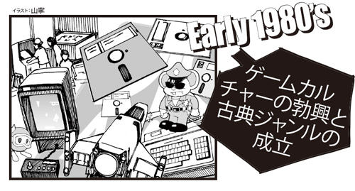
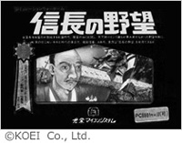
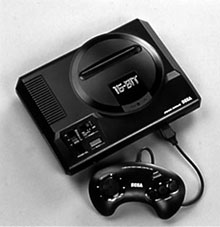
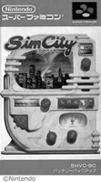
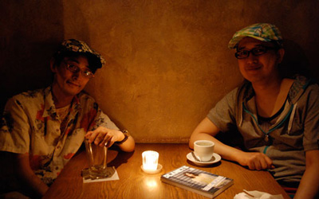
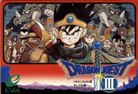
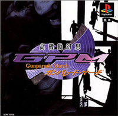
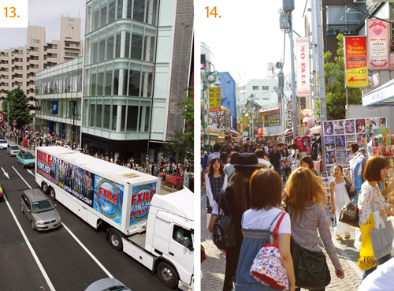
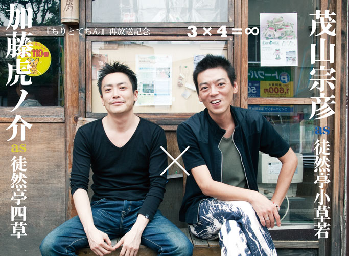

| PLANETS vol.7 | |
| 宇野 常寛 & 中川 大地 & 堀井 雄二 & 松野 泰己 & 芝村 裕吏 & ZUN & 竜騎士07 & 濱野 智史 & 松井 玲奈 & 中沢 新一 | |
| DAINIJI WAKUSEI KAIHATSU IINKAI (2013) | |
この電子書籍「PLANETS vol.7 Repackage」は、2010年8月15日発行の雑誌「PLANETS vol.7」を底本とし、特集記事を中心にコンテンツを整理して電子版向けに再構成したものです。
《巻頭グラビア》松井玲奈（SKE48）
（まつい・れな）
1991年7月27日生まれ。愛知県出身。
身長162㌢／血液型O型
SKE48チームE所属。ニックネームは「れな」。2013年春に行われた組閣ではチームEに異動し、若手中心のチームを引っ張るリーダーへ。SKE48の中心人物として、そして女優を中心としたソロ活動も積極的に行う。（撮影日時：2010年6月）
写真／尾鷲陽介
メイク／山下小百合
スタイリスト／加藤美香
［衣装クレジット］
ブラウス ￥5,985
パンツ ￥7,245
パール7連ブレスレット／参考商品
以上、N. Natural Beauty Basic*

《特集》ゲーム批評の三角形（トライフォース） ──アーキテクチャ、コンテンツ、コミュニケーション

数あるエンターテインメント表現のうち、最後発のジャンル「ゲーム」。それはデジタル技術の進歩に密着した最も先進的なカルチャーとして注目を浴びながら、あまりの裾野の広さ、様式の不定型さ、体験の多様さ、距離感の取りづらさに阻まれて、語りの試みが何度も挑んでは敗れてきた批評の鬼門だ。
だが、テクノロジーが規定するシステム設計＝〈アーキテクチャ〉の層と、クリエイターが創造する作品性＝〈コンテンツ〉の層が交錯するコンピュータ・ゲームほど、現代社会の構造がクリティカルに刻み込まれた文化はない。
実際、ここ20年ほどの主要なカルチャーの変容は、ゲームを震源に起こっていたとも言えるだろう。そしてゼロ年代を通過して、プレイヤーたちの〈コミュニケーション〉の層が前面化した現在。「ゲーム」の撒種は完了し、虚実を問わず、あらゆる環境に遍在する当たり前の風景になった。
そう。
もはやゲームの来歴を抜きにして、僕たちのリアリティは捉えきれない。
今こそ、鬼門を破るときが来た。
世代やトライブの垣根を超えて、ゲームのコトバを、ここに開く──！
【日本ゲームの進化史──2つの三角力学の交錯として】
『スペースインベーダー』から『ラブプラス』まで。コンピュータゲームがカルチャーとして勃興してから30余年、ゲームの「進化」はどんな〈力〉に駆動されてきたか？ 3つのプラットフォームと3種のロジックで、日本ゲーム史を概観する。
◉構成・文／中川大地
■80年代前半 「ゲームカルチャーの勃興と古典ジャンルの成立」

1980年代を幕開ける社会現象となったインベーダーブームを機に、ゲームは消費社会の新たなカルチャーとして姿を現した。これを嚆矢に、ゲームセンターとマイコンと玩具の三つの領域が相互浸透しながら、現在の主要なゲームジャンルの祖型となるヒットタイトルの数々が生まれていく。
コンピュータゲームの「起源神話」
ゲームの歴史の起点をどこに取るかには、諸説ある。そのうち広く知られ大きな神話力を獲得しているのは、1958年にオシロスコープ上で遊べるテニスゲームを作成した米ブルックヘブン国立研究所のウィリー・ヒギンボーサム博士を「テレビゲームの父」とする史観であろう。ヒギンボーサムは、第二次世界大戦期、マンハッタン計画で原爆開発に参加した科学者。つまり、アメリカ国家の軍事技術としての罪深い出自をもつコンピュータを無為な「遊び」に解放し、科学の平和利用を企図したプロメテウスとして彼を捉え、ゲームにカウンターカルチャー的な由緒を見ようとする心性が、ここには垣間見える。
時代を下って71年には、アタリ社を創設するノーラン・ブッシュネルが世界初の業務用ビデオゲーム『コンピュータースペース』を開発。ピンボールやエレメカに並ぶアーケード用の遊戯機器として、コンピュータゲームを庶民の生活世界に解放した。そしてアタリが72年に発売した二人用テニスゲーム『ポン』や、その発展形で「囚人が壁を破壊して脱獄をはかる」というモチーフを持つ76年の『ブレイクアウト』（日本では『ブロックくずし』）などが大ヒット。ストリートの不良文化的な磁場の中で、アーケードゲーム産業が確立する。
一方、『ポン』と同年に史上初の家庭用テレビゲーム機「オデッセイ」がマグナボックス社から発売されている。こちらは中流階級以上の家庭の団欒ツールとして、異なる文化性を持った市場が切り拓かれることになった。
インベーダーブームの衝撃と国産アーケードゲームの発展
こうした黎明期のビデオゲームは、他のカルチャージャンルと同様、まずはアメリカからの輸入産業として日本にも上陸し、ボーリング場などの大規模遊戯施設や駄菓子屋の軒先、喫茶店のテーブルなどに持ち込まれた。
そんな風景の中、タイトー開発の『スペースインベーダー』が78年に稼働を開始。『ブロックくずし』のブロックが動いて迫ってくるのを砲台で撃ち落とすゲームとして発展させ、いわゆるシューティングゲーム（STG）の元祖となった同作は、時代を象徴する社会現象になるほどの大ブームを引き起こす。このヒットによって日本におけるゲーム産業は本格的な社会的認知を受け、全国にゲームセンターという場を増殖させるに至った。
以来、ゲーセンを舞台に80年代前半の国産アーケードゲームは爆発的な発展を遂げる。CPUなどの電子アーキテクチャの日進月歩の進歩を、主に描画能力とプレイヤーの操作への反応性の向上に費やしながら、『パックマン』『ドンキーコング』から『ゼビウス』に至る、「反射神経」を競う多彩なアクションゲーム（ACG）が次々と生み出されていく。
同時に、ハイスコア競争が高じて攻略同人誌などを作りだしたユーザーコミュニケーションのムーブメントからゲーム専門誌が立ち上がるなど、ゲーマー文化も急速に発達していった。
マイコンブーム、ゲーム＆ウォッチからファミコンへ
ゲーセンが多彩なオリジナルゲームを牽引するのと同じ頃、家電業界では「マイコン」と呼ばれたパーソナルコンピュータ（PC）が各社から製品化され、ブームを巻き起こしていた。当時のPCは到底実用に耐えず、あくまでプログラミングの体験を通じてSF的な未来気分を味わえるホビー機でしかなかったが、アドベンチャー（AVG）やロールプレイング（RPG）などゲーセンにない最先端の思考型ゲームを日本に紹介するプラットフォームとなった。また、ゲームの受け手が作り手になるUGC（ユーザー生成型コンテンツ）のメディアとしても機能し、のちのゲーム産業を支える多くの人材を育ててゆくことになる。
一方、玩具市場では、老舗の花札・トランプ屋だった任天堂を中心に70年代後半から各種テレビゲームの発売が始まっていたが、大きなブームになったのは80年に横井軍平開発のLSIゲーム機「ゲーム＆ウォッチ」シリーズである。任天堂ハードの最初のブレイクが携帯型ゲーム機であったことは、のちの歴史を考えると示唆的だ。
かくして、アーケード・PC・玩具の3領域それぞれにブームが起き、ゲームという新興風俗が社会に浮上する。そしてその全領域の進歩が合流するかたちで、日本ゲームは決定的な転回を迎えてゆく。それをもたらした存在こそ、83年発売の任天堂「ファミリーコンピュータ」であった。
| 1958年 | ヒギンボーサム博士、オシロスコープを用いた「Tennis for Two」を作成 |
| 1971年 | ノーラン・ブッシュネル、世界初の業務用ビデオゲーム『コンピュータースペース』発売 |
| 1972年 | アタリ『ポン』発売 マグナボックス、世界初のテレビゲーム機「オデッセイ」発売 |
| 1978年 | タイトー『スペースインベーダー』発売 |
| 1980年 | 任天堂「ゲーム＆ウォッチ」発売 |
| 1981年 | NEC「PC-6001」発売 |
| 1983年 | ナムコ『ゼビウス』発売 任天堂「ファミリーコンピュータ」発売 |
〈ゲームハードの生態系〉
|
ファミリーコンピュータ（FC） 任天堂／1983年7月15日発売 |
「アーケード」と「マイコン」の結節点
「ゲーム＆ウォッチ」を成功させた任天堂が、そのノウハウを用いて初めて投入したROMカセットによるソフト交換式のテレビゲーム機。当時のゲームには、高い反応性と美麗なグラフィックならゲーセンで、高い思考性や家でじっくり遊べる環境ならマイコンでという棲み分けがあったが、ファミコンはこの両者の間を埋めた。マイコン並みのCPUを持ちながらより手軽で、描画能力は劣るがアーケードに迫るクオリティのゲームが沢山遊べて、しかも値段はそこそこ。絶妙なハード性能と豊富なソフトで当時のテレビゲームの常識を打ち破り、他を駆逐して標準機の座を獲得。任天堂は世界の家庭用ゲーム業界に長く王者として君臨することになる。（永沢壱朗）
〈ヒストリカル・コンテンツ〉
──時代を彩った名作タイトルたち
（以下、AC＝アーケードゲーム、PC＝パソコンゲーム、FC＝ファミリーコンピュータ、MD＝メガドライブ、SFC＝スーパーファミコン、SS＝セガサターン、PS=プレイステーション、N64=ニンテンドー64、DC＝ドリームキャスト、GB＝ゲームボーイ、GBA＝ゲームボーイアドバンス、GC＝ゲームキューブ、PS2＝プレイステーション２、DS＝ニンテンドーDS、PSP=プレイステーション・ポータブル）
【AC】
|
スペースインベーダー タイトー／1978年 |
人間の攻撃本能を刺激した元祖シューティング
画面上方より迫り来るインベーダーを、最下段の砲台を操作し弾を撃って倒すという、プリミティブなSTG。『ブロックくずし』でのボールでブロックを崩していくゲーム性を、敵味方の攻防に置き換えるかたちで成立したと言われている。黎明期のアーケードシーンに空前のブームを引き起こし、社会現象に発展。あまりの人気でゲーム筐体が100円玉で一杯になって硬貨が入らなかった、人気を当て込んでパチンコ店が「インベーダーハウス」に鞍替えした等々、数々の逸話を残している。海賊版や亜流が数多く登場したことでも有名だ。初期筐体は左右移動ボタン＋ショットボタンの構成だったが、後にジョイスティック＋ショットボタンに変更された。（宍戸晃男）
【AC】
|
パックマン ナムコ（現:バンダイナムコゲームス）／1980年 |
ゲームの「キャラクター性」を高めた草分け的傑作
迷路に配置されたドットを、敵に捕まらないようにすべて食べるという「ドットイートゲーム」の代表的存在。迷路内の四隅には点滅するパワーエサがあり、これを食べることでモンスターに反撃できる。操作方法も4方向レバーのみとシンプルで、キャラクターの可愛さも相まって女性にも人気を博し、爆発的にヒット。おしゃれでポップなキャラクターゲームの作り手として、ナムコのブランド性を確立した。アメリカでは『パックマン』ブームが起き、数々のキャラクターグッズが発売されたほど。後に、最も成功した業務用ゲームとしてギネスブックに掲載された。人気と相まって、『インベーダー』などと同様、違法コピー品や勝手に改造したバージョンも多々あった。（宍戸晃男）
【PC】
|
ウィザードリィ Sir-Tech／1981年 |
コンピュータRPGのフォーマットを確立した元祖
TRPG（テーブルトークRPG）の代表である『D＆D』（ダンジョンズ・アンド・ドラゴンズ）に触発され、ロバート・ウッドヘッドとアンドリュー・グリーンバーグが開発したダンジョン探索ゲーム。『ローグ』『ウルティマ』とともにコンピュータRPGの始祖的作品とされ、現在においてもなお新シリーズが開発、発売されている。戦士、盗賊、僧侶、魔法使いなどのキャラクターを自由に作成してパーティを組み、一人称視点で表示されるダンジョンを探索して経験値と財宝を漁るハック＆スラッシュのスタイルが基本で、深層に潜るほど敵が強くなり、見返りの報酬も大きい。物語性はほとんど無いが、以後のRPGがほとんど同様のスタイルをなぞっていることからも、その中毒性の高さがうかがえる。（永沢壱朗）
【AC】
|
ドンキーコング 任天堂／1981年 |
ゲーム創世記の歴史を刻むマリオのデビュー作
任天堂がリリースした古典的ACGで、今や同社の看板、マリオの初登場作品でもある。一大ブームを巻き起こした『ゲーム＆ウォッチ』やファミコンなど数多くのハードにも移植されており、そちらのほうが有名ではないだろうか。しかし、ゲームがまだ混沌としたメディアであることを象徴するように、当時は本作のコピー商品などが出回り、いくつかの訴訟も起こしている。現在の表現能力からみれば微笑ましいほど単純な内容でありながらも、自由な制作環境と可能性が溢れていた時代は同時にたくさんの問題を抱えており、一見コミカルな愛らしいキャラクターたちが登場する本作にも、そんな歴史が確かに刻まれているのだ。（三浦徹也）
【PC】
|
ミステリーハウス マイクロキャビン／1982年 |
AVGの定番スタイルを確立した洋館脱出ゲーム
日本に初めて本格的に輸入された、文字と画像を用いたAVG（アドベンチャーゲーム）。海外では、1980年にシエラ・オンラインから同名ゲームが一足先に発売されているが、日本ではマイクロキャビン版が有名。閉じ込められた「ミステリーハウス」から脱出するため、画面を見ながらプレイヤーが行動を英語で入力していき、謎を解いていくというゲーム。すがやみつる氏のマイコン入門マンガ『こんにちはマイコン』にも取り上げられたことでも大きく注目された。この作品をきっかけに、マイコン向けの国産AVGブームが起き、『サラダの国のトマト姫』のようにカタカナ入力が可能になったり、『オホーツクに消ゆ』のように、コマンドをテンキーから選ぶ方式へと進化していく。（宍戸晃男）
【AC】
|
ゼビウス ナムコ（現：バンダイナムコゲームス）／1983年 |
ゲーム文化の性格を変えた歴史的な縦スクロールSTG
ナムコから発売された、遠藤雅伸の開発による初の縦スクロールSTG。ゲームシステムとしては、対空・対地で完全に分化した攻撃手段、プレイヤーの腕に合わせてある程度変化する敵の出現パターン、謎めいた隠れキャラなどを特徴とし、アーケードシーンに大きな衝撃を与えた。加えて、STGの常識を打ち破る美麗な背景グラフィック演出や音楽、壮大なバックストーリーや世界観設定などにより、ゲームに本格的な物語性を与えたタイトルとしても画期的で、同時代のカルチャーにも少なからぬ影響を与えている。そうした「謎」と「物語」を有するゲーム文化は、同じく遠藤が開発した『ドルアーガの塔』に引き継がれ、さらなる展開を遂げていく。（永沢壱朗）
【PC】
|
ロードランナー ブローダーバンド／1983年 |
アクションとパズルが見事に調和した作品
画面内にある金塊をすべて回収し、現れたハシゴを登るとステージクリアとなる面クリア型アクション。プレイヤーキャラは足場となるレンガに穴を掘れるレーザーガンを所有し、これを利用して敵を落としたり下の階層に降りつつクリアを目指す。オリジナルはブローダーバンド社で、国内ではシステムソフトなどが発売。『ロードランナー』の登場により、面クリア型パズルアクションが雨後の竹の子のように登場したほど、当時のゲームに多大な影響を与えている。なお、正式名称は『Lode Runner』だが、カセットテープのゲームを購入し遊ぶだけのユーザーを揶揄した「Load Runner」（ゲームをロードして実行（Run）するだけ）という表現もあった。（宍戸晃男）
【PC】
|
信長の野望 光栄マイコンシステム（現：コーエーテクモゲームス）／1983年 |

現在までシリーズの続く歴史シミュレーションの代名詞
1981年の『川中島の合戦』に端を発する、国産コンピュータSLG（シュミレーションゲーム）の金字塔にして、「歴史シミュレーション」というジャンルを確立した作品。プレイヤーは織田信長または武田信玄となり、17カ国を攻略して全国統一を目指す。四季ごとに回ってくるターンごとにコマンドを選択し、富国強兵や戦争を行っていく。それまでのSLGは、どちらかというと将棋や囲碁のような戦術レベルでの戦いが主だったが、本作では領地を経営するという経済的概念を導入。当時のゲームプレイヤー以外にも好評を得て、数多くのマイコンやオフコンに移植されている。領地経営という考え方は、その後に登場した『三國志』シリーズなどにも受け継がれた。（宍戸晃男）
■80年代後半 「ファミコンブームとゲームの『日本化』」

ファミコンの登場は、多くの日本人に初めて本格的に共通のハードウェア・アーキテクチャ上で交換可能な無数のソフトウェア・コンテンツを消費する体験をもたらした。そうした体験性が広いコミュニケーション文化を確立する中で、主にアーケードやPCが果たしていた海外ゲームの輸入機能は縮小・変質し、ゲームの「日本化」が進んでゆく。
ファミコンが変えたコミュニケーション文化
どこかバタ臭いSFチックな意匠が目立ったそれまでのテレビゲーム機やマイコンと異なり、臙脂とベージュの落ち着いた色づかいのファミコンは、もはや漠然とした「未来」への期待感を必要としない日常の遊びのプラットフォームとして、日本家庭の生活空間にすんなりと溶け込んでいった。
ファミコンの初期タイトルは、任天堂の『麻雀』『ベースボール』といったテーブルゲームやスポーツものを除けば、『ギャラクシアン』『マッピー』といったナムコのヒットタイトルや、ハドソンが輸入した『ロードランナー』等、アーケードとマイコンの人気タイトルの良質な移植ハードとしての性格が強かったが、徐々に魅力的なオリジナルタイトルも増え、国産ゲームの進化の主戦場となっていく。
初期の光景としてとりわけ特徴的だったのは、『マリオブラザーズ』や『バルーンファイト』といった二人プレイ可能なタイトルでの対戦プレイだろう。あるいはシングルプレイ専用であっても、それぞれが自分の持っているソフトを持ち寄ったり貸し借りしたりと、子供社会のネットワークを大きく触発したことで、それまでとは違う広範な共通体験としてのファミコンの文化性が築かれていったと言える。
子供たちの小コミュニティの全国的な広がりと、次々と創刊されたゲーム攻略雑誌でのメディア・コミュニケーションを基盤にして、この時代特有のムーブメントとして盛り上がったのが「裏技」探しだった。プログラムのバグや隠しコマンドなど、アーキテクチャの偶発的な裂け目と能動的に戯れる作法は、時に数々のデマや都市伝説を孕みつつ、通常の攻略競争以上に濃密なコミュニケーションを生んだ。
85年発売の『スーパーマリオブラザーズ』は、ファミコン最大のヒットであると同時に、まさにこうした裏技コミュニケーションがドライブしたファミコンブームのピークを象徴するタイトルでもあったのだ。
全国大会からRPGへ
ファミコンブーム期に見られたもうひとつの盛り上がりとしては、同じく85年発売のハドソンのSTG『スターフォース』が皮切りとなって行われた「全国キャラバン」という全国的なゲーム大会が挙げられる。ハイスコア競争といえばゲーセンでのそれが専らであったが、共通化したプラットフォームが行き渡ることで、統一的な「競技」が成立するようになったわけである。そうした腕前競争に挑む少年たちのスターとして、ハドソンの高橋名人を筆頭に各メーカーが「ファミコン名人」を看板に打ち出し、マスコミを賑わせたことも、当時の社会風俗としてしばしば懐古される通りだ。
だが、そうしたプレイヤー間の旺盛なコミュニケーションがゲーム・カルチャーを先導したシーンの雰囲気は、翌86年あたりから少しずつ変調を始める。それまではアーケード移植のアクション性の高いゲームがファミコンソフトのほとんどを占めていたわけだが、『ポートピア連続殺人事件』のようなAVGが巧みに移植されたのをきっかけに、コマンド選択式で謎解きや物語をインタラクティブに味わうスタイルのゲームが、ユーザーが開かれ始めたためだ。そうした体験を全面化させたのが、ファミコン初のオリジナルRPG『ドラゴンクエスト』のヒットであったのは言うまでもない。翌年発売の『ファイナルファンタジー』の追走を受けつつ、『ドラクエ』は国民的ヒットシリーズとして成長し、RPGというゲームシステムを幅広い世代に普及させることに成功した。同時に、「剣と魔法のファンタジー」という物語題材を一気に国民的なメジャーの域に押し上げ、ゲームのみならず日本の青少年向け物語コンテンツ全般に大きな変化をもたらしたのだった。
ファミコンブームの影で
ファミコンブームが席巻した80年代後半は、84年の風営法改正によるゲーセンの営業制限等の影響もあり、相対的にアーケードが低調になった時代でもあった。そこそこの移植ゲームが自宅でできるファミコンの影響で客足が鈍る中、少しでもゲーセンに足を運ばせるための差別化として、『ハングオン』などの体感型大型筐体ゲームなどが登場する。
マイコンブームが一段落した後のPCゲームは、AVGやRPGに『アルファ』や『イース』など、アニメ絵調のグラフィックを導入したオリジナル作品や版権ものなど、コア層向けのオタク的なコンテンツが目立ってくる。
80年代終盤には、そうしたコア層にターゲッティングするかたちで、「PCエンジン」や「メガドライブ」といった新たな高性能コンシューマー機も登場し、王者ファミコンに対抗する動きも活発化しはじめていた。
| 1985年 | 任天堂『スーパーマリオブラザース』発売 |
| 1986年 | 任天堂、ファミコンの周辺機器「ディスクシステム」発売 エニックス『ドラゴンクエスト』発売 |
| 1987年 | アスキー「ファミコン通信」（現「ファミ通」創刊） NECホームエレクトロニクス「PCエンジン」発売 |
| 1988年 | セガ・エンタープライゼス「メガドライブ」発売 |
| 1989年 | 任天堂「ゲームボーイ」発売 |
〈ゲームハードの生態系〉
PCエンジン（PCE）
NECホームエレクトロニクス／1987年10月30日発売
高性能と多彩な拡張性がウリだったが...
アーケードゲームがほぼそのままのグラフィックで遊べる点を売りにしたコンシューマー機。オリジナル作品でもACGやSTGに強くRPGに弱いイメージがある。圧倒的シェアを誇っていたファミコンの後継の座を狙っていたものの、結果としてユーザーは一部のコアゲーマーに限られてしまい、一般家庭に浸透したのは後発のSFCとなる。それに対抗してCD-ROMやAV機器、拡張コントローラ、よりグラフィックを強化した後継機などを次々と発売したが、それがユーザーのマニア化を益々加速させる皮肉な結果となってしまった。（出口裕子）
メガドライブ（MD）
セガ・エンタープライゼス（現：セガ）／1988年10月29日発売

日本では二番手だが海外での最有力ハード
ファミコンに敗れた「セガマークⅢ」の後継機として開発された、セガの16ビット機。PCEやSFCとシェアを争った。結局のところ、日本においては任天堂に及ばなかったが、「ジェネシス」という呼称で発売されたアメリカをはじめ、海外においては高い評価を得ており、海外進出が遅れたSFCよりもはるかに大きなシェアを獲得している。初期はセガの開発したソフトが多かったものの、徐々にサードパーティのタイトルも増え、後継機であるセガサターンの発売まで一定の存在感を示し続けた。（永沢壱朗）
ゲームボーイ（GB）
任天堂／1989年4月21日
本格的な「個の時代」への先駆け
ゲーム＆ウォッチからの進化形として開発された携帯型ゲーム機。ROMカセットが交換可能な携帯機自体はほかにも存在したが、一般家庭に大きく普及したと言えるのはGBが最初であり、この後も一人勝ち状態が長く続くことになる。初登場は1989年で、当初はモノクロ画面でバックライトなし。また、GB同士の通信には専用のケーブルを必要としていた。本体もポケットにしまうには大き過ぎたが、のちにより小型化された「GBポケット」、バックライト付きの「GBライト」、カラー画面に対応した「GBカラー」が発売された。（出口裕子）
〈ヒストリカル・コンテンツ〉
──時代を彩った名作タイトルたち
【PC】
|
ザナドゥ 日本ファルコム／1985年 |
数多くのクリエーターを輩出したPC向けRPGの大傑作
日本のPCゲーム史上で未だに打ち破られていない、40万本販売という驚異的な数字を叩き出したARPG（アクションロールプレイングゲーム）。プログラマーの木屋善夫や都築和彦など、多数のクリエーターが有名になった作品の一つでもある。ゲームの目的はダンジョンの奥深くに眠るドラゴンを倒すことだが、敵の数が限られている中で主人公をいかにして成長させるのかが人により異なるため、文字通り千差万別の攻略方法が誕生するなど、異例の自由度の高さも話題になった。高い難易度も話題になり、T＆Eソフトの『ハイドライド』シリーズなどとともに当時のRPGを盛りあげた。以後、日本ファルコムは『イース』シリーズなどアニメ絵調のARPGを数多く制作、和製ファンタジーの立役者となっていく。（宍戸晃男）
【FC】
|
スーパーマリオブラザーズ 任天堂／1985年 |
一作で任天堂の覇権を決定付けた怪物ソフト
横スクロールACG金字塔にして不朽の名作。今もなお任天堂の看板であり、いくつものシリーズが開発されている『マリオブラザーズ』の出世作でもある。そのブームは社会現象の域となり、開発者の宮本茂も夢想だにしなかった4000万本以上という数を世界中で売り上げた。この記録は世界一売れたゲームとしてギネスブックにも登録されている。ファミコンというハードを各家庭に定着させ、さらにコントローラーの左側のボタンで攻撃、右側でジャンプというACGのインターフェースまで決定してしまった怪物ソフト。後のゲームクリエイターに与えた影響も非常に大きいとされる。（永沢壱朗）
【FC】
|
ポートピア連続殺人事件 エニックス（現：スクウェア・エニックス）／1985年 |
最も犯人が有名な推理AVGの代名詞
「犯人を見つける」という、他メディアではお馴染みとなっているプロットをゲームに取り入れ、国産ゲームとして最初の脚光を浴びた推理AVGが本作であろう。技術進歩による表現能力の差はあれど、「コマンドを入力していくだけでゲームが進む」という、今なおヒットする同ジャンルの基本スタイルをすでに確立した。しかし、特筆すべきは、殺人事件と言うハードな題材を扱いながらもゲーム特有なコミカルな表現が随所に盛り込まれており（虫眼鏡で太陽をみたときに注意されるなど）、チェスや将棋のように「相手を殺す」思想になりがちであるはずの従来のゲームに対して、大きな表現力を有するデジタルゲームの優位性を大きく象徴した作品である。（三浦徹也）
【AC】
|
グラディウス コナミ／1985年 |
美しさを前面に打ち出した画期的な横スクロールSTG
当時としては驚異的に美しいグラフィックで背景を描き、敵機のほかユニークな地形の攻略が要となる、革命的な横スクロールSTG。自機と同じ性能を持ちながらも当たり判定のないオプションや、カプセルを回収して任意の装備をパワーアップするなど、後のSTGの基礎を作った記念碑的作品でもある。特に、フル装備でレーザーを撃ったときの美しさに虜になるプレイヤーが続出。そのグラフィックを見たいがために、何よりも率先してレーザーのパワーアップを取ってしまい、序盤でゲームオーバーになる光景がよく見られた。2周目以降の、敵を倒すと飛んでくる"打ち返し弾"や、やられてからの復活パターンなども話題を呼んだ。（宍戸晃男）
【AC】
|
ハングオン セガ・エンタープライゼス（現：セガ）／1985年 |
アーケードならではの操作感。大型筐体の原型
ファミコンブームに押されたアーケードの巻き返しをはかる、セガの大型筐体による体感ゲーム第1弾。バイク型の筐体にまたがり、左右に傾けることでゲーム画面上の自機が左右に移動する。アップライトのモニターにハンドルだけで操作するバージョンもあるが、こちらはバイク型に比べてさほど稼働率が高くなかった模様。体感と言っても実際のバイクとは異なり、操作はアクセルとブレーキのみ。簡略化されながらも実物を模した筐体に乗り込んで後方視点の擬似3Dの世界に突っ込んでいく臨場感が好評を博し、以降、体感ゲームは『スペースハリアー』『アフターバーナー』『アウトラン』と、さらなる大型化、多様な可動化へと進化していくことになる。（永沢壱朗）
【FC】
|
ゼルダの伝説 任天堂／1986年 |
海外でも認められた人気シリーズの秘密
ディスクシステム第1弾ソフトとしてリリースされた、ファンタジー冒険ACG。当時のスペックで可能なかぎりの斬新なアイディアが無数に散りばめられている。例えば、オカリナに関する謎は、実際に鳴った音を聞いて謎解きするなど、ゲームの豊かな表現性を垣間見せた。以後、任天堂ハードの目玉シリーズに成長し、常に発売ハードの特性を活かした試みが盛り込まれる点も特徴。やや謎解きの難易度が高すぎるという声もあるが、古き良き時代の硬派な姿勢は海外で高く評価されており、愛らしい絵作りや妖精の少年が主人公でありながらも、"シリアスでハードな世界観"として認知され、国内以上の評価を獲得している。（三浦徹也）
【AC】
|
テトリス セガ・エンタープライゼス（現：セガ）／1988年 |
世界的な大ヒットとなった元祖「落ちものパズル」
元はソビエト連邦（現：ロシア）の科学者である、アレクセイ・パジトノフ氏が考案・開発した教育用ソフトウェア。1988年に、セガがアーケードでリリースした『テトリス』が爆発的人気を博し、一大ブームを作った。ルールは非常に単純で、画面上から落ちてくるテトリミノを並べていくだけ。横一列で揃うとテトリミノは消え、点数が入る仕組みだ。テトリミノの落下速度は徐々に速くなっていくので、次第に素早い判断と操作が要求される。当時、あまりにもヒットしすぎたため、セガだけでなくタイトー製基板への移植も行われたほど。この後、上から落ちてくるブロックを下に並べて消していくという基本ルールを踏襲した、落ちものパズルというジャンルが確立された。（宍戸晃男）
【PC】
|
シムシティ マクシス（現：エレクトロニック・アーツ）／1989年 |

自律型SLG全盛期の代表格
ウィル・ライト制作による、街を開発していくSLG。プレイヤーは1つの街の市長となり、施設の建築と都市の運営方針を指示してじっと見守るという地味なゲームだが、似たようなテイストを持つ『ポピュラス』と並んで当時大流行した（どちらも後に家庭用ゲーム機に移植されている）。当時、比較的性能のよいPCが安価で販売されるようになり、主にNECのPC-9801シリーズとその互換機が各家庭に普及していた。同時期の家庭用ゲーム機といえばまだファミコンが主流であり、ハードの性能差が顕著だったことも手伝って、これらSLGが普通のファミコンゲームとは異なる文化を持つ「大人向けゲーム」として盛り上がっていた時期でもあった。（出口裕子）
■90年代前半 「スーファミ一強時代の爛熟とニューウェイブの胎 動」
ポスト・ファミコンの座を狙い、PCEやMDが高性能を武器に挑戦するものの、ファミコンの正統後継機「スーパーファミコン（SFC）」の敵ではなかった。ハードの性能向上に伴ってRPGを中心に国産ソフトが大作化する一方で、海外からは新しい発想のゲームデザインが到来。アーケードには未曾有の対戦格闘ブームが、PCではアダルトゲームからの新たなジャンル創出が巻き起こる。
最初の「三国時代」のゆくえ
ファミコンの勝利によって、テレビゲーム機が単なる玩具の一カテゴリーではなく、徐々にコンテンツ・メディアとしての性格を獲得してきて以来、PCEとMD、そして1990年のSFCの登場は、コンシューマーゲームに事実上初めて「プラットフォーム競争」の図式をもたらしたと言える。
だが、『FFⅣ』『ドラクエⅤ』以降、ファミコン期の二大RPGシリーズを順当に引き継いだSFC以外の選択肢を一般のゲームユーザーが選ぶのは難しく、「国民機」の継承は早々に決着した。描画や音響の性能が右肩上がりに高まる中、当時のユーザーが求めたのは、誰もが長時間没入して楽しめるオリジナルの大作物語RPGやシミュレーションRPG（SRPG）だったからだ。PCEとMDもそれぞれ『天外魔境』『ファンタシースター』といった看板シリーズを生み出してはいたが、『ドラクエ』『FF』を脅かす域にはほど遠かった。
J-RPGの隆盛と洋ゲーショック
いずれにせよ、当時定着しつつあったJ-POPという、洋楽的な起源を忘却した邦楽の呼び名になぞらえるなら、さしずめ「J-RPG」とでも呼ぶべき日本独自のRPGこそが、コンシューマーの花形であった。『真・女神転生』『ロマンシング・サガ』など、シナリオ・システム両面で様々な工夫を凝らして爛熟していったJ-RPGシリーズが、SFC一強時代を牽引したのである。
ただし、SFCの最初期に注目を集めたのは、むしろ『シムシティ』や『ポピュラス』といった、新しいゲームデザインの海外シミュレーションゲーム（SLG）の移植であった。これはアーケードやGBでも発売されて世界的な人気を博していた落ちものパズルの祖『テトリス』とも合わせ、国産ゲームが既存ジャンル内での高度化ばかりでゲームデザインそのものの大きな進化がなくなっていたところへの久々の「異文化」流入となり、ゲームシーンに刺激をもたらしたことも、この時代のもうひとつの側面と言える。
「対戦格闘」ムーブメントの文化性
しかし90年代前半のゲームシーン最大のトピックは、しばらくメインの座をコンシューマーに明け渡していたアーケードから起こった。91年から稼働した『ストリートファイターⅡ』のブレイクに始まる対戦格闘というゲームジャンルとプレイヤームーブメントの勃興である。コマンド入力で出せる必殺技を中心に個性づけられた多彩なプレイヤーキャラクターと、他人のプレイ中に乱入してのプレヤー間対戦が可能な仕様により、ゲーセンは文字通りの「ストリートファイト」を基盤にしたコミュニケーション空間として再び活性化する。ファイト上の様々なルール意識や地域・使用キャラクターごとのチャンピオンなどを、全国に創発していった。
2Dグラフィックの『ストⅡ』に対抗し、93年に『バーチャファイター』がポリゴンキャラによる初の3D対戦格闘として登場すると、ブームはさらに加速。より現実的でストイックなプレイングを要するゲーム設計や3D表現の先進性により「クールなストリートカルチャー」として受容する層も現れてくる。かくて、以後のゲーセンは2D・3Dそれぞれのカテゴリーで様々な趣向を凝らした対戦格闘ゲーム一色に染まっていくのだった。
アダルトゲームからの新展開
PCというプラットフォームの性質も、80年代とは大きく変貌した。ビジネス機であるNECのPC-9801シリーズが「国民機」として定着し、実用OSとしてMS-DOSが普及することによって、マイコンブーム時代のような一般ゲームや活発なUGCを生むホビー機としての性格は希薄化し、ゲームに関してはコンシューマー機が扱えない分野、すなわちアダルトゲーム中心の媒体へと収斂しつつあった。
そして、映画や漫画などの先行メディアで、しばしばポルノ・コンテンツの爛熟が一般作品に影響を及ぼすラディカルな表現を生んだのと同様、グラフィック性能とアニメ等のオタク文化、AVG的なメソッドの進歩が結びついたこの当時のPCゲームにおいても、特異な進化が起こりつつあった。そのメルクマールになったのが、育成SLGというジャンルを築いた91年発売の『プリンセスメーカー』であり、エロゲーにおける「恋愛」過程の描写を一新した92年の『同級生』であろう。
これらの革新をコンシューマー機に移入するかたちで、94年には『ときめきメモリアル』が登場。全世代向けの恋愛SLGが確立し、ゲーム外のコンテンツにも影響を及ぼす大きな領域として、発展していくことになる。
| 1990年 | 任天堂「スーパーファミコン」発売 |
| 1991年 | スクウェア『ファイナルファンタジーⅣ』発売 カプコン『ストリートファイターⅡ』発売 |
| 1993年 | セガ・エンタープライゼス『バーチャファイター』発売 |
| 1994年 | 松下電器産業「3DO REAL」発売 コナミ『ときめきメモリアル』発売 セガ・エンタープライゼス「セガサターン」、 ソニー・コンピュータエンタテインメント「プレイステーション」発売 |
〈ゲームハードの生態系〉
スーパーファミコン（SFC）
任天堂／1990年11月21日発売
ソフトを恐竜的進化に至らせた家庭用機の傑作
ファミコンの後継機という位置づけで登場したROMカセット式の16ビット機。ただしソフトの互換性はない。色数や同時表示可能スプライト数、画面の回転・拡大・縮小機能など、描画や音源の処理能力は格段に向上しており、ファミコン同様のサードパーティ製ソフトの豊富さで他を引き離し、日本市場では最大のシェアを誇った。ゲームの大容量化に伴うソフトの値段の高騰、人気タイトルの恐喝や万引きなどが問題視されることもあったものの、プレイステーション（PS）、セガサターン（SS）、ニンテンドー64（N64）の「次世代機競争」の時代まで主流の座を保ち続けた。（永沢壱朗）
セガサターン（SS）
セガ・エンタープライゼス（現：セガ）／1994年11月22日
玩具になりきれなかった悲劇のハード
MDの後継機として、SFC後のシェア争いをPS、N64と繰り広げたセガの32ビット機。当時のアーケードと比較しても遜色のない描画・演算能力を持ち、代表作『バーチャファイター2』はミリオンセラーを記録した。ただ、その構造上の問題からコストダウンが難しく、他ハードとの値下げ競争についていくために赤字を膨らませていったあげく、新ハードであるDCに社内の期待が移ったため、当時の次世代機競争からは真っ先に脱落することになった。なお、当時では唯一18禁ゲームが発売されたコンシューマー機でもある。（永沢壱朗）
プレイステーション（PS）
ソニー・コンピュータエンタテインメント／1994年12月3日発売
ゲームソフトの価格破壊を行った新・国民機
ゲーセンでポリゴンを使用した3Dグラフィックスが台頭してきた時期に、リアルタイム3DCGをいち早く家庭に持ち込んだ32ビット機。データアクセスは遅いものの大容量で再生産が早くコストも安いCD-ROMをメディアに採用したことで、ソフトの価格も下げることに成功した。また、別売りのメモリーカードにプレイデータをセーブする方法を採用、新たなデファクトスタンダードを作る。同時期のSSとともにSFC後の次世代機戦争を繰り広げるが、『FF』『ドラクエ』といったビッグタイトルの発売により主導権を握った。（宍戸晃男）
〈ヒストリカル・コンテンツ〉
──時代を彩った名作タイトルたち
【FC】
|
ファイアーエムブレム 任天堂／1990年 |
戦略性と物語性を融合させたSRPGの始祖
シミュレーションRPG（SRPG）と呼ばれるジャンルの嚆矢。RPGでおなじみの剣と魔法のファンタジー世界と、『大戦略』や『ファミコンウォーズ』系の戦略性を組み合わせ、さらにユニットそれぞれに豊かなキャラクター性を付すことで、強いストーリー性やメッセージ性を打ち出せるようになった。特に後のシリーズでは、キャラクター間の恋愛や遺恨などの相性の要素も加わり、キャラゲーとしてメディアミックス展開への先鞭もつけている。余談だが、シリーズの生みの親である加賀昭三は独立して新会社を設立、同一の世界観を匂わせる『ティアリングサーガ ユトナ英雄戦記』を発売して任天堂から著作権侵害で起訴されたりもしている。（永沢壱朗）
【MD】
|
ソニック・ザ・ヘッジホッグ セガ・エンタープライゼス（現：セガ）／1991年 |
海外へ羽ばたく和製ゲームの先駆者
セガの代名詞とも言えるキャラクター「ソニック」が初登場した作品。MDのハード性能を最大限に生かして猛疾走するソニックの姿が、ほかのACGにはない爽快感をもたらしユーザーを魅了した。世界で注目される日本製ゲームキャラクターの先駆けとなった存在でもあり、海外での知名度は『マリオ』以上と言われることもある。むしろ、まず海外（主に北米）で有名になってから日本へ逆輸入された感もあり、そのためか「ソニックはアメリカ生まれ」と勘違いする人もいるようだ。また、当時の日本ではACGよりRPG、セガよりも任天堂のほうが一般の認知度や人気が高かったため、MDで本作をプレイしていたのはいわゆるヘビーゲーマー層であった。（出口裕子）
【PC】
|
プリンセスメーカー ガイナックス／1991年 |

きめ細かな反応が人気を博した対象育成型SLG
アニメスタジオとして知られるガイナックスが制作した、育成SLGの元祖。キャラクターデザインは、同社前作18禁ゲームの『電脳学園』と同じく赤井孝美。ヒロインに対して、様々なパラメータ向上のためのトレーニングを施し、「娘を自分の理想像に育て上げていく」というゲーム。10歳から18歳までという、女性がもっとも大きく成長する時期に干渉し、その生活態度によって、タイトル通り「お姫様」から「場末の娼婦」にまで変化させられるプレイの多様性が人気を博し、シリーズ化した。様々なジャンルのパラメータをコマンド入力で上げていくというスタイルは、『ときめきメモリアル』などの恋愛SLGにも影響を与えた。（永沢壱朗）
【SFC】
|
ストリートファイターⅡ カプコン／1991年 |
アーケードに世代交代をもたらした対戦格ゲー
対戦格闘ゲーム、いわゆる「格ゲー」の元祖にしてスタンダード。それまでSTGや新興の落ちものパズル等が中心だったゲーセンの風景を根こそぎひっくり返したタイトルでもある。正確には前作『ストリートファイター』の続編だが、キャラクターを選択してのプレイヤー同士の対戦を中心に据え、まさにゲームシステムのパラダイムシフトをもたらした。また、乱入対戦が可能なシステムを採用。これにより勝者側のプレイヤーは敗北するまでゲームを続けられるが、敗者側は最長でも3分程度で1クレジットを消費し、客の回転率は爆発的に早くなる。他社の開発もこの効率に注目しないはずがなく、多くのゲームセンターが格ゲーの対戦台に占領された。（永沢壱朗）
【FC】
|
第2次スーパーロボット大戦 バンプレスト／1991年 |
「キャラゲー」を進化させたシリーズの萌芽
「子どもの夢」を忠実に実現してきたバンプレが、コンパチヒーローを経てたどり着いたのがこの『第2次』でスタイルを確立させた『スパロボ』だった。SRPGという「好きなキャラだけえいこひいき」がしやすい器を得ることで異なる作品のキャラクターを共演させるアニパロ／二次創作的欲望は確実に進化し、忘却のかなたに消えつつあった無数のロボットアニメをリバイバルさせていった。その手法は本家『ガンダム』や特撮作品のプロデュースにまで応用され、日本のエンタメ・シーンを書き換えていく。それは同人文化の露骨な吸収であると同時に、常に二次創作的欲望に駆動されてきた日本カルチャーの象徴（鬼子）でもある。本シリーズを抜きにして、キャラ文化は語れない。（宇野常寛）
【SFC】
|
弟切草 チュンソフト／1992年 |
「サウンドノベル」を確立した記念碑
画面に表示されたテキストを小説のように読み進めながら、要所要所で出現する選択肢によってストーリーやエンディングが変化するホラーゲーム。繰り返しプレイすることが前提で、徐々に解明される謎やパラレルな展開を楽しむ作りなのだが、当時はこのような仕掛けはまだ珍しかった。グラフィックは挿絵程度のシンプルなもののみで、セリフ等はまだ音声化されていない（効果音やBGMは演出の一環として入っている）。ゲームの形態は広義のAVGに含まれるが、制作元のチュンソフトが本作を「サウンドノベル」と命名していたため、本作以降の続編や関連作はもちろんのこと、他社の類型ゲームも「サウンドノベル」と呼ばれるようになった。（出口裕子）
【SFC】
|
トルネコの大冒険 不思議のダンジョン チュンソフト／1993年 |
スピンオフ手法のメジャー化
のちに『風来のシレン』等へと続く『不思議のダンジョン』シリーズの第一弾。また、既存ヒット作のスピンオフからさらにヒットを生む構造を作った作品でもある（スピンオフの手法自体は『ぷよぷよ』が先だった）。主人公トルネコは見た目こそ中年オジサンだが、『ドラクエⅣ』に登場するメインキャラクターの一人であり、作中で登場する敵モンスターやアイテム類も『ドラクエ』の世界観に基づいている。その親しみやすさに加え、シンプルでやりこみ甲斐のあるゲーム性があいまって見事にヒット。システムが過去のPCゲーム『ローグ』の流用であることを批判する声も一部ではあったものの、結果としては、同作の優秀な発展形として市民権を得ることになった。（出口裕子）
【SFC】
|
ときめきメモリアル コナミ／1994年 |

登場キャラクターに恋をする人々を生み出した作品
恋愛SLGというジャンルを確立したタイトル。ROMカセットがメインだった当時、CD-ROMという大容量を活かし声優を起用してのボイスや、オープニングソングなどのマニア心をくすぐる演出に加え、ゲームとしてのバランスも優れていたことで爆発的な人気を呼ぶ。プレイヤーは高校3年間を通して自分を磨き、13人のヒロインから意中の相手に告白されることを目指す。後に発売されたPS版をきっかけに、ギャルゲーブームの立役者となる。登場するキャラクターごとのCDを発売したり、バーチャルアイドルとしてメインヒロインの藤崎詩織をデビューさせる、イメージガールコンテストを行うなど、知名度上昇に伴いゲーム以外のジャンルにも幅広く展開していった。（宍戸晃男）
■90年代後半 「『次世代機競争』がもたらした3D革命とライトコン テンツ化」
SFCの次の時代を狙う、SSとPSを基軸としたコンシューマーゲームの「次世代機競争」は、3D性能に長じたPSに軍配が上がった。Windows95やCD-ROMの普及などでPCを中心にした情報環境が社会的に一新される中、多くのゲームジャンルで、それまでゲームに興味のなかった幅広い年齢層のライトユーザーの取り込みが進み、ゲームは本格的に「コンテンツ化」してゆくことになる。
「次世代機競争」がもたらしたアーキテクチャ条件
阪神・淡路大震災やオウム真理教事件が発生した1995年は、日本社会やカルチャー全体の動向の大きな転換点として振り返られることが少なくないが、それはゲームにおいても例外ではなかった。PSやSS、「3DO REAL」といた「次世代機」の登場によって、誰もが盤石と考えていたコンシューマーゲームでの黎明期以来の任天堂の覇権が、ついに崩れ去っていく時代が到来したのである。その主要因は、主にソフト供給のCD-ROM化と、ゲーム・グラフィックの本格的な3D表現への移行にある。
「マルチメディア」という言辞が、いろいろと懐疑を寄せられながらも世を騒がせていたこの時代、GUIによってそれこそ誰もがゲームのようにPCを使えるようになるWindows95が登場し、いよいよ不可欠な社会インフラとしてオフィスや家庭に浸透していく中で、PCと家電とゲーム機の機能が、それまで以上に接近していく大きな流れがあった。ゲームの媒体が大容量の光学ディスクに移行することは、ゲーム以外の種々の視聴覚コンテンツも同等に扱えるようになることを意味していたが、この変化をどのような塩梅で捉えるかが、ゲームハードの勝負の分かれ目となったと言える。
つまり、完全に家電の規格競争のパラダイムで「マルチな情報家電」として製品を投入し、現実以上にメディアの融合に期待をかけすぎた3DOは早々に敗退し、ファミコン以来のROMカセット式に固執した後発の「NINTENDO64」も、失地を回復することはできなかった。
結局、市場を制したのは、3D表現で他に一歩抜きん出た性能を持ち、あくまでも「ゲーム機」であることを強調したPSだった。その成功が、音楽CD流通のノウハウを持つSCEによる、小売店からのオンデマンド的な受注生産が可能な、CD-ROMの特性を活かしたソフト流通戦略によってもたらされたことはよく知られている。これにより、従来の任天堂の問屋を通じた玩具流通のシステムを凌駕する販路の拡大と柔軟な在庫管理が可能になり、サードパーティにとっても参入障壁の低いローリスクなゲーム開発が可能になったため、多種多様なソフトが生まれ、百花繚乱の「PS黄金期」を築き上げていくのである。
ライトコンテンツ化の諸相
PSは発売初期こそキラータイトルに恵まれず、『バーチャファイター』シリーズを擁するSSに押されて苦戦したものの、それまでゲームに興味のなかったライト層に向け、おしゃれでカジュアルなイメージをPRする徹底したブランディングで、徐々にブームを巻き起こしていった。それを端的に象徴するタイトルが、パーティーゲームとして楽しまれた『パラッパラッパー』であり、「映画的」演出でブレイクした『バイオハザード』であり、リアルな実車の運転感覚を再現した『グランツーリスモ』であろう。このPSの新たな「国民機」化の潮流は、97年の『FFⅦ』の発売によって決定づけられることになった。
劣勢を挽回すべく、翌98年にはセガが「ドリームキャスト」を投入。それまでのマニアックなイメージを自虐的に塗り替える「湯川専務」などの広告戦略や『シーマン』などの「変」なゲームの投入でライト層の取り込みにかかったことも、業界競争的な空気を盛り上げた。
ライト層向けのコンテンツが新しい潮流となっていたのはアーケードも同様で、対戦格闘ものが次第にマニアックな方向に閉ざされ、ゲーセンの奥に押しやられていくのと入れ替わるように、『プリント倶楽部（プリクラ）』や『UFOキャッチャー』といったプライズゲームが軒先を占めるようになっていく。また、『ビートマニア』や『ダンスダンスレボリューション』といった音ゲーや、『電車でGO！』のような一般層を惹きつけたシミュレーターゲームの登場で、ゲーセンはかつてのような薄暗い不良の溜まり場的なイメージを払拭し、まるでアミューズメントパークのような空間として生まれ変わってくことになる。
ゲーム新世代がもたらす新たなコミュニケーション文化
ゲームの世界で「次世代」が台頭したのは、ハードの面ばかりではない。96年、発売7年を経て、すっかり枯れた機種となっていたGBに『ポケットモンスター』が登場し、子供たちの支持を得て空前のヒットを記録。通信ケーブルを理想的なかたちで使ったポケモン交換のシステムが当たり、『マジック：ザ・ギャザリング』などのトレーディングカードゲーム（TCG）の隆盛と相まって、以後のキッズカルチャー全般を書き換えていくほどのムーブメントに成長してゆく。それは、ファミコン世代が牽引してきたゲームカルチャーの中に、新たな世代のコミュニケーション文化の胎動が始まったことを意味していた。
また、PCの一般普及に続いて、インターネットが次第に浸透していくようになると、コアゲーマー層には海外の先駆的なオンラインゲームに取り憑かれる者たちが登場する。ファーストパーソンシューティング（FPS）の元祖『DOOM』『Quake』や、『Diablo』『ウルティマオンライン』といった草分け的なオンラインRPGなどの洗礼は、独自進化を遂げてきた日本ゲームに、改めて「異文化」の刺激と目指すべき正統的な目標像を提供してみせた。
| 1995年 | アトラス『プリント倶楽部』発売 マイクロソフト「Windows95」発売 |
| 1996年 | 任天堂『ポケットモンスター』発売 任天堂「NINTENDO64」発売 |
| 1997年 | スクウェア『ファイナルファンタジーⅦ』発売 Origin Systems『ウルティマオンライン』発売 |
| 1998年 | セガ・エンタープライゼス「ドリームキャスト」発売 |
| 1999年 | ソニー・コンピュータエインタテインメント「ポケットステーション」発売 バンダイ「ワンダースワン」発売 |
〈ゲームハードの生態系〉
NINTENDO64（N64）
任天堂／1996年6月23日発売
「主役は子供」を貫いたが...
SFCの後継機として発売された64ビット機。3Dスティックや二種類の握り方ができるコントローラーなど、ゲーム機としての遊び方の多彩さが特徴だったが、PSが標準機となっていく流れを変えられなかった。原因としては、子供向けタイトルを重視していたためFCやSFCを遊んで大人になった層の受け皿になれなかったこと、メディアがROMカセットだったためにソフトが高価だったこと、SFCの人気タイトルの続編のいくつかがPSで発売されたことなどが挙げられる。結局、根強い任天堂ファンのみが支持する機体に終わった。（出口裕子）
ドリームキャスト（DC）
セガ・エンタープライゼス（現：セガ） 1998年11月27日
愛されつつ散った最後のセガハード
セガが社運を賭け、同世代機にあたるPS2やGCに先駆けて開発したSSの後継機。一般家庭へのインターネット普及率がまだあまり高くなかった時期、本体にモデムが内蔵されているだけでなくブロードバンドアダプタも装着可能で、ネット時代をいち早く意識した"夢を運ぶマシン"であった。また、WEBブラウザ「ドリームパスポート」が本体に同梱されていたため、DCでインターネットビューしてHP制作をした人もいたほど。ただ、残念ながらキラータイトルに恵まれず、ついにPS2を抜くことなく終わった。（出口裕子）
〈ヒストリカル・コンテンツ〉
──時代を彩った名作タイトルたち
【GB】
|
ポケットモンスター 任天堂（現在はポケモン）／1996年 |

クチコミのパワーを示した"小さな巨人"
ゲームのみならず、アニメや関連グッズで巨大市場を構築した全世界の人気者『ポケモン』。だが、初代ソフト（グリーンとレッド）が発売された当時のゲーム業界は「次世代機」「美麗グラフィック」「3Dポリゴン」等のハイテクノロジーが流行しており、白黒の小さな画面で遊ぶ本作がメディア等で大きく扱われることはほとんどなかった。やがて主に小学生の間でクチコミで人気に火がつき、巨大なムーブメントへと発展するのだが、その背景には「作品の完成度」「キャラクター」に加え、「対人要素が楽しい」「赤・緑の片方だけではコレクションが完成しない」というビジネスモデルの存在があった。みんなで遊んでこそ価値のでるゲームだったのだ。（出口裕子）
【PS】
|
パラッパラッパー ソニー・コンピュータエンタテインメント／1996年 |
音楽とゲーム性の直結によるユーザー層の拡大
PS初期のタイトル。ぺらぺらのコミカルなキャラクターが歌うラップのリズムに合わせてボタンを押していき、一定以上正確なタイミングで曲をクリアすることでストーリーが進行する。いくつかの続編があり、テレビアニメになったりもしているが、重要なのはこのタイトルによって音楽のリズムやメロディに合わせて様々なスタイルのインターフェースに入力していくタイプのゲーム、いわゆる音ゲーというジャンルが成立したことにある。『ビートマニア』や『太鼓の達人』『初音ミク-Project DIVA-』、後述する『ダンスダンスレボリューション』など直系、派生を問わず『パラッパラッパー』の後継といえるタイトルは多い。 （永沢壱朗）
【PS】
|
バイオハザード カプコン／1996年 |
次世代ゲームのヒットのカタチを示す
3Dポリゴンキャラと洋画的な題材・演出を採用した、PS屈指のアクションAVGシリーズ。映画のように場面ごとにアングルが切り替る手法（シネマビュー視点などと呼ばれる）など、多くの画期的技法で、PSの普及に貢献した。本作がのちの市場にもたらした最大の影響は、ホラーを題材として、"ゲームを遊ぶだけでプレイヤーを怖がらせる"ことによって、勝敗や点数、クリアだけが主眼となりがちだった従来のゲームに新たな魅力を取り入れたことにある。『メタルギア・ソリッド』シリーズなどと並び、ゲームが映画などと同等のコンテンツとして成立することを印象づけ、リアル志向の演出へとシフトしていく以後のコンシューマーゲームの指針となった。 （三浦徹也）
【AC】
|
電車でGO！ タイトー／1996年 |
「運転手は僕だ」を現実に
年齢を問わず多くの男性の憧れの職業・電車の運転士になる夢を叶えるシミュレーター型ゲーム。画面や運行規則など、構成要素はあくまでもゲーム用に作られ現実とは異なるものの、シリーズを追うごとに増すリアリティは鉄道マニアはもちろん、本職の運転士もお墨付きを与える完成度で話題を呼んだ。家庭用に移植された際は、小ぶりながらもマスコンレバー＋ブレーキレバーが入手できるとあって専用コントローラがヒット。本作のヒットを受け、バスや飛行機、パワーショベルなどの運転SLGが発売されたが、やはり鉄道に勝るものはなかった。"FINAL"と銘打ったソフトの発売以降も様々なハードで展開は続き、男たちは少年時代の夢を叶え続けている。（青山ようこ）
【PC】
|
Quake id Software／1996年 |
対戦ゲームをインターネットの世界に持ち込み大ブームに
id Softwareは『ウルフェンシュタイン3D』と『DOOM』によってFPS（ファースト・パーソン・シューティング）というジャンルを確立した。臨場感あふれる映像とシンプルで直感的な操作が生み出す暴力に満ちた世界は、瞬く間にアメリカの若いゲーマーたちを虜にした。中でもパソコンをLANで繋いで行う『DOOM』の対戦プレイは、日本における対戦格闘ゲームと同じように彼らを強く熱狂させた。そしてこれに続く『Quake』では、ついにインターネット経由での対戦が可能となり、ネットゲームへの道を大きく開いた。さらに97年には『Diablo』『ウルティマオンライン』といったオンラインRPGも登場し、確固たる市場を築き上げることとなる。（青木摩周）
【N64】
|
スーパーマリオ64 任天堂／1996年 |
新時代の幕開けを示唆した"3Dの箱庭"
ファミコン時代から連なる『スーパーマリオ』シリーズの正統続編としてリリースされたが、ゲームの内容は従来シリーズとは異なる趣きを持っていた。トリッキーな仕掛けをかいくぐって敵を倒すアクション性より、3D空間を探索する楽しさに重きを置いた印象が強く、それゆえ発売当時の評価は賛否両論となった。とは言え、『マリオ』の世界をまるごとリアルタイム3D化し、その中を自由に動き回れるようにしたことは非常に画期的。今でこそ当たり前の"仮想空間に入り込む感覚"を家庭用ゲームに初めて導入したのが本作なのだ。仮にACGとしては少々物足りない部分があったとしても、"散策ゲーム"として秀逸だったことは間違いない。（出口裕子）
【SS】
|
サクラ大戦 セガ／1996年 |
総合エンターテイメント時代の幕開け
大正文化を背景に歌劇団の美少女たちがロボットで戦うという世界観を持ち、恋愛AVGとSLG戦闘を合体させた斬新な作品。この頃から「アニメーションムービー＋主題歌」というオープニングのスタイルが流行り始めたが、オリジナル主題歌がヒットしてカラオケにまでなったケースは稀である。構成は徹底的にテレビアニメの体裁を意識しており、全10話の各話冒頭にはタイトルコール、本編はA・Bパートに分かれ、アイキャッチや次回予告が入るところまで踏襲していた。また、初の試みとしてゲームに出演した声優による舞台化もなされ、その後10年にわたり上演されていた。ゲームを原作にして演劇ジャンルにまで発展したのはこれが初の快挙である。（出口裕子）
【AC】
|
ダンスダンスレボリューション コナミ／1998年 |
ひとり用お立ち台？ 足で行う異形のゲーム
一般的な音ゲーと異なり、『ダンスダンスレボリューション』の大きな特徴はキー入力が"足"で行われることにある。すなわち、ディスコやクラブを模した大型筐体の上でリズムに合わせてタップするわけで、その運動量は他のゲームに比してかなり大きく、実際のダンスそのものに近いアクションを要した。そのためテレビなどでフィットネスに効果があると宣伝され、大きなブームを巻き起こすこととなった。特に、進歩を遂げてアーケードと互換性を持ちうるほどになった家庭用ゲーム機とのデータリンク機能を持ち、家で練習してゲームセンターで腕を披露することができるようになったのも大きい。裾野が広いだけに難易度も幅広く、最高レベルはまさに鬼。（永沢壱朗）
■00年代前半「ゲーム産業の二極化と発展の終焉」
新たな国民機となったPSの王座は順当に後継機「プレイステーション2（PS2）」に引き継がれたが、据え置き型ハードにおけるソフト開発費の高騰は、国産ゲームの発展を袋小路に陥らせた。右肩上がりだったゲーム市場の成長も頭打ちとなる中、コンテンツ性の追求の場は徐々に「ゲームボーイアドバンス（GBA）」などの新たな携帯型ハードや同人ゲームなど、小さな開発規模の場に移行してゆく。オンラインゲームも国内では期待ほどには盛り上がらず、閉塞感が漂いはじめていた。
据え置き型ハードの袋小路
ゲームハードのシェアをめぐる業界三国志的な図式が広く社会的関心を集め、エンターテインメントとして消費される状況は、21世紀まで続く。特に00年のPS2の発売は話題を集めたが、ハードへの注目と裏腹に、高スペックの醍醐味を味わえるようなソフトを開発する上での資金的・制作規模的なハードルは大きく高まった。そのため、安定した大作シリーズ以外には作る側も買う側も新作に手を出しづらい状況が生まれ、PS2はむしろ安価なDVD再生機として新たな映像メディアの普及に貢献することになる。
他方、任天堂もついに光学メディアに対応した後継機として01年に「ゲームキューブ」を投入。マイクロソフトが北米でのPCゲームの蓄積をバックにした「Xbox」で家庭用ゲーム機市場に参入したことと併せ、一定の話題を呼んだものの、ゲームハード開発からの撤退を表明したセガのDCと同様、どれも国内ではPS2の牙城を崩すには至らなかった。
結局、「ハードは売れるがソフトは売れない」状況で市場全体がマイナスに転じ、「ゲーム離れ」が叫ばれるようになっていったのが、この時期の日本ゲームの基本動向であった。
ミニマム・プラットフォームへの移行
だが、コンシューマーゲームの進化の最も重要な局面は、もはや据え置き機ではなく、『ポケモン』ブーム以来、携帯型ハードに移りつつあったと言えるだろう。すでに90年代末期にはバンダイの「ワンダースワン」やSCEの「ポケットステーション」といった複数のハードが競争を開始していたが、本格的な潮目の変化は01年登場のGBAから起こった。性能的にはSFCを弱冠上回る程度のスペックで、現役据え置き機よりもずっと小さな開発規模でゲームを作れるGBAは、ベンダーにとっても魅力的な選択肢となったのである。当初はSFC時代の作品の移植・リメイクや据え置き機のシリーズのスピンアウト企画が目立ったが、徐々に『逆転裁判』のようなオリジナルのヒットも登場し、携帯機市場を活性化していった。
他方、PC上での様々なツールとインターネットの普及によって、個人でのゲーム制作が非常に容易になり、即売会や専門ショップを通じての同人ゲーム市場が無視できない規模に成長していたことも、この時期の特徴と言える。こうした個人でのゲーム制作ツールは「RPGツクール」シリーズを嚆矢に、対戦格闘エンジンの「MUGEN」やSRPGツールの「SRC」など様々なジャンルのものが発展してきたが、特にめざましい展開を見せたのが「NScripter」などで制作されたノベルゲームの分野だ。その嚆矢となったのがTYPE-MOONの『月姫』で、ユーザーの口コミでのブレイクを機に数々のメディアミックス作品を生み出し、同人ゲームのクオリティが充分に商業コンテンツの供給源ともなる水準に達していることを強烈に印象づけることになったのである。
オンラインへの挑戦のゆくえ
典型的な海外MMO-RPGを到達目標とするコンシューマーゲームのオンライン化は、00年代初頭にはイノベーションの自明の方向性だと考えられていた。実際、00年の『ファンタシースターオンライン』や02年の『FFⅪ』などは、そうした期待を素直に受けて稼働したものだ。だが、そのユーザー数は伸び悩み、オンライン先進国であるアメリカや韓国に遠く及ばない状況が続いている。
他方、アーケードにもオンライン化の波が押し寄せ、エントリーカードによってプレイ履歴や戦績の保存や対戦が可能な『クイズマジックアカデミー』のようなタイトルが登場。さらに『WORLD CLUB Champion Football』を皮切りにTCGと組み合わせた新たなカテゴリーのゲームも生まれ、ゲーセンのコミュニケーション文化はさらなる独自進化を遂げていく。
ネットワークの方向性を中心に、海外の標準と日本ゲームとの間には、大きな食い違いがあることが、誰の目にも明らかになってきていた。
| 2000年 | ソニー・コンピュータエインタテインメント「プレイステーション2」発売 |
| 2001年 | 任天堂「ゲームボーイアドバンス」発売 任天堂「ゲームキューブ」発売 セガ、家庭用ゲーム機からの撤退を表明 |
| 2002年 | 任天堂「ニンテンドーDS」発売 |
| 2004年 | ソニー・コンピュータエインタテインメント「プレイステーション・ポータブル」発売 |
〈ゲームハードの生態系〉
プレイステーション2（PS2）
ソニー・コンピュータエンタテインメント／2000年3月4日
ヒット街道を爆進した上位互換機
PSの後継機。PSとの互換を保ち、かつDVD再生機としても最安値だったため、発売日当日から行列ができるなど爆発的なヒットを記録する。日本国内でのキラータイトル『FF』『ドラクエ』シリーズなどがPSに引き続き発売されたこともあり、PS2を上回る性能を持つライバルハードたちを大きく引き離して覇権を握った。通常モデルではハードディスクも搭載可能で、これを利用した『FFⅪ』のようなネットワーク対応RPGも登場している。現在までに全世界で1億台以上が販売され、ソフトが発売されている現役ハード。（宍戸晃男）
ゲームボーイアドバンス（GBA）
任天堂／2001年3月21日
携帯機と据え置き機の幸福な関係
GBの後継機。携帯機のメインプラットフォームの座を継承し、大活躍した。のちのDSと異なり、インターフェースは同じながらもスペックが向上したため、前機種のヒットタイトルを完璧に引き継げた点は本機の成功の大きな要因と言える。また、通信機能の高速化・性能向上も、携帯機に求められるユーザーのニーズに見事に対応。下手すれば特徴のない後継機で片付けられかねないが、余計なハイスペック・複雑化をせず、手軽に移動先で遊べるという携帯機の特色を明確に打ち出し、据え置き機との棲み分けに成功した名機である。（三浦徹也）
ゲームキューブ（GC）
任天堂／2001年9月14日
PS2全盛の影で小中学生が支える
N64の後継機にして、同世代の中では最後発のハード。メディアは独自規格の8㎝光ディスクで、ライバル機がDVDに対応しているのに対し、この規格のみを貫いた。そのため、グラフィック性能はPS2より上だったにもかかわらず、容量の制約がきつくなってしまったことは大きなマイナス要因だったと言える。また、大人向けタイトルの供給が少なく、メインユーザーは小中学生であった。専用ケーブルでGBAと連携させることができたという特徴もあり、PS2など見向きもせずGCやGBAだけで遊んでいた子供たちもいた。（出口裕子）
Xbox
マイクロソフト／2001年11月15日（日本では2002年2月22日）
ゲーム文化の差を思い知らせた「黒船」
実用ソフト界の覇者による、初のゲーム専用機。海外で圧倒的な人気を誇る世界水準のPCゲームをお茶の間に届け、和ゲーを蹴散らす「黒船」になるかと思われたが、国内ゲームファンの反応は冷ややかだった。ソフトの内容以前に、日本の住宅事情に不適な大きすぎる本体、国内のゲームファン層に対する宣伝アピールのズレ（ビル・ゲイツ自身が務めた）など、日本ローカルの事情を一切考慮しない入り口部分でのボタンのかけ違いがあった。そこがクリアされていれば、海外ゲームが日本市場を席巻した可能性は少なくなかったはず。（三浦徹也）
〈ヒストリカル・コンテンツ〉
──時代を彩った名作タイトルたち
【DC】
|
ファンタシースターオンライン セガ／2000年 |
日本初の家庭用ゲーム機向けMMO-RPG
『ファンタシースター』シリーズの歴史は古く、初代ソフトの発売は1987年にまで遡る。1～4作目はオフラインRPGとして制作されていたが、本作ではシングルプレイ用オフラインモードと多人数プレイ用オンラインモードが搭載された新シリーズとなっている。当時はPCをプラットフォームとした海外製ゲームしかなかったネットワークRPG界に、日本製の家庭用ゲーム機ソフトとして初登場した記念碑であり、それによってネットゲーマーの平均年齢を一気に下げプレイヤーの裾野を広げた。大作主義に傾いてやや閉塞感のあったRPG市場に新風を巻き起こした功績は大きく、ユーザーや業界からも高い評価を受けて第5回日本ゲーム大賞に輝いている。（出口裕子）
【PS2】
|
真・三國無双 コーエー（現:コーエーテクモゲームス）／2000年 |
歴史とアクション、さらに美形でドル箱交代
格ゲーだった『三国無双』から、広いフィールドを駆け回って三国志の有名な戦場に武将として介入するACGに変化した結果、多くのフォロワーを生む一大ジャンルと化したコーエーのドル箱。武将の多くは現実の芸能人をモデルにした美形のポリゴンで表現され、後に歴女と呼ばれる女性たちのハートをキャッチした。シリーズとしては順調にナンバリングタイトルを重ねる他、外伝的な『猛将伝』に国取りの要素を足した『Empires』、さらに戦国時代を舞台とした『戦国無双』、両者のコラボレーションにゲストを足した『無双OROCHI』、武将が変身する『MULTI RAID』など、その勢いは衰えを知らない。（永沢壱朗）
【PC】
|
月姫 TYPE-MOON／2000年 |
同人ゲーム市場の潜在力を知らしめた力作
同人ゲームながら、商業作品にはない魅力で一躍有名になった、TYPE-MOONの伝綺恋愛ノベルゲーム。サークル同士の宣伝がネット等での口コミに火をつけ、同人発でも作品の質と展開次第では商業市場をもしのぐ規模のヒットが可能であることを世に知らしめた。独特の文体と膨大かつ緻密な設定は、商業化してからの『Fate』でもいかんなく発揮され、その売り上げは18禁ゲームとしては破格の6桁に及び、さらにテレビアニメや映画、コミカライズへと展開していった。同人業界での二次創作、三次創作は数知れず。のちの『ひぐらしのなく頃に』や『東方project』シリーズのムーブメントへと続く起点となった。（永沢壱朗）
【GBA】
|
逆転裁判 カプコン／2001年 |

移植や続編に負けないGBAの華
GBA発売当初のソフトラインナップはSFCの移植やGBの続編等が目立っており、GBAオリジナルはヒット作に恵まれていなかった。そんな中、燦然と現れたのが本作である。各シナリオにはAVGパートと裁判パートがあり、後者ではでRPG顔負けの独自の戦闘が勃発。本来は厳粛であるはずの法廷で、アクの強い登場人物たちがショウアップされたバトルを演じる。一見荒唐無稽だが、AVGパートでつかんだ証拠を突きつけ検事に心理戦を挑むシナリオと演出は、推理ミステリとしても本格派だ。そして、絶望的に不利だった裁判で見事逆転無罪を勝ち取った瞬間、プレイヤーはカタルシスに酔い、また次の法廷に向かいたくなるのである。（出口裕子）
【Xbox】
|
HALO マイクロソフト／2001年 |
家庭用機FPSのスタンダードを確立した金字塔
欧米のPCゲーム市場で対戦ツールとして発達したFPSの、家庭用機におけるスタンダードを確立し、同時にXboxの普及にも貢献。97年にN64で発売された『007ゴールデンアイ』という先行例はあるが、キーボードのWASDキーを左スティック、マウスを右スティックとトリガーに割り振る操作系を定着させた功績は大きい。基本に忠実な丁寧な仕様と、多彩な乗り物を用いた変化に富むゲーム展開を両立させ、初心者にも間口を広げている。日本でマイナーな理由としては、FPS人口の少なさに加え、SFミリタリーに典型的な「宇宙海兵隊」と異星人の戦いや、主人公「マスターチーフ」の造形に訴求力が乏しいためだろう。（石岡良治）
【PS2】
|
グランド・セフト・オートⅢ カプコン／2001年 |
デジタルゲームが「ゲーム」となった時
現代アメリカの実在都市をモチーフとした街の中で、無法者の主人公となってあらゆることを自在に行うことができる。与えられた目的をこなさずとも、ただ思うがままに行動していてもよい。そんな誰もが抱く夢想を現実化した新世代の作品といえるだろう。クライムゲームというジャンルを確立した本作は、とかく暴力的な内容が注目を集めているが、作品内にはあらゆるフィクションが目指す"自分が主人公の物語や世界"を疑似体験させる思想に満ち溢れている。また、多くのフォロワーを生み出している本作だが、往年の名作犯罪映画のオマージュが随所に盛り込まれていることなどを筆頭に、粋なお遊びやセンスのよさが他の追従を許さない。（三浦徹也）
【GC】
|
ピクミン 任天堂／2001年 |
テレビCMが力を発揮
本作は、CM効果によってゲームに興味がない層を巻き込んで盛り上がった希有な例だ。愛らしいピクミンの映像とともに流れる「そして、食べられる～♪」のCMソングが注目を浴び、さまざまなメディアで取り上げられCD化される異例の事態となった。これはゲームではおそらく最初で最後の現象になるだろう。実はゲーム後半ではけっこう難易度が上がるため、ACGが苦手な層にはクリアが難しい内容なのだが（難易度については、ピクミンを捨て駒と割り切るか否かでも変わる）、CMに釣られて購入してしまった人も多いはず。大きなヒット作に恵まれなかったGCにとっては、キラータイトルとまではいかなくても代表作の一つにはなったと言える。（出口裕子）
【AC】
|
WORLD CLUB Champion Football セガ／2002年 |
ゲームセンターにおけるTCGブームの火付け役
90年代には『マジック：ザ・ギャザリング』をはじめとするTCGが一大ブームを巻き起こしたが、これがアーケードゲームとしてもヒットするきっかけを作ったのが本作。アーケードゲームはコンシューマゲーム機の高性能化によりその存在意義を失いつつあったが、専用の特殊なインターフェイス、手軽なネットワーク対戦機能、プライズ（景品）性といったコンシューマ機にはない利点を最大限に生かせるこのTCGというスタイルは、00年代のアーケードゲーム市場の救世主となった。さらに『甲虫王者ムシキング』『オシャレ魔女 ラブandベリー』では小学生をターゲットとし、ユーザー層の拡大に大きく貢献した。（青木摩周）
■00年代後半「コミュニケーションの全面化とゲームの拡散」
「ニンテンドーDS（DS）」と「プレイステーション・ポータブル（PSP）」の登場で、ゲームのメインステージは街へと散った。誰もが予想だにしなかった『脳トレ』や『Wii fit』のブームで、「脱ゲーム」の潮流がはっきりする。そして『モンハン』のブレイクやSNSなどのソーシャルゲームの一般化により、日本ゲームは全面的に「コミュニケーションの時代」を迎え、「ゲーム」は現実へと拡散してゆく。
04年末に揃って登場したDSとPSPは、GBAで切り拓かれた据え置き機から携帯機へのメインストリーム移行の動きを決定づけることになった。とりわけ、据え置き機で劣勢を強いられていた任天堂が、02年に就任した岩田聡社長の指揮下で起死回生の一手として投入したDSは、タッチスクリーンや音声入力など、従来の任天堂らしい思想に基づいてインターフェース的なギミックの工夫による体験性の拡充を追求すると同時に、それまでのような「子供向け玩具」に留まらない全年齢向けのラインナップによるブランドイメージの一新を図った。
その狙いが最も顕著に出たDS独自のジャンルが料理レシピや各種検定などの実用・学習系のソフト群であり、このカテゴリーから初期DSを象徴するヒット作『脳を鍛える大人のDSトレーニング』が生まれることになる。これは、DSと通ずるコンセプトで発売された据え置き機「Wii」用のフィットネスソフト『Wii Fit』などと併せ、人々の「ゲーム離れ」にゲームの側が適応した展開だ。
そしてPSPでは、見知らぬ他者との気づまりするチャット等を要する海外型のオンラインゲームが成功しない日本的なコミュニケーション文化の特性を鑑み、むしろリアルでの気心の知れた仲間と無線通信で協力して狩りが楽しめるという方向にシフトした『モンスターハンターポータブル』がブレイク。和をもって貴しとなす現代の狩猟採集民、さしずめ「デジタル縄文人」とでも呼びたくなる少年たちが、街の風景を彩っていったのである。
ソーシャルネットに埋め込まれていくゲーム
『脳トレ』ブーム後も、DSは『おいでよ どうぶつの森』『レイトン教授』シリーズなど、ライトなコミュニケーション喚起型のタイトルで順調にヒットを重ね、過去の全ゲーム機を超えるヒット機種として成長するに至った。従来、携帯機ではスピンアウトや移植しかリリースされてこなかった『ドラクエ』シリーズもまた、09年に最新作『Ⅸ』をDS向けの通信機能付きタイトルとして発売。通勤中の「すれちがい通信」が社会現象になるなど、日常のちょっとした隙間に楽しみを注入する現実演出ツールとして、ゲームの役割は再編されてゆく。
その最前線となったのが、「モバゲータウン」や「mixi」などのSNS上のサービスとして提供されているソーシャルゲームの世界だろう。『怪盗ロワイヤル』や『サンシャイン牧場』といった人気アプリは、つい利用が習慣化するゲームならではのアディクション（ハマり）性を利用して、日記等のSNSの通常サービスでの接触ですら重く感じる人々に、さらに緩くて暗黙的な「繋がりの社会性」を与えるための絶好の交流潤滑剤として機能していると言える。
据え置き機やアーケードでの、もう少しコンテンツ寄りのタイトルに目を向けても、「歴女」ブームに火をつけた『戦国BASARA』や『三国志大戦』のように、ファンの間でのキャラクターを用いたコミュニケーション材料としての作品が目立つ。
今やコンシューマー、アーケード、PCすべてのアーキテクチャ領域で、プレイヤー間のコミュニケーションをいかに組織し、その現実を彩ることができるかが、ゲームという虚構のコンテンツ価値になっているのである。
| 2005年 | 任天堂『脳を鍛える大人のDSトレーニング』発売 カプコン『モンスタハンターポータブル』発売 マイクロソフト「Xbox360」発売 |
| 2006年 | ソニー・コンピュータエインタテインメント「プレイステーション3」発売 任天堂「Wii」発売 |
| 2009年 | スクウェア・エニックス『ドラゴンクエストⅨ』発売 |
〈ゲームハードの生態系〉
ニンテンドーDS（DS）
任天堂／2004年12月2日
大ヒット機種にみるゲームの未来［1］
長らく王座を失っていた任天堂の巻き返しを担った携帯機。同社の思想である、安価で手軽、タッチペンや二つの画面を用いた新しいスタイルを提供した。CM等ではゲーム画面を主とせず、遊んでいる様子を伝えることをメインとして、「今までにないゲームの遊び方やライフスタイル」を強く打ち出した。PCや据え置き機でのハイスペックなハード性能を追求する当然の流れに対して、"玩具"としてのゲームのポジションを鮮明にしたことは、以後のゲームシーンを大きく左右していく。（三浦徹也）
プレイステーション・ポータブル（PSP）
ソニー・コンピュータエンタテインメント／2004年12月12日
大ヒット機種にみるゲームの未来［2］
PS2に匹敵する性能を売りに、SCEがDSに対抗して投入した携帯ゲーム機。しかし、ソフト供給メディアとしてSCEの独自規格である「UMD」を採用したことで、開発側に多大な負担を強いただけでなく、データ読込の高速化にも独特の開発経験が必要となった。そのため、ユーザーが快適にプレイできるソフトが供給されるまでに時間を要することとなり、DSに大きく水を開けられてしまう。『モンハン』以後はは人気ソフトが出揃った感はあるが、マイナーチェンジ機「PSP go」では一転してUMDを非採用とするなど、迷走が続いていた。（三浦徹也）
Xbox 360
マイクロソフト／2005年12月10日
ゲームらしいゲームの最後の牙城？
先行機の反省点を見直し、野暮ったい外観やズレた広告をやめ、ライバル機たちに先んじて発売されたXboxの後継機。初期ラインナップこそ見劣りしたものの、その後は順調にタイトルを増やし、初代に比べて確実に評価を高めた。ただ、日本での本格普及は依然として厳しく、ネット対応機能のいっそうの充実やバージョンアップによって、海外ゲーム好きを中心にしたコアユーザーを着実に囲うことに徹している。しかし、いっそうのゲーム離れが進むゲームシーンにあって、それは最も堅実な生き残り策なのかもしれない。（三浦徹也）
プレイステーション3（PS3）
ソニー・コンピュータエンタテインメント／2006年11月11日
大器晩成を地で行くシリーズ3代目
その名の通りPS2の正統後継機。強力な処理能力を持つCPUや、新世代光ディスクであるBDの普及機としての役割やPS2の上位互換機能など、次世代機の本命と見られていた。しかし5～6万円という価格がネックとなったほか、『ドラクエ』最新作がDSで発売されたり、『FFXⅧ』発売を待つ買い控え層が多く、普及ペースは鈍かった。その後、2009年9月に薄型化されたマイナーチェンジ機がリリースされたことで一気に浸透、一時期はPSPやDSといった携帯ゲーム機をも上回る売り上げさえ記録した。（宍戸晃男）
ウィー（Wii）
任天堂／2006年12月2日
こだわりの姿勢がもたらしたハード革命
GCの後継となる任天堂の据え置き機。あまり知られていないがGCの互換機としても動作する。「子供を中心としたファミリー向け」ハードとして一躍大ヒットし、バランスWiiボードの登場により体全体を使って運動不足を解消するという新しい遊び方も可能になった。何より革命的だったのは、スティック状のワイヤレスコントローラを標準化したこと。コントローラーを動かす動作そのものを検出することが可能な本機では、その特性を生かしたACGやスポーツ、バラエティジャンルのソフトが特に花盛りとなった。 （出口裕子）
〈ヒストリカル・コンテンツ〉
──時代を彩った名作タイトルたち
【DS】
|
脳を鍛える大人のDSトレーニング 任天堂／2005年 |
DSユーザーの年齢層を広げた功労者
いわゆる"脳トレブーム"を盛り上げた立役者である一方、ハードの普及にも大きく貢献したタイトル。それまでのGB系ハードは子どもや若者がユーザーだったが、このタイトルによって親世代や祖父母たちが持つようになった。ゲーム内容自体は非常に単純で年齢層を選ばない作りであり、日々の脳コンディションが比較できるといった「毎日プレイさせるための工夫」もなされている。そのため、単純にスコアを競わせる「ゲーム」というよりは、ゲーム感覚で脳を活性化する「実用ソフト」の性格が強く、本作の成功は後発のDSソフトに大きな影響を与えることになる。DSに「ゲーム機以外の役割」があることを示したのは大きな功績だろう。（出口裕子）
【PSP】
|
モンスターハンターポータブル カプコン／2005年 |

国産ゲームと市場のターニングポイント
オンライン対応、携帯機とのマッチングの高さ、ゲーム中の武器を持ち替えることで複数のゲームを遊んでいるかのようなバラエティ感......。不動の人気を獲得した作品はジャンルを問わず一言ではまとめられない魅力を持つが、本作も例外ではない。とくに今現在の"ゲーム機で遊ぶ"という環境に高レベルで対応した点が大きい。しかし、国内人気の高さに反して海外市場での売上は芳しくない。電車で移動しないから携帯ゲームを必要としない、自由度が中途半端、ゲーム内での長い模擬練習が必要......。ゲームがビジネスとして成立し始めた昨今、ゲーム事情や国民性の差異による温度差という日本のゲーム業界の問題を浮き彫りにした作品でもある。（三浦徹也）
【DS】
|
おいでよ どうぶつの森 任天堂／2005年 |
ソフトとハードとの幸せな出会い
『どうぶつの森』は元々はN64で発売され、その後も任天堂で新ハードが出るたびに移植されてきた定番作。プレイヤーはどうぶつたちが暮らす村の住人となり、彼らと交流しながらゆったりとした生活を楽しむ。ゲームと現実世界はリアルタイムで連動しており、リセットによるやり直しは許さないのがルール。つまり、ポケットにしのばせたDSで空いた時間にコツコツとプレイするのに向いており、しかも、他プレイヤーの村へ遊びに行くと遊びの幅が格段に広がる効果もある。つまり、もともとのゲーム性からして据え置き型ハードで遊ぶよりも通信機能が充実した携帯ハードで遊ぶほうに向いた、まさにDSのためにあるようなタイトルだったのだ。（出口裕子）
【AC】
|
THE IDOLM@STER バンダイナムコ／2005年 |
オンラインとキャラクタービジネスの決定版
プロデューサーの立場で9人のアイドル候補生から売り出したいユニットを選び、レッスン等を通じて育ててゆく育成ゲーム。全国規模でオンライン化され、育てたユニットのランキングを競う方式で、フルボイスで動く3Dキャラの人気と相まって大きな結果を収めたのが本作といえる。初出となるアーケードではインカムからカードビルド方式の収益スタイルに対応し、のちにゲーム機に移植された際はDLサービスでキャラクターたちの衣装等を有料提供することで商業的成功を達成した。また、コアファンによるネット動画のアップを中心とした盛り上がりを追い風とした点でも、オンライン商法の申し子といえるタイトルである。（三浦徹也）
【Xbox 360,PC,PS3】
|
The Elder Scrolls Ⅳ: オブリビオン 2K Gamesほか／2006年 |
進化したRPGスタイルの最高峰
決められた一本筋の物語をなぞるだけと揶揄された旧来のRPGに対して、徹底して自由度を追求した一作。ファンタジーRPGの王道ともいえる、悪の魔の手から世界の危機を救うというベースラインはあるものの、プレイヤーは強盗、殺人はおろか自分が悪の魔王のように振舞うこともできれば、救国行為などそっちのけでひたすら広大な世界の探索を行うこともできる。近年、自由度を売りにした作品は多くなったが、住人たちが勝手に異なる日常会話を話し、食事の時間にテーブルにつき、極めつけは街中で強盗を働く者があらわれ、それを警備隊が捕まえている光景が繰り広げられるところまで自然に展開される。現在の大作ゲームの水準を知るには格好の一本といえよう。（三浦徹也）
【AC】
|
機動戦士ガンダム 戦場の絆 バンプレスト、バンダイナムコ／2006年 |
アーケードの未来か、ゲームの終着地点か
プレイヤーカードを購入し、デザインされた筐体の前に座り、ネットで繋がった全国の不特定プレイヤーと協力あるいは対戦する。現在のアーケードに並ぶ最新タイトルは、おおむね上記の点が共通するようになった。本作では、さらに作中のコックピットを模した専用筐体の中に乗り込み、より臨場感を味わうことができる。かつては大規模なアトラクションホールでなければ味わえなかったものが、今は街中の大型店舗で楽しめるようになったことは隔世の感があるといえる。だが、主流となっているのは、既に確立した版権作品やスポーツなどとタイアップしたものがほとんどであり、オリジナル作品が減少の一途である点は相変わらずのようである。（三浦徹也）
【Wii】
|
Wii Fit 任天堂／2007年 |
ゲームを超え、趣味から人生のパートナーへ
任天堂の新世代ハードWiiの専用タイトルとして開発された健康管理ソフト。同梱された『バランスWiiボード』に乗り、体重測定や様々なトレーニングを行うことができる。DSの『脳トレ』と同様、「実用」ツールとしての性格を追求した、任天堂の新路線を象徴する一作。もともと独特なインターフェースのWiiのソフトの中でもさらに特異なタイトルだが、単なるゲーム機としてはオーバースペックの新世代機の性能を生かし、さらにゲームには興味のないユーザー層を引き付けて全世界で2千万本以上を売り上げた。その後、拡張キットといえる『Wii Fit Plus』が発売され、こちらも1千万本以上の売り上げを達成している。（永沢壱朗）
【DS】
|
ラブプラス コナミデジタルエンタテインメント／2009年 |
『ときメモ』以来の進化を果たした新世代恋愛SLG
一世を風靡した『ときメモ』以降コアユーザー向けに特化されてきた恋愛ゲームに新風を吹き込んだ一作。恋愛SLGの王道を押さえつつ、リアルタイム性や音声認識など様々なソフトの特徴をバランス良く散りばめ、かつてのユーザーやライトユーザーにも支持され大ヒット作となる。続編の『ラブプラス＋』では通信機能を使用した"彼女通信"や彼女との熱海への一泊旅行イベントなどが盛り込まれ、熱海は町をあげてこのイベントをバックアップ。ユーザーの盛り上がりは世間一般からも注目を浴び、週刊誌で揶揄記事が掲載されたり現実のカップル間で諍いが起きるなど、同ソフトの影響は社会現象の域に達した。（青山ようこ）
【ゲームクリエイターインタビュー】
Interview／堀井雄二「日本ゲームの進化が向かう先」
日本ゲーム最大のヒットシリーズ『ドラゴンクエスト』。ファミコンブーム期の第１作から『Ⅸ』まで、常に社会的関心を集めてきた国民的大作RPGの生みの親は、ゲームの進化をどう見るか。
◉取材/中川大地・井上明人・青木摩周
◉構成/中川大地
|
堀井雄二(ほりい・ゆうじ) 1954年生まれ。兵庫県出身。早稲田大学第一文学部卒。ゲームデザイナー。1980年代前半、「週刊少年ジャンプ」などでフリーライターをする傍ら、エニックス(現スクウェア・エニックス)主催の「ゲームホビープログラムコンテスト」で入賞。以来、『ポートピア連続殺人事件』『ドラゴンクエスト』シリーズなど立て続けにヒットを飛ばし、日本を代表するゲームクリエイターに。 |
日本的な物語ゲームの登場
──僕たちのようなファミコンブーム直撃の世代にとって、堀井雄二さんといえば、初めて個人名として認識した「ゲーム作家」でした。というのは、『ポートピア連続殺人事件』や『ドラゴンクエスト』で多くの日本人がストーリー・コンテンツとしてのゲームを初体験したので、任天堂の宮本茂さんや『ゼビウス』の遠藤雅伸さんに比べて、従来からあるフィクション創作者としての「作家」のモデルがわかりやすく該当したということが一つ。加えてより直接的には、堀井さんは元々「週刊少年ジャンプ」のゲーム記事や雑誌「OUT」の読者コーナーなどでライターとして活躍されていたので、むしろ他のサブカルチャーの世界からの「異業種参入」というイメージがありました。
ファミコンを中心にした1980年代中盤当時のゲーム事情って、アーケードやパソコンの方で進化した先進的なゲームデザインを、文字通り一般の人々向けにわかりやすく翻訳して普及させるという流れが基本だったと思うんですが、まさに堀井さんは従来メディアに軸足を置く立場だったゆえに、そうした役割を最も的確に果たしてこられたと思うんです。
なのでまず、雑誌ライターをされていた時代からゲームの世界に飛びこんでこられた、だいたいの経緯を伺いたいのですが。
堀井 わかりました。もともとね、僕はライター時代からいろんなタイプのゲームが好きだったんですよ。『ブロック崩し』とか『スペースインベーダー』みたいなビデオゲームにもハマっていたし、麻雀牌を使った新しいルールのゲームを作って仲間内で遊んだり。あとは学生時代、「漫画サンデー」でバイトしていたので「漫サン双六」というのを作ってました。最終的には大日本印刷に行って弁当を食うというのが上がり（笑）。そんなしょうもないことをやっていた中で、たまたま27歳くらいのときにパソコンを買ったんですよ。当時はマイコンと呼ばれてましたが。機種はNECのPC-6001。
──PC-6001は、『ゲームセンターあらし』のすがやみつるさんが描いた『こんにちはマイコン』で取り上げられたこともあって、当時のゲーム少年たちがゲーム作りに熱中した機種でした。堀井さんの場合は、特にゲームを作りたくて買ったというわけではないんですか？
堀井 いや、ただ、何が起こるかわからない、面白そうなオモチャだなと思って。6001は、10万円くらいだったので、20～30万円した他の機種より安かったし、モニタがなくてもテレビに繋げて使えたから。とにかくね、当時のパーソナルコンピュータって「何でもできる夢のハコ」みたいに言われていたんですよ。で、「そんなにすごいんだ！」と思って買ってみたわけ。けれど、記憶媒体がカセットテープだから、住所録とかを打ち込むのに、プログラムをデータレコーダから5分くらいかけて読みこむんですよね。「こりゃあ手帳のほうが速いんじゃないか？」って（笑）。ただ、コンピュータ自体、BASICという言語でプログラムを打ち込むと画面が動くのが楽しくて、独学でプログラムを覚えたんですよ。あとね、なぜか6001だけ、専用ROMを付けると音声出力ができて、ローマ字で言葉を入れると音声合成されて喋るんですよ。ものすごくぎこちない機械音なんですが（笑）。あれでね、僕は留守番電話を録音したんですよ。そうするとね、みんなから「気が狂ったようだからやめろ」と言われて（笑）。
──VOCALOIDの元祖（笑）。あれ、かなりおかしい機械音でしたからね。それで、エニックスのプログラマー募集に応募されたのがゲームを作るようになるきっかけだったと思うんですけど、そのときもBASICで組まれていたんですか？
堀井 応募したゲームはテニスゲームで、とりあえずはBASICで組んだんだけど、BASICだと処理速度が遅いんで、アクションゲームには向かないところもあるんですよね。で、処理を速くしたい部分だけマシン語に置き換えてやろうと思って、Z80というCPU向けの「Z80機械語読本」みたいな本を買って、ひたすら16進数で組んでました。とにかくアセンブラすらなかった時代なので数字の羅列だから、前の日組んだ命令を次の日に見ると、何を組もうとしてたのか、わけわかんなくなるの。マシン語を組むのは大変だったんで、処理を速くしたいところを2、3カ所に絞ったんですが。
──当時、マシン語を使える人は憧れでしたね。ご自分でゲームを作る以外に、パッケージソフトを買ってきてプレイされたりとかは？
堀井 『信長の野望』ですね。不思議だったのが、「LIST」っていうコマンドを入れると、全部BASICで書いたプログラムの中身が見えたんですよ。プロテクトとかがかかってなくて。それを見て「ふむふむ」っていろいろ変えて遊んでたの（笑）。逆にそういうのでプログラムのコツを覚えた部分もありますよね。
──そう、見れましたよね！ では『ポートピア』に繋がるルーツとして、『ミステリーハウス』みたいなアドベンチャーゲーム（AVG）はいかがでしたか？ そうした海外のAVGをプレイして、それを自分でも作ってみたいというふうに思われたのかと考えていたんですが。
堀井 いや、実は僕は『ポートピア』を作るまで、AVGをやったことがなかったんです。当時『ログイン』という雑誌で、「言葉を入れるとそれによって物語が進むゲームが外国にある」という、ほんの半ページくらいの記事を読んで、「これ、INPUT文とIF文とPRINT文で組めば自分でできるんじゃないか？」って思ったんですよ。後で知ったのですが、たとえば『ミステリーハウス』の場合、無人の家から脱出するための状況での謎解きでしたよね。そういうのじゃなくて、僕はお話が作りたかったので、『ポートピア』はむしろ「火曜サスペンス劇場」みたいに、プレイヤーのゲームの進行度によって、さらに殺人事件が起きたりと、物語も進んでいく感じにしたかったんです。
もともと僕は、小池一夫劇画村塾に通っていたり、漫画家志望からライターになったので、劇画原作をやろうかなという気持ちもあったし。そうやっていろいろ模索していた時期にコンピュータに出会ったので、じゃあこのコンピュータというメディアのインタラクティブ性を使って物語を語れないか、と思って作ったのが『ポートピア』だったんですよ。で、変な言い方だけど、プログラムを覚えたりとかしていて、頭は理工系だったんですが、思考が文化系だったんで、文章書いたりとか、そういうところでほかの人に負ける気がしなかったんです（笑）。
──なるほど。理工系と文化系のハイブリッドが必要なこの世界なら勝負できるぞ、と。物語を語るメディアとして、他に可能性を感じられていたゲームはありましたか？
堀井 『ウィザードリィ』、『ウルティマ』、あとは『クエストロン』です。『クエストロン』ってちょっと変わったゲームなんですけど、『ウルティマ』タイプでありながら、実は『ウルティマ』よりももう少しストーリー性がある。このあたりのゲームは、新しくAPPLEを買ってプレイしました。30万円くらいして高かったんですが、ちょうど最初に作った『ラブマッチテニス』や『ポートピア』がけっこう売れてた時期だったので。けれどマニュアルが超わかりにくくて、日本語で「聖なる空白を用意してくれ」って書いてあって、何のことだろうと思ったら、原語では「blank diskette」なんですよね（笑）。
──なるほど、そういう訳もできる（笑）。つまり最初はAVGで物語ゲームの可能性を感じたのだけど、次はロールプレイングゲーム（RPG）の方に興味が移った、と？
堀井 だんだん強くなる、というのが面白いなと思ったんですよ。AVGって謎に詰まるとやることがなくなっちゃうけど、RPGならとりあえずレベルさえ上げれば楽しめるので、謎解きつつレベル上げつつでずっとやっていけば、いっぱい遊べるし、謎もそんなに難しくしなくていいし。
で、僕にはその過渡期な作品で『軽井沢誘拐案内』というのがあります。前半AVGなんだけど最後の方はロープレになっちゃうんです。犯人のアジトに行くと、いきなり「なんとかバットを手に入れた」みたいになって、敵をポンポン叩いてやっつける（笑）。なんていい加減な（笑）！ メモもなく、ただ僕の頭の中で一人で考えて打ち込んで作ってるんで、気分で変えちゃってたんですよ。
──当時のゲームって、そのへんフリーダムでしたよね（笑）。『ポートピア』『軽井沢』、それに『オホーツクに消ゆ』と、日本のご当地モノ的な通俗ミステリーの題材で続いたわけですが、やはりそういうお約束っぽい大衆娯楽的な小説やドラマがお好きだったんですか？ 同時期の日本のAVGだと、まさにアドベンチャーというジャンル名通り『アステカ』とか『サラダの国のトマト姫』といった探険・冒険ものが多かった気がするんですが。
堀井 そうですね、「火曜サスペンス劇場」とか『水戸黄門』は好きでした。『アステカ』とか言われても、どこをどう面白くすればいのかよくわからなかったので、推理ものの方が考えやすかったんですよ。『軽井沢』で言えば、女の子の部屋に行って「いない、どうしよう」っと思ったときに、電話がピピッと鳴って、それだけで「ちょっとワクワクするんじゃないの？」と思って、そういう出だしにしています。
擬洋風アーキテクチャとしての「ロト伝説」
──では、そろそろ『ドラクエ』の話に入っていきましょう。当時の多くの日本人にとってあまり馴染みがなかった中世ヨーロッパ風のファンタジーという題材については、一応『ウィザードリィ』や『ウルティマ』を踏襲されていたわけで、それはどういう意図だったのかな、と。それこそ『水戸黄門』的な日本風の時代劇でも良かったし、あるいは鳥山明さんがモンスターデザインをするのだから『ドラゴンボール』みたいな中国武侠モノ的な世界に翻案するという可能性もあったと思うんですが。
堀井 それについては、戦闘を通してレベルを上げるということが第一にありました。これを、たとえば日本の忍者とかにしちゃうと、逆にリアリティが無くなると思ったんですよ。むしろ、日本人がよく知らない剣と魔法の世界のほうが、何でもアリの感覚になって受け止めてくれると思ったんです。それに武器や防具の種類にしても、「ブロードソード」とか「プレートメイル」とか、いろんな種類があったし、単純にかっこいいと思ったので。
──『ウィザードリィ』とかのルーツにあたる『D＆D』とかのテーブルトークRPGや、さらにその世界観のルーツである『指輪物語』については、どう感じられていたんですか？
堀井 『D＆D』とかは、あまりやらなかったんですよ。あれはやはりゲームマスターの裁量によるところが大きいんだろうなと思って、ちょっとついていけなかった。要するに、ゲームマスターをコンピュータが代行するのがコンピュータRPGですが、人間がやっているとどうしても「お前、いま自分に都合いいようにゲーム変えなかった？」という気分になってしまう（笑）。あとトールキンの『指輪物語』の原作も、ホビットの章だけで何編もあって難しすぎるので、「これを読める人はあまりいないだろう」と（笑）。おいしいとこどりじゃないですけど、もっと楽しめる要素だけ抜き出して、あくまで日本人のイメージする「西洋っぽさ」が出せればいいんじゃないかと思いましたね。
── 一方、それまでパソコンでゲームを作られてきた立場から見て、ファミコンが出てきたときには、どんな受け止め方をされたのでしょうか。
堀井 いや、ファミコンにはびっくりしましたよ。マイコンブームが進んでいくと、パソコンもだんだん家庭用ゲーム機に近づいてきて、ぴゅう太だのMSXだのいろいろな機種が出てきましたが、ファミコンの『ドンキーコング』を見て、「きれいだ！ 家のテレビでこれができるの!?」って、すごく感動しました。で、そのとき「ジャンプ」のグラビアページで「ファミコン vs MSX」という記事をやったんですよ。そこで「プレゼントにどっちが欲しい？」みたいなアンケートをやったら、圧倒的にファミコンが勝ってましたね。これが家に来たら、すごいことになるだろう、と。
──そうですね、カセットビジョンなど数あるROMカセット入れ替え式のテレビゲーム機の中からファミコンが勝ち残ったのは、アーケードゲームの移植ハードとしての再現度が、当時最も高かったからという要因がありましたから。そうしたファミコンブームの中で、初の本格オリジナルRPGとして『ドラクエ』をリリースする上では、徹底的に初心者に向けたチューニングをされましたよね。
堀井 もう、かなりやりましたよ。あのときファミコンで流行ったのは、『マリオ』にしても『ゼビウス』にしても、とにかくゲームセンターにあるアクションゲームばかりでしたから、コマンド式でお話のある、しかもゲームオーバーがないゲームを「こういうのも面白いよ！」ってなんとか知ってもらいたくて、一生懸命工夫しました。とにかく敷居を低く、低く。とりあえずアクションゲームって、敵が襲ってくるのでボタン押しますよね。ところがロープレって、自分から動かないと何も始まらない。最初はスタートする王様の部屋がけっこう広かったんだけど、これじゃあ何をすればいいのかわからないよという感じだったので、まず部屋を狭くして閉じ込めて、「はなす」「しらべる」「ドアをあける」等、全部のコマンドを使えば下に降りられて、自然にプレイを覚えて冒険を始められるというふうに工夫しました。
──『ドラクエ』のシステム的な発明って、『ウルティマ』式の俯瞰視点のフィールド画面でのキャラクターの移動と、『ウィザードリィ』式の一人称視点での戦闘画面を切り替えるようにしたことですが、その着想はどのように生まれたんですか？
堀井 まず、『ウィザードリィ』のような3Dダンジョンはわかりにくいし、フィールドを歩くのが楽しいようでなきゃ一般受けしないと思いました。で、戦闘ではコマンドを選んで戦って、ダメージを数字で出していった方が痛みがあると思ったんですよね。後は『ウィザードリィ』のダンジョンで深い階層に降りていくと敵が強くなるみたいに、フィールドで橋を渡ったら強い敵が出てくるようにしたり。
── 一番最初に出会う弱いモンスターみたいなのをスライムにしたのは、どういう意図だったのでしょうか？ 『ウィザードリィ』なんかでは、スライム系ってけっこうマニアックなモンスターだったと思うんですが。
堀井 鳥山さんから上がってきた絵が、ダントツに弱そうだったから（笑）。だいたいいつも、モンスターの絵はこちらからコンテを出して描いてもらったのを壁に貼って「こっちが強そう、弱そう」とかって置き直したりして検討するんだけど、あれはゼラチンみたいなコンテを出したら、ああいう顔をつけて描いてくれて、「これがいいんじゃない」って。もう絵の印象だけで決めてましたね。
──「最弱」の代名詞になりましたからね（笑）。あと、シナリオ面で面白かったのが、ローラ姫を助けるのが最終目標でなく、途中のオプションだったりとか、最後も普通に王様にならずに終わるとか、普通の英雄物語の王道を意外と外してましたよね。
堀井 なんとなく僕、いたずら好きだったんですよ。ちょっとしたひっかけをいっぱい入れてあるんですよね。姫を抱えて宿屋に泊まったときの「ゆうべはお楽しみでしたね」とか、竜王のところまで行くと「女連れてきやがって」とか言われたり、「世界の半分をやろう」と誘われたり。
──そのへんは、どことなく昔のマイコンゲーム時代っぽい遊び感覚を感じますね。真面目にストーリーを語るというより、どこか斜めの目線で茶化すみたいな。
堀井 やっぱりマンガを描いてたりしてたんで、そういう遊びを入れた方が、人間くさくていいかなと。台詞は短いですが、町の人たちも、なるべく世話者っぽく描いて、一人一人のキャラクターを立てようとしてるんですよね。
文芸コンテンツとしての「天空」シリーズ
──『ドラクエ』がヒットしてシリーズ化して、最初は主人公が一人だけだったのが、『Ⅱ』ではパーティ制に、『Ⅲ』では職業とキャラクターメイキングの要素が増えて、『ウィザードリィ』『ウルティマ』的なゲームシステムの移植が完成に至りますよね。つまり『Ⅰ』～『Ⅲ』までの「勇者ロト伝説」の時代は、まずはアメリカのゲームにモデルがあって、それをいかに翻訳して近づいていくかという方向性が、わりと明確にあったと思うんです。対して、「天空」シリーズと呼ばれる『Ⅳ』からは、RPGの本当の意味での国産化というか、別の目標が必要になったのではないかと思うのですが、いかがでしょうか。
堀井 確かに『Ⅲ』までで、いわゆる頭で考えたRPGの完成形に到達してしまって、当初やりたかったことは大体やりつくしたんですよ。でも、『Ⅲ』のフィーバーで人気は衰えないし、ハードも進化していくので、終わらせるわけもいかない。じゃあ『Ⅳ』は何をしよう？って考えたときに、『Ⅲ』はすごくボリュームがあった気がしたので、もう長いだけじゃつまんないよねって。そこで、『Ⅲ』ではたくさん仲間が作れたけど、仲間たちにもそれぞれ人生があるというのを作ろうと思ったのが『Ⅳ』なんですよ。で、各章でそれぞれのキャラクターのシナリオがあるのに加えて、あえてAIシステムを入れて「思い通りにならない仲間」の演出をしたんですね。クリフトが効かないのにザキばっかり唱えるとか（笑）。
──え、あれってわざとなんですか（笑）？
堀井 いや、わざとってわけじゃないけど（笑）。当時のAIプログラムの限界でそうなっちゃって、当時はすごく叩かれましたけどね。まあ、「他者」の歯がゆさを感じてもらおうという意味では、悪くなかったと思います。あと、トルネコの章でお店を任されるという、それまでのロープレのパロディみたいなシステムを思いついたときは、けっこう自分でも気に入ったんですよね。これは受けるかなって。ラスボスのデスピサロみたいな悪者も含めて、ただ悪いだけじゃないことにした。敵も味方も含めて、いろんな人物にキャラクター性を与えたんですよ。
──『Ⅳ』は歴代でも異色作になりましたからね。『Ⅴ』からはちょうどスーパーファミコン（SFC）にもなったし、それまでとは作り方も変わってきたのではないかと思うんですが、いかがでしょうか。
堀井 一番覚えているのは、マップが二層になって、町の構造に上下がつけられるようになったこと。そうすると、サンタローズの村なんかがそうだったんだけど、下の通り抜けができるようになって、町の作りがけっこう楽しくできた。あとはAIも進化して、いろいろ改善できたし。そうやって立体的な「陰影」を表現できるようになってきたこともあって、『Ⅳ』でのキャラクターに人生を与える方向の延長で、『Ⅴ』では親子三代かけて魔王を倒す話を思いついたんですよ。最初は子どもだった自分が、やがて大人になって親になるという体験をしてもらうのはどうか、って。そこで結婚相手をビアンカにするかフローラにするかのイベントで、ゲーム中に本気で悩んでもらうという体験をしてもらいたかったし。
──なるほど。もうこの頃になると、ゲームシステムの単線的な進化自体を目的にするのではなく、シナリオ的なテーマと調和した演出技法としてシステムを設計されてるという感じですね。
堀井 そうですね、お話をどう楽しく体験してもらうかという。そういう意味では、『Ⅵ』はちょっと悩んだんですよね。『Ⅳ』『Ⅴ』では、ストーリーを優先しすぎてしまったかな、って。いつも話が進むと、決まった順番で新しい町に行って、さらに進むと新しい大陸へ行くというふうに、単純な段取りになってしまっていたから。だから、『Ⅰ』～『Ⅲ』にあったみたいな、あてどもなく世界を旅して未知の土地を発見していく感じを少し復活させたいなって。で、フィールドマップを最初から二つ出して、それがお互いに関わるような話になると面白いんじゃないかと思ったのが『Ⅵ』なんですよ。上下の世界を旅して回って、「ここにこんなものがあったんだ」とか、「この井戸に入ったら、こんなところに繋がるんだ」みたいな「発見」をテーマにしたんです。
──そうした体験性の上に、主人公たちが自分自身の失われた記憶を再発見していくというシナリオ上のテーマが重なるわけですね。
堀井 そうそう。ちょうど、世間ではあの頃、「自分探し」みたいなことが流行ってましたからね。「ホントの自分って何だ？」みたいな（笑）。ただ、ゲームとしては自分が見つかってしまったら、後は話を畳むしかないので、そのへんは尻すぼみになるので難しかったですが。
──なるほど、やはりそういう時代のテーマみたいなものをけっこう意識されながら作っていたんですね。昭和期の『Ⅰ』～『Ⅲ』までが神話や伝説のような「大きな物語」に向けて迷わず突き進んだ時代だとすれば、90年代前半に作られた『Ⅳ』～『Ⅵ』というのは近代文学的な個人の内面のドラマがクローズアップされた時代、みたいな見え方がします。
堀井 ええ。当時は正直、ほとんど引きこもってシナリオを書いてましたからね。パラメータまで全部自分で作ってましたし。『Ⅳ』からはライター業はやめてゲームデザイン専業になったので、テレビとかは見るけどほとんど外には出かけなかったことも、そういう「個人的な物語」というのに影響してるかもしれません（笑）。
──まさに『Ⅳ』～『Ⅵ』というのは、そうした「シナリオライター・堀井雄二」の個人作品としての性格が最も色濃く出ていた時期だったように思います。当時はSFCの表現力によって、ライバルの『ファイナルファンタジー』を筆頭に、J-RPGとでも呼ぶべき日本的な物語RPGがたくさん出てきてましたが、『Ⅵ』のキャッチコピーが「ドラクエを超えるのはドラクエだけ」だったように、王者としての重圧をすごく感じていらっしゃったのではないでしょうか？
堀井 やっぱり『ドラクエ』って、シナリオにすごく手間がかかってるんですよ。他のロープレもやってみるんですけど、だいたい主要人物だけで話が進んでいくんですよね。実は、町の人々の台詞に物語を因数分解して、ドラマを進めてゆくという作りは、すごく大変なんですよ。それをやってるのは、たぶん『ドラクエ』だけだったんじゃないでしょうか。
物語の断片化・コミュニケーション化の潮流の中で
──それで、00年発売の『Ⅶ』になると、プラットフォームがプレイステーションになってプロジェクトが大規模化して、95年発売だった『Ⅵ』からのリリース期間もかつてないほどに空きましたよね。この当時も、ご自身でかなり細かいところまで作られていたんでしょうか？
堀井 いや、もう一人ではとても書けなくなってました。今度は会話システムで主人公の仲間たちも喋ることになって、シナリオも倍以上に増えてしまったので、シナリオのアシスタントに任せて書いてもらったんですよ。とにかく『Ⅶ』以降は、CD-ROMになって容量が増えたのはいいけど、いったい何をすればいいんだろうと、ほんとに悩みましたね。で、『Ⅵ』では二つの大陸を行き来しましたが、今度はマップの断片を探し出して、新しく行ける場所そのものを集めていくという仕組みにしたんです。
──ただ、先程の話にもありましたが、『ドラクエ』のストーリーって、主人公たちの物語というよりは、町の人たち全部の物語みたいなところがありますよね。『水戸黄門』みたいに諸国を漫遊して、毎回そこで困ってる人たちの悩みに寄り添って解決して回るという性格が、いちばん先鋭的に現れていたのが『Ⅶ』だったと思います。いわば断片化された「小さな物語」の集積体としての構造が、システムとして明示されてる、みたいな感じでしたから。
堀井 だから、行く先々の町で通り一遍のしょうもないことを言われて、「やっぱりゲームだね」とか思われないように、こだわってるんですよ。町ごとに個性や生々しさがあって、「うわ、ここはこんな町なんだ」ってなってくれないと、そこに行った気がしないじゃないですか。ただ、そのせいで『Ⅶ』はとにかくテキスト量の多い、異様に長いゲームになってしまった。今思えば、いろいろ気になるところの多い作品でしたね。
──そのあたりの長大さは、プレイステーション2の『Ⅷ』になると逆にコンパクトになりましたね。シナリオもシンプルでしたし。
堀井 『Ⅷ』では、制作会社のレベルファイブと出会ったことが大きいです。彼らがオール3Dのフィールドになったプロトタイプを作ってきたんですよ。で、僕としてはもう、「これだけでいいんじゃないの？」と思ったわけです。この3D世界を歩き回って、空と大地の広さを体感するだけで、じゅうぶん楽しいよ、と。
──で、その時々の主流ハードの表現力の進歩に合わせて大規模化してきた『ドラクエ』史の中で、『Ⅸ』のイノベーションってものすごく大きかったと思うんですよ。プラットフォームが携帯ゲーム機のニンテンドーDSに移って、初めて視聴覚演出的にはスペックダウンというか、ダウンサイジングが起こったわけじゃないですか。そして通信機能によって、まったく新しい体験性が生まれました。
堀井 そう、やっぱり「DSの通信機能を使って『ドラクエ』を作ったら面白いんじゃない？」というのが最初にありました。ネットワークゲームってすごく敷居が高い印象があるけど、DSなら誰でも繋がれる。で、DSで出すなら、『ドラゴンクエスト モンスターズ』シリーズみたいな外伝にするか、本編にするかでだいぶ悩んだんですよ。でもやっぱり外伝だと、それなりのインパクトで終わっちゃうでしょ。本編だからこそ、みんながプレイして大勢が繋がれるようになるから、意味があると思ったんですよ。
──そのとおりですね。DSのハード機能に加えて、『ドラクエ』という国民的ブランドがプラットフォームとして働いたからこそ、「すれちがい通信」がここまで社会現象になったわけで。こうした盛り上がり方は、事前にはどこまで想定されていましたか？
堀井 すれちがい通信で交換できる「宝の地図」では、地図を制覇した人の名前が付くようにしたんで、レベル95のゾーマを倒した奴とかが有名になっていくんじゃないかという予想はあったんですけど、メタルキングばっかり出てくる「まさゆきの地図」だったのは予想外でした（笑）。でもまあ、「まさゆきの地図」が欲しくて、みんながDSを持って町へ出かけるみたいな、バーチャルがリアルを侵食する現象が起きたらいいなということは、最初から考えていました。だからシナリオはシンプルにして早めにエンディングを終わらせて、その後に長く遊べるようにしたんです。あとマルチプレイがあるから、シナリオをプレイし終わった人でも始めたばかりの人と繋がれて、リードしてあげられるじゃないですか。親子で教えてあげるとか、彼女を守っていくとか、そういうことがしたかった。
──つまり、『Ⅳ』～『Ⅷ』くらいまでのシナリオやシステムで引っぱっていく時代が終わって、ユーザー同士のコミュニケーションの時代にゲームの主流が移行したわけですね。それってある意味では「シナリオライター敗北の時代」でもあると思うんですが、いかがでしょうか？
堀井 ああ、僕は自分がシナリオライターだとは思ってないです。どちらかと言えばエンターテイナーかな（笑）。楽しんでもらえればなんぼっていうスタイルなんで、そこに人と人とのシナリオができてくれれば面白いと思うんですよね。『ドラクエ』がここまでウケてきた理由は、みんながそれぞれに自分がやってきた思い出を持ってくれてるからだと思うんですよ。ゲームって最初から、それを与えるための素材だったり、コミュニケーションツールだったとも言えるでしょう。
──そういう意味では、『Ⅸ』って『ドラクエ』の原点みたいなものに、かつてなく回帰できた印象があります。『Ⅳ』以降のシナリオ主導型のタイトルにも、当然『ドラクエ』的な味わいがあってよかったんだけれど、『Ⅰ』～『Ⅲ』の頃の「自分の物語」感があったかな、って。
堀井 だから『Ⅸ』を楽しんでくれた人たちは、何年か経ってから「俺は秋葉原行ってさあ」とか「まさゆきの地図、見つからなかったよね」とか、自分自身の思い出を語ってくれると思うんですよ。テレビの前に拘束されないことが、こんなに楽しいことだったのかと、つくづく思いますね。
日本ゲームの進化が向かう先
──『Ⅸ』のように、日本で成功するネットワークゲームの特徴って、見知った友達同士の間とか、電車で居合わせた人同士のすれちがいとか、コミュニケーションの規模と濃度が、ごく狭くて浅い範囲に限られていることにあると思うんですよね。たとえばこれが『ウルティマ・オンライン』のようなMMO-RPGだと、見知らぬ他者とのチャットみたいな感じで、より広く濃密なコミュニケーションが行われているわけですが、日本ではウケない。こうした日本的なコミュニケーション環境に、『ドラクエ』が非常に密着していることついてはどう思われますか？ また、逆に海外展開をする場合は、どうすればいいだろう、とか。
堀井 海外については、言葉の障壁がまず厚いと思うんですよね。で、『ドラクエ』の場合、独自の文法があるじゃないですか。日本語特有の表現で、ちょっとした言葉を言うだけで、人間の性別や性格や年齢まで出せるんですよね。ボクはそういう文章を書いてきたんですけど、それを英語にした時点で、もう一切削げちゃうわけですよね。それから、人口密度の問題があるから、アメリカではすれちがえないし。
ただ、DSの手軽さと、『ポケモン』が流行った市場があるわけだから、何か突破口はありそうですよね。なんとなくモニタリングした感じでは、アバターみたいな着せ替えとかが面白がってもらえるのかな、と。まあ、これは出してみないとわからないですけどね。むしろ向こうの人はすれちがいができないゆえに、「どっか行ってすれちがうんだ！」みたいに燃えてくれるかもしれないし（笑）。
──最近はTwitterが出てきたり、iPhoneやiPadのような新しい情報環境が出てきてるじゃないですか。そういうコミュニケーションツールに関しては、どういうふうに感じられていらっしゃいますか？
堀井 ボクね、Twitterこそ新しいMMO-RPGなんじゃないかと思うんですよ、はっきり言って。自分のプロフィールを装備して、ネットの世界に冒険に出ていって、知らない有名人をフォローして声をかけてリアクションがもらえたら嬉しい、みたいな。たとえば、浜崎あゆみが孫正義にいきなり「CM出してよ」って言ったら、孫さんが「いいよ」と答えたという話があったよね。そういう何が起こるかわからない楽しさって、すごくゲームっぽいと思うんですよ。むしろ日本でMMOをやるんだったら、Twitterみたいに軽い人間関係で制約することが、「もうちょっとやれば面白いのに」みたいなところにプレイヤーを駆り立てるファクターにもなるんじゃないかと思います。
──なるほど。もしかすると、そういう方向に『Ⅸ』の次の進化を考えられているとか？
堀井 次のことは、もう考えてある。ゆえに言えないんですよ、考えてなかったら何とでも言えるんだけどね（笑）。そのうち発表すると思います。
──期待しています（笑）。では、最後の質問に。これまで『ドラクエ』は日本的な土壌に合わせて物語的なRPGを進化させて、ゲーム文化を築いてきたと思うんですが、こうしてコミュニケーションが全面化していく中で、「ゲーム」はどんなふうに残っていくと思われますか？
堀井 やっぱりね、ゲームが云々と言っても、結局、人は人が好きなんです。だから、そのためのコミュニケーションツールというか、要するに「何か自分を変えてくれるんじゃないか」的なファクターになれば、けっこう楽しいことは起こり続けていくと思うんですよ。で、多分もう何年か経つと、ゲームは現実の中にどんどん埋め込まれていくと思うんですね。例えば老人ホームとかでも、みんなネトゲをやっていて、足腰立たないけど走り回ってる老人たちがいっぱい出てくる（笑）。そういう世界が、きっと来ます。（了）
Interview／松野泰己「市場が鍛える「作家性」のゆくえ」
『伝説のオウガバトル』や『ファイナルファンタジータクティクス（FFT）』など、一筋縄ではいかないビターなゲームシステムの設計やシナリオで、カリスマ的な人気を博してきた松野泰己氏。きわめて「作家性」の強い作風と見られることの多いそのゲームづくりは、いかなるバックグラウンドや考え方から生まれてきたのか。その開発への姿勢から、これからのゲームに必要なものを探る。
◉取材／ 井上明人・中川大地
◉構成／ 桂唯祐・中川大地
|
松野泰己（まつの・やすみ） 1965年生まれ。新潟県出身。ゲームクリエイター。法政大学中退後、経済誌のライターを経て1989年に株式会社クエストに入社し、『伝説のオウガバトル』シリーズを制作。さらに1995年、株式会社スクウェア（現スクウェア・エニックス）に移籍後、『ファイナルファンタジータクティクス』シリーズ、『ファイナルファンタジーⅫ』などの開発に携わる。2005年に同社を退職し、現在フリー。 |
「パンピー以上オタク未満」の来歴
──まず、松野さんの原風景とか、カルチャー的なバックグラウンドについてお伺いしたいと思います。『伝説のオウガバトル』の最初にQueenの楽曲からの引用があったりしましたが、これまでのインタビューを拝見しても、どのへんにバックグラウンドをお持ちなのかが、今ひとつわかりませんでした。そのあたりからお聞かせください。
松野 僕は新潟県の人口3万人くらいしかいない小さな町で生まれたんですが、その中では圧倒的に映画や漫画、小説とかが大好きで、音楽も今でいうJ-POPとかを聴かないで洋楽を聴いてるような、ちょっと斜に構えた典型的なオタクだったと思います。
で、東京の大学に進学した兄貴がいたので、僕も高校卒業後、進学のために即東京に出たんですね。でも、東京に出てきたら、僕なんか全然オタクじゃなかった。いっぱしのオタクとして文化を語れるほどオタクでもなければ、一般人としてポピュラーな生活を送ることもできないみたいな、そういうすごく中途半端な感じでしたね。
──もうすこし具体的に、映画とか漫画とかアニメとかでも、特にお好きだったタイトルとかはありますか？
松野 ここでたとえば「『スター・ウォーズ』がすごい好きなんです」とか言うとわかりやすいんでしょうけど、そういうのは無いんです。いや、もちろん『スター・ウォーズ』も大好きなんですけど、最近思うのは、実は色濃く影響を受けてるのは、NHKの大河ドラマだったんじゃないかな、と。好きになったきっかけは、『天と地と』っていう上杉謙信のドラマ。上杉謙信は郷土のヒーローなので、親が当然観るわけですから、つられて一緒に観たのが最初だったと思います。その後も、大河ドラマの影響で司馬遼太郎作品などを読みました。小学校の頃は、意味がわからないところも沢山あったんですけど、とりあえず努力して読んでました。
他には、星新一さんの短編が大好きで、死ぬほど読みましたね。ああいうスラップスティックなものも大好きなので。
──なるほど。SFはともかく、大河ドラマとか、時代小説とかは、いわゆる東京でコミケに行くルートのオタクとは、だいぶ違うルートという気がしますね。大学の頃とかはどんな感じでした？
松野 やっぱりビジュアルが好きだったので、大学のメインの映画研究会とは違う、ちっちゃい映画サークルに入ってました。貧乏学生だったんで、ひたすらアルバイトして、稼いだお金は全部、映画を観たり撮影するのに使ったり。メインの映研の方は、当時の学生にありがちなノリで、崇高なフランス映画のようなものを作っていたんですけど、僕らのサークルはそういうシネフィル路線みたいな方向は全然ダメで、ひたすらホラー映画とかを作ったりしてました。夜中に地下鉄でゲリラ撮影したりとか（笑）。今でいうところのショートフィルムで、まあ、くだらない短編ばっかりでしたね。
──ではそのあたりが、創作者として何かを作る最初の頃の経験だったわけですか？
松野 それでプロになって飯を食っていこうとはまったく思ってなくて、あくまで趣味の範囲でした。そうこうしているうちに、ライターのアルバイトをするようになったんです。そのときは本当に過酷でしたね。一日、朝から晩まで何百枚という原稿を書くような感じで。
──どういうジャンルのライターだったんですか？
松野 たまたま所属したところが経済評論家の先生の事務所だったので、ひたすら経済誌でした。朝は大体、日経に始まって新聞各紙を全部読んで、取材に行って、夕方からそれを記事に書くという作業をひたすらやっていました。あの頃が人生で一番、新聞を読んでましたね（笑）。
で、当時その先生がすごく怖かったんです。大阪出身の方で、これが超怖い。僕が原稿書いて先生に持っていくと、最初の頃なんて「こないな原稿読めるか！」って言われて、ビリビリに破られて。で、2時間くらい説教された後に、「先生、すみません！」ってそれを拾おうとすると、その手をガッて踏まれるんですよ（笑）。
──それはすごい......。マンガみたいですね。
松野 いやあ、本当にそんな感じでしたね。その代わり、「じゃあちょっと飯を食いに行こうか」という話になると、高級料亭に連れて行ってもらったりとか、普通だったら行けないような、いろんなところに行けました。およそゲームに関係ないことばかりだったんですけど、普段だったら会えない方からいろんなお話を聞くことができましたし、本当にいい勉強をさせてもらいましたね。
それに比べると、ゲーム業界はちゃんと給料出るし、先生怖くないし、みたいな（笑）。
「１割の毒」を込めた『伝説のオウガバトル』
──ライターを辞めて、クエストに入られたきっかけは何ですか？
松野 やっぱり過酷すぎて体壊しちゃったんですよ。入院までは行きませんでしたが、１ヶ月間くらい完全にダウンしちゃって。で、サークルの先輩がたまたまゲーム業界にいまして、その会社に遊びに行って開発の現場を見たんですが、「ああ、この業界も面白そうだな」と思って。
それで先輩の薦めもあって、スタッフ募集をかけているメーカーさんに応募したんです。たまたま一番最初に面接にこぎ着けたのがクエストだったので、そのまま面接で通ったという流れです。
クエストっていう会社は、パソコン用ソフトの会社であるボーステックが作った、コンシューマー部門のブランドだったんですよ。で、新しく人を集めていたという背景があって、もちろん僕はそんな事情もつゆ知らずに応募したんですが、そういう事情で潜り込めたということらしいんです（笑）。
──入社から『伝説のオウガバトル』を作られるまでには、どんな経緯があったんですか？
松野 あの頃は、いろんな移植ものをやっていたんですよ。システムソフトさんの『大戦略』をファミコンに移植とか。あの頃はファミコンって3ヵ月に一本作るくらいのペースでしたからね。
もちろんオリジナルゲームも作っていて、レベルデザインをやったりとか、ショップのシステム作ったりとかを1年間くらいやっていたときに、僕の上司だった企画のチーフが辞めちゃったんです。
その頃、スーパーファミコンのソフトを作りましょうと会社の経営が決めて、新しく2ライン走らせることになったんです。で、年齢的にも僕が上の方になるので、必然的にそのうち1ラインを任されることになって。僕はRPGも好きなんですけど、もともとシューティングとかアクションが大好きなんです。だから、最初はそれを作りたかったんですね。
ところがもう１人の若手のやつが、先にアクションの企画書を書いて、通っちゃったんですよ。そうするとやっぱり2本アクションってわけにはいかなくなるので、じゃあ1本はRPGにしようって話になって。でも当時すでに『ドラクエⅢ』や『FFⅣ』、『MOTHER』など名作とうたわれる数々のRPGが人気を集めていて、もうファミコンのRPGは飽和状態だったんです。だから、今さら名もないメーカーブランドから名もないゲームを出しても売れるわけないだろう、じゃあどうしようかって話になったときに、シミュレーションRPG（SRPG）ならいけるんじゃないだろうかと考えたわけです。当時は『ファイアーエムブレム』が成功をおさめていて、SRPGが市民権を得ていた時期だったんです。
僕自身『マスターオブモンスターズ』や『大戦略』などのシミュレーションゲーム（SLG）も好きだったんで、じゃあファンタジーSLGを作ればいいやみたいな、わりと安直な感じで、『伝説のオウガバトル』の企画になったんですね。
──そんな、安直だなんてご謙遜を（笑）。それはさておき、『伝説のオウガバトル』のシステムは、相当に画期的だったと思うんです。『ファイアーエムブレム』的なSRPGの文脈で言うと、ただ単純にユニットのレベルが上がって強くなっていくところに、もう一つ制限をかけて、「カオスフレーム」という民衆からの支持率を登場させたわけですね。これは当時、どうやってこの発想が出てきたのかというのが、素朴な疑問だったんですけど。
松野 多分それは、ライター時代の経験が活きているんだと思います。取材で大手企業の商品開発をしている方の話をたくさん聞く機会があったんですよ。基本的な作り込みはもちろんなのですが、やっぱり5パーセントから1割くらいでいいから、インパクトのある「毒」がなきゃ駄目だっていうことを、皆さんおっしゃってましたね。ですので、毒でもいいから特徴がないと、ユーザーの気を引けないだろうと。それを一番意識しましたね。
──カオスフレームに関しては、あれってゲームバランス的に、90％くらいの割合のパーティをパラディンとか僧侶とかエンジェルとかにして、10％ぐらいを死神系列にするとプレイの仕方として最適になっていくというのが、一つの解としてありますよね。『ウルティマ』とか『女神転生』とかでも、プレイしていく中でプレイヤーキャラのパラメーターが「悪」の方にもずれるという設計はあるにはあったんですけど、『伝説のオウガバトル』の場合は、単にプレイヤーの嗜好や決断で善か悪かを選ばせるんじゃなくて、一定程度の悪をそれこそ「必要悪」として内包するというバランスに自然に収まっていくような、ある種の行動経済学的な均衡点を設けたことが、世界観の表現として素晴らしかったと思うんです。
松野 おっしゃるとおりです。そこは意識してデザインしましたから。ファミコンからスーパーファミコンに変わっていく時に、市場がそういう方向に熟成していったのが一番大きいと思います。ファミコン時代に出しても多分受け入れられないと思いますし。逆に皆さんが同じような勧善懲悪のものを作っていたからこそ、こういうエッセンスを持ち込んだら、多分いけるんじゃないかっていう狙いはあったので。
──勧善懲悪じゃないっていうのもありますし、さきほどの経済系のところでライターをされていたっていうのが面白いなと思ったんですけども、『伝説のオウガバトル』を経済学をやっている方に遊んでもらうと、絶対面白いと言うと思うんですね。僕の想像で申し訳ないんですが、そのあたりはもしかしたらウィル・ライトだとか、経済的な教養だとか、そういった何かを活かされたりしたのかなって思ったんですけど。
松野 結局、新しいエッセンスをゲーム外から持ってこようっていうところじゃないですかね、多分。そのジャンルのユーザーは、こういうものには飽きていて、こういうものに飛びつくんじゃないか。どこまでが受けて、どこからが受け入れられないのか、という話で。
──そのあたりの感覚は、ファンが感じているオフィシャルな松野さんのイメージと、ズレがありますよね。ファンから見ると、松野さんは非常に文芸的というか、登場人物の描写がしっかりしていて「作家的」だという評価が根強くあると思うんです。ただし、松野さんご自身は、そういう内発的な発想ではなくて、あくまでマーケティング的な発想で作られているということを、あちこちでおっしゃっていますよね。
松野 そうですね。『オウガ』にしろ『FFT』にしろ、基本的に購買層として一番買ってほしいユーザーさんは、当時の中高生だったので、その彼らが感情移入しやすいであろうという年齢をキャラクターに設定する、というような手法は意識してやっていました。
──そうやっていろいろ客層を考えて要素を盛り込まれていったわけですが、松野さんの場合は、それがことごとく人間の本質や社会性みたいな、現実のシビアさみたいなもののシステム化につながるという点を、ユーザーとしては松野さんの「作風」だと感じるわけですね。やはり、そこには作り手側の表現意欲や嗜好みたいなものが反映されていると思うのですか、いかがでしょうか？
松野 いや、多分それは僕じゃなくて、市場がそれを望んだんだと思いますよ。そういうものを表現した作品がなくて、市場の側にそれをやってほしいという声があったので、僕がそれを組み込んでみました、というだけだと思います。たまたま僕がやったのが先だったので、そう思われているだけなんじゃないでしょうかね。
『タクティクスオウガ』と市場との格闘
──では、次の『タクティクスオウガ』は、どういったかたちで市場を読んで作られたんですか？
松野 『伝説のオウガバトル』が売れたのは良かったんですけど、エンディングまでたどり着けない方が非常に多かったんですね。多分、買ってくれた人の2割くらいしかエンディングに行ってなかったように思うので、それがとても不本意だったという反省がありました。それから当時、『ドラクエ』的なものよりも、強制的に一本道のお話を見せていく『FF』の流れっていうのがキャッチーになっていて、我々もそれに乗っかってやろうじゃないかという、これまた安直な部分で始まったんですね（笑）。だから『タクティクス』は最初から、お話の流れを決めてしまって、プレイヤーはその流れから外れることができないようなゲームにしようというのがありました。その方が、今のユーザーには合ってるのだろう、と。
僕個人としては、お話なんかない方が好きなんですけどね。最近で言えば『オブリビオン』みたいな、洋ゲー的なものが大好きなんですけど、まあそういう流れで商品を作ろうということになったので。
──なるほど。市場の流れをしっかり読んでそれに乗りながらも、しかし実はそれとは違う志向性を持っている松野さんご自身の距離感みたいなものの打ち返しが差別化に繋がって、ああいう作風になったんだろうなということが見えてきた気がします。さしずめ「批判的市場主義」とでも言いますか......。
松野 いや、それは過大評価ですよ（笑）。よくシナリオについても独特だとか文芸性が高いとか言われますけど、決して僕が高かったんじゃなくて、当時は周りがそこまでトライしていなかっただけだと思います。業界で開発に携わっている友人達もよく言っていましたが、制作サイドが保守的なのでなかなかチャレンジをさせてくれない、機会があればやりたかったのにって。とにかく僕ら開発チームの中では、シナリオにしてもグラフィックにしても、人と違うことをやって、風穴を開けていきたいという思いが強かったんですね。
──やはり『オウガ』当時のチームの結束力は、かなり強かったのでしょうか？
松野 はい。今思っても、かなりチームの結束は良かったと思います。やっぱり信頼関係もあったし、それに阿吽の呼吸というか、皆の間にあまり感覚的なズレがなかったというか。プログラマーに対しても、「こういうことをやってほしい」と言うと、それがすぐ伝わるような環境でしたね。苦労を共にしてきた仲間でもありましたから。あとは、同期入社したグラフィッカーの吉田明彦や、今はスクウェア・エニックスのディレクターになっている皆川裕史との出会いというのが大きかったです。吉田の絵には純粋に引き込まれて一目でファンになってしまいましたし、皆川のドット技術なんかは、当時の業界では屈指の水準だったと思うんですね。そんな彼らの才能をどうやったら活かせるんだろうということとかを、ずっと考えてました。
──では、「周りが保守的すぎた」という当時の状況の中で、松野さんたちが相対的に高いクオリティを追求できたのは何故だと思いますか？
松野 そこは、当時のクエスト社が、内容度外視の商業主義には走らなかったということじゃないですか。要は、納期とか予算とかっていう縛りが最優先になってしまうと、いろいろ妥協しなきゃいけなくなってくる。でも、当時は僕ら若かったですから、給与が多少減らされてもいいじゃない、みたいな部分があったんで。
そういう意味では、作りたいものを作りたいっていうわがままなクリエイター的意識と同時に、売らにゃあかん、貧乏は駄目だっていう意識も、ライター時代に大企業の皆さんに取材して刷り込まれていましたからね。やっぱり自己満足で作るだけじゃダメで、消費者に届けてこそだという感覚が強くて。だから、作ると同時に、どうやったらウリを作れるかとか、どう言ったらユーザーにわかりやすく訴求できるのかいうことを、つい自然に考えてしまいますね。
『FFT』での挑戦と心残り
──スクウェアに移ってからは、制作環境もだいぶ変わられたと思います。『FFT』を作られたときの状況は、いかがでしたでしょうか。
松野 確かに、『FFT』は『オウガ』の頃とは真逆のところからのスタートでしたね。当時スクウェアのブランドって、出せば100万本売れる、というようなブランドでしたから。そういう意味では、「売れない」という心配がまずなかったので、逆に僕としては、言い方は悪いですけど、どうやって「大衆受け」するタイトルを作ろうかという意識が、非常に強かったですね。
なので、最初はすごく王道に振って、少年が悪の化身を倒しに行くみたいな、ある意味非常に『FF』らしいものを作ろうとしたんですよ。でも、それでは駄目だと却下されて、悩んだあげくに結局『オウガ』の延長線上みたいなものになったという感じですかね。
だから、『FFT』は確かに与えられた条件はクリアしたと思ってますし、それなりのものを作ったという自負も思い入れもあるんですけど、自分としてはけっこう心残りもありますね。
──心残りのあった点というのは？
松野 元々は、主人公のラムザと、対照的なディリータというキャラクターのそれぞれの視点からのストーリーがあって、ラムザ編とディリータ編の二つで初めて成立する物語だったんですよ。でもスケジュールの都合で、ディリータ編をばっさり切っちゃったんです。
ディリータ関係のイベントもいくつかルートにあるんですけど、『オウガ』でスケジュール的に苦労したので、分岐はつけたくなかったんです。だからキャラクターをプレイヤーが選べて、というところで全然違う話を展開していって交じり合ってくるかたちにしたかったんですが、それが実現できなかったのが、不完全燃焼ではありました。
──実現できなかったのは、開発工程の問題ですか？
松野 そう、完全にスケジュールですね。あとは、偉くなっていくと、社員の勤怠管理でハンコ押してないよとか、会議がひたすら多くなってきたりとか、ゲーム開発以外の仕事がガンガン増えてくるので、そういうことで集中できなくなったという事情もあります。
やっぱり僕は人一倍欲張りなんで、本当は開発の現場で、プロデュースからバグ出しから何でも自分でやりたいっていうところがあるんですが、残念ながらもう一人でゲーム制作をするような時代ではなくなっているので、どこかで割り切らなきゃいけないんですけど、いまだにこの歳になってもその割り切りがうまくできてないっていうところはありますね。
インディペンデントに作った『ベイグラントストーリー』
──そもそも売るためのゲームと、作りたいゲームとの乖離みたいなものは、結構意識されますか？
松野 うーん、理想と現実の乖離が常にあるのは、ゲーム業界に限らずどの方も同じだと思います。ただ、売るために我慢して作ってるのかっていうと、それもちょっと違っていて、与えられた条件の中で、一つのジャンルのものを作っていくっていうところに対して、抵抗はないと思いますよ。そこに多分の抵抗があったら、やってられないと思います。
だから『FFT』はフラストレーションが溜まったとは言ったけど、それは単純に何パーセントかの心残りがあることに対してであって、商品としては満足いく出来になったと思っています。
『ベイグラントストーリー』は、逆にインディペンデントなものを作ろうっていうのが悪い方に行っちゃったなとは思ってるんですよ。ただチームとしてはすごく雰囲気が良くて、まとまってましたね、最後まで。皆楽しんで作ってましたし。
──なるほど。インディペンデントなものを作ろうとして悪い方に行ったというのは、具体的にはどういうことですか？
松野 『タクティクスオウガ』を2年くらい作って、その後1年半くらい『FFT』をやったので、二度とこういうものは作りたくないっていう意識がとても強くなっていたんですね。チーム全体としても同じ思いでした。やっぱり、一つが終わったらまた次の新しいゲームシステムへとチャレンジしていきたいですから、同じシステムを使って2回も3回も作っていくというのは、誰でも辛いと思うんですよ。
で、普通だったらそのまま『FFT2』を作れってオーダーされるんですけど、そういう意味では坂口博信さんがある意味『ガス抜き』のようなことを認めてくれたっていう部分があって、『ベイグラント』については、わかる人だけがわかればいいっていうコンセプトで思う存分作ってしまったので。
──長年の謎が、一つ解けました（笑）。なるほど。ガス抜きみたいなものを許されつつ、作られたっていうことだったんですね。
松野 そうです。もちろん、まったく売れなくていいなんて思ってはいなかったですけど。ただ、結果的にあのゲームの面白さを正しく伝えることができなかったという部分は、反省として大きかったです。『ベイグラント』は、売るための仕掛けというものを常に意識しなければいけない、ということを強く思い知らされた作品でした。
「投げ売り」から店を経営する感覚へ
──最後に少し未来の話とか、もっと広い話をしてきたいと思います。まずは、松野さんご自身の今後の展望をお聞かせください。
松野 直近だと、『タクティクスオウガ』をPSPで新たに制作しています。正式には、『タクティクスオウガ 運命の輪』というタイトルになります。
──15年経ってのリメイクになりますが、ポイントはいかがですか？
松野 リメイクではなく、リ・イマジネーション（再構築）と考えています。僕らの感覚も変わっていて、15年前に作ったものが、実は必ずしも面白くない。記憶って美化されるから、昔すごい面白いと思ったものを改めてプレイしてみると、そうでもないことっていろいろあるじゃないですか。15年の歳月を経た今の僕らの感覚も活かして、台詞もイベントもほぼ完全に手を入れて再構築しています。最初はフルボイスでやりたかったんですけど、そんなものが入る余地がないぐらい、UMDの容量を使いきってますよ（笑）。
──あと、さらにその先のオリジナルの展開として、これから松野さんがチャレンジしてみたいものとか、これまでの作品史を踏まえてゲームで扱っていきたいテーマ的な展望のようなものはありませんか？
松野 いや、そんな大層なものは無いです（笑）。うーん、自分が作ってみたいものって何でしょうね。あ、今はギャルゲーが作ってみたいかな（笑）。
──そうなんですか（笑）！ 松野さんがギャルゲーを作られたら、すごい評判になると思いますよ。ただ、この15年ぐらいでプレイヤーの感性もマーケットの感覚も大きく変わりましたよね。つまり、昔ほどユーザーがゲームとじっくり向き合う時間を作ってくれなくなってきました。全体として、ゲーム自体よりも、それをネタとして交わされるユーザー同士のコミュニケーションに比重が移っている気がします。
松野 そうですね、それはあると思います。僕はご存知の通り、オンラインゲームにどっぷりハマってた人間ですから、双方向の楽しみっていうのを一度味わってしまうと、スタンドアローンのゲームがあんまり楽しめなくなるというのは、正直よくわかるんです。今後は、ますますそういう方向に行くんじゃないでしょうか、きっと。
──そういうスタンドアローン離れの状況というのは、外から見ていると、作り手側にとっては、やりにくくなるような気もします。特に、松野作品のような内容の濃い、作家の創意工夫で作り込まれたコンテンツとじっくり向き合うのが好きなゲームファンとしては、いささか危機感を覚えたりもするんですが、実際の現場にいらっしゃるとどうでしょうか？
松野 いや、開発にとってはあまり変わらないと思いますよ。新しい技術の導入やネットワークに強いエンジニアは必要だとは思いますけど。ただ、これからの開発は、今までのように商品を作って売ったら終わりという、スタンドアローンのスタンスではダメだと思っています。オンラインみたいな持続性のあるものは、やり続けてもらうことが重要じゃないですか。その感覚って、今までのスタンドアローンのゲームを作っている開発者にはなかった感覚なんですね。
要するに、自分が一軒のお店を構えて、何年間かお店を経営していくんだっていう意識を、携わる開発者は持たなきゃいけない。それが今までに無かった部分だと思うんですよ。スクエニ社の場合、『FFⅪ』で初めてMMO-RPGにトライしたわけですが、初期の頃は、それを意識してる人と、意識していない人の差があったと思います。だけど今は、開発の皆さんはそういうことをすごく理解されていると思いますよ。
だから、ちょっと乱暴な言い方ですけど、今までみたいに「とりあえず投げ売りでいいんだ」っていう感覚ではなくて、僕らはもう、いかにいい店主としてお店を経営していくか、ということに意識を切り替えなければいけないと思うんですよ。
毎月毎月、お客さんのニーズって当然変わってきますよね。冬だったら温かい鍋がいいんだけど、夏だと冷たいものがいいよねっていう感覚と同じことが、オンラインゲームの場合は求められてくるので、その時その時にニーズを読んで、それをできるだけタイムラグの無い状態で出していけるところが勝つのだと、僕は思っています。
その意味では、そういう接客サービス業というところに開発の僕らも入っていくだけの話で、最終的にはお客さんに良質なサービスを提供するという基本的な考え方は、実はあまり変わらないんじゃないかと。そういう気が、僕はしてるんですよね。
──なるほど。それは非常に腑に落ちる面白い捉え方ですね。それがまさに時代や市場に適応した「作家性」なるものの行方なのかもしれません。テーマに対しての、すごく的確なご回答をいただいた気がしました。
本日はありがとうございました！
Interview／柏木准一「『カオスシード』というハイブリッドはなぜ 成立できたのか」
決して時代の本流を歩む大ヒットではなかったが、90年代のスーパーファミコン時代、セガサターン時代の名作としてユーザーから今なお高い評価を受け、コンシューマーゲーム史にその名を残す『カオスシード』。現在の視点から振り返ると、驚くほど先駆的な挑戦が盛り込まれているそのゲームデザインは、いかなるコンセプトのもとで生まれ、築き上げられていったのか。開発の中心人物だった柏木氏に話をうかがった。
◉取材／ 井上明人
◉構成／ 糸数康文
|
柏木准一（かしわぎ・じゅんいち） 1970年、静岡県生まれ。株式会社ピラミッド代表取締役。グラフィックをはじめ、ゲームの企画・シナリオ・ディレクションに携わる。代表作に『カオスシード』がある。また、『グランディア』、『ロードス島戦記 邪神降臨』、『バーチャアスリート2K』などの開発に参加。最新作は『ダライアスバースト』 |
ゲームプレイヤーとしての教養
──『カオスシード』には、スーパーファミコン（SFC）版の『カオスシード～風水回廊記～』と、セガサターン（SS）への移植版『仙窟活龍大戦カオスシード』の2バージョンがあります。後者は売り上げが2万本に届かなかったにも関わらず、「セガサターンマガジン」誌の読者ランキング企画では、全ソフト1156本の中で15位にランクしました。しかも、ランクの上位はギャルゲーなどの、組織票的な投票でかなり占められていたので、実質的にはもっと評価は高い。折り紙付きの隠れた名作ですね。今回、柏木さんには、当時を振り返りつつ作品のゲームデザインについて話をうかがいたいと思います。
まずはゲーム業界に入った経緯についてなのですが、業界に入る以前は元々がゲームセンターの中にいたヘビーゲーマーだったんですよね。ポケモンの田尻さんなんかと、そこらへんの出自は似ていますよね。
柏木 そうです。80年代にゲーセンに通いながら、ある開発会社でドッターのバイトをしていて、たまに企画の仕事も手伝っていました。その当時、ゲーセンで知り合ったのが、現在、開発会社のピラミッドでプログラミングをしている小倉唯克でした。ふたりで意気投合して、X68000でシューティングゲームとか作ってましたね。
──柏木さん自身が人生を揺さぶられたタイトルとかっていうのはあるのでしょうか？
柏木 どれか一つって言われると難しいですね。昔からまんべんなく、いろんなジャンルのゲームをのめり込んで遊ぶ方なので、どのタイトルというより、良くできていれば、わりとすごい、すごいなあっていう感じでのめり込んでずっとプレイできてしまうんです。そういう意味で人生揺さぶられたタイトルというのは多すぎて決められないですね。
僕は仕事についても、えり好みができるような立場ではなくて。依頼されたものをベストな状態で仕上げるみたいなスタンスなんです。作るからには手触り感をきっちりだったりとか、考えて頑張りますよ。じゃあ凄いものを作ってくださいと言われたら予算の中で足掻いて凄いものを作ろうと考える。なんか見たこともないものって言われる時もあるんで、その時もその要求に答えるべく、そういうものを頑張って作る。いいのか悪いのかはわかりませんが、ゲーム職人的な作り方なんでしょうね。
──職人であるための、満遍なく幅の広い「ゲーム教養」とでも言うべきものを柏木さんはお持ちですよね。特定のものへの偏りというよりも、ゲーム教養の幅広さそれ自体が『カオスシード』の錬金術師がキマイラを作ってしまうような仕事を可能にしているかな、という感じもしますね。同人ゲームからそのまま業界に入ることになったんでしょうか？
柏木 いえ、ファミコンやメガドラのドッターをやった後にアニメの専門学校に行きました。そのときもドット屋のバイトをしていたんですけど、卒業制作に集中したいという理由で辞めました。実際、アニメ業界に行こうかゲーム業界に行こうかって迷ってたんです。ただ、すごく絵が上手いわけでもないし、在学中に小倉から「一緒にゲームを作らないか？」と誘われたこともあって、ゲームの方にシフトしていきましたね。彼は当時ライトスタッフに在籍していたんですけど、ネバーランドカンパニーの高田さんから彼に新事務所を作って一緒にやってみないか？ と誘われたので、僕が小倉にさらに誘われたという流れです。
ネバーランドは元ウルフチームの人たちが立ち上げた会社なんですが、小倉はライトスタッフの前はウルフチームでしたので、高田さんとはそこで一緒に仕事をしていたという関係です。そこから本格的にゲームを作るようになりました。
──『カオスシード』の開発がスタートするまでには、どのような経緯があったんでしょうか？
柏木 当初作ろうと思っていたのは、『ドラゴンバスター』みたいな横スクロールのアクションゲーム。僕はドット屋からキャリアがスタートしたので、動きを見せるアクションゲームを作るのが楽しかったんです。ちょうど以前の会社で作っていたのも格闘ゲームだったので、その系統がいいのかなと考えていたんですが、ネバーランドカンパニーってタイトーの下請けでRPGの製作で実績があった会社なんですよね。なので、「それよりはRPGみたいなやつがいい」という話をされまして。
──ネバーランドカンパニーが手掛けたRPGというと『エストポリス伝記』などですね。RPGを作るという意識はまったくなかった？
柏木 そんなことはないです。「もしRPGを作るんだったら、善悪の立場が逆転したもので、ダンジョンを作っていくゲームを開発したい」って意識はありました。当時──90年代前半ごろって、ステレオタイプなRPGが飽和して、業界全体が違う方向を探し始めていた時期でしたから、僕としてもひねったゲームを作ってみたかった。それを聞いた小倉が高田さんに「こいつがRPGを作るなら、こういうのが作りたい」と概要を説明して高田さんが面白そうじゃんと興味を示したので、そこから『カオスシード』の開発がスタートすることになったんです。
『ヘルツォーク・ツヴァイ』＋『ゼルダ』＋魔王＋リアルタイム
──未プレイの読者のために説明すると、『カオスシード』は、プレイヤーが仙人となってダンジョンを作りあげるというゲームです。モンスターのようなユニットを召喚して、ダンジョンを運営したり、侵入者を撃退したりするということで、当時一般的だったRPGの主人公とはちょうど逆の立場に立つ、設定からして挑戦的なゲームだったわけですね。このコンセプトには、当初から青写真があったんですか？
柏木 最初、舞台は中国ではなくて、よくある西洋ファンタジーでした。主人公はダンジョンを運営する邪教の司祭。魔王を呼び出すためのダンジョンを作り、世界中にお触れを出すんです。「今ここで我らの神が甦ろうとしている。腕に覚えがあるものは来い」と。強いやつをおびき寄せて、そいつの魂を神殿に捧げて魔王を甦らせるわけですね。ただ、甦った魔王が言うことを聞かなくなって、最後はプレイヤーと悪人同士の頂上対決をするというプロットでした。ところが、タイトーの人から「主人公を悪人にするのはやめてください」と釘を刺されてしまった（笑）。それで、主人公を「陰ではよい活動をしているんだけど、外の世界の人間たちからは理解されない仙人」という設定にしたんです。そうすると世界観が古代中華になり、宗教的には道教になっていく。道教っていうのはめちゃくちゃな宗教で、神様の中にはキリストもいればマホメットも、ブッダもいる。みんな自分の中にごちゃ混ぜに取り込んじゃうんです。
──ごちゃ混ぜという言葉がありましたが、ゲームデザインについてもごちゃ混ぜというか（笑）、すごく複雑ですよね。ダンジョンを作る感覚はリアルタイムのシミュレーション、侵入者と戦うときなどはアクション、ストーリーはマルチシナリオで物語のゲームとしての要素もあります。何か意識していたソフトがあったんでしょうか？
柏木 アクションに関していえば、当時SFCで出ていた『ゼルダの伝説 神々のトライフォース』。あれはすごく出来がよかったので、キャラクターの動きの部分で意識していました。
──『ゼルダ』は長時間のソフトですが、『カオスシード』で1プレイが、2～6時間で終わる仕組みは上手いなと改めて思うんです。シミュレーションゲームって、作り込みが中途半端だと、数時間でマックスの強さになって楽勝モードなってしまうものが多いですが、強くなりすぎる手前のタイミングで1ゲーム終わってしまうので、そういう問題をうまく避けられている気がします。
柏木 うーん、でも『カオスシード』はそこまで厳密にチューニングをされていないですよ。どちらかというと、「好きなようにやっちゃってください」っていうバランス。とにかくクリアだけ目指そうと思ったら、ほとんど何もせずにクリアできたり、やり込み続けていくと、どんどんゲームが難しくなっていったりするんです。こんなこと言うと怒られるかもしれないけど、ドンブリなんですよ。
──ドンブリというと、いろんなプレイを許容するようなシステムということですか？
柏木 そうですね。一例をあげると、基本の敵は主人公のレベルに合わせて強い・弱いが決まるようにしてます。なので、主人公は弱いままで、味方ユニットだけを強くすると、すごくゲームがヌルくなることもあり得るんですよ。でも中にはユニット全体の平均レベルに合わせてくる敵も時々出現するので、ちょっと難しくなったぞ、歯ごたえがあるなと錯覚するわけです。最初から完全にバランスを取ることは不可能なので、プレイヤーの行動を包み込むような、キャパシティの大きい仕組みにしているんですよ。
──ゲームのチューニングとして、たとえば複数名にテストプレイをしてもらって、8点とか7点とか評点をつけてもらうとか、そういうゲーム・チューニングはしなかった？
柏木 テストプレイは、デバッグだけしてもらって、あとは会社の人たちと僕らスタッフで感覚で作ってました。昔はみんなそうでした。最近だと、レベルデザインのために、もう少し違うバランス調整の方法が確立されていると思いますけど、『カオスシード』はマップをユーザーが作っちゃうので、レベルデザインのしようがないんです。敵が攻め込んでくるタイムテーブルとかはコントロールされていますが、そこはもうレベルデザインと言うのも恥ずかしい（笑）。
──シミュレーション的な部分で影響を受けたタイトルはあるのでしょうか？ 例えば、90年代中ごろからリアルタイムシミュレーション（RTS）というジャンルが勃興してきましたよね。個人的な体験で恐縮ですが、はじめて『Age of Empires』や『Warcraft』をプレイしたときに、「確かに楽しいけど、この感覚は『カオスシード』で遊んだことがあるぞ」という印象を強く受けました。RTSと『カオスシード』のデザインが、何かしら共通しているように感じるんですが。
柏木 そうですね。ゲームの仕組みの部分でいえば、テクノソフトがメガドライブで出した『ヘルツォーク・ツヴァイ』の影響を強く受けています。RTSはアメリカを中心に人気があるジャンルですけど、どの作品が原型なのかって言われると日本の『ヘルツォーク・ツヴァイ』だと思うんです。『アート・オブ・ウォー』とか、チビキャラの動き回る『ファーストクイーン』とかもありましたが、それらから一気に仕組み的に進化したのが『ヘルツォーク・ツヴァイ』ではないかと。前作の『ヘルツォーク』は、上下にスクロールする画面があって、そこで殴り合いをして戦線を上げたり下げたりしていくっていうすごく単純な線の戦略ゲーム。それをメガドライブに完全新作として作り直したことで、面の戦略に変化しました。自分の陣地や本拠地、生産工場などの概念が生まれた。拠点を制圧してユニットを生産して、AIで命令を与えて、次の行動をさせるっていう、今の市場に出ているすべてのRTSの元祖みたいな仕組みを捻り出して、さらにコントローラーで操作させたんですよ、もう発明ですよね。『カオスシード』のシミュレーション部分に関しても影響を受けましたから、たぶん『ヘルツォーク・ツヴァイ』の直系に当たるんでしょうね。
──具体的に、どのような部分で影響を受けていますか？
柏木 ユニットの個性づけとその関係を、わかりやすくすることですね。『ヘルツォーク・ツヴァイ』は飛行機やロボット、対空ミサイル、戦車、歩兵など、シミュレーションゲームとして必要かつわかりやすいユニットだけ作ってあるんです。そして、歩兵じゃないと基地が占領できないとか、対空ミサイルじゃないと飛行機が落とせないとか、ゲームの仕組みもすごく飲み込みやすい、さらにユニットは大雑把な与えられた命令をリアルタイム空間の中で自律的にこなしていく。『カオスシード』も考え方的にはそれをお手本にする形でユニットの個性づけや命令、自律行動がリアルタイム空間の中で行われています。
──エネルギーを運搬するユニットや、ダンジョンに侵入した敵を迎撃するユニットといった具合ですね。『カオスシード』がRTSの元祖から影響を受けていたというのは、興味深いです。
柏木 もちろん完全に同じではないんですけど、ベースの考え方はそこからもらっているのが大きいです。ただ、『カオスシード』が『ヘルツォーク・ツヴァイ』と違うのは、ユニットを配置する場所、つまりダンジョンをプレイヤーが作り上げていくということ。例えば、壁を掘って部屋と部屋をつないだり、特別な機能を持った部屋を作動させるためには別の部屋で掘り出したエネルギーを運んだりしなければならない。
戦争ゲームであまり重要視されない補給戦のような概念や、修理・回復を行うユニットなどを、ルールとして落とし込んでいきたかったんですよ。そのほかにも、地下から秘密のアイテムを発掘してどんどん生産する場所とか、敵がテレポートしてくる部屋とか、主人公とユニットたちが配置される場を、自分でコントロールして作っていくんです。こういった「フィールドを作り上げる」という概念と、『ヘルツォーク・ツヴァイ』のRTS的な仕組みがくっついて、なおかつ、それ全部をリアルタイムで行わせようとしたのが、『カオスシード』のゲームデザインなんですよ。
ループする固有な世界における選択
──シナリオについてもお聞きしたいと思います。SFC版のシナリオを手掛けたのが当時『エストポリス伝記』のシナリオライターだった宮田正英さん、SS版は柏木さんとなっています。両者はシナリオ展開が違うんですよね。
柏木 具体的に違うのは、メインストーリーの最終章の因果応報のシナリオです。これはあまり聞かれたこともないし、宮田さんのファンの方もすごく多いので、話す機会もなかったんです。宮田さんのシナリオをリライトしたとは何事だって話になりそうなので（笑）。ただ、SFC版は、僕が伝えたいことがちょっと伝わりにくくなっていて......。それで、SSへの移植の時にお話を変えてしまいました。基本の物語の流れは同じなんですけど、ラストへの流れなどが別物になっています。SFC版は爽やかな感じだったんですけど、SS版はもう少しねっとりとした重くて怖い話にしました。ややネタばれになりますが、SS版で重い話を作るときの参考には、好きだった小説の『アルジャーノンに花束を』に影響を受けています。
──知的障害のある青年が、一時的に天才になってまた退行していってしまう、という話ですね。なんでまた『アルジャーノンに花束を』だったんですか？
柏木 よくある話なんですけど、当時のRPGの泣きの要素って主人公やヒロインなど、主要人物が死んじゃって泣かすんですよね。『カオスシード』でもお話を入れるならそういう泣きゲー要素も入れてくれないかという話だったんですが、人が死ぬという展開で泣かせたくなかった。それはあまりにも構造的に単純すぎるような気がしたんです。『アルジャーノンに花束を』は誰かが死ぬという話ではない。だけど、知力が失われていく過程を描くのと、その過程に対する読者の感情の機微を操るのがものすごく上手い。「悲しいけど、そうするしかないよね」みたいな思わせてくれる。『カオスシード』も近い展開がありまして、ゲーム中の他の登場人物の犠牲ではなく、お話を理解してもらって、プレイヤーが最善の選択として状況を受け入れお話が少し盛り上がって、泣かせるという構造がありましたが、その影響を受けたのがアルジャーノンだったんです。パクったと言われるとそうなんですけど（笑）。
──90年代当時はマルチシナリオでマルチエンディング構造がやっぱりかっこいい、みたいなことが流行りはじめた時期ですが、そういったものも入っていますね。あと00年代に大流行りした、ループ構造のシナリオでもありますね。流行先取りですよね。
柏木 僕はゲーセンでもシューティングゲーム畑から出てきたんで、何度もやり直すゲームを想定してたんですよね。だから『カオスシード』も当初、30分から1時間で終わるRPGを目指してました。だからストーリーも必然的にループ構造ですし、マルチエンドも、繰り返しプレイを前提で作られたシステムだったんです。結局、実現できず、1プレイで2～3時間はかかってしまうんですが（笑）。
ループ構造をもつ物語としては漫画『火の鳥』の異形編をベースにしています。ラストまでいくと、もう一回悲劇が最後に繰りかえされて、頭に戻って、またそれを繰り返して。最後にどういう選択をするのか、と。輪廻から抜け出すか、また戻るかってお話の構造ですね。
──『火の鳥』だと決断をするっていうこと自体に読者は関われないわけですけれど。ゲームの構造だと、プレイヤーがあえて自覚的に何かを選ぶみたいなことが可能なわけで、そこは『火の鳥』ではできないことをやっていますよね。ループ構造だから、普通のAVGよりも選択肢のもつ意味がより明瞭ですし。しかも、AVGだと、マルチ・ストーリーは単なるバリエーションですが、一回の決断ごとにプレイヤーが決断に至るまでに消耗した数時間の思い出が、確実に決断する両腕にのしかかってくる。これに近い経験を作り出せているものって『タクティクス・オウガ』とかわずかしかないですね。『ひぐらし』は、これを擬似的に経験させていますが。
柏木 そうですね。マルチシナリオ、マルチエンディングっていうものがそもそもそんなにないと思うんですよ。バカみたいな労力になってしまうので。
映像の「手触り」を構築する
──柏木さんがドッター出身だったことによるこだわりというのは、あるのでしょうか。
柏木 コンピュータならではの映像表現を追求してみたいというのが昔から今に至るまであって、映像の手触り感とかですね。そういうところはすごくこだわります。それに「ゲームとしては確かによくできている」というものでも、手触り感が悪いと、遊ぶのに敷居が高くなってしまう。プレイヤーがゲームの世界に介入しているんだという、プレイしたときの手触り感。そのいきいきとした感触が伝わるようしよう、と。
例えば「壁に穴を掘る」という行動の場合、普通のシミュレーションゲームだったら、場所をカーソルで指定してボタンを押すとコマンドが発動しますよね。これが一番ベタなやり方でしょうけど...。
──ただ命令を実行させているだけで、その場にいるという気はしないですね。
柏木 『カオスシード』はどうかというと、まずキャラクターをその場所に連れていって、ボタンを長押しする。そうするとキャラが一瞬「ん？」って考える。キーを後ろに入れると、キャラがグッと構えて、そこで初めてコマンドを選ぶためのウインドウが出てくる。他のゲームがボタン一発で済ませるところを、あえてひと手間かけるように作っているんです。そうすることで、プレイヤーにその世界に干渉していることを実感してほしかった。
──そのひと手間を、どれくらいの煩雑さにするかっていう調整は、かなり難しいところなんじゃないですか？
柏木 ウインドウを引き出すまでのタイミングとか、スタッフの間でも「これは長すぎる」、「いや、これだと短すぎる」。これで、わずらわしいか、わずらわしくないかを考えました。今でも、当時のスタッフだった人間の間では意見が分かれていますが、結果としてギリギリのところで、上手く調整できたのではないか、と思っています。それだけ、ゲームに介入するための映像のつくり方にはかなりこだわったんですね。
後にも先にもない「進化のどん詰まり」のようなプロジェクト
──最近、RTSのジャンルではタワーディフェンス系のゲームが流行っていますが『カオスシード』も自分から敵陣に攻めていくことがないので、タワーディフェンス的な作品に近いんですよね。本当にRTSの中でも、今発展している部分のエッセンスを切り取って混ぜているような感じがします。
柏木 実際、『カオスシード』ほど複雑なデザインのゲームってあまりないですし、あれだけの要素をガンガン入れ込んでしまったものも、あまりないと思います。ある意味で、すごい進化のどん詰まりみたいなものなんだとは思いますよ。
──本当にその通りだと思います。『カオスシード』が発売されたのが96年。90年代中盤って、80年代から発展してきたゲームの可能性が、凝縮された時期だという感じがするんです。2Dのドット絵しかり、戦闘システムしかり、「これ以上どうしようもないだろう」というような、進化の最終段階みたいな作品だなという感じがして。現在、『カオスシード』の後継作になっている作品は現れていないんでしょうか？
柏木 RTSの場合、『ヘルツォーク・ツヴァイ』から枝分かれした、『StarCraft』や『Warcraft』など3Dになったりネットワーク対戦ができたり、いろんな要素を付け加えて、ジャンルとして確立されてますね。ただ『カオスシード』は、枝分かれした先端っていうよりも、幹と幹がくっついてしまっている。RPGの幹だったり、シミュレーションの幹だったりですね。それは、本当はエレガントな形ではないんです。かといって、それらを分離してしまうと、そのジャンルの幹から正常に伸びてきた作品とあまり変わらなくなる。だからあえて「どん詰まり」という表現をしたんです。アレンジさえ難しいものになっちゃっているので、後継作は生まれにくい。いろんな要素を入れすぎた結果、マニアックになりすぎてしまった。だから、ゲームをやり慣れた人にとってはすごく面白いゲームだと思うんですけど、これからゲームをやりたいなっていう初心者が触れるようなものではないかもしれない。
だからこそ、『カオスシード』のようなプロジェクトは、もう多分できないんじゃないかなと思います。予算の問題というよりも、おそらく開発する体制が作れない。
──開発体制が作れない、というのはどういうことでしょうか？
柏木 一緒にやっていた小倉は、リアルタイムで進行するゲームの好きな人間で、アクションとかシューティングの開発が得意だった。僕もアクションは好きでしたが、RPGを作るならもう少し複雑なシミュレーション的なものをやりたかった。二人であれもやりたい、これもやりたいみたいな話を続けていて、スケジュールが延び延びになってしまったんです。それで会社としては「野放しにはできないぞ」ということで、『エストポリス伝記』などを作っていたプログラマーの受田さん鈴木さんが参加することになった。結果的に、ゲームシステム面で僕が「こうやりたい、ああやりたい」と言っているところを、二人がルール化していったような感じですね。各ジャンルのゲームを作り慣れたスタッフたちが結集したような感じだったんです。『カオスシード』は、すごく特異な流れで作られたゲームなんです。だからこそ複雑なデザインをゲームとしてまとめ上げることができた。
──最後の質問ですが、今後、目指されている方向性のようなものはありますか？
柏木 『カオスシード』の開発当時から強く思っているんですけど、開発者も遊んだユーザーも、みんなが、ちゃんと、ハッピーになれるような、そういうゲームを目指したいですね。当たり前のことなんですけど、当たり前の理想にはなかなかたどり着けないですね。
開発側のことで言えば、簡単に「AさんとBさんの能力をチームとして掛け算しましょう」とか言う人いますけど、掛け算なんてまずできないんです。僕はずっと、わりと下積みをやってた職人なんで、これはすごく重い言葉だと思うんですけど、簡単には掛け算なんてできない。足し算を地道にやるだけでも、本当に大変です。僕も、たまたま僕の関わったゲームが面白かったっていう人がいるんで、取材を受ける立場に立たせていただいていますが、そもそも特別なことはあまりできないですよ。できることはチームの皆と頑張って着実にモノを作れる力を蓄えていくだけです。〈了〉
Interview／芝村裕吏「ゲームの溶解と脱・物語のコンテンツ戦略」
『高機動幻想ガンパレード・マーチ』のデザイナーとして知られる芝村裕吏氏は、個性的な作品を次々とリリースしながら、90～00年代のゲーム開発の最前線を駆け抜けてきた。プレイステーションの登場によるゲーム業界の大変動から、オンラインゲームの勃興、携帯ゲーム機の隆盛......ゲームをめぐる様々な変化をどのように受け止め、ゲーム作りに反映してきたのだろうか。
◉取材／ 中川大地・井上明人・青木摩周
◉構成／ 青木摩周
|
芝村裕吏（しばむら・ゆうり） ゲームデザイナー。アルファ・システム在籍時代にデザインを担当した『高機動幻想ガンパレード・マーチ』が、その斬新なスタイルから注目を浴びる。その後も『新世紀エヴァンゲリオン2』『絢爛舞踏祭』『ガンパレード・オーケストラ』などの制作に携わっている。また、TRPG『Aの魔法陣』も制作している。現在は株式会社ベック所属。 |
ポストRPGとして構想された『ガンパレ』
──『ガンパレード・マーチ』ってすごく時代の変化に先駆けるものがあったなと思うんです。ゼロ年代のゲームは、インターネットの発展もあって、ストーリーやゲームシステムと向き合うスタンドアローンのコンテンツとして性格が弱まって、プレイヤー同士のコミュニケーションツールとしての性格が強くなってきたのではないかと思います。具体的には、『モンスターハンター』シリーズのようなマルチプレイ重視のゲームや、携帯ゲーム、ソーシャルゲームなどの隆盛ですね。で、そのゼロ年代の起点だった2000年に登場した『ガンパレ』は、そういった流れを非常に予見していたのではないかと思います。あれって一種の擬似ネットゲームとしてデザインされていますよね。AI（人工知能）で動くNPC（ノンプレイヤーキャラクター）を、あたかも他のプレイヤーが操作しているかのような仮想の「他者」としてデザインして、何が起こるかわからない偶発性を非常に重視したゲーム設計がされていた。そのおかげで、ネット上でのユーザー同士のコミュニケーションも非常に活発に行われて、宣伝費ゼロにもかかわらず口コミで異例のヒットになりました。いわば「コンテンツの時代」から「コミュニケーションの時代」への結節点にあたる作品とも言えて、そういう意味で、『ガンパレ』ってゲームの歴史を考えるうえで、非常に重要な位置づけがあったと思うんです。
そこでそのデザイナーである芝村さんに、キーパーソンとしてぜひご登場いただくべきだと考えた次第です。まず、ああいう擬似ネットゲームみたいなものをデザインした、その着想の経緯をお聞かせいただきたいのですが。
芝村 『ガンパレ』の企画が動き出したのって96年頃なんですが、当時アルファ・システムの担当だったソニー・コンピュータ・エンタテインメント（SCE）の金子孝弘プロデューサーからまず言われたのが、「RPGの次を考えてください」というリクエストなんです。
その頃ようやくゲームにもしっかり予算がつくようになったんだけど、それを消費しきれるような大作ゲームのスタイルっていうのがRPGしかなかったんですね。でもRPGはすでに大型化競争の時代に入っていて、このままいけば早晩、開発に時間がかかりすぎて時代の変化に対応できなくなるし、ビジネスとしてもリスキーなものになるだろうと。だから、いかにRPGから脱却するかっていうのをSCEとしては模索していたわけです。RPGよりも開発期間を抑えられて、なおかつRPGに代わる、ゲーム市場の軸になるようなものを。
まあアルファ・システムはその後『幻世虚構 精霊機導弾』や『俺の屍を越えてゆけ』なんかを作っていたので、実際に『ガンパレ』の開発に着手するまでにはそこから随分時間がかかってしまったわけですが（笑）、とにかく最初のリクエストはそういうものだったわけです。
このリクエストから生まれたSCE作品は他にもいっぱいあって、たとえばこの頃だったら『ぼくのなつやすみ』なんかも、いわば『ガンパレ』の同期生みたいなもんだと思いますよ。
──その頃というと『ファイナルファンタジーⅥ』なんかが出てて、まだRPGが全盛期と言ってもいい頃ですよね。SCEが当時からそういう危機感をもっていたっていうのは面白いですね。
芝村 ゲームの開発っていうのは数年先を見通してやらないといけないですからね。そういうことを考えていたのはSCEだけではなくて、みんな同じようなことを考えて模索していたと思いますよ。それはアルファ・システムにしても同じで、ゲーム制作が急速に大規模化しつつあるという状況にどう対応していくべきかということは、真剣に考えていました。
ゲームの開発にお金と時間がかかるようになるとどうなるかというと、タイミングリリースができなくなるんです。たとえば『新世紀エヴァンゲリオン』が流行っているからその流行りに合わせたものを作ろう、といったことを考えてゲームを作り始めたとしても、出来上がるまでに何年もかかってしまうと、世に出たときにはすでに陳腐化してしまっているということもありうるわけです。
ファミコンが成功したのは、タイミングリリースを多発させることができたからなんですね。最初期だと100日でマスターアップですから。でも今だと最低18ヶ月はかかる。大型のプロジェクトになると24ヶ月、36ヶ月。アメリカだと労働の自由化が進んでるので、必要なときに人をバッと集めて短期間で作ってしまうということもできるんだけど、日本だとなかなかそうはいかない。特に『ガンパレ』の企画が動き出した頃というのはまさに過渡期で、開発規模の拡大に組織の変化が追いついていなかった。
──開発の長期化にともなって、流行りに左右されるコンテンツ性の部分では勝負できなくなってきたと。
芝村 これからアルファ・システムという会社をどういう方向で売っていこうかと考えたときに、お話とかファッションとか台詞回し、そういうセンス的なところでは、アドバンテージを作るのは非常に難しいと判断しました。有名脚本家とかを引っ張ってきても、3年後は通用するかどうかわからない。
でも、技術というのはある程度予測ができるんです。技術はいきなり跳躍することがないんですよ。論文を見ていれば、こういう方向のが来るなというのはわかる。しかもアルファ・システムっていう会社は、社長も含めてプログラマー出身者が非常に多い会社で、技術的に優秀な人材を多く抱えていた。だからこれからはそういう部分を押し出していこう、という方針を立てたのです。
──技術というのは、『ガンパレ』でいえばAI（人工知能）技術のような？
芝村 それだけじゃなくて、そういった技術を組み合わせたトータルなソリューションとしての提案能力の部分です。『ガンパレ』の場合はARG（Alternative Reality Game＝代替現実ゲーム）としての要素も組み込んでいますし、ストーリー構造の組み立て方についての研究も反映されています。
──なるほど。アルファ・システムのそういう方針と、「RPGの次」を求めるSCEの要求が出会って、『ガンパレ』の独特なスタイルが生まれたわけですね。
ドラマを生み出す装置としてのゲーム
──ところで今おっしゃられた「ストーリー構造の組み立て方」のお話を、もう少しうかがいたいのですが。
芝村 まず、「骨太なストーリー」といったものよりも、もっと瑣末な部分に人々の注目は移っていくのではないか、という予想が前提としてありました。ストーリーの骨格には一定の成功パターンというのがありますよね。ハリウッド映画なんかはかなり昔にその成功パターンを確立してしまっているから、昔ウケたものも今ウケているものも、基本的なストーリー構造が全部同じじゃないですか。変わっているのは映像表現だとか細かい台詞回しだとか、あとは表現を早回しにしたり記号的にして瞬間的になるべく多くの情報量を流そうとするといった部分の進化でしかない。
ゲームにしても、『ガンパレ』を作っている頃には、その骨格を変えようとする試みがすべて失敗に終わって、王道をちょっとひねったくらいのものの方がウケるという感じになってきてたんですね。逆に、そういうパターンが強く刷り込まれた結果として、ストーリーの骨格というのはユーザーでも思いつけるようになってきた。だからバラバラにした部品を並べておけば、あとはユーザーが自分で再構成してくれるのではないか。『ガンパレ』はそういう設計思想で作っています。
キャラクターの言葉のひとつひとつは断片でも、それが積み重なればユーザーにとっては物語になりうるかもしれない。断片さえあれば、今のユーザーは頭の中で勝手に今まで自分が見てきた物語のアーキテクトに結びつけて、自分で物語を作ってしまう。昔のユーザーなら無理だったでしょうけど、今のユーザーはそういうことができてしまうんですね。妄想で補完して。
そこでどういう物語が作られるかは、ゲームの中でユーザーがどういう体験をするかによります。そしてどういう体験をするかはデザイナーの側にはわからないから、デザイナー側の「お話を進めるための都合」というのは全部排してあるんです。
ゲームの作り手が考えたストーリーを表現する媒体としてのゲームというのは廃れるだろう、というか、現にもう廃れていると思うんですね。一割くらいはアドベンチャーゲームのシェアはあるんですけど、メインストリームはやはりストーリー性というのを排してきてるなあと。ストーリーの表現媒体として考えると、ゲームは映画や小説に比べてやはりコストパフォーマンスが悪い。同じようなことをやろうとするとお金がかかりすぎる。だからゲームにもし新しいストーリーの表現方法があるとしたら、ユーザー体験の集合としてのストーリーの構築、という形になるんだろうなあと思ったわけです。
──なるほど。そういう物語の断片化・希薄化の流れは、ゼロ年代を通じて、アニメやドラマでも物語文化が総じて向かっていった方向性とも合致しますね。本誌編集長の宇野常寛くんなんかは、これを「空気系」と呼んでいたりするんですが。ただ『ガンパレ』の場合、ただ断片が並んでいるだけじゃなくて、それらが絡みあって自己組織化していきますよね。群体AIの発想というか、人工生命的な感じがしました。
芝村 AIを使ったゲームの作り方っていくつかあったんですけど、当時の日本だと単純にタイムテーブルを利用しただけのようなものが多くて、それはやりたくなかったんです。キャラクターごとに、朝になったら起きて夜になったら寝るといった生活パターンが決まっていて、そこにいくつか条件分岐が加わっただけ、みたいな。そういう単純なのって、人間はものすごく簡単に法則性を見破っちゃうんですよ。
──ああ、『シェンムー』とかまさしくそうでしたよね（笑）。
芝村 『シェンムー』は個人的にはけっこう楽しくプレイできたんですけど（笑）。ただ、ああいう風にとにかく徹底的に世界を作り込むというやり方は、予算が『ガンパレ』の20倍あっても無理です（笑）。だからむしろユーザー体験としての密度を高めるということをきちんと計算してやりました。何分に一回イベントが起きればユーザーは許せるかとか、何分前のことまで覚えていられるかというのを。
──そういう箱庭ゲーム的なものとしては、学園パートだけでも成立しますよね。そこにあの戦術パートが組み合わさっているというのは、どうしてなんですか？
芝村 箱庭だけの部分って割と早く実装できたんですけど、それで動かしてみたら、あまり面白くなかったんですね。その理由は簡単で、劇的な動きがないんです。自己組織化の結果としてキャラクターたちの間にある意味の社会性みたいなものが発生するんですが、そうするとキャラクター同士が互いに協調して、「安定した社会」を作ろうとしはじめるんです。そして状態が安定すると、何も劇的な変化が起こらなくなってしまう。これは何回テストしてもそうなってしまうんです。
──ははあ。不安定にならないとドラマが発生しない。
芝村 物語にはまずはじめに欠損が必要じゃないですか。平和が失われて、平和を取り戻すために冒険が始まるとか。でも欠損っていうのを社会は許さないんですよ。マイナスもプラスも出ないようにする。現状維持こそを望む。放っておいてもバランスを取ってしまう。だから、欠損を作るパートが欲しかったんですよ。それがあの戦術パートなんです。
──ああ、完成したストーリーを提供するんじゃなくて、ドラマが発生するような状況を設定するわけですね。そのあたりはけっこう学園パートのイベントでも仕掛けがありますよね。すごく印象に残ってるのが、あるキャラクターが交通事故で死んでしまうイベントなんですが......。
芝村 実は暗殺されたんだ、ってやつね。
──あれは強制イベントではないから展開によっては起こらないんだけど、ランダムにどのキャラクターでも発生するわけじゃないんですよね。あのキャラクターにしか設定されていない。だから、そこには完成されたストーリーがあるわけじゃないんだけど、あのイベントによってキャラクターに物語性が与えられているというか。
芝村 ああいうイベントって、誰にでも成立すると面白いものではなくなってしまうんですよね。キャラクター個人に強く紐付けされていないといけない。キャラクターには運命というものがなければ、ユーザーにキャラクターとして認識されないんです。設計段階でプレイヤーの感じ方とかいろいろ実験してみたんですけど、結論としては、先々の運命とかまで内包していないとキャラクターにはなりえない。この人は先々、大阪のおばちゃんみたいになるんじゃないかとかね。そういうのがないと、やっぱりユーザーの妄想力って働かないんですよ。
ゲームに「終わり」は必要か？
──断片の集積としてのポストRPGという方向では、『ガンパレ』が出たあたりからMMO-RPGが盛り上がっていきましたけど、そうした動きはどのようにご覧になってましたか？
芝村 一応、アルファ・システムでもMMO-RPGを検討したことはあるんですよ。でもこれはないなと、30分で検討が終わっちゃった（笑）。MMO-RPGの構造だと、エンディングが作れないじゃないですか。やめるときは飽きるか、不満が溜まってやめるわけですよね。だから普通のRPGに比べて読後感が良くない。それは商売としてよくないよねって話になって。
──やはりゲームには「終わり」があるべきだと？
芝村 商売として成立はするのかもしれないけど、アルファ・システムのカラーとしてはないよねということですね。飽きるまでプレイてもらって、ハイさようなら、二度と会うことはないでしょう、というお客さんとの付き合い方もあるでしょう。でも私としては、また会いたいねと思ってもらえるような付き合い方をしたいなと。やっぱりそれが一番いい関係だと思うんです。だから、プレイのテンションがどんどん上がっていって、山を越えたあたり、飽きる直前くらいでエンディングが来るというのが理想。
ただ、ユーザー間のコミュニケーションとしてどういう形だったらアリなんだろうというのは考えて、それが公式BBSとかを使ったネット上でのコミュニケーションだったわけです。一種の時限イベント、終わりのある「お祭り」という形ならいいよねと。ゲームにエンディングというのができたのは、アーケードゲームでエンディングがないと1コインでいつまでもプレイできてしまって儲からないからという制作者側の都合なわけですけど、それはプレイヤーにとっても区切りとして必要なものだったんですよね。それがあるから、永遠にそのゲームに縛られずに済むし、新しいゲームを買うきっかけにもなる（笑）。
──ゲームの中に変化を発生させようとすると、必然的に終わりも生まれることになりますよね。ただ、先ほどの「キャラクターは先々の運命まで内包していないといけない」というお話もそうなんですけど、それって今の日本の一般的なキャラクターコンテンツの捉え方とはけっこうズレがあると思うんです。いまのキャラクター商品の文化って、無時間的だと思うんですよ。『ラブプラス』なんかもそうですけど、時間が経過しても本質的に変わらないものとして、ユーザーが想いを永遠に投影できるものとしてキャラクターがある。それに対して『ガンパレ』って、あくまで変わりゆく他者としてキャラクターを描いている。非常に日本的なキャラクターに見えるけど、実はけっこう違ってるんじゃないかなと思うのですが。
芝村 それは、歴史ものという観点で『ガンパレ』が作られてるからでしょうね。あれは未来の視点から過去を振り返るというゲームなんです。『ガンパレ』で生み出される物語というのは、歴史の一ページなんだと。1999年の話を2000年にやるわけですからね（笑）。
なぜそうしたかというと、未来は延々と続いていきますという話にしてしまうと、終わった感が得られない。続編でさらにその未来が描かれるのでご期待ください、みたいな終わり方にはしたくなかったんです。
すべて問題は解決して「めでたしめでたし」という終わり方にすれば、終わった感は得られるんでしょうけど、「めでたしめでたし」になるかどうかは、プレイに依存する構造にしたかったんですよ。プレイヤーがうまくやったら「めでたしめでたし」っていう。やはりゲームですからね。
それに多くのプレイヤーの記憶に残るのは、「めでたしめでたし」のSランクじゃないエンディングなんですよ。「いやー暗殺されてさー、あそこでああすればよかったのかなー」みたいな、良いこともあれば悪いこともあった、みたいな終わり方こそ、プレイヤーの記憶に強く残って、後々まで呑み会とかで語られるものになるわけですよね。
そういう清濁併せ呑んだ終わり方にするには、歴史ものという視点でやるのが一番いいだろうと。『三国志』とかああいう歴史ものって、そうじゃないですか。ハッピーエンドでもなければバッドエンドでもない。いろいろなドラマがありましたと。そういう突き放した見方の方が、ユーザー体験としては気持ちいいだろうと思ったんですね。
あと、そういう読後感を残せるやり方っていうと、『同級生』みたいなパターンですかね。ひと夏の思い出です、みたいな。まあそれよりは少しスケールをデカく出したかったので（笑）。
「鑑賞」するゲーム、「編集」するゲーム
──『絢爛舞踏祭』と『ガンパレード・オーケストラ』についてもお聞かせください。これらの作品を作られた時期になるとゲーム業界周辺の状況も『ガンパレ』の頃とはいろいろ変わってきたのではないかと思いますが。
芝村 『絢爛舞踏祭』のときはもう、『ガンパレ』の拡大版をやろうという発想ですね。特に新しい発想・技術というのはない状態で、純粋に『ガンパレ』のグレードアップ。ひとつの箱庭としての船内空間を、とにかく徹底的に作り込もうと。『ガンパレ』のときはまだ予算やハードウェアの制約がいろいろあったんですが、『絢爛舞踏祭』ではようやく物量作戦ができるだけのリソースを手に入れられたんですね。だからあれは本当にアホなネタまでいっぱい詰め込んでありますし、アホなプレイもできるようになってます。たとえばウチのプロデューサーとか、女の子のキャラを甲板の上から突き落としてゴロゴロ転がり落ちていくところのスクリーンショットばっかり集めて、「うん、このシーンはこのショットが一番いい」とか言って喜んでる。そのためだけに何十時間もプレイしてるんですよ。
おかげで複雑になりすぎてしまって、「どう評価していいのかわからない」とか『ゲーム批評』で書かれてしまいましたが（笑）。
──私も30時間くらいプレイしてみたんですが、まだなかなか全体像がつかめないというか......。
芝村 まあ、あれはなんとなく遊んで、キャラクターのいろんな反応を楽しんでもらえればいいと思いますよ。プレイヤーキャラクターがいなくても、普通にゲームの世界は回ってるんですね。そこにプレイヤーが介入することで起こる変化というのももちろん楽しいんですけど、見てるだけでも楽しい。まあ一種の環境ソフトみたいなものだと思ってもらえれば。
──『ガンパレード・オーケストラ』の方はどうだったんでしょうか。
芝村 あれは『ガンパレード・マーチ』でのユーザーのリクエストが発想の元になってます。ユーザーからのアンケートを見ると、キャラクターをもっと増やしてほしいという意見も多かったんだけど、逆にもっとキャラクターの数を減らしてほしいというのも意外に多かったんです。つまり、「男だけにしてほしい」とか「美少女だけにしてほしい」という。私としてはいろんなタイプのキャラクターがまんべんなくいるのがいいと思っていたのですが、実はユーザーにとってそれは必ずしも理想じゃないんだということなんですね。それはけっこう衝撃的な発見でした。
たとえばあるプレイヤーの話だと、自分の理想とする「男だけの小隊」を作るために、一ヶ月かけてすべての女性キャラクターを殺したというんです。で、最初から男性キャラだけ選べるようになっていればそんな手間をかけなくて済むのに、なぜそういう機能がないんだと（笑）、そんな意見もあったわけです。
それはまあ極端な例だとしても、そこで思ったのは、みんな「編集する自由」というのが欲しいんだなと。ハードウェアが発達してきたので、なんでもできるゲームというのは予算さえ潤沢にあれば作れるようになってきたんだけど、それを実際にプレイするときにはプレイヤーの編集行為というのが必要なんではないかと。そこが『ガンパレード・オーケストラ』の出発点ですね。
あと、舞台が熊本だけというのはイヤだという意見もあったわけです。でも広すぎるマップもイヤだと言う。じゃあシステムが同じで3本作りますんで好きなの選んでください、というつもりで三部作になったわけです。ところがそうすると今度は「3つ全部買わなきゃいけないのか！」って怒る方もいて、えー、本当に申し訳ありませんでした（笑）。あれは携帯電話のカラーバリエーションみたいなもののつもりだったんですけどね。
──でも3本作って1本しか買ってもらえないと、開発側としてはコストパフォーマンスが悪くありませんか？
芝村 ゲームの開発で一番お金がかかるのって、コアになるシステム部分の開発なので、そこにキャラクターや舞台を追加していくのはそんなにコストはかからないんですよ。だから『オーケストラ』に関しては、三部作にしたことによるコストの問題というのは特になかったですね。
日常に溶けていくゲーム
──開発にあたる状況として、『ガンパレ』の頃と違いはあったんでしょうか。
芝村 そうですね......こういうのを作れるのは最後だろうなという気持ちはありました。このままではゲームを作るという商売は立ちゆかなくなるだろうと。NHKが生活時間調査というのを毎年出しているんですが、その頃にはネットとかに使われる時間が多くなって、ゲームに使われる時間がどんどん減ってきていたんですね。それはゲームが成熟するうえで必要なことだと思うんですけど、『オーケストラ』のような時間を大量に食うゲームは、いまのうちしか出せないだろうという気はしていました。
90年代の日本では、ゲームというのはエンターテイメントの中でもやはり一番存在感があった。その時々の大ヒットゲームがみんなの共通の話題になり、時代を象徴する存在でした。でも今やもう、400万本売れているお化けソフトである『ドラゴンクエスト』であっても、2010年という時代を象徴してはいないと思います。
──携帯ゲーム機や携帯電話がプラットフォームとして存在感が大きくなってきてますけど、そのへんについてはどう思いますか。
芝村 『オーケストラ』の時点で、据え置き機でゲームを作ることももうないだろうな、と思っていました。据え置き機のニーズというのは、よくも悪くも下がっていくだろうと。『モンスターハンター』もPSPで遊んでる人は多いですけど、あれを据え置き機でプレイするのはつらい。友達の家に集まるということ自体がつらいっていうのもあるんだけど、寝っ転がってプレイできないとか。あと00年代の後半に入って、テレビの値段が高くなってきたので、子供がゲームのためにテレビを占有することは難しくなってきてますよね。
ただ、海外だと携帯ゲーム機はあまりウケないですね。画面のサイズが小さいということに抵抗感が強いみたいです。あの画面でやるくらいだったら、携帯電話でいいじゃんってことになっちゃう。だから、日本市場向けに売れるゲームは世界市場では通用しないというジレンマが発生してしまうんですね。そのせいで日本のゲーム業界というのは、昔よりもドメスティックなものになりつつあるように思います。
でも、世界的に見ればダメだというのはわかっていても、日本の現状ではやはり携帯ゲーム機を使わざるをえないですね。携帯電話向けゲームになるともうダンピングが凄まじいですから。携帯ゲーム機向けと同じ品質のものでも、携帯電話向けだと千円以下じゃないと厳しいでしょう。そういう価格帯になると、日本のゲーム企業がやっていくのは難しいです。営業と開発が二人三脚でやっているような小回りの利く組織じゃないと。逆に、社長が営業もやっているような会社であれば、そういう市場でもやっていける可能性があります。
──芝村さんご自身としては、そういう中でゲーム開発者としてどのように作品作りをしていかれるのでしょうか。
芝村 今は日本のゲーム業界はかなり内向きになってしまっていますが、いずれやはり世界市場に挑戦しなくてはという話になってくると思うんです。世界中にゲーム市場は広がってるのに、狭い日本市場だけを狙っている必要はないわけですから。ですから、私自身も遠くないうちにそういうミッションを受けることになると思います。
おそらくそのきっかけとしては、海外でも通用する携帯ゲーム機の登場、というのがキーワードになるんじゃないですかね。そういう意味ではiPadはかなり期待が持てます。あれは非常によくできてますね。ある意味、ゲーマーたちが望んでいたハードウェアだと思います。ただ残念なことに、あれはメイドインジャパンじゃないんですよね。なのであれが日本のゲームにとっての起爆剤になるかどうかは、まだわからないです。ああいうコンセプトありきの製品というのは日本ではなかなか作れないんですよね。
──iPadもそうですけど、ゲーム機と一般情報機器との境目が曖昧になって、ボーダーレス化してきていますよね。
芝村 持ち歩ける携帯端末って、普通は一つだけですからね。となると、やはり多機能化をせざるをえない。そうするとゲーム自体もボーダーレス化していくと思います。ゲームをやりながらその感想をツイッターで言い合うとか。携帯機でビデオチャットをやりながらできるゲームというのができれば、確実に売れると思いますよ。やっぱり相手の悔しがってる顔とか見たいですもの。
──それでは最後になりますが、ゲームというのは今後どのようになっていくと思われますか？
芝村 ゲームは日常生活の中に「溶けていく」と思いますね。NHKの生活時間調査でもはっきりは出ていませんが、おそらく「ながら時間」というのが今ものすごく増えていると思うんです。インターネットをやりながらゲームをするとか、仕事の合間にちょっとゲームをやるとか。SNSのゲームなんかも、ゲームをする時間としてカウントはされていないんじゃないかと思います。だから、人生をすり減らすようにして何十時間もゲームをプレイするというのはなくなっていくのかもしれないけど、逆にいつも何かちょっとずつゲームを遊んでいるような、そんな風になるんじゃないですかね。そういう意味で、ゲームは日常生活の中に溶けて、ごく身近な、生活の一部になっていくと思います。
そういった状況を生かして、一日の中に溶け込んだゲームデザインというのができれば、また新しいゲーム体験が生まれてくるでしょう。そうすれば、ゲームがまたみんなの共通言語になりうるのかもしれません。私にとってはゲームって、もともとそういうものなんですよ。古女房のような存在というか、空気というか。気づけばそこにゲームがあり、ずっとゲームとつきあっていた。私がありとあらゆる時間でゲームをやっているのと同じように、これからみんながなってくるんじゃないかと思いますよ。
Interview／田中剛「『モンハン』が変えたゲーム・コミュニケーション の未来」
ゼロ年代のゲーム界を代表するメガヒットとなった『モンスターハンター』シリーズ。ネット環境が人々の生活に浸透し、総じて日本ゲームがオンライン化の潮流の中で海外に遅れをとる中、コミュニケーション・ゲーム化への独自の回答を示したのが『モンハン』だった。その仕掛け人は、日米ゲームの時代の流れをどのように見据えてきたのか。
◉取材／中川大地・井上明人・宇野常寛
◉構成／中川大地
|
田中剛（たなか・つよし） 1970年生まれ。東京都出身。株式会社エンジンズ取締役、株式会社フライパンズ取締役。編集記者から、2001年に株式会社カプコンに入社。『モンスターハンター』シリーズ、『バイオハザード アウトブレイク』シリーズ、『デビルメイクライ2＆3』などのプロデューサー兼開発事業部長を務める。2006年に同社を退社し、現職。 |
『モンハン』シリーズのコミュニケーション設計
──ゼロ年代に入って以降、大作シリーズの堅調なヒットや小粒の佳作はありながらも、日本ゲームは新しいイノベーションの方向を見出せず、産業的にも文化的にも、海外に比べてかなり沈滞していた印象がありました。それが『モンスターハンター』シリーズの登場によって、ようやく日本ならではのコミュニケーション文化を活かしたネットワークゲームの潮流が生まれたように僕たちは感じています。
そこで、最初に『モンハン』を企画した際、どのような狙いでネットワーク機能を設計したのかを、うかがいたいのですが。
田中 経緯としては、2000年前後にカプコンとして本格的にコンシューマー機でオンラインゲームをやろうという話が持ち上がり、実際当時の開発のトップだった岡本吉起さんが株主総会だか、なんかの発表会で『バイオハザード』のオンラインゲームを作るよ、と発表した。で、00年の11月のボジョレーヌーボーの解禁日だった日に、元常務で第一開発部のトップだった船水紀孝（『モンハン』の生みの親で初代のエグゼクティブプロデュサー、現クラフト＆マイスター取締役）さんが、「オンラインを本格的に始めるのでカプコンでプロデューサーやらへんか？」と当時ゲーム関係の媒体の編集もやっていた僕を誘ってくれて、いろいろ話し合いを進めながら翌01年の4月にカプコンに入社しました。この段階で、『バイオハザード アウトブレイク』に加えて、大きな敵を皆で倒すというコンセプトの『モンスターハンター』の企画も出ていたわけです。
それでゲーム内でのコミュニケーションについては、まず『アウトブレイク』の方では、緊迫したバイオの世界観の中であれこれ喋るのはそぐわないからということで、チャット機能を入れなかった。ただ、全く話せないとそれはそれで臨場感が希薄になるので、あれこれ考えた結果、チャットの代わりに、手を振ったり地団駄を踏んだりするちょっとしたモーションや、いくつかのボタンを押し方で会話できる簡易チャット方式とかで、それなりにプレイヤー同士の意思疎通ができるようにしたんです。『モンハン』の方も当初、チャットを入れるかどうかで迷っていて、船水さんが「オンラインでチャットのコミュニケーションを取り始めると、ゲームそのものよりもチャットが中心になったりして、ゲームがうるさくなるんだよなぁ」と言っていて、僕もそれに賛成だったんですね。でも、現場で作ってるスタッフたちはオンラインゲームが好きな子が多くて、開発が進んでいくうちに「チャットを入れましょうよ！」という声が次第に大きくなっていった。なので紆余曲折ありつつも、最終的にはキーボードも繋げてチャットができるようにしたんです。当時はドリームキャストの『ファンタシースターオンライン（PSO）』くらいしか、コンシューマで売れてるオンラインゲームがなかったし、開発始めた当初は、ネット環境的にも、ISDNが登場してそれも従量課金制が基本。「テレホーダイ」がようやく出てきたかってくらいの状況でしたし、何もかもが手探り。
ただ、『モンハン』開発中の後期になるに従ってだんだんADSLが主流になって、PS2でもブロードバンドキットと一緒に『FFⅪ』が出てきたから、キーボードでチャットしながらゲームする、いわゆる王道のMMO-RPGも現れてきた。けどカプコンのオンラインゲームはアクションが中心だから、ゲーム中にチャットで喋りながらというのは難しいし、最初に言ったようにいわゆるチャットが楽しいとなると本末転倒になるから、むしろロビーでしっかり話して作戦を練ってもらってからゲームに入ってもらおう、というイメージでした。先行の『アウトモデリスタ』のオンライン機能もそうだったし。据え置き機の『モンスターハンターG』くらいまでは、コミュニケーションについては、そういう考え方ですね。
──PSP用の『モンスターハンターポータブル』になると、必然的にネットワークの性格が変わりますからね。そこでは、どんな考え方の変化があったのでしょうか？
田中 据え置き型の『モンスターハンター２（Dos）』までは、ネットワークに接続するためには、当時、KDDIのサービスであるマルチマッチングBBという月額課金のオンラインゲーム用サービスに加入する必要があった。ただ、課金システムが当時はクレジットカードしか使えなかったこともあって、初代や『G』のアンケートでは、子供たちを中心に「お金がない」「クレジットカードがない」「親に頼んでもできない」みたいな理由で、意外にシングルでやっているという人も多かった。で、課金に関していい方法がないかと考えているときにPSPが出るという報があって。僕はこれは子供たちのハードになるなって思ったんです。
2005年夏のCEDECで講演を頼まれた時にも同じような言い方をしたんだけど、『モンハン』って悲しいかな、CEROの指定で15歳以上向けなんですよ。モンスターの尻尾とかを斬って血が出たりするので。でも、経験上ゲームや新しいものが好きな小学校高学年から中高生にかけては絶対にPSPのメインターゲットになると思ったんですね。PSPというハードの可能性で考えられるのが、きっと怒られると思うけど、思春期の男子がこっそりエロ動画とかをダウンロードして観るみたいな使い方もするんじゃないかと（笑）。まあ、エロとまでは言わなくても、自分用のTVとかビデオや音楽プレイヤーとか、僕たちの大人の予想しない使い方をする層だと思ったので、『モンハン』には絶対マッチするなって。あと、ネットワークで知らない人と出会って潜るのって楽しいけど、ちょっと煩わしさもあるから、やっぱり友達同士でみんなで集まってWi-Fiで繋げながら、わいわいいやる方が楽しいんじゃないだろうかいうイメージも、PSPが出た瞬間に見えたんですね。
で、絶対に売れるという確信があったので、社内のマーケティングの人にも「『モンハン』と『G』それぞれ30万本ずつくらいだったけど、『ポータブル』を出したら50万は売れるし、当時のSCEのバックアップとか『2（DOS）』との連携とか考えればもっと上ブレする可能性はある！」とかいろいろ言って通しました。新しいハードだったので、もちろん大変だったけど。で、ほぼ100万くらい売れたから、結果的には狙い通りだったわけですね。ちなみに、僕がカプコンに入って最初に船水さんから言われた仕事は、「『モンスターハンター』100万本化計画を立てろ！」だったんですよ（笑）。
──携帯ゲーム機の通信機能が子供たちのコミュニケーションを促進して大成功した先行例として、ゲームボーイ時代の『ポケットモンスター』があったわけですが、『ポータブル』が売れるという確信の背景には、そうしたことも念頭にあったのでしょうか？
田中 ゲーム性という意味ではそれは全然、なかったと思う（笑）。僕自身は『ポケモン』はほとんどやっていなかったから。多少はやってはみたんだけど、けっこう苦痛だったんです。何故かというと、周りにやってる人がいないとポケモン図鑑が全然増えないじゃないですか。その時点で僕、たぶん２週間くらいでやめちゃったんですよ。あと、個人的にRPGが好きじゃないのもあります。ただ、携帯機が今後は主流になるというのは、当然思っていました。勿論、開発現場の子たちはやっていたから、何らかのアイデアへの喚起とか意識は入ってたと思いますけどね。むしろ『モンハン』を最初に作り始めたチームのコアメンバーは、意外に『PSO』が好きだったので、そっちを意識してたと思います。
僕らが『モンハン』というゲームのコミュニケーション性として目指していた要素は二つあって、一つはとにかく大きな敵を皆で叩くということ。もう一つは、ゲームが下手な人でも、上手な人3人についていけば、なんとか最後まで行けるということ。その姿勢を最後まで貫いたおかげで、女の子が意外とゲームに参加してくれてたんですよ。すると、周りがみんなゲームの中でジェントルマンになって、女の子を助けてくれるという（笑）。で、それが最終的に「いいよ下手くそでも。一緒に最後まで行こうよ」みたいなグルーヴ感を生んでいったと思うんですよね。
あと『ポータブル』では、インターネットを介して4人集まるよりも、こうやって同じ場で会って直接喋る方がいいんじゃないかということ。今の子って一人っ子多いから、家に帰って一人でパソコンやゲーム機の前で喋らないようになるより、せめてPSPを持って4人で集まらなきゃいけないゲームになれば、一応コミュニケーションのきっかけになるじゃん、て。これは僕の中で勝手に出てきた後付けの理屈と言われればそうかもしれないんだけど、こうすればゲームがちょっと人を幸せにする役目を果たせるかなっていう気持ちはありました。
日米ゲーム・コミュニケーションの文化差
──『モンハン』って、見てくれは多少「洋ゲー」チックなところがあるんだけれど、始めてみると「覚えゲー」的にコツコツやっていけば、ある程度できるようになりますよね。そのへん、アメリカ型のオンラインゲームで一般的なファーストパーソンシューティング（FPS）などのゲームデザインと、意図的に距離を置かれていたように思うんですが。
田中 そうですね。最初に船水さんが社内で現場の人間にヒアリングしたときには、当然『Diablo』や『World of Warcraft』のような本場のFPSをやってた奴がいて、ゲーム好きであればあるほど高度な方向へ突き詰めていこうとするから、どうしても難しくなりすぎてしまう。その中で、船水さんは最初からチャットありきではない、新しいコミュニケーションを生み出すようなゲームバランスを意識していたので、そこは本当にすごいなと思います。とにかくあの頃のゲームは、買ってもクリアできないくらいにどんどん難しくなっていたので、僕らの作るオンラインでは、時間さえかけて協力していけば、誰でも最後まで辿り着けるようにしたかったんです。もっと言うと、チームと参加していればエンディングが見られるって嬉しくない!? っていう感覚。
──田中さんご自身としては、90年代後半以降のFPSやリアルタイムシミュレーション（RTS）を中心にした海外のオンラインゲームの発展を、どんなふうに見てらっしゃいましたか？
田中 当時の僕はプレスとして、E3（Electronic Entertainment Expo：米ロサンゼルスで開催されるコンピューターゲームの見本市）に行って『Diablo』や『Age of Empire』とかを見て、「素直に、こりゃ面白いな！」って思ってました。『DOOM』や『Quake』は、3D酔いするから僕は全然やらなかったんですけど、この頃から「何か日本のゲームとは違う、新しいムーブメントが出てきたぞ」というふうに惹かれていく日本人は確実に増えてきてましたよね。特にその後の『Grand Theft Auto』の登場は決定的で、クリアするまで一本道が多い日本のゲームとはまったく違う発想が衝撃でしたよね。一本道的な大きなクリアへの道筋はあるけれども、そこに行き着くまでの小クリアの幅が膨大にあって、そういう、「どこまで幅があるんだよ！」ってくらいの幅を全部開くやつが偉いみたいな価値観が主流になっていった。
で、そういう洋ゲーに関して気になっていたのは、ゲーム自体も面白いけど、それ以上に洋ゲーを作ってる人たちがどういう思考で作ってるのかな、ということでした。当時、PC向けの洋ゲーを作ってた人たちって、開発キットを買う余裕がなかったりライセンス許諾が下りなかったりして、ハードメーカーと契約できずにコンシューマー機のソフトを作れなかった連中なんですよね。そこにマイクロソフトが「DirectXでゲームさえ作ってくれたら、Xboxでリリースできるし、サポートもしますよ」と声をかけて、北米圏の小さいけれど野心的なベンダーを全部かっさらっていったわけです。で、その人たちが、今では日本以外の全世界で売れてる洋ゲーシリーズのブームを築いていった世代になっている。彼らには、技術力の高さに加えて、ハード的なアーキテクチャ自体も自分たちで作っていくのだというマインドがあったんですよね。
僕がいた当時のカプコンの第一開発部も、基本的にみんなアーケード上がりだったので、オンラインの時代になってもそれと同じようにできたんだけど、コンシューマーしか作ってこなかった人たちは、オンラインの時代になってもやっぱりものづくりというか、ゲームづくりの根本的な思考がちょっと違う。善し悪しではなくて、欧米人の方が、クソゲーになる率も高いけれど、いろいろ自由に作れていたと思います。
──たぶん、日米でコアユーザーの居場所が違うんでしょうね。アメリカだとPCベースのコアゲーマー層が根強かったと思うんですが、日本はあまりにも早くゲームウォッチが出たり、コンシューマー機が発展したことで、PCベースのコアゲーマー層のボリュームがだいぶ小さくなってしまったのかなって。
田中 コンシューマーが良かったからというより、日本では長いことPCがビジネスにならなかったからじゃないかな。意外とそんな単純なことだったりするんじゃないかなという気もします。だって、あれだけ、ファミコン、スーファミでみんな儲けていたし。
──日米でのゲームの遊び方の違いに関して、以前、田中さんはあるインタビューで、『Quake』『DOOM』の頃から、アメリカではそれぞれがPCを持ち寄ってネットワークゲームを楽しむ「LANパーティー」の文化があることを指摘されていました。そういうものと、『モンハン』的なコミュニケーションとはどう違うのでしょうか？
田中 『Quake』とかでは、競争して世界一を決めたりするわけですよ。欧米の場合、「ゲーム」という言葉も狩りやスポーツの文化から来ているところが多分にあるし、『モンハン』みたいに皆が一致団結して何かをするというのは、西洋文化でいうゲームの概念に当てはまらないのかもしれない。そういうコンピュータ以前の根っこの部分の感覚がそもそも違うんだろうなと。『Diablo』とかの遊び方にしても、日本人と海外の人ではけっこう違っていて、日本人って基本的に自分たちの仲間内でパーティーを作って入る感覚じゃないですか。けど海外では、一人一人がばらばらに入って「俺ってすごいぜ、ついてこいよ」みたいな感覚で見知らぬ人とパーティーを組んだり競い合ったりする。韓国でも、そういう競争ベースのプロゲーマーが出てくるわけですね。
──PK（プレイヤーキラー）が出てきたら、それに対する自警団ができるみたいな。
田中 そうそう。海外では自分たちで自治していくという感覚と、与えられたルールの中でしか遊べないっていうのが、ここは大きく違うんじゃないかなって。どっちがいいとかいう話でもないけれど。
ただ、いろんな考えを持った人がゲームを作ってると思うんですけど、当時の僕は、競争で一番を目指すみたいな発想がゲームをつまらなくしていると感じてました。「みんな普段の生活で一番になることに疲れてるんじゃない？ ゲームの中でまで一番を目指すってどうなの？」と。
で、『モンハン』はもう少し肩の力を抜いて、良くも悪くも敷居が低くて、いろんな人がゆるく参加できるのがいいのかなって。そういう優劣をつけない日本的な感覚が、今のmixiとかケータイサイトのようなコミュニケーションにも通じてる気がしますよね。ただ、実際ゲームを始めると結構大変なんだけど（笑）。
──結局、バックグラウンドにある社会のコミュニケーションの様式を反映したものにしかならないでしょうから。
田中 そう、日本人って普段あんまりコミュニケーションとらないじゃないですか。この点は、僕は海外で生活する方が楽なんですよ。たとえば、アメリカに行くとエレベーターや電車にちょっと乗っても誰かれ構わず話をするし、すれ違った人とも眼があったらニコっとするし、常にコミュニケーションを取り続けるんですよね。このあいだE3出張でロスからサンフランシスコに行ってきたんですけど、ホテルの人も、ちょっと待ってる間に「最近の日本の服ってカッコいいよね。WTAPSとかUndercoverとか知ってる？」みたいに喋ってきてくれるからそこから会話が弾んで滞在が楽しくもなるし、結果友達になったりする。そんなホテルマンってなかなか日本にはいないじゃないですか。レストランでも「どこから来たんだ？」って会話が始まる。やっぱり昔から言われてるように、いろんな民族が集まってできてる彼らの場合は、争いごとにならないように常にスマイルして喋って敵意がないことを表明し続ける文化があるけど、日本人は別にどこに行っても知らない人とは話さないよね。そういうことが当然ゲームにも繋がっている。
──逆に日本的なコミュニケーションって非言語的な共通了解みたいなものがあって、公衆で声をかけあうみたいなものではなく、「空気を読む」的な暗黙の場の基盤があって初めてコミュニケーションがとれるようになる。だから逆に、ゲームがその共通前提を与える役割も果たしますよね。
田中 たとえば僕らの世代の場合は、雀荘で麻雀したり、何かにかこつけて飲みに行くのとかがそうですよね。でも、そういう日本的なコミュニケーションでも密度の差があって、今の子は、先輩後輩のつき合いをあまりしたくないから飲みに行くの嫌だけど、Twitterとかではなんとなく繋がってたいね、って感じになってるでしょ？ ケータイとかでも手軽にできるSNSのソーシャルゲームなんかは、まさにそういう空気感で成立してると思うんだけど。
だけど、『ポータブル』は雀荘の麻雀と同じで4人でやらざるをえないから、そうなると喋らざるをえないし、逆に『モンハン』のせいで嫌なこともいろいろあると思うんだよね。持ってない奴が仲間に入れないとか、コミュニケーションがかけ違って喧嘩になったりとか。だけど、そういうネガティブなことを避けようというよりは、少しでもポジティブになる可能性があるならそっちに賭けたいというのが僕の思いですよね。
実際、『モンスターハンターポータブル2nd』が出て一番盛り上がったころには、子供たちがプレイしてる場面に街でも何度も遭遇してちょっと嬉しかった。バスの中でもマクドナルドでも、みんなずっと話をしながらやっていたし。ま、マナーは大事にして欲しいけど。
──『モンハン』は、明らかに街の風景をちょっと変えましたよね。
田中 カラオケルームが『モンハン』専用ルームになってたりとか。それって結局、ゲームを通してだけど普段より少しだけ密度の高いコミュニケーションを楽しんでるわけじゃないですか。で、何が健全不健全かは置いといて、顔が見えないよりはいいよね、と思ったのは事実です。面倒くさい相手となるべく向き合いたくないとか、大人になってから言うのは個人の自由でいいと思うんですけど、やっぱり小さい頃はなるべくそうじゃないコミュニケーションに接していた方がいいじゃないですか。だから『モンハン』が、いわゆるオンラインゲームからPSPで4人でやるゲームになった瞬間、僕らがちょうどサイコロを振ってヘックスでシミュレーションゲームをやってたのと同じ質のコミュニケーションを提供することができたと思う。あ、結果企業としても4本売れるから得ですしね（笑）。
「ゲーム」が拡散していく未来に向けて
──参加コストが低くて、時間もいっぱい潰せて、しかもでかいモンスターという共通の敵も用意してくれて手軽に盛り上がれる、非常に素早く安全に繋がれるツールとして、『モンハン』って受容されたと思うんですよね。背景には、従来の「コンテンツ」としてのゲームに対する意識の変化があるように思いますが、いかがでしょうか。
田中 これはゲームだけの話じゃないですけど、やっぱりゲームはもうコンテンツとしてある臨界点を越えてると思うんです。仮に300万売れたソフトがあっても、300万人全部がプレイしてるわけではなくて、たぶんあるときにブームになって、みんながやってるからとりあえず話のタネに買っとく、みたいになってると思うんですよ。最近で言えば『ドラクエⅨ』がそうで、実は最初は思ったより評判が芳しくなかったのに、「すれちがい通信」で今度はなんか自分のマップが作れるという話題が出てきた瞬間に一気にブワッと広がった、みたいな。なんていうか、楽なところだけコミュニケーションして、なんかわからないけどコミュニケーションしたものが後から返ってくるみたいなものが、今の感じなのかなって。
ただ、なんでそうなったかというのは難しくて、たとえばCDも今は全然売れなくなってるじゃないすか。その原因として、業界の関係者は「ダウンロードに負けた」とかいろんなことを言うし、実際そういう要素もあると思う。でも、今のアーティストってプロなのかアマなのかよくわからなくなってきてて、過去の資産やノウハウに乗って制作がルーティーン化してて、本当にクリエイティブなものは減ってきてる気がするんです。ゲームもたぶんそうなりつつあって、そこはすごく心配です。
今はゼロ年代が終わって10年代になって、コンテンツ全般にみんなが迷ってると思うんですよ。で、迷っちゃった理由は、ゲームの場合はPS3やXbox360になって、制作費が30億とかになってきて会社的にも身動きがとりづらくなって、ちょっと簡単にゲーム作れなくなってしまったことが大きいと思う。
──00年代初頭にPS2が出てくる時にも、同じように開発費の高騰による停滞の問題が指摘されてましたよね。で、GBAからDSに至る携帯ゲーム機へのシフトが起こって、開発規模がダウンサイジングされることによって、再び新しい流れが出てきたわけですが。
田中 う～ん、今度出てくるニンテンドー3DSとかは、3D機能をフル活用しようとすると、もうこれまでに比べてお金も人手もかかるようになってくると思うんですよ。いまケータイやiPhoneアプリが盛り上がり始めているのは幾つか理由はあるんだけど、一人や二人でしかも短時間で作れて、いきなりパブリッシャー側にもなれる。少ない人数でも熱のあるものを作れる環境の方が、人って引きずられていくんじゃないかって。僕は決して今のケータイゲームが面白いとは思わないけど、やっぱり大人数で合議制でものを作ってくというよりは、新しい可能性は感じる。マネタイズは別としてね。だから既存のゲームメーカーが今後どうすればいいかっていうのは、みんな大変だと思いますよ。僕は、経営の立場にもいたからわかるんだけど、大会社を維持するためには続編を作り続けることやローカライズもしないといけなくなってくる。
だから、PS3でも360でも3DSでも全く違うハードでもいいけど、少額課金でちょっとダウンロードして遊べるようなビジネスモデルが成立する仕組みをどこかの個人なり企業が打ち立てて、ちっちゃな会社や個人でも面白いものや変なものが出せてヒットを狙えるような環境づくりを成功させることが第一ですよね。現に、ライブアーケードにしても、WiiウェアにしてもDSiウェアにしても、現行はまだそこまでは至っていない。何だかんだ言ってコンシューマーから皆が離れられないのは、やっぱりディスクに焼いて、パッケージング化して流通させるというモデルを、誰も越えられてないわけだから。若い開発者がアップルに期待しているのって、ダウンロードでの課金システム自体は確立されていて、iPhoneやiPadってきっと過渡期ではあるんだけど、いろいろな契約や機材の手に入れやすさとか、そういうこと。一方、コンシューマはどんどん大人数で開発予算もかかってくる......難しいですよ本当。
──つまり、アイディアを持ったすごいやつ、変なやつが、大規模化したメーカーのリスク回避の姿勢などによって出しづらくなってるという状況ですよね。そういう人たちが、より低い障壁でものを作れる環境づくりこそが、ゲームの未来には大事だと。
田中 そうですね、最初から全員がプロってわけじゃないですが、大きな会社でも、たとえば絵描きの子でもワーッとたくさん入ってくるけど、なんとなく代わりはいっぱいいるみたいな状況になっちゃってて、若い子をプロまで育てていく余裕がなくなってる。だからこそ、少人数だったりワンアイディアだったり、アマからプロへ流れる場っていうのがコンシューマー以外のシーンにあることが重要で、さっきの海外ゲームの話でもしたように、自力でPCで作ってたやつらが頑張って、今ではコンシューマーのマーケットを支えるようになっているというような回路が、アメリカにはきちんとあったんですね。かたや、今のケータイアプリの人たちがコンシューマーに行けるかというと、きっと違うし、そもそも行こうともしていないと思うんです。ビジネスとしても違うし。
──あと、コミュニケーションとコンテンツに関する話でよく言われるのが、たとえばpixivやニコニコ動画でも手軽に作品が作れてアップできることによって、表現活動に対するコストが下がってる。で、そこでいいものを作ったら、けっこう簡単に反響が得られるので、そういう手軽に承認を得られるコミュニティの範囲を越えて、作品の強度を高めていってプロ化していこうとするモチベーションが得づらくなったということがよく言われるんですが、そういう点についてはどう思われますか？
田中 最終的には、マネタイズっていう言葉は僕は好きじゃないんだけれど、そこに尽きるのかなって思いますけどね。たぶん面白いもの、スゲーものって意外にあるんだけど、何故か日本では面白いものがお金になって世に出ていくということが起こりづらいんですよね。それに対して、海外というか特にアメリカの場合、何か新しいものが出てきたら、すぐに投資家がついたりするじゃないですか。けど日本では「面白いね、でもお金は払えないよね」となってしまう。
まあ、そうやって投資家がクリエイターにお金を出す場合って、契約によっては版権を独占されて、大ヒットしたときにクリエイター側にあまり実入りがないみたいなケースもよくあるんだけど、少なくとも世に出てお金になって次のチャンスにつながるわけだから、クリエイターとしては良かったと思うし。だからお金がある人が若い人に投資して、権利を買い取ったり商品化したりということが、もっともっとあふれてくると、コンテンツという意味ではよくなってくるのかなって。
──なるほど。コミュニケーション環境からコンテンツを生み出していくうえでのマネタイズとかインセンティブの付け方というのが、ハリウッドモデルのあるアメリカの場合は発達していて、成功へのヒエラルキーがはっきりしているから、アメリカンドリーム的な動機づけがわかりやすいわけですよね。日本の場合は、そういう仕組みや文化がない、と。
田中 ないですよね。特にコンシューマのゲーム開発の場合、昔だったらゲーム会社で働いていたような子たちがウェブや携帯の方へどんどん行ってるなというのを、ここ5年くらいずっと感じてます。20代中盤くらいのゲームがすごく好きな若い人たちはいるんだけど、ゲームを作ろうっていう意識にならない。何故かというと、ゲーム会社では一つのタイトルに100～200人くらいが関わっていて、もう歯車になるしかないわけじゃないですか。で、その中でどうにかのし上がろうというよりは、4～5人でウェブでガンガン稼いで、自分の表現はまた違う形でやっていこう、みたいな考え方になってる子たちがすごく多い。
──つまり、コンシューマー機を核に確立された「ゲーム」というこれまでの大きなジャンル的な一体感というのが、どんどんなくなってくきているし、別になくなっても構わないと思うんですね。で、その代わりに、これまでゲームが果たしていたコミュニケーションツール的な役割やコンテンツ価値みたいなものが、どういう形で拡散していくのかなって。
田中 そういう意味で言うと、僕はやっぱり2010年が始まってTwitterがこれだけ普及したこと、iPhoneに始まるいわゆるスマートフォンがある層にはすごく行き届いていることに何か手がかりがある気がするんですよね。たとえば05～06年くらいからmixiが始まって、08～09年に本来の役目が終わったとして、あそこでみんなが学んだじゃないですか。あれでは距離感が近すぎて、まだ重かった。もう少しゆるやかなのがTwitterで、あれのいいところは、つぶやきがすぐに流れて消えていくこと。みんな、自己発信はしたいはずなんですけど、いまさらブログ作るのも面倒くさいし、あまり責任とか一貫性とかを考えずに自分の表現を適当に発信して、適当に人と絡んでいける。もっと言うとそういうことで癒されていくゲームが出てきてもいいんじゃないかと思うんですよ。オンラインになった『どうぶつの森』なんかが今あるものでは一番近いと思うけど、もっと今までのゲームの文法から外れていて、現実に近い社会性があるものを僕はイメージしてるんですよ。適度に自分が参加してる感があって、人と関わって誰かを助けたり助けられたりする感覚があって、もっともっと癒されていく感があるもの。
──現実に溶け込んでいくものとなると、「セカイカメラ」みたいなAR（拡張現実）のようなものとして、現れはじめていますね。田中さんご自身が、これからのゲーム的なものの発展にどういう期待を持たれているかを、最後にお聞かせください。
田中 ARは、まだあんまり自分的にビビッときていないんですよ。言葉にしてうまく説明できないんだけど、アイデアとしてはもちろん面白い。でも、たとえば渋谷を歩いてる若者たちのほとんどが面白いと思えるような一般性のあるものになってなくて、やっぱりまだ知識人というか研究者とかのもののような気がする。だから、ARに関してはセカイカメラさんに勉強させてもらおうと思ってます（笑）。
ただ、絶対にわかってることは、これからは全部モバイル化すべきで、常時接続になっていること。モバイル化と、常時接続と、コミュニケーションというのは、みんなセットになっていないといけないと思う。次世代PSPもおそらくそうなるだろうし、3DSもちょっと違う形でその条件は満たしていくでしょう。
で、それを新しいゲームでどう使うかっていうところなんですけど、それはクリアしなくてもよくて、そもそもクリアという概念自体がなくなっていてよくて、さらに自分でいじれる何かがあるべきだと思うんですよね。あまり例がよくないけど、『シーマン』みたいに朝起きたら勝手に突然変異しているとか、自分が何かしてあげた瞬間に「うひょっ」って変わるとか、みんながそれぞれに違うものをカスタマイズして、ゆるい自己表現としてできて、コミュニケーションがある。既存のゲームを作っていくすごい人たちはいるし、僕自身がそこへの興味はそんなに強くないんですよ。もともとインターネットを介したコミュニケーションに興味を持って編集者をやっていたら、縁があってゲームを作る現場にいただけなので（笑）。
その中で、どうやって自分でも面白いと思えるものを出していけるかっていうのが僕のテーマでもあるんだけど、それが虚構の中で完結するゲームゲームしてるものというよりは、もっと出版とか音楽とか映像とかも含めたデジタルメディア自体を更新していく方向に関心がある。仮想でもいいから、現実とリンクして、現実の行動として意味のあるものになればいいなと、今いろいろ考えてるんですよね。
Interview／内田明理「『ラブプラス』が書き換えた「現実」」
2009年のコンテンツ業界の話題を席巻し、ゼロ年代最後のオリジナル・ヒットゲームとなった『ラブプラス』。DSの中に3人の「彼女」を封じ込め、日常としての恋愛体験を提供した本作は、ゲームの内外にネタとベタの激しく入り混じった様々なコミュニケーション形態を増殖させ、2010年にはパワーアップ版の『ラブプラス＋』も発売された。ゲームが現実を書き換えていく未来への、現状最も最先端の地平を欽ちゃん走りするソフトの仕掛け人は、この「斜め上」のプロジェクトをいかに構想したのか......!?
◉取材／ 井上明人・中川大地
◉構成／ 青山ようこ
|
内田明理（うちだ・あかり） 1969年生まれ。神奈川県出身。ゲームプロデューサー。株式会社コナミデジタルエンタテインメント所属。『ときめきメモリアル Girl's Side』シリーズや『ランブルローズ』シリーズ、『ラブプラス』シリーズなどを手がける。 |
恥ずかしいのが気持ちイイ
──90年代は、『ときめきメモリアル』『サクラ大戦』といったギャルゲー系、『シーマン』『ピカチュウげんきでちゅう』などの音声認識系も人気ジャンルで、ヒット作が続々登場しましたが、いつかは"ギャルゲー＋音声認識"というゲームが出てくるだろうと思っていたんです。そして、いざ『ラブプラス』が出てきた時の衝撃は、本当にすごかった（笑）！ 音声認識って、プレイ中、すごく恥ずかしいですよね。この気恥ずかしさはどうにかならないかと思っていたら、『ラブプラス』では、「むしろ、その恥ずかしいのがいいんだ！」という逆転現象が起きて、それも衝撃でした。これは意図的にやられたのか、それとも思いつきなのか、そこからお聞きできればと。
内田 明確な回答はないんですが、たぶん、どっちも、です。「恥ずかしいのがむしろ面白い」という考え方は、非常に成長したゲームユーザーさんならではの感覚だと思うんですね。例えば16年前に『ときメモ』が出た時は、誤解を恐れずに言いますが、やはり、ギャルゲーのユーザーは若い世代が大部分で、10代や20代を中心に小学生のお客様もいました。
対して今は、ときメモ第一世代と呼ばれる方々は30代や40代の方もいらしてギャルゲーファンの年齢層は上の方に広がっているんですね。その中で、特に上の世代のユーザーは、適切な言葉かはわかりませんが、"鑑賞能力"が非常に高い。ゲームを楽しんでいる自分を客観的に楽しむ、恥ずかしいことをやっちゃってる自分を楽しんでしまう、これは、非常に高度な鑑賞能力を必要とする遊び方です。DSに『ラブプラス』というソフトをセットして、それ自体をネタにして周囲に対してのパフォーマンスにしてしまう、いわゆる"エクストリームラブプラス現象"ですね。
──それが『ラブプラス』が描くコミュニケーションのあり方の一つかと考えていて。
内田 もちろんある程度は予測していたんですが、まだそこまでは......と、けれど、お客様の成長は僕らの予想をはるかに超えていたんです。おこがましいですけれど、お客様側の大きな進化を感じられた、とてもワクワクする体験ができました。『ときメモ』の特にPS版が出た頃は、シャレもの買いとかガジェットファンとか、新しモノ好きの方がわっと入ってきた時も、近しい体験をしたのですが、あれは、作ったムーブメントというイメージがすごく強かったんです。で、それから16年経ちまして、ギャルゲーは、ギャルゲーを純粋にじっくり楽しみたいお客様のためのものになり、それも進化の一つの形ではあったとは思うんですが、周辺層が入り込む余地が無くなってきたんですよ。
──確かに。特にギャルゲーは敷居の高いジャンルになってしまいましたね。
内田 一方で、国内のゲーム機の主流は、据え置き型からDSなどの携帯型へと状況が一変しました。もちろん、据え置き型で腰を据えて長時間遊ぶお客様も大勢いらっしゃいますが、趨勢を見ると、携帯型で遊ぶ方の時間のほうが圧倒的に長くなりつつある。コアなお客様もだし、カジュアル系なお客様だったらなおさらですよね。これは、10数年前のPSムーブメントを彷彿とさせるんですよ。PSのゲームを買うのが流行り、みたいな。
──PSでゲームをするのがオシャレで格好イイ、という時代でしたね。
内田 コアなお客様であろうがなかろうが、PSを持って定期的にゲームを物色して買う時代があったわけですが、DSやPSPの隆盛でそれに近い状態が来ていたので、恋愛ゲームをちょっと別の方向にポンと持っていくタイミングがあるとしたら、きっと今だろうな、と。
──『ときメモ』でいうなら、特にギャルゲーやゲーマーというくくりもなく、いろんな人たちがそれぞれに楽しんでましたね、小学生は「藤崎詩織を攻略したぞ！」的なノリで。
内田 「ラスボス倒したぜ！」みたいな（笑）。
──『ときメモ』は、女性ユーザーも多かったですよね。
内田 たくさんいらっしゃいましたね。
──あの頃はゲームの間口がすごく広かった。『ラブプラス』には、それに近しいアプローチの広さがあるように思います。『ラブプラス＋』でも「TVブロス」や「週刊アスキー」など一般媒体で幅広くアピールしていますし、そのように間口を広げることも意識されたのかな？と思うんですが。
内田 もちろんそうです。でも、ギャルゲーやキャラゲーは10代後半から20代前半がメインターゲットになるのが普通ですからね。もっと上の世代や周辺層は、"取れたらいいよね"くらいに考えていたのが、むしろ逆で（笑）。特に『ときメモ』をPS版の頃にプレイしていた年代のユーザー、つまり、当時、新しモノ好きで、これは面白い！ と言ってくださった層が、実は、『ラブプラス』のイノベーターだと僕らはイメージしているんです。もうゲームはやっていないとか、ギャルゲーは卒業したとか、奥さんがいるから......等々、そういう、ゲーム自体やギャルゲーから遠ざかっていた方に面白がって買っていただいている状況がすごく印象的でしたね。
できることはとりあえず全部やっとけ
──『ラブプラス』に至るまでの道のりをうかがいたいのですが、これまで内田さんが関わられた作品の系譜の中で、どんな発展があったのでしょうか？
内田 これまで関わった全ての作品の何かしらが生きていますね。例えばRTC（リアルタイムクロック）部分は『とんがりボウシと魔法の365にち』、恋愛ゲーム部分は『ときめきメモリアル Girl's Side』が間違いなくベースになっています。3Dモデルに演技をつけて感情表現する見せ方は『ランブルローズ』です。共通点があるとすると、キャラクターとコミュニケーションを取るとか、キャラクター同士をコミュニケーションさせることだと指摘されたことがあって、確かにそうだと。殊勝な人間じゃないので、これまでの反省を生かしてっていうことはあまり無いのですが。
──『ラブプラス』にはたくさんの要素が詰まっていますから、多種のジャンルを渡り歩いてきた方が作ったのかなと思っていましたが、その通りでした。ただ、音声認識、AI、育成、リアルタイム性などは今まであったわけですし、ギャルゲー＋音声認識、ギャルゲー＋リアルタイム性、といった感じで、ベーシックなギャルゲーに加える新要素は一つとか二つが一般的ですよね。なのに、『ラブプラス』は一気に全部が詰め込まれている、なぜ、今、こんなスゴイものを作れてしまったのか、すごく不思議なんですよ。
内田 なぜでしょうねぇ（笑）。中長期的な目標がありそのステップの一つとして今はこれをやる、みたいな格好イイものは僕には全くなくて、今ある引き出しを全部開けることしか考えていないんです。だから『Girl's Side』も、一般的には乙女ゲーと言われていますが、僕としては乙女ゲーを作ったつもりはあまりない。その時に"こういうことやったら面白いよね"と思ったものを全部入れたんです。『ラブプラス』も、ジャンルという意味での枠組みがなかったので、できることはとりあえず全部やっとけという感じで作りました。
──『Girl's Side』は、言われてみると確かに、枠組みが少ない作品でした。そういえば、キャラクターの性格や属性って、どのように決めているのか、明確な根拠があるのかないのか、そんな気持ちでプレイしていたんですが。
内田 こういうイメージでこういう性格、こういうポイントがあるならこういう人生観、こういう位置づけにしたらリアリティ出るし面白くなりそう、そんな風に造形をしていきます。自分の中では極めてロジカルに造形をしているつもりなんですよ。けど、こういうゲームを作っているわりには、アニメや漫画、ゲームにも詳しくなくて、競合商品もほとんどプレイしないもので、「こういうキャラクターが流行っているんだよ」とか「これは何とか属性だ」とか言われても、わからない。シナリオライターさんに伝える時は本当に苦労します。「つまり何系なんですか、ツンデレってことでいいんですか」「いやツンデレでもないんだけど」と、そんな感じ。
けれど、『ラブプラス』は、僕にとって初の男性向け恋愛ゲームなので、ちょっと殊勝な心構えで、詳しいスタッフに「今どんなのが流行っているの？」とリサーチしたんですが、やっぱりよくわからない。ちなみにそのスタッフは、小学生の頃から『ときメモ』をプレイしているいわばときメモエリートです。で、彼に「凛子はこれこれこういうキャラなんだけど、ちゃんとツンデレになってる？」と聞いたら、「それはツンデレではないですね」って言われたり（笑）。で、結局、わかんないからもういいやって。
──『ときメモ』にしても、『ラブプラス』にしても、すでに確立された造形をリセットしてゼロから考えてこうなった感があったと、今のお話を聞いて実感しました。
内田 リセットというより、すでに確立している造形概念を知らずに作ったという感じですね。
会議もゲームも、最初に笑わせたら勝ち
──この企画がどうやって生まれて、社内を通っていったたんだろうと思ったんですが。
内田 よく聞かれますね。数年前のアーケードのショーで某タイトルの盛り上がりを見た弊社の者たちが「ギャルゲー＋音楽ゲームはウチで出したかった」とショックを受けて「ウチもギャル系で何か新しいものを考えよう」となり、『Girl's Side』のような「恋愛ゲーム」＋新規のオリジナルタイトルをやっている僕に話が来たんです。そこで、さっき話した通り、やるなら新しいことを、折角なら携帯型で、ゲームを年に1～2本しか買わない大人のユーザーにも遊んでいただけるようなものを、そして、『ときメモ』のPS版の時のようなシャレ買いをもう一度起こせないかな、と、企画を考えました。
最初は上からの指示ですが、当然、企画会議は通さなければいけないので、その対策も練りましたね。精査する側は知識が豊富ですから多方面から突っ込んできますが、まず「なぜDSなんだ？」と、来るだろうと思いました。ギャルゲーや恋愛ゲーム系はグラフィックや音質の良いものが好まれるから、DSではないだろうと。そこで、インパクトのある試作品を作ろうと思ったんですよ。ご本人に了解を取ったので言えるのですが、寧々の声優の皆口裕子さんの声で喋って動くテストモデルを、当時新人プログラマーだった先述の「ときメモエリート」の彼に作らせたんです。ちなみに、なぜ皆口裕子さんかと言うと、『ときめきメモリアル Girl's Side 2nd Kiss』で、女の子の友達キャラクターの声をあてていただいた時に、僕は、皆口さんの声にすっかり惚れてしまいまして（笑）。いつか男性向け恋愛ゲームに出て頂きたいと思っていて、今回念願が叶いました。
で、企画会議では、会議の主要メンバーの奥様の名前を調べて、テストモデルがその名前に反応するようにしておいたんですね。その人に、「○○子」って奥さんの名前で呼びかけさせると「なーに？」と振り向く。これが、｢可愛いじゃないか！｣ということになり「やってみたらどうだ」と。僕はいつもこういうインチキな手で企画を通すんですよ（笑）。
企画会議は、最初に笑わせたら勝ちです。最初に笑わせたら、評価は加点されていく。ゲームもです。最初の15分で面白い！ と思って貰えないと。序盤が退屈でイラッとしてしまったら、その後面白くなっても、減点法で見ると思うんです。
──では、『ラブプラス』の場合、最初の15分で特に意識した部分は？
内田 出会いのシーンはとにかく可愛く見せて「可愛いじゃないか！」と思ってもらおうと。友達パートの部分は恋愛シミュレーションの王道進行をあえて踏襲しているんですが、そっけない言葉を言って去っていくお決まりパターンだと「なんだこいつ、つまんない」って思われてしまうかもしれない。だから、相手が自分に好意を持っているような雰囲気を、登場シーンで感じさせる、あるいは、とてつもなく生意気なことを言って、「なんだ、こいつは！」と、逆の意味で興味を持たせようと工夫しました。
自虐的パフォーマンスのさらなる進化
──会議もゲームもスタートダッシュが肝心ということですが、実際の開発は順調だったんですか？
内田 いや！ 開発期間は針のむしろでした（苦笑）。企画をイメージしていた時は、インパクトもあるし市場的にもトピックがある、これはいいぞと思っていたんですが、制作はチーム作業ですから、スタッフに意図が伝わらないこともあるし、思っていた通りにならないこともあります。また、思った通りになっても「本当に面白いのか？」と悩む。完成形が見えていないので、確かな目標に向かって進んで行く、というスタイルで作れないんですよ。だから、面白いと確信が持てる段階になるまで、相当ドキドキしていましたし、スタッフも「本当にこれは面白いのか？」と思いながら作っていたと思うんですよ。僕も我侭を言ったりスタッフとケンカをしたり、でも、だんだんと「すごい、これ絶対いい」とスタッフも言ってくれて。そんな感じなので、やはり、開発には時間はかかりましたね。
──『ラブプラス』は、制作側も、面白さを実感するまで難しいかもしれませんね、単にクリアするまでを作ればいいというものではないですし。例えば、リアルタイムモードの面白さをどうチューンナップしていったんでしょう？ 既存のものがないから、方法論から作らなければいけなかったとか？
内田 最初のコンセプトは、リアルタイムオンリーのゲームだったのですが、当然コンテンツ量が追いつかないわけですよ、特にDSでは。となると、1日5分か10分遊んでまた明日、という内容になってしまうか、延々同じものを見続けるだけになってしまう。「これはゲームと言えるのか？」と不安になりまして。それと、さっき言いましたように、最初のお客様はいわゆるギャルゲーのユーザーと想定していましたから、彼らは発売日に買ってすぐ開けて、熱中して何時間かプレイするだろうと。だから、遊べるものがすぐになくなるのはマズイ。そこで、苦肉の策としてスキップモードを入れたんです。リアルタイムという概念と、そうではない概念を混ぜて遊ばせてしまえ、コンテンツ消費量を考えずに、どちらかと言えば、リアルタイムの面白さを追求して作ろうという方針になりました。
──やはり、『ラブプラス』の核は音声認識や育成部分よりは、リアルタイムでデートする部分にあるということですか？
内田 そうですね。言ってしまえば『nintendogs』的な要素があるゲームなので、まさにそっちが先ですね。
──「これはゲームと言えるのか」という不安が生まれたと仰いましたが、一方で、ゲームゲームしていない部分もウケるという確信があったと思うんです。コミュニケーションに関する部分で大きく響いたものがあったのではないかと。
内田 ありましたね。国内の趨勢が携帯型になったことで、ゲームにもコミュニケーションツールという意味合いが大きくなったと思うんです。パソコンのオンラインゲームにもそれはありますが、インフラ投資が必要ですし、特にアメリカと比べると日本のユーザーは、見知らぬ人と遊ぶよりは、気心知れた相手と、それも出来れば顔を見ながら一緒に遊ぶ方が気楽に思うんじゃないかと。DSの通信機能を使ったゲームや、おともだちコードを使ったゲームは人気ですし、『モンハン』は、知らない人も集まりますけども、仲間と集まってやる方が多いと思いますしね。顔を見ながらの疑似オンラインゲーム的なネットワークが、コミュニティとして生まれてきているわけです。
それに、恋愛ゲームというと、どうしてもゲーム機と一対一で向き合って「誰も来るな！」というノリでプレイするイメージが強いですが、ニコニコ動画などで見られる今流行りの、ユーザーがクリエイティブを提供しあうタイプのムーブメントからも、誰もが、同好の士に向けてのパフォーマンスをしたがっていると感じたんですよ。
そこで、『ラブプラス＋』には彼女通信を入れて、自分とキャラクターがどんなお付き合いをしているか、キャラクター同士がチクりあってユーザー同士がそれを共有するという要素を入れてみたんです。「ユーザー同士でそんな自虐的な遊びをするのか？」という声もありましたが、実際はユーザーの皆さんはすごく喜んでくださって、『ラブプラス＋』の発売日は、特に秋葉原では各所で彼女通信が盛り上がったようですし、嬉しかったです。僕らが想像しているよりもはるかに、お客様は進化していたんだとわかりました。
「彼女ができたら一緒に旅行に行きたいじゃないか！」
──『ラブプラス＋』の話が出たので、そちらに話題を移したいと思うんですが、『ラブプラス』の時はリアルタイムの時間性が重要視されて、『ラブプラス＋』では一泊旅行などによって、空間的な広がりも出てきたと思うんです。2000年代後半になると、アニメやゲームの、いわゆる聖地巡礼ブームが来ましたよね、例えばアニメ『らき☆すた』では、神社に行くとか。その場所の意味をフィクションの力で読み替えて、新たな物語性を見出すことによってその場所に行くモチベーションが生まれたと思うんです。『ラブプラス＋』の場合もそれに近いものがあると思うのですが、着想の経緯は？
内田 ご期待に添えない答えだったら申し訳ないんですけど、単純に、「彼女ができたら一緒に旅行に行きたいじゃないか！」と（笑）。基本は日常ルーチンを繰り返していくゲームなのですが、時々非日常があるのもいいじゃないか、と最もらしいことを言いつつも、「っていうか、一緒に温泉に行きたいんだよ！」と。実際に彼女ができたら、男はなんとかして旅行に連れ出そうとすると思うんですよ。必ずしもエッチな意味じゃなくて、なんかこう、ずっと一緒にいたい、みたいな感じで。
それと、"熱海"という実在の地名を使おうと思ったのは、『ラブプラス』コンセプトのひとつに「生活の中に入り込ませよう」というものがあったからですね。現実への進出を、例えばARイベントなどを、もっとやりたくて。それに加えて、流行りモノに詳しいディレクターやプランナー達から「ご当地系ネタをもっと入れていきましょう！」とアドバイスされた際、ご当地ムーブメントもいろいろ聞いてそれは面白いなと。
『らき☆すた』も『エヴァンゲリオン』も、多分『ラブプラス』もそうなんですが、キャラクターがそこに行っているから仕方なく行くのではなく、お客様の「どこかに行きたい」という潜在的欲求を刺激するきっかけになっていると思うんですね。極端な話、本当はどこでもいいと思うんです。「どこかに行きたい」に、「ちょっと行ってみたいな」という要素が加わると、さらに強いモチベーションになって、「せっかくだから行ってみよう！」となり、実際にそこへ赴くのではないかと。『ラブプラス』そのものがお客様を旅行をさせているわけではなく、『ラブプラス』を口実にして遊んでいただいていると思うんです。でもそれでいいし、それがいいなと、僕は、思います。
──"口実"って『ラブプラス』の本質を衝いた、すごくいいキーワードですね（笑）。空間性の広がりといえば、「ラブプラスマップ」も画期的でした。自分の家の近所にこんなにも『ラブプラス』をやっている人がいるんだと驚かされました。
内田 チーム内では当初、「投稿が全国で10枚くらいしかなかったら寒いよね」、と不安がっていたんですけど、実際は大量の投稿があって嬉しくて。他所でも話しましたが、屋久島でウミガメと一緒に写真を撮った方や、有名アミューズメントスポット、はたまた、弊社ビル近くで撮影して、実家訪問と題して投稿した方もいて（笑）。これもパフォーマンスなんですよね、すごく楽しいです。
「さすが『ラブプラス』、意味がわかんない」
──パフォーマンス的な部分では、『THE IDOLM@STER』はプレイ動画が、ニコニコ動画にアップされて、パフォーマンス自体をユーザー同士が共有するコミュニケーションが生まれたと思うんですが。
内田 ああいう風にユーザー同士のコミュニケーションが広がるといいなあと思いますね。僕らの用意した遊びだけでなく、創意工夫して、拡張して遊んでいただけることは、開発者冥利に尽きると思います。
──『ラブプラス＋』でさらにユーザー同士のコミュニケーションを拡大した点は？
内田 名刺交換ですね。「"とわのふたり"という称号を持っている某です」という名刺を作って、すれちがい通信で交換できます。それと"ご当地ラブプラス"という、ご当地マスコットのようなものを全国のDSステーションで200種類以上集められるようになっているのですが、これを名刺に添付して交換できるんですよ。一人で日本全国のご当地モノを集めるのは恐らく不可能なので、皆さんが旅行先のDSステーションに寄っていただいいてダウンロードしてはお互いに渡しあったりして、コミュニケーションの一助になるといいなと思っています。
──アニメやゲームや流行モノには疎いと仰っていますが、市場の動きやユーザーの進化、ニコニコ動画的な盛り上がりなど、確実にキャッチしていますよね。
内田 疎いんですけど、流行っているものは羨ましいですね（笑）。自然発生的に出てきたエンターテイメントは強力な力を持っていますから注目するようにしていて、ニコニコ動画やYouTubeもよく見ます。実は、演歌が好きなんですが、「初音ミク」が八代亜紀を歌う動画を見て、「八代亜紀があるなら石川さゆりもいるかな、いた！」って、どんどん探していくのがすごく面白い。大勢の人が考えたことが芋づる式に分かるシステム、少し前のWeb2.0みたいな話がありましたけど、このタイプのエンターテイメントがもっと進化したら、僕らの商売は、あがったりですよ（笑）。
──自然発生的なコミュニケーションの進化した先は、ゲームを作る側からすると脅威かもしれませんが、チャンスでもあると思うんです。その点も踏まえ、『ラブプラス』の今後の展開はどうなっていきますか？
内田 「それに市場性があるのか？」と問われるだろうアイディアはいっぱいありますし、そのまま正当進化していくのではなく、期待の斜め上を行くことをやっていこうと思っています。「さすがは『ラブプラス』、意味がわからない！」と言われるような展開にしていこうと（笑）。
──市場性が疑問視されていたニコニコ動画やTwitterも黒字化しましたし『THE IDOLM@STER』は、服のオプションなどで大きな売り上げを上げているとか。ひょっとしたら『ラブプラス』もそういう方向に？
内田 なるかもしれないですよね。でも、後追いの単純な物真似はどうなのかな？と思いますし...。それに、お客様もお金を払ったことが苦にならず満足頂けて、こちらも儲け過ぎず、でも質のいいものは提供して...、どこかに上手くバランスの取れる落としどころがあると思います。
──『ラブプラス』から少し話が反れますが、一般的にコナミは日本のゲーム業界全体の中でも特にしっかりとしたビジネスモデルを作られている会社だという印象が強いですよね。『ウイニングイレブン』もビジネスモデルとして完成されているように思いますし。外側から見ると、コナミはビジネス面では一枚岩になって、非常に隙のないプロジェクトを構築していく社風だと感じていたのですが、内田さんのお話を伺っていると、一概にそうでもないのだなぁと感じました。
内田 僕はあまりコナミに向いてないのかもしれないですね（笑）。ただ、多様性はあると思いますよ。『ウイニングイレブン』のように大きなビジネスを動かす部署もありますし、僕のようにちょっと野放し気味な部署もあって、様々です。けれど、それらをすべて受け止める包容力のようなものはあると思いますので、それで一枚岩に見えるのではないでしょうか。
──最後に、これからの時代、新しいコンセプトのプロジェクトを上手く行かせる秘訣を、改めてお聞きしたいのですが。
内田 語れるほどの秘訣ではないですが、人間の、特に恋愛のような普遍的なテーマや欲求をストレートに触ることは、方法論としてありだと思います。日本のゲームはある意味、いわゆるガラパゴス的な進化をしていますが、僕はガラパゴス上等！と思っているんですよ。ガラパゴスだって、行くところまで行けばお客さんがいっぱい来てくれるだろうと。人間の、古今東西絶対失われない欲求の一点を突き詰め、伝え方さえ間違えなければ、潜在的に望んでいる人には響く瞬間があると思っています。
──『ラブプラス＋』の次は、新しいプロジェクトや『ラブプラス』の斜め上へ進化するものに着手されるんですよね？
内田 もちろんやらせていただきたいと思っていますが、とりあえずちょっと休みたいです（笑）。〈了〉
特別対談／ZUN ✕竜騎士07「同人ゲームが起こした『奇跡』の真価」

『ひぐらし』から『うみねこ』、そして『東方Project』 ── ゼロ年代に花開いた同人ゲーム・ムーブメントはどこへ向かうのか。コミケを席巻するトップランナー2名による緊急対談がここに実現。
|
ZUN（ずん、写真左） 1977年生。同人ゲーム作家。個人サークル「上海アリス幻樂団」主催。大学在学中の1996年より『東方Project』シリーズを発表。就職を機に活動を休止するも2002年より再開。最新作は『妖精大戦争～東方三月精』。 |
|
竜騎士07（りゅうきしぜろなな、写真右） 1973年生。同人ゲーム作家。サークル「07th Expansion」代表。公務員生活を続けながら創作活動を行い、2002年から『ひぐらしのなく頃に』を発表。2007年からは新シリーズ『うみねこのなく頃に』を発表している。 |
◉取材／中川大地・宇野常寛・田口寛之・村上裕一
◉構成／中川大地・宇野常寛
ゲームデザインにおけるキャラクターの意味
──新作マスターアップ佳境の大変お忙しい時期にお時間を取っていただき、大変ありがとうございます。いま僕らは、同人ゲーム界にとって非常に犯罪的な企画をしていると思うんですが（笑）、ゼロ年代のゲーム全体を考える上で、同人ゲーム発のムーブメントが果たした役割は、どうしても欠かせません。そこでまず、お二人が同人ゲームの制作を始めるようになった背景や、なぜ同人ゲームだったのかというそもそもの動機から、お話しいただければと思います。スタートはZUNさんの方がお先ですよね。
ZUN 大学の時です。ゲームを作り始めてから15年目くらいになります。1995年、ちょうどWindows95が出た頃です。ただ僕はWindows、じゃなくMS-DOSで開発していました。あの頃の同人ソフトは今と相当違っていて、ゲームの体裁になっているもの自体ほとんど無かったし、買う人も少なかったです。ちょうど作り始めた時期が、弾幕系が出始めた頃ですね。弾幕というジャンルがあったわけではなくて、ただそういうムーブメントだったんです。今でこそシューティングは「弾幕」と「それ以外」ですけど、当時はただ、画面の弾がだんだん増えていくなという程度でした。で、大学を卒業してゲーム会社に就職したので、3～4年くらい同人は休んでいたんですよ。ただ、会社の仕事では、思うように好きなSTGが作れなくてイライラしていたので、久しぶりに同人に復帰して作ったのが、2002年の『東方紅魔郷』でした。
竜騎士07 私はというとZUNさんみたいに明確に「シューティングが好きだ」とかいうことはなくて、何かが作りたいんだけどそれが何かまではわからない時期が長かったです。ゲーマーとしては、ヌルく『ファイナルファンタジー』や『ドラゴンクエスト』が好きだったので、漠然と「作るなら大作RPGでしょ」とか考えていたことはありましたけど。紆余曲折してノベルゲームに出会うまでは、イラストを描いてトレーディングカードゲームのカードを作ったりしてました。だけどだんだんイラストを描くよりも、カードの特殊能力を考える方が楽しくなってきて。それってつまり、ノベルゲームの設定を作るのと同じことなんですよね。
ZUN そこを考えるのは楽しいですよね。それが格闘ゲームとかの場合だと、「こういうキャラクターだったら、こういう技を使うはず」とか考えていくところが、ゲームデザインの原点だったりするじゃないですか。
竜騎士07 同じことが、『東方』にも言えるわけですね。「こういう性格のキャラだから、こういう弾幕かな」みたいな。
ZUN そう。なぜ『東方』では自機を人間にしたかということを格好良く言うと、キャラクター性を持たせることによって、STGがもう一歩新しいステージにいけるんじゃないかと思ったんです。それまでのSTGで一番ダメだったのは、何でもシステムが先なところ。例えば戦車のキャラクターが撃ってきてるのに、弾がワラワラと画面に散らばっちゃうとか。本来なら戦車を出したら、それだけでゲームの内容はある程度決まってしまうハズなんです。砲台が回頭してる間に時間稼ぎをして、逃げ道を作るとかね。システムありきなのも、デザインのやり方としてはアリだとは思うんですすが、やっぱりのめり込めないんですよね。こういうキャラクターだからこういうシステム、こういう敵がこういう攻撃をしてくる、という方が俄然面白い。対戦格闘とかと違って、STGにはそれが欠けていたので、なら自分が入れようと思ったんです。
竜騎士07 私も昔はタイトーのSTGを結構やりましたけど、無機質な戦闘機がパワーアップするとか、敵ボスが第一形態から第二形態になる、とかくらいでしたっけ。少なくともZUNさんが『東方』シリーズを作って一石を投じるまで、STGって3本あったら2本は最後に地球が滅ぶような作品で（笑）、マニアックなシューター御用達の世界になっていた気がしますね。一般ユーザーからすれば、自キャラが無機質な戦闘機よりも美少女であるというだけでも、俄然やる気が出てくる（笑）。インターフェースとして直感的ですし。
ZUN 遊ぶ側だけではなくて、キャラクターを付けることは作る側にも優しいんですよ。何もないところから新しいシステムを考えようと思っても、機械的なシステムしか出てこない。でもキャラクターがあると「このキャラクターだったらこうするんじゃない？」となって、アイデアが出しやすくなる。だから、実はキャラクター自体はそんなに重要でもなくて、あくまでシューティングをより面白くするための仕掛けにすぎないんです。ただ、それが時代が進むにつれて曲解されていきますよね。「これが売れるんだろ?」というノリで、とりあえずキャラクターにゴテゴテ設定付けたのが出始めるんだけど、本質を理解していないからだいたい失敗するね（笑）。あればいいというわけじゃなくて、それがゲームのためになっているかどうか、なんです。
竜騎士07 「キャラ萌え」だけじゃダメってことですね。あくまでシステムとして、プレイヤーと対峙しうるかたちでないと。でもだからこそ、『東方』のリプレイをやる人はボス戦は飛ばさないでほしいなぁ（笑）。僕は演出カットも飽きずに何回もグルグル見返すタイプです。
ZUN 僕はシューティングの台詞はだいたい飛ばしちゃいます（笑）。どんなゲームでも文章を飛ばす人間なんで。RPGでも、それで次にどこに行くのか分からなくなる。小説はいいんですけど、ゲームで文字を読むのは面倒くさいんですよ。文章なしで遊べるゲームがいいと思いますね。
竜騎士07 でも『東方』だって、会話は世界観を表わす重要な要素じゃないですか。
ZUN ボス戦を盛り上げるためには、重要ですね。でも、最低限の会話さえあればいい。むしろノベルゲームこそキャラクター命じゃないですか?
竜騎士07 まぁ、そうですね。私の場合は、あくまでKeyさんやLeafさんの功績を踏襲してるだけですが。ただ厳密にいうと、ストーリーに対してキャラクターが配置されている場合と、魅力あるキャラクターありきで、彼らがシナリオを進めている場合とがあるんです。私のは、実はキャラクター性がそれほど強い部類ではない。どっちかというとストーリー派。だから本当の意味でのキャラクターでは、ちゃんと作っている人には負ける。それが私の弱点ですね。
ZUN ノベルゲーでキャラクターが強すぎると、キャラクターが勝手に動くだけのゲームになりますよね。それってキャラクターがすごく魅力的だったらいいんですけど、やっぱノベルゲーはストーリーなのかな、と思いますよ。
竜騎士07 色々な作り方があっていいとは思うんですけどそれこそ私はKeyさんやLeafさんをお手本に、もっと個性的なキャラを学ばないと（笑）。私にとってシナリオというのはお化け屋敷と一緒で、皆がこっちに集中しているときに、こっちから「ワッ」と出てきたら驚くだろうなとか。そういう計算が好きなんですよ。『ひぐらし』では、そこをギャグとホラーに振って、楽しく上げといて、急に怖くして落とす。あるいは落としておいて、ギャグで上げる。『うみねこ』も同じで、和やかなシーンの次に残酷なシーンという感じ。プレイヤーの心を右に左に振り回すことが楽しいんですね。だから私の場合は、まずスタッフを驚かせるところから始めるんです。
ZUN シューティングにもありますよ、もっと直接的に。右に誘導させておいて右で撃つとか。ただ僕は、完成まで誰にも見せないですね。僕も人を驚かせるのは好きです。だからこそ、テストプレイまで全部自分でやってしまう。
竜騎士07 それは驚きですね。てっきり身近な人にお試しプレイとかさせているのかと思ってました。それであの絶妙なバランスが作れるんですか？
ZUN あんまり人に見せると、自分が満足しちゃうからから（笑）。だいたい出来上がるまでは見せないですね。バランスは自分で相当遊んでるので。これを言ったら「そうじゃない」と言われるかもしれませんが、同人ゲームを作っている人の中で、僕が一番自分のゲームを楽しんで、一番繰り返し遊んでいるんじゃないですかね。ほんとそればっかりやってます（笑）。
ゲームの内側と外側
──あくまでお二人にとってのキャラクターが、ゲームのシステムを作るためだったり、ストーリーを魅力的に語るための手段としてあるのだということが、よくわかりました。ここで一つお伺いしたいんですが、お二人は「ゲーム」という概念を、どのように捉えられているんでしょうか？
竜騎士07 私については、実は今日のテーマとは真っ向から対立してしまうかもしれないけど、ノベルゲームというのは、プレイヤーがゲームとして接するからゲームになるのであって、単品はゲームではないと思っているんです。映画や漫画、アニメとは異なるメディアというだけで。ただ、『新世紀エヴァンゲリオン』を観て、設定をああだこうだ言うことにはゲーム性らしきものがあると思いました。
ZUN それは僕もそう思います。プログラムで画面に文字が出ていればゲームなのかというと、決してそうではない。最初から「ノベルゲーム」と言っているように、「ノベル」なんですよ。ただの読み物です。でもたぶん、今はそういうメディアが求められているんじゃないかな。
竜騎士07 そういうことなんですよ。『ひぐらし』や『うみねこ』というのは、あとがきでわざわざ「皆さん推理をして遊んでね」と、遊び方の指南をしているんです。普通、小説というのは指南なんてしないですよね。「みなさん、主人公の心情を考えてみて下さい」って、国語の教科書じゃないんだから（笑）。
ZUN 推理小説だったら、犯人を考えますけどね。
竜騎士07 そうですね。でも冒険小説を読んでいたら普通は読むだけで終わっちゃうじゃないですか。そこをひねくれて「主人公にもっとうまくやる方法はなかったでしょうか」なんて水を向けてみたら、ゲームらしくなる。『カイジ』とか面白いじゃないですか。「どうやったら金を稼げる～」とか「どうやったら出し抜ける～」とか。あれを読み終わった時、友達と一晩議論しましたもん。「エスポワールを星3つ以上で降りるにはこうするだろ」と言って。その読んだ後の盛り上がりにゲームが発生するわけです。
──すごく面白いお話ですね。つまり、今日におけるゲーム性というのは、基本的に消費者の受容の問題であると。そこで竜騎士07さんは、物語を魅力的に送り出すオプションの一つとして、ゲーム的なパッケージングを施しつつ、パッケージの外でゲームを仕掛けている。他方、ZUNさんはその逆の方向性で、STGというパッケージゲームのゲーム性を活性化するために、パッケージ外でも自己増殖しうるキャラクターや物語を利用している。いずれにしても、所与の条件に対して、プレイヤーがいかに能動的に抗う動きをするかということがお二人が考えるゲームの本質なのかなと感じました。
竜騎士07 そう。私はプレイヤーに自分で遊び方を考えてほしいし、思考を外に広げてほしいんです。トレーディングカードゲームでも、ただ数字を比べっこしているうちは、ただ数字のゲームなんですよ。ZUNさんっぽく言い換えると、「ここに寄って、ここで弾幕を避けてくださいね」というのをやっているうちはゲームに遊ばれているんですよ。そこで自分なりに発想して、敵キャラクターの攻撃に性格を見出してみたりだとか、あるいは極論だけど「こうやって避けろ」というのに逆らうとか（笑）。たしかフランドールだったかな。「恋の迷路」っていう弾幕がありますよね。あれは正しいルートはぐるぐる回りながら避けるんだけど、私は天の邪鬼だったので「どれだけ下で避けれるか」とかやってました（笑）。
ZUN そういうこともできるようになってますね。大丈夫。作る人間はそこまで読んでひねってます（笑）。
竜騎士07 だから、それもシューティングの遊び方だと思うんですよ。もしもシューティングで最終面をクリアすることだけがゴールという人がいたら、それはちょっとつまらないことだと思うんです。
ZUN や、僕はそれでいいと思ってますよ。最終面までクリアするのが目標とか、点数で目標を決めるとか、個々人に目標があれば充分です。まあみんな変な遊び方をしてくれますけど。
竜騎士07 画面の上で敵をやっつけるとアイテムを吸引するじゃないですか。あれが嬉しくて画面の上ばかりにいると、だいたい出会い頭にぶつかるんですよ。だから初プレイの時は慎重にいくから2～3面まで行けるんですけど、途中で欲が出て画面の上でプレイすると1面も満足にクリアできなくなる（笑）。
ZUN それは当然でしょう。上に行くというのは危険なことです。稼ごうと思うと、クリアできなくなりますね。
竜騎士07 でもそれが遊び方の幅ってことじゃないですか。
ZUN うーん、いやあれはどっちかというと逃げなんですよ。点数を稼がなきゃクリアできないとか、点数を稼ぐことでクリアに近づくという考え方の方が、本来正しいはずで。でもそうするとうまい人とそうでない人の差がすごく付いてしまう。今はうまい人は点数を稼いで当然だし、ヘタな人はとりあえずクリアしようと思うじゃないですか。そこを隠すために、稼ぐとクリアが難しくなるようにしてある。実は稼いだら優しくなるように考えられたゲームは、結構あります。でも点数を稼ぐことでボスが強くなった方が、平等に見えるんです。デザインとしては不自然なんだけど、結果としてそう見えるという。
竜騎士07 稼いで優しくなると、なんだかヌルいゲームに感じてしまうでしょうね。
ZUN ただ僕は、これまでの話と矛盾するようですが、ゲームはいわゆる「ゲーム性」のためだけにあるわけじゃないとも思っていて。『東方』という大きな世界があって──まあゲーム自体が一つの世界ではあるんですが、それがゲームという形をとっているだけなんです。僕はほかに小説を書いたりだとか、漫画の原作とかもやるんですけど、それがスムースにできるよう世界を作ってます。細かい所をあまり決めないようにしているのは、そういうことをやりやすいように、ですね。
竜騎士07 逆に言うと、そういう意味では『東方』ないし『うみねこ』のキャラクターを借りてきて、原作でやっていない動きをさせるのも、立派なゲームだと思うんですよ。
──パッケージゲーム内での狭い意味での「ゲーム性」に発想が縛られてる場合の典型的な反応として、『ひぐらし』や『うみねこ』に選択肢がないことへの反発があったんじゃないかと思うんですね。そこで、あえて選択肢をなくしたところにも、竜騎士07さんの「ゲーム」に対する考え方が表れてると思うんですが、ご自身の意図としてはいかがですか？
竜騎士07 最初の1、2本は、実は選択肢を付けようと思っていたんですよ。だからあとがきに未練がましく「完全版には選択肢を実装します」とかほざいていたんで。ところが2作目の感想でも、「選択肢ないんですか」とか「惨劇を回避できないのは変です」とか言われて、「選択肢がないのがうちのスタイルです」って開き直ったんです。（笑）
ZUN でも家庭用に移植した時には、選択肢が追加されたでしょ。
竜騎士07 そこは結構議論しました。同人ゲームではそれでよかったんですが、一般ゲームには、「選択肢あらずんばノベルゲームにあらず」みたいな空気が非常に根強くありますからね。昔プレイステーションで『やるドラ』シリーズってあったじゃないですか。あれなんかは良くできた作品なのに、選択肢がないって理由で不当な低評価を受けたことがありました。そう考えると、同人プレイヤーに比べて、一般プレイヤーの中では、選択肢はまだ外しきれないファクターなのかもしれない。
ZUN 結局、ボリュームなんですよね。「選択肢＝ボリューム」という考え方なんです。そういうボリュームを求める人がすごく多いので、商用ゲームの場合だと、どうしても選択肢を付けないといけない。RPGだったらやり込み要素とか。もう無理矢理ボリュームを付けるんです。
竜騎士07 私の場合、分岐の部分を書かずに、もっと後ろに長い話を書きたいんです。つまり、バッドエンドルートを書く余力があったら、本来の話を長くしたい。あと見え見えの選択肢って嫌いなんですよ。昔のゲームブックだと露骨な選択肢がありますよね。
ZUN 間違えた選択肢に行ったら即ゲームオーバー（笑）。けど、まともなプレイヤーだったら、そんなのは選ばないから、実は全然ゲームになっていない。
──結局、『ひぐらし』は選択肢を排除したことによって、ノベルゲーム一般の「ここを選んだらこうなる」という構造を逆手に取って「ループする世界」自体を対象化したようなものになっているという評価が、批評家の東浩紀さんの『ゲーム的リアリズムの誕生』をはじめとしてよく指摘されているわけです。そういう、サウンドノベルの構造をメタに捉えていこうという意識は、はじめからあったんでしょうか？
竜騎士07 それはド最初にはなかったですね。書き始めて1年くらい経って、つまり第2話からやっとやり方がわかってきてからという感じです。私自身が全部を悟って書いているわけじゃないです。書きながら世界観を研磨していったんですね。今は感覚で書いていますけれども、やりながら覚えていったところもあります。ただ、どんなノベルゲームでも、分岐していてエンディングに行って、リセットを押したら最初から始まるのは当たり前じゃないですか。私にとっては、それは自明のことだったので、自然にそういう話になっていきました。
──その意味で、『ひぐらしのなく頃に礼』の賽殺し編の結末は非常に示唆的でしたね。リセット可能な構造の世界観と、梨花に同一化したプレイヤーのメンタリティに対して、人生の一回性を突きつけるというラディカルな落とし前の付け方をされていたと思うので。
竜騎士07 そうですね。一番いいAのエンディングと、それとは別のBやCのエンディングがあったとしたら、BやCはハズレだと思うじゃないですか。でも私たちの人生においてAもBもないわけで、努力が可能な範囲内で一番よいものを目指すのは人間として生きる上でとても大事なことだと思うんですよ。でも得た結果に対して「あっちより劣るから、これはナシ」と言うと、何と言うか...シューティング風に言うと「聖なるワンコイン」というかな。コンティニューが可能だと、そのプレイって陰るんですよね。ワンコインで残機数3機でどこまでいけるかを競うのに、コンティニューが無限にできちゃったらせっかくの生き死にの概念が薄れてしまうんですよね。ゲームセンターでもそうなんですよ。ワンコインクリアにこだわっていた頃は輝いていたのに、マネーパワーで50円玉を積み上げてコンティニューをしちゃうと、そのゲームの魅力が薄れてしまう時ってあるんじゃないですか。
ZUN だからコンティニューしたらバッドエンドなんですよ。本当にゲーム好きな人のメンタリティってそういうもんじゃないですか。
竜騎士07 そういうところの感覚を描いてみたかったんですよ。『ひぐらし』っていうのは皮肉にも第8話までの過程で、いいエンディングをループして探す物語になっていたわけなんだけど、そのせいで、いいエンディング以外のエンディングは「良い未満」であるという考え方が、後味の悪さとして残っていたので、それを是正したかったというのがありましたから。
ゲームにとって「音」とは何か
──お二人とも、ご自身のゲームデザインの中で、サウンド面にはかなりこだわりをお持ちのようですね。そういうふうに「音」を重視されるようになった理由や、ゲーム全体の中での役割をどう考えているか、お聞かせください。
ZUN 僕は、大学入った時にはプログラムもできなかったですし、音楽をやりたかったんですよね。でもバンドとかではなく、ゲームミュージックが作りたかったんです。それでパソコンの勉強をして曲を作って。でもゲームミュージックはゲームがないと流すことができないので、仕方がないから自分でゲームを作った。そこがスタートなんです。ゲームミュージックって、普通の曲とちょっと違うんですよ。決して主役ではなく、ただゲームを盛り上げるためだけにある。あくまでBGMで、メインはゲームにあるような曲を作りたかった。その考え方は今も一緒です。ゲームミュージックが好きな人って、だいたい音楽が先に来ちゃうんです。「この音楽は誰の作曲か」とかね。僕はそれがあまり好きじゃないんですよ。
竜騎士07 ゲームミュージックの歴史っていくつか系統があって、その中でもシューティングゲームからの系譜は大きいですよね。ZUNさんの音楽のルーツも、やはりそこですか。
ZUN そうでしょうね。アーケードのものなら、大抵のシューティングは遊びましたから。好きだとかいうレベルじゃないくて、もうそれしかない。生活の一部です。そこで培われた何かだと思います。シューティングって、サウンドノベルなんかと比べても、実はゲームとしてそんなにインタラクティブではないんですよね。まず音楽があって、それに合わせて演出するのが容易いんです。だから僕はシューティングをやっているというのもあるんです。他のゲームより、音楽の良さがゲームの良さに繋がるし、ゲームが良ければ音楽も良くなる。いい効果を生むんです。
竜騎士07 なるほど。音をゲームの進行の中でインタラクティブに使うという性格は、確かにサウンドノベルの方が強いのかもしれない。「サウンドノベル」という言葉の中に、「サウンド」が4文字あって「ノベル」は3文字しかない、というのが私の持論でもありますから（笑）。だから『ひぐらし』でいただいた感想で一番悲しかったのは、「怖かったのでボリュームを0にしてプレイしました。あまり怖くなかったです」という......。
ZUN それはひどい（笑）。サウンドノベルってチュンソフトが作ったわけじゃないですか。あれは本当に考えられたゲームですよ。ただ1作目の『弟切草』って、ストーリーがほぼ無くて行き当たりばったりで分岐して、分岐したら何が起きるかというと、ただ怖がらせるだけという（笑）。本当に新しいジャンルを作りたかったんだなというのがわかる。
竜騎士07 私もあれで衝撃を受けた一人で。まあビックリ箱みたいなものですけど。ただ耳で泣かせる、怖がらせる部分はすでに結構入ってましたね。読ませることで伝える感情と、聴かせることで有無を言わさず分からせる感情は違うので。ノベルゲームは、絵と音楽と文字の三つで相手の感情を揺さぶりにいくんですが、その内サウンドが占める比重は大きい。シューティングだったら3分でも長いと思うんですが、ノベルゲームの場合は、1シーンが下手すれば10分に及ぶことだってあります。そこでずっと同じ曲を流されたら、どんなにノリノリな曲でもすぐ飽きちゃう。長く聴かせるのはやっぱり難しいですね。ノベルゲームの音楽って、シーンが変わった後にすぐ喜怒哀楽を知らせる必要があるんですよ。だから私は作曲家さんに、「最初の5秒で感情を伝えられない曲は使いにくい」ってよく言うんです。
ZUN 読む人によってタイミングが変わるから、シーンとぴったり合わせるのは難しい。となると、出だしからバーンと入る曲を作るしかないですね。それなら押した瞬間に盛り上がる曲がいい。そういう使いやすい曲の中で、カッコいいのとか怖いのとか、何パターンか用意しておく。
竜騎士07 そうです。たとえば作曲家さんの中に、前奏をとても大事にされる方がいらっしゃるんですけど、1分半も前奏に使われると下手するとサビにいく前に次のシーンにいっちゃうことも（笑）。
ZUN 僕は音楽理論にはあまり詳しくないんですが、曲を書くときは感覚としてビックリさせようとしてますね。突然変えてみたり、ちゃんと音楽を勉強している人からするとありえないんでしょうが。それは僕がゲームでプレイヤーをビックリさせたいのと同じことなんです。特にシューティングは集中して音楽を聴くことになるので、キャッチーな方がいいわけです。他のゲームだとそれでは飽きちゃうんですけど、シューティングはプレイ時間が短いので、キャッチーじゃないとむしろダメ。そういうメロディーがしっかりしていて、印象に残るような曲を作れるのがシューティングってジャンルなんです。
竜騎士07 ZUNさんの曲は、ずっとテンション上がりっぱなしじゃないですか（笑）。
ZUN 下げられるところがないですよね。まず1面でつまらないと、ゲームを遊んでもらえないじゃないですか。だから1面でまず盛り上げる。すると続く2面3面も下げるわけにいかなくて、どんどん盛り上げていく。で、結局最後まで盛り上がっちゃうんです。
──こうして考えてみると、音楽による感情操作の技術というのは、先程までのゲーム性の話で出ていた、プレイヤーの能動的な挑戦を待つということと拮抗している部分があるような気がしますね。使い方によっては、プレイヤーに対するある種の詐術として機能するというか。映画監督のルイス・ブニュエルは晩年の数作品でアンダースコア（背景音楽）をまったく使わないんです。音楽家の菊地成孔さんは、そこに「音楽の強制力」の疑義を見て、注目されていたりするんですが......。
ZUN そう。どちらかと言うと自分の考え通りに考えさせたい。だから自分がいいと思う曲を作るんですね。そうすると同じような感性の人が喜ぶ（笑）。音楽は宗教なんですよ。音楽はどういう風に作ってもその影響力がそのまま伝播するし、ひとつの音楽に対してみんなが違う考えを持つということはほとんどない。シンプルすぎて遊び心を入れられないんです。効果音だって、爆発の時に変な音は出せないですから。やっぱり爆発だとわかるような音じゃないといけない。そこで遊び心をあまり出せないんですよね。音楽も効果音も、みんなが求めているものを出している。みんなが聴いて理解できるものじゃないといけないんです。
竜騎士07 いやあ、音楽の力は偉大ですよね。例えば何てことはない背景でも、そこに怖い音楽を流せば、それだけでホラーになるわけです。音楽が感情をコントロールする力って絶大だと思います。逆に、そこであえて、みんなが期待しているのと違う音楽を充てるということもあります。ユーザーの方も無言じゃなくて、たまに私のところにも「ここのシーンでこの曲は違うと思います」とか来る時がありますもの。ユーザーの方は自分が想像している音楽が代弁されるととても嬉しくなるんですよね。「僕の咀嚼している感情は正しいんだ」と。それがズレていくとユーザーの方は違和感を感じる。ホラーの表現の中で、明らかに違う音楽を流しておいて、「あれ?」という違和感を感じさせるというのは『ひぐらし』でもほんのちょっとだけ使ったことがあります。とにかく音楽は相当強力な感情コントロール術ですので、上手に使いこなせば、これもまたゲームの道具にできるわけですね。
──『東方』の音楽は、二次創作のユーザーたちによってゲーム本体の文脈から切り離されて、キャラクター同様にいろんなアレンジをされていますよね。そういう打ち返しには、先ほどの話題にあったような、ある意味でのゲーム性がある気がしますが。
ZUN アレンジを作るのは、もうゲームじゃないんですね。ゲームに合うように作る必要がないので、それはゲームミュージックじゃないです。音楽自体としては、すごく自由でいいと思いますけど。その一方で、今風のゲームだと環境音だけってことも多いですよね。それが何故かはハッキリしてて、ゲームがリアルになったからです。ゲーム自体がリアルになれば、音楽は不自然になるんです。昔のゲームは画面が物足りなかったから、想像力をかきたてるために音が必要だった。でも四六時中喋るようなゲームだったら、音楽はいらなくなるんですよ。
竜騎士07 ただ、私は専門学校で映画の授業を受けていたから申し上げるんだけども、たとえば映画という媒体にあって、音楽を捨てるということは私は挑戦方向が逆だと思うな。小説の世界においてそれをやるのは正しい方向だと思いますけど、映画という、聴覚に訴える世界で聴覚を切り捨てるのは挑戦の方向が違うと思う。例えて言うならば、競争する人が「二本足で速く走るのは当たり前だ、僕は片足ケンケンだけで両足より速く走る方法を編み出してみせる」っていうくらい滑稽な話ですよ。せっかく、目と耳に訴える映画やゲームの世界にいながら、「僕は耳ではやりません」というのは。ただ「目で見るだけで音以上のことをわからせてやる」という挑戦ならいいですよ。でもあえて耳を捨てるのはどうだろう。
ZUN 耳は捨ててないです。サイレント映画は、音が重要だからサイレント映画なんですよ。音があってもなくてもいいんだったらサイレント映画なんてないですよ。サイレントにすることが重要なんです。それはもう音のひとつなんです。食べ物屋に来ても、昔はこんな音楽は流れてなかったですよ。それにすごく違和感を感じているんですよね。「そういえば昔の食べ物屋ってほとんど曲が流れてなかったなあ」と思って。今は曲が流れていて当たり前じゃないですか。その曲で店の雰囲気が決まるんですよ。なくてもいい。だから、僕はBGMじゃない音とか声とか効果音で、空気感を出せるんじゃないかと思ってるんです。自然界には曲は流れてないわけですから。
演出──スプリクトと分業
ZUN ちなみに竜騎士07さんは、スクリプトの演出まで全部ご自身でなさるんですか?
竜騎士07 スタッフでやってますけど、最後は私が調整してます。シナリオを書いている最中に、あらかじめ演出を見込んで「こうしてください」と書くこともありますが、多くの場合は最後の最後ですね。むしろシナリオを考えている最中は、あまり演出は考えないようにしてるんです。
ZUN そういうのって自分でやりたくなりませんか? 自分でやるのが一番楽な気がするんですが。
竜騎士07 本当は全部やりたいんですけどね。今はスタッフに仮のものをぶち込んでもらって、時間とかタイミングを最後見る感じで。だんだんシナリオが長くなってきて、今はスタッフの力を借りないと......。昔に比べたらだいぶ演出が凝ってきたのもありますが。
ZUN だから僕は一人でできる限界までしか作らないんです。共同作業が嫌で会社を辞めたくらいで（笑）。
竜騎士07 いやあ、それが正しいんじゃないかなあ。ただ私はシナリオに専念して書きたいというのが明確にありますね。実はスクリプターって、うちらの業界ではそんなに強くないんですよ。絵と文章、音楽では、それぞれ有名シナリオライター、有名音楽家、有名絵師がいるんだけど、それを統合する名スクリプターってのはなかなか聞かない。多くの場合は、単に一番シナリオを熟知しているという理由だけで、シナリオライターにその仕事が回ってくる。TYPE-MOONの奈須きのこさんなんかはテキストを書いている時から演出が頭の中にあって、打ちながらも演出指示を入れてると聞いたことがあります。
ZUN 映画やアニメの場合と違って、ゲームの場合はそこに操作のタイミングを考えなくちゃいけない。操作のタイミングで音楽も変わって、このタイミングで破壊するとか。そのセンスは、みんな磨いてるところだと思います。
竜騎士07 そういう時間の伸縮に関わる表現って、実は漫画に近い方法論ですよね。ノベルゲームなんかは、漫画と映画のやり方をそれぞれ採用した全く新しいジャンルなんですよ。どうしても漫画+映画だと思われていて、新しいメディアだと思われていないんだな。まだ市民権を得ていないですね。iPadみたいなメディアから市民権を得ていけるかもしれないけど。
ZUN どうなんですかね。市民権を得たらやりたくなくなると思う。僕はそういう感じなんですが（笑）。
竜騎士07 まあ、ある意味自分たちがはぐれ者だから面白がっているのかもしれないなあ。
変わってゆく「二次創作」と同人ゲーム文化の未来
──ちょっと最初の話に戻ると、お二人の作品にとってキャラクターの表現というのは、あくまでゲームシステムやストーリーのためのインターフェースとしてあったわけですね。ただ、それが機能や文脈を離れて自律して、二次創作を介したコミュニケーションへの欲望が増殖していくということが、ゼロ年代の色々な表現の中で起こっていたと思うですね。で、特にお二人の作品は、二次創作の誘発力みたいなものが、きわめて抜きん出ているように思います。このあたりの理由については、ご自身はどうお考えですか？
ZUN 僕は二次創作への利点なんて考えたことはなかったですよ。さっきも言ったとおり、後々自分が使いやすいように設定を作っただけで。
竜騎士07 自分が使いやすいということは、それはファンにとっても使いやすいということですから。ZUNさんは、自分で自分の二次創作を作っているわけですね。
ZUN 僕は自分の作っているものが二次創作であると、いつも言っているんです。例えば神社とか神様を元ネタにするんですけど、あれを考えたのは僕じゃないですからね。そういうネタを使って作るわけですから、基本が二次創作なんですよ。そこに自分の作ったものをちょっと入れてあるだけで。あまり二次創作とオリジナルを分けて考えてないのかも。
竜騎士07 私もインターフェースは、常に二次創作的なものですね。私が作りたいのは誰も見たことがないようなものではなく、もっとプリミティブに、喜怒哀楽を共感できるものなんです。ただその手法については、常に斬新でありたいですけど。
ZUN その上に、ファンが何か構築するのはぜんぜん構わない。
竜騎士07 構わないですね。私の作り出した場で遊んでもらうのは大歓迎。私の作った野球場で野球以外のことをするのも自由です。むしろそれこそが二次創作ですよね。
ZUN でも最初に作る時には場なんて考えないよね。結果としてそうなっているけど。僕がこれだけは言っておきたいのは、さっきも言ったけど、そういう風に隙を作って二次創作しやすいようにしておけば今風だと勘違いしてるゲーム。今はそういうものがいっぱいありますけど、「もうやめとけ」と言いたい。使われ待ちのものなんて、絶対うまくいかないから。「キャラクターを作ればいい」という考え方も違うし。もうそれは上辺しかわかっていないです。そういうものを見る度に「あ～あ、またやっちゃってるなあ」と思う。
竜騎士07 二次創作の誘発なんて、狙ってできるものじゃないですからね。まあ現場の外側で楽しんで欲しかったという気持ちはものすごく強いので、二次創作もその内のひとつには含まれますけど。
ZUN 目指してもいいんですよ。だけど目指すのであれば、ちゃんと勉強して本気で作らないと。『ひぐらし』や『うみねこ』だって、本気だったからこれだけ盛り上がってるわけですよね。
竜騎士07 いやいや。狙い方がわかってたら実行してますよ。「本気なら狙えばいい」と言えるほど、私はわかっていないです（笑）。
──お二方の作品の二次創作がこれだけ隆盛していることに対しては、ご自身としてはどうご覧になっていますか？ 同人ゲームの文化の現状のこれからの展望も含めて、うかがえればと思うのですが。
ZUN すごく楽しいですね。今でこそ同人やニコニコ動画なんかである程度道筋ができて、なんとなく大きな流れが掴めますけど、増えていく過程は特にね。「こうなって欲しい」も「こうなって欲しくない」もなく、今に至ってます。
竜騎士07 ありがたいですよね。自分が作った世界観を、自分が描かなかった角度から見られるというのはすごく新鮮なことで。ある意味、創作者である自分がいちユーザーに戻れる瞬間なんです。だから私は二次創作の同人誌とかも大好きだし、キャラクターが一人歩きしてくれるのもすごく楽しい。
ZUN これは僕の考えですけど、キャラクターを膨らませる遊びが増えたんじゃなくて、ものを作ろうとする人そのものが増えたんじゃないかな。ものを作る時に完全なオリジナルを作るのは難しいから、あるものから作ると。二次創作と言っても、基本的には創作なわけです。みんな創作したいんだろうなと。
竜騎士07 それはすごく同感ですね。今は色々なマシンのハードルが下がってきていて、昔はプログラムをちゃんと打てないと作れなかったけど、今は究極的にはケータイさえあれば何かを作れる時代になりつつある。ZUNさんがおっしゃる通り、ゼロから創作するのって非常にハードルが高いんですよ。
ZUN 足りてない所を補完するようなのは、結構初めて創作するような人が多いんですよね。本当にものを作りたいという人が入ってくる。ベテランで色々なパロディをやってきた人よりは、初めてやるとか、やりたいと思っていた人が来ることが多いです。それはすごくいいことだと思います。
竜騎士07 ZUNさんご自身は、オリジナルへのこだわりとかって、全然無いんでしょうか。もし使いやすいキャラクターがあったら、それでも良かったですか?
ZUN 僕は細かく調べるのが面倒くさいので、自分で作った方が早い（笑）。それはキャラクターだけじゃなく、全部自分でやったほうが早いし、楽なんです。あと、あまり他の作品に詳しくないということもありますね。シューティングバカというかゲームバカだったので、それしか知らない。他のものを作ろうとも、あまり思ってませんでした。
竜騎士07 思えば同人ってずいぶん様変わりしましたよね。80年代の古いコミケの頃は原作原理主義的なところがあって、同人の二次創作はファン活動であり、崇拝行為であって、あまり変な曲解をしてはいけない空気がありました。それが90年代からゼロ年代にかけて、キャラクターに自分のストーリーを乗せるのもOKになった。
ZUN 80年代だったら「VOCALOID」なんて流行ってないですね。
竜騎士07 当時はストーリー性が大事でしたからね。ところが今はキャラクターを借りて自分のストーリーを乗せることによる創作の時代なので、キャラが生きていればみんな好きな話を作れちゃうんですよ。だから未来はもっと一次創作が進むんじゃないかと思っているんですよ。
ZUN それを一次創作といって良いのかは疑問でけど。
竜騎士07 例えば幻想郷の話で言うと、昔なら幻想郷に出てくるキャラクターだけで二次創作を作ったと思うんですよ。それが今になると、幻想郷のキャラクター達を、ZUNさんも描いていない解釈で描く。同人界でテンプレ化している対人関係ってありますよね。そういったZUNさんの手を離れて創作が行われている。だから私は、この次には幻想郷に勝手に自分のキャラを出す人が増え始めると思うんです。今はまだ幻想郷にオリジナルキャラクターなんか出したらバッシングを受けると思うけど。
ZUN 結構最初の頃は居ましたよ。たぶんオリジナルキャラを出したい人は多いんだけど、大きくなると逆に出せなくなるみたい。東方が小さい頃は結構自由だったけど、大きくなるとやりにくい。
竜騎士07 そう。だからまだ受容できていないんですよ。それが10年代は許容されていくと思う。
ZUN ラブクラフトみたいにね。勝手にみんな作っていって。
竜騎士07 今の二次創作でさえ、10～20年前の二次創作と比べたら、遥かにオリジナリティが含まれているわけです。たぶんもう10年経ったら、二次創作というカテゴリーの中でもっと自由度の高いものがきっと生まれている。
ZUN どうだろうなあ。それは進んでいくと「じゃあ二次創作って何?」と、また帰ってきちゃいますよね。「オリジナルでいいじゃん、何でその作品を使わなきゃいけないの」ということになってくるじゃないですか。
──ニコニコ動画の「東方」タグには「幻想入り」というタグがあるんですけど、あれは面白いですね。つまり幻想郷にモノが入っていくことなんですけど、それをいいことに自分が登場したりするようなことが、一般に行われています。『東方』ってそれが例外的にうまくいっているような気がしましすね。
ZUN 僕がそういうことをしてますから。僕が毎回ネタ的に「忘れ去られているだろう」というモノを入れているんです。そういう設定になっているので、新作を出す時も時事ネタを入れるんです。「今だからこれが面白い」という。その考え方自体を二次創作の人もやっているだけですね。だから僕は、ずっと「自分が作っているものは二次創作だ」と言っているんですよ。自然からの二次創作もあれば、『東方』に対する二次創作でもあるんですよ。
──人々をそうした二次創作的なコミュニケーションに駆り立てるような欲望の正体って、何だと思いますか？ 例えば従来の「創作」をしたい人は、世の中に対して何らかのメッセージを持っているということになってますよね。
ZUN メッセージ性ですか。そんなにみんな考えて作っているわけじゃないと思いますよ。強いて言えばメッセージがあるとしたら「自分はここにいますよ」的な、自己中心的なメッセージでしょうね。
竜騎士07 みんなが作るのはコミュニケーションを取りたいからじゃないですか。誰も見てくれないブログを更新し続ける人はそういないと思います。やっぱりカウンターがあるから楽しい。少なくとも何かの二次創作を作ったら、その大元の作品を知っているファンという意味で、ゼロから創作しているよりは見てもらえる確率が高い。それで人にたくさん見てもらえるようになってから自分の創作をすればいいじゃないですか。人間ってそこまで孤独に耐えられる生き物じゃないので、ひとりでものを作って楽しいという人はそうそういないと思いますよ。私も誰かに見てもらえると思っているから作っているわけですし。もしもある日、ドラえもんの道具かなんかで私の知名度がパチッとゼロに戻っても同じモチベーションでものを作れるかと言ったら、それは違うでしょうね。
ZUN うーん、そういうコミュニケーションとして活動する人もいますけど、そうではないところで作っている人もいますよ。そこで分かれるんじゃないですかね。そういう人はそういう人で、今の人は今の人で集まって。そうやって細分化されると、もう「同人」という言葉では括れないかもしれない。可能性というよりは、むしろ僕ならそういう道を選ぶっていう。そういう感覚はちょっと前からあるんです。同人ソフトを作っている人の中でも、みんな考え方が違うんですよ。それぞれが別のコミュニティに繋がっていて「この人たちが集まったらこういうことをやるだろう」ということが、なんとなく想像つくんです。
竜騎士07 同じゲームでも、同人界とフリーゲーム界で違いますよね。
ZUN プロを目指す人もいれば、同人だからいいという人もいる。そうではく二次創作だからいいって人もいる。同じにする必要はないですよね。言い方を変えて別のコミュニティを作ればいい。あとは誰が動くか、それだけです。
竜騎士07 難しいですね。やっぱり未来のことは想像がつかない。じゃあ、せっかくZUNさんが「未来はどんどん広くなる」とビッグバンの話をしたから、ビッグクランチの話をしましょう。私が思うに、コミケは本来は若い業界だったはずだけど、今やもう若くない人がたくさんいますよね。これから入ってくる10代がいる一方で、我々よりずっと年上の創作者がいる。そうするとコミケは、未熟なものからプロ顔負けのものまで、今以上に多層化するじゃないかと。すると例えば壁際サークルの同人歴30年の大作と、経験が1～2年のサークルの習作が比べられて、若い方が萎縮しちゃうなんてことになりかねない。
ZUN それはちょっと前まで実際そうだったんですよ。でもここ数年、同人ソフトを作る人が増えたね。しょっぱいものでも出す人が。それはいいことだと思うんです。
竜騎士07 だから僕が絵が下手でも絵を描いているのは、「こんなに下手な人でも同人を作っていいんだよ」というのを実践してるんです（笑）。ほら、よくオフィシャルの絵は下手糞なくらいが丁度いいとかいうじゃないですか。まあ、それは最終的にそうだったというだけであって、わざわざ絵描きを下手にしろという意味ではないと思いますけど。
ZUN みんな後からそういうことを言うけどさ、そんなシンプルな話じゃないよね。それは楽な考えで、そんな甘いものじゃないです。ただ僕はそういう風にいわれることも許容しなければならないと思ってます。僕は「バカにされる覚悟」と言っているんだけど、色々なところに隙があるんだから、バカにされて当然なんです。その覚悟があって作れる人間は、これからも新しく入ってくるんじゃないですかね。完璧なものを求めちゃうと、本当に少し叩かれただけでダメになっちゃう。絵は記号なんです。そのキャラクターを最低限表現していればいい。絵を完璧なものにするのがプロのイラストレーターで、ゲームとか漫画だったら、それが充分に表現できていればそれでいいんです。
──最後にまとめとして、同人ゲームが築いた現在のコミュニケーション優勢のシーンの中で「ゲーム」の可能性はどこにあるのかという点について、お考えをお聞かせください。
竜騎士07 ゲームはドラッグじゃないんですよ。注入すれば誰でも楽しくなるんじゃない。楽しもう、咀嚼しようという受け手の精神なんですよね。ボールを投げてもらうだけじゃ、楽しくない。受け取ったボールを投げ返してコミュニケーションを成立させるから楽しいんじゃないですか。だから多くの人は忘れているんだ。特にゲームというものは片方がお金を出すものだから、「お金を払ったからには楽しませてもらおう」というお客様精神だと、実はゲームは楽しめない。受け手に「楽しもう」という能動的な姿勢がない限り、「ゲーム」は成立しない。どんなにメディアが進歩しても、それだけは変わらないと思うんですよね。そういう姿勢を、商用ゲームよりも強く持てることが、同人ゲームの良さだと思いますし。
ZUN 5年くらい前までは、僕も「ゲーム性」とは何ぞやみたいなことをすごく考えてたクチだったんですけど、今はそうでもない（笑）。ゲームひとつでも楽しいのは当然なんだけど、実は「楽しい」ということ自体はゲームの中にはないとわかったので。「楽しい」という時点で、それは外なんですよね。「楽しい」という話を共有することが楽しいわけで、場合によっては超クソゲーを共有しても楽しいですよ（笑）。それはゲームの内容がどうでもよくなる瞬間でもあって。もちろん、そこまで作り手がコントロールできるわけじゃないと思うんですけどね。ただ、そこまで含めて、今はゲームというものが大きな意味で立ち上がっていて、コミュニケーション全体に影響してるんでしょうね。そのことは、ポジティブに受け止めていいんじゃないでしょうか。〈了〉
Column／「シューティングゲーム30年史」 シロクマ
ひとことでシューティングゲーム（STG）というジャンルを表現するなら「敵を撃って、弾を避けるゲーム」だろう。しかし実際の内容は様々で、攻撃が重視されるゲームもあれば回避が重視されるゲームもあり、時代ごとのトレンドも大きく異なっている。このため、現在STGを遊んでいる人と過去にSTGを遊んでいた人では経験内容もノウハウも大きく異なり、しばしば話が噛み合わない。
この文章では、そんな80年代から現在までのSTGの歴史について、ゲームコンセプトの変遷を中心に概説してみようと思う。
80年代──"殺られる前に殺れ"の時代
80年代のSTGには、大量の敵弾に囲まれるようなシーンは比較的少ない。『スペースインベーダー』直系の『ムーンクレスタ』『ギャラクシアン』などのゲームで重要視されていたのは、回避の巧さより攻撃の巧さで、敵をきちんと狙い撃てないプレイヤーほど反撃されやすかった。当時は当たり判定の大きな遅い自機ばかりだったので、そもそも回避に専念しなければならない状況をつくらないことのほうが攻略上重要だった。
この傾向は『ゼビウス』『スターフォース』の時代でもあまり変わらない。確かに、平面空間を生かした回避―いわゆる８の字避けや三日月避け―が求められるようにはなった。しかしこれらのゲームでも大量の敵弾に囲まれてしまうこと自体が失敗であり、当時、弾幕を掻い潜るというのは最後の手段・死を覚悟した絶望的な試みであって、隙間を縫って楽しむものではなかった。
90年代前半──STGの高難度化と奇形化
80年代後半になると、STGは「地形」という要素を中心に複雑化していく。『グラディウス』『ダライアス』といったゲームでは、"複雑な地形というリスクのもと、いかにきちんと敵を撃破していくのか"というテーマがプレイヤーに問われるようになった。
地形の影に隠れた敵を撃ち漏らせば、一方的に攻撃されて危機に陥る：こうした意識のもと、リスクを侵してでも地表にへばりついた敵を掃討することがSTGの基礎テクニックとなり、『R-TYPE』の反射レーザーや『イメージファイト』の赤ポッドなどのような、複雑な地形に対応するためのパワーアップが数多く用意されたのもこの時代である。しかし地形が複雑になったことで、総じてSTGの難易度は高くなってしまった。
一方、地形の登場しないSTGでは弾速の非常に速い攻撃が増えはじめ、先制攻撃ならぬ先制回避とも言うべき挙動がプレイヤーに求められるようになっていった（『TATSUJIN』や『雷電』など）。しかし高速弾はその性質上、弾を見てから避けたのでは間に合わない。このため、高速弾の頻度が増えれば増えるほどそのゲームは攻略＝暗記となりやすく、初心者には辛すぎる作品に仕上がりがちだった。
結局のところ、90年代前半までのSTGは「高度な暗記」を要求する方向に進化しすぎてしまったのである。こうした状況下でつくられた『達人王』や『グラディウス3』も傑作ではあったが、マニア以外はお断りの作風は、ファン層拡大に寄与するものではなかった。
格ゲーブーム後の淘汰と弾幕系の誕生──90年代前半
1991年に『ストリートファイターⅡ』が発売されて対戦格闘ゲームブームが始まると、STGはゲーセンの目立たない片隅へと追いやられ、プレイヤーとオペレーターの心はSTGから離れていった。『ダライアス外伝』『レイフォース』といった名作もこうした流れを変えられず、倒産や撤退が相次ぎ、リリースされる作品数も減少した。しかしこうした苦境のなかで現在のSTGに繋がる潮流が生まれた。それが弾幕系STGである。
東亜プランが1993年にリリースした『BATSUGUN』は、暗記していなくても回避できる弾幕・小さめの当たり判定・ボタンを押せば即座に発動するボムなど、初心者でもスリリングな回避を楽しみやすい造りにまとめられていた。これらは現代のSTGの大半にも共通する特徴で、いわゆる弾幕系STGのはしりとなった。
『BATSUGUN』をリリースした翌年、東亜プランは倒産しまう。しかし、東亜プランから流出したスタッフと『BATSUGUN』のノウハウは、その後のSTG史を大きく塗り替えていく。『バトルガレッガ』や『怒首領蜂』などの傑作に恵まれたこともあって、弾幕系STGは急速に洗練されていき、21世紀以降の主流となって定着した。
弾幕系の時代──00年代以降
幾つかの例外はあるにせよ、21世紀のSTGは『BATSUGUN』のゲームコンセプトから大きく逸脱することなく、佳作を安定供給するジャンルとなった。一方でゲームコンセプト以外の面では幾つか変化が起こっており、ファンコミュニティにも影響を与えている。
第一の変化は、STGのキャラクター化とストーリーの個人化、である。90年代までのSTGにありがちなストーリーは、地球や世界を救うための戦闘機を操って、侵略者や征服者と戦うようなものだった。ところが『エスプレイド』『式神の城』がヒットした頃から、個人的な理由で戦う少年少女を操ってローカルなラスボスと戦う、という構図が主流になりはじめ、絵柄やキャラクターも「萌え」を意識した作風のものが増加した。こうした変化は、ビギナーでも遊びやすい難易度調整とも相まってファン層の拡大に少なからず貢献した。
第二の変化は、PC向け同人STGの急成長である。従来、STGというジャンルは人もゲームもゲーセンに集中しがちだったが、ハードウェアの進歩や『東方シリーズ』の躍進などによって、PC向け同人も存在感を示し始めた。『東方』はキャラクターや音楽関連の二次創作が注目されがちだが、弾幕系STGとしても独自の魅力を持っており、特に「美しい弾幕を避ける」ことを重視したコンセプトは、「いかにシビアな弾幕を避けずに済ませるか」をもプレイヤースキルとして求める東亜プラン直系の作品群とは方向性が異なっている。この『東方』を中心に、現在は優れたゲームとプレイヤーがPC向け同人にも集まっている。
そして第三の変化は、ファンコミュニティのオンライン化である。かつて、STGのファンコミュニティといえば『ベーマガ』『ゲーメスト』のスコア集計店が中心で、ゲーセン間での相互遠征が盛んだった。この傾向はパソコン通信やネット黎明期にも変化しなかったが、プレイ動画のネット配信が普及すると、インターネットを介した交流も徐々に拡大していった。近年ではニコニコ動画やXbox Liveなどもコミュニケーションに活用され、オタク界隈でも比較的オンライン化が遅かったSTG界隈にもようやくインターネットが普及した感がある。
ゲーセンという"場"に依存しないSTGが遊べる時代へ
これらの結果として、STGのプレイ環境・交流環境は大きく変化しつつある。かつて、僻地に住んでいるプレイヤーや Face to Face なコミュニケーションを嫌うプレイヤーは独りで筐体と向き合わざるを得ず、そもそもSTGを設置しているゲーセンが近くに無ければSTGを続けること自体、困難だった。それでも金銭や労力を惜しまず、STGにかじりつきゲーセンで仲間を見出すのが、これまでの愛好家の姿だった。
ところがインターネットを介してプレイ動画が交換できるようになり、PCやコンシューマ機でも上質のSTGが遊べるようになったことで、プレイヤー間の繋がりはゲーセンからオンラインへ・顔見知りの交流から見知らぬプレイヤー同士の交流へと拡大しつつある。ゲーセンやゲーセン仲間抜きでもSTGに打ち込みやすいインフラが整備された意味は大きい。
今後、STGはゲーセンという"場"に依存したマニア気質なジャンルから、オンラインを含めた裾野の広いジャンルへと変わっていく可能性が高い。そうした変化に適応した作品が出てくれば、かつての『BATSUGUN』のようなモデルとなってジャンルを席巻することもあるかもしれない。〈了〉
Column／「『洋ゲー』を『洋ゲー』たらしめたもの」 徳岡正肇
2010年現在、「洋ゲー」という言葉は、有効な実態を有しえない。ゲームの制作現場は広く世界に分散し、日本のディベロッパーが海外のスタジオと共同でゲームを作るといったプロジェクトはごく普通に発生している。そういった実務をすべて無視するにしても、北米・ヨーロッパ（東西北）・ロシア・中国・韓国といった地域によってゲームの作風は異なる。この現状を前に「洋ゲー」という言葉は、「ガイジン」程度の意味しか持ちえない。
ただ、「洋ゲー」がある程度まで実態と対応している時代は、確かに存在した──ゲーム制作の本場が日本と北米だった時代において、北米で作られたゲームは、「洋ゲー」だったと言える。
これら「洋ゲー」は、日本のゲーマーに熱狂的なファンを作りもすれば、強烈な嫌悪感を抱かせもした。現代に至るまで「洋ゲー」という言葉が残っているのは、ここで発生した温度差に原因を求めることができるだろう。マッチョなキャラクターが暴力と流血を重ねる『DOOM』『MORTAL KOMBAT』『POSTAL』など、日本において「洋ゲー」とは、侮蔑の記号であると同時に、畏怖すべき黒船でもあった。
異文化として「洋ゲー」がカテゴライズされたのは、グラフィックのテイスト差が原因であるというのが一般的だ。色使いやキャラクター造形のセンスが、日米で隔絶しているのだ、という説である。だがそれでは、『スーパーマリオブラザーズ』が世界的にヒットしたり、ハリウッド映画が日本でもてはやされることを説明不可能だ。絵的な要素は存在するにしても、何か別の理由もそこにあると考えざるをえない。
ここで一度、ゲームがコンピューターゲームを指す時代以前のことを振り返ってみよう。
「洋ゲー」の世界において、コンピューターゲームの前に存在した「新しいゲーム」は、様々なアナログのゲームだった。特に有力だったのは、紙の地図とコマで戦争を再現するシミュレーションゲーム（SLG）と、そこから派生したロールプレイングゲーム（RPG）だ。SLGは1954年の『Tactics II』が概ねその起源（厳密には『Little Wars』）で、RPGは1974年の『Dungeons & Dragons（D&D）』が巨大なルーツとなっている（これまた厳密な始祖には諸説がある）。『D&D』は『Ultima』シリーズで有名なリチャード・ギャリオットや、FPSという文化を作った『DOOM』の開発者であるジョン・ロメロも熱中したゲームで、その影響の大きさは計り知れない。
SLGとRPGに共通するのは、ロールプレイ（役割を演じる）という要素が強調されることだ。SLGは別名をウォーゲームと言うように、強く戦争に取材したゲームだが、SLGが最も売れていた時代の売り文句は「次はあなたが指揮官だ！（Now you are in command!）」だった。SLGは将棋やチェスのように合理性を追求するゲームでありつつ、プレイヤーには軍隊の指揮官としての役割が付与されていたのだ。
この「自分ではない何者かになりきって遊ぶ」という文化は洋の東西を問わないが、特に欧米圏においては、仮装パーティという形で「大人も参加できる遊び」として古くから一般的に存在していた。『D&D』などのRPGは、一部でこの仮装パーティ文化と融合、紙と鉛筆だけでゲームを楽しむに留まらず、ファンタジックな衣装を作って楽しむという方向にも発展する。
アメリカにおいてロールプレイという概念がいかに深く根づいているかを示す好例が、世界最大のMMO-RPG『World of Warcraft（WoW）』のサーバ名だ。『WoW』において、プレイヤー間の戦闘が許されないサーバは、RP Server、すなわちRoleplay Serverと呼ばれる。決して、non-PvP Server（対人戦をしないサーバ）ではないのだ。
なりきって遊ぶ文化は日本にも存在し、明治以降に限っても特定の作品や状況を前提とした「ごっこ遊び」がブームを起こすことは何度かあったが、それは大抵において子供の遊びであり、大人が楽しむものではなかった。1960年代末にはSF大会を中心としてコスプレの黎明期を迎えるが、そこにはしばらくSFという一定の枠組みが存在していた。
SLGとRPGは日本にも輸入され、独自展開が行われブームともなるが、SLGのブームは70～80年代、RPGは80年代後半が中心だった。1983年にはファミリーコンピューターが発売され、これによりゲームは一気に電化されていく。
「なりきって遊ぶ」＝ロールプレイに対する蓄積と態度の差は、日米のゲームに一定の影響を与えてきた。
アメリカにおいて、なりきる中心にあるのは、キャラクターだ。キャラクターが活動して、物語が生み出され、それが世界となり歴史となる。これを全部遊び手が作るとなると大変なので、冒険のための設定資料が販売されもしたが、それらはあくまで補完資料とされた。ゲームが電化されてからもこの傾向は変わらず、例えばそれは『Wizardly』に見られるドライな冒険、勇者が簡単に悪の道に走れる『Ultima』、あるいは『Elder Scroll: Oblivion』における広範な自由度として、何度も繰り返し表現されている。
日本では、なりきる中心にあるのは、物語である。キャラクターの存在は、あくまで物語によって定義されるので、「なりきる」には事前の学習が欠かせない。よってなりきれなくても楽しめることはヒットするゲームにおいて必須となるし、「なりきれるようにするため」膨大な背景設定や物語、そしてそれを自然に学習させるシステムも用意される。『ゼビウス』に用意された背景ストーリー、『ドラゴンクエスト』における丁寧な導入、あるいは『ファイナルファンタジー』シリーズの本編にまで食い込む詳細なチュートリアルなどを想起されたい。
さて、断絶ばかりが語られがちなこの二つの文化だが、日本のゲームと「洋ゲー」の交流は、比較的古くから始まっている。代表的かつ悲劇的な例は、1996年ごろに見られた『クロノ・トリガー』だ。FPSの神様ジョン・ロメロは『クロノ・トリガー』を大いに賞賛し（余談だが『クロノ・トリガー』は欧米で非常に高い評価を集めており、オールタイムベストを集計すると必ず毎回上位に食い込む）、これを参考にFPSを作成しようとして──2000年に『大刀（DAIKATANA）』という失敗作を世に出し、その名声のほぼすべてを失った。
『大刀』が失敗した理由のほとんどは、技術的な理由（仕様の詰め込みすぎや、3D描画エンジンの変革期と重なったためエンジンにあわせた再開発が必要となったことなど）に尽きる。だがそれら技術的問題が発生したのは、初期の工程で作品を作り切れなかったことが主要因であり、「ではなぜ作り切れなかったか」（換言すれば「ロメロは何を作ろうとしたのか」）は、根源的な問題として残らざるをえない──「自由なキャラクターが、その主体的な活動の結果として緻密でドラマチックな物語を産み出し、また他者の物語とも多角的に関係していく」という、日米の「なりきる」文化を融合させる夢は、ゲーム機器のパワー的に言って、ごく最近になってようやく達成されつつある課題なのだ。
もっとも、現実的な範囲での「良いとこ取り」を目指し、成功を収めた作品は確実に増えている。最も顕著な例として挙げられるのは、近年のFPSでは類例のない大ヒットをした『Call of Duty: Modern Warfare（CoDMW）』シリーズだろう。『CoD』はそもそもスクリプトによってドラマチックな展開を演出することを作品のひとつの売りとしていたが、『CoDMW』ではTVドラマの脚本家を起用、映像表現の進歩と組み合わさり、高いレベルの物語を楽しませることに成功した。
とはいえ、『CoDMW』は事実上の一本道で、同じFPSでも『Deus Ex』などに見られたキャラクター主体の自由度は介在しない。つまり、もはや「キャラクターの行動の自由度を保証する洋ゲー、物語重視の和ゲー」という分類は絶対ではないのだ。「一本道だが高度な物語性を有する」という観点では『Portal』も同様で、そして『CoDMW』と『Portal』の2作品が掻き集めた各種ゲーム賞の数は3桁に乗ると思われる。ゲームを評価する側にとっても、「自由度が低いから無条件にダメ」という観点は、今となっては架空のものでしかない。
ジャーナリストの常岡浩介氏がチェチェンの山中で行動をともにした少年たちは、氏との別れにあたって「次はプレステを持ってきて」と頼んでいる。かように、ゲームの遊び手はグローバル化を完了させてしまっていて、そして彼ら（私たち）が求めているのは、要約すれば「面白いゲーム」なのだ。「誰が」「どこで」作ったかによって、ゲームの価値は決まらない──その簡単な事実は、忘れられるべきではないだろう。
Column／「『アナログゲーム』の歴史と現在」 青木摩周
この「ゲーム特集」では扱う対象をコンピュータゲームに限定しているが、もちろんゲームはコンピュータゲームだけではない。ボードゲームやカードゲームなどの「アナログゲーム」はコンピュータゲームが誕生する遥か以前から存在し、今もなお遊ばれ続けている。そしてさまざまな形でコンピュータゲームにも影響を与えているのだ。そこでこのページでは、ごく簡単にだがそのアナログゲームの歴史を紹介してみたい。
ボードゲーム
アナログゲームといえば将棋やチェスなどの伝統的ゲームもそうだし、考え方によってはダーツやビリヤード、果ては野球やサッカーなどのスポーツゲームもその範疇に含めることができるだろう。しかしそうするとあまりにきりがないのでとりあえず、明確にデザイナーが存在し、ルールと道具がセットとなって販売される「商品」としてのアナログゲームに話を限定することにしたい。
「商品」としてのゲームが本格的に販売されるようになったのは、19世紀のアメリカでのこと。産業化の進展により余暇が生まれ、家族で遊べるゲームが必要とされるようになったことがその背景にある。しかしこの時期のアメリカ社会はまだゲーム的享楽に対してあまり肯定的ではなかったので、教育的な側面が重視されている。『ザ・チェッカード・ゲーム・オブ・ライフ』（ミルトン・ブラッドレー／1860）は後の『人生ゲーム』の原型とされる作品だが、これなどもアメリカ的サクセスストーリーの図式を子供たちに叩き込むという意味合いを持っていたわけである。
この作品をはじめとして、当時主流だったのは「ロール・アンド・ムーブ」ゲームと呼ばれる双六タイプのゲームで、その勝敗はほぼサイコロやルーレットの目に委ねられていた。これに大きな変化をもたらしたのが『モノポリー』（パーカー・ブラザース社／1934）だ。この作品も基本的には従来のロール・アンド・ムーブゲームのスタイルを踏襲しているが、そこに他のプレイヤーとの取引や土地への投資といった能動的な要素を加えることで高い競技性を生み出し、大恐慌下の世相とマッチしたこともあって大ヒット作となった。
また1990年代からは、『カタン』（コスモス／1995）などドイツ製のボードゲームが注目を集めている。これらは家族で楽しめるシンプルなルールでありながら、繰り返しプレイしても飽きない深いゲーム性を持っており、ゲームの複雑化が進む中での原点回帰現象として興味深い。
シミュレーションゲーム
さて、『モノポリー』などにより競技性を持ったゲームが定着してくると、より大人向けのゲームを作ろうとする者も現れてくる。チャールズ・ロバーツもその一人で、彼のデザインした『タクティクス』（ロバーツによる自家出版・のちにアバロンヒル／1954）は、実際の戦争を再現する「シミュレーションゲーム（SLG）」というジャンルを生み出すこととなる。
戦争を題材とするゲームとしてはそれ以前から、兵隊や軍艦などのミニチュアを用いた「ミニチュアゲーム」がイギリスを中心に人気を博していた（その世界最初のルールブック『リトル・ウォーズ』の著者は、かのSF小説の祖、H．G．ウェルズだったりする）。だがこのミニチュアゲームがごく局地的な戦闘を再現することしかできなかったのに対して、『タクティクス』に始まるSLGゲームは事象を高度に抽象化することにより、マクロな視点から戦争を表現することを可能にした。これは歴史好きな人々の興味を引き、70年代には数多くのSLGが発売されるようになった。
現在ではSLGもコンピュータを用いたものが主流となっている。しかしマクロ視点のものはビジュアル的に地味すぎるせいかあまり多くはなく、そのためボードSLGの愛好家も一定数存在している。またユニークな試みとして、ボードSLGをインターネット経由で対戦できるようにする『VASSAL』というコンピュータソフトがある。新作のボードSLGではVASSAL用のデータをセットとすることが多くなっているようだ。
またミニチュアゲームもイギリスなどでは今なお根強い人気がある。特に有名なのはファンタジー世界やSF的世界の戦いをテーマとする『ウォーハンマー』（ゲームズワークショップ／1983）シリーズで、これは日本にも幾つかの専門店が存在している。
ロールプレイングゲーム
SLGはマクロな方向にゲームの表現力を拡大したが、80年代になると逆に個人レベルの事象を表現することに特化した「ロールプレイングゲーム（RPG）」がこれに代わるようになる。現在ではコンピュータRPGと区別するために「テーブルトークRPG（TRPG）」と呼ばれているものである。
『ダンジョンズ＆ドラゴンズ』（TSR／1974）を先駆けとするこのゲームは、ボードもミニチュアも必ずしも必要としない。進行のほとんどを言葉のやりとりのみで行うため、最低限、紙と鉛筆とサイコロとルールブックさえあればプレイできる。またゲームの細部の設計と進行はゲームマスターと呼ばれる特殊なプレイヤーに委ねられており、さまざまな状況を柔軟にゲームで再現できた。そしてプレイヤーは互いに勝利を争うのではなく、協調して共通の目的の達成を目指すという点でもこれまでのゲームとは大きく異なっていた。
個人レベルへの特化、状況設定の柔軟さ、協調型のスタイルというRPGの特徴は、SFやヒロイックファンタジーなど物語性を持った題材を扱うのに適しており、SLGとは異なった客層を開拓するのに大きく貢献した。
コンピュータRPGの発展などにより90年代には衰退するかに見えたTRPGだが、00年代に入った頃からまた新たな進化を遂げている。しかしその様相は欧米と日本では大きく異なっている。欧米では設定資料などの充実によりゲーム内世界により広がりを感じさせることが重視されているが、日本ではそれよりもむしろ、いかにドラマティックな展開をゲーム内に発生させるかに重点が置かれている。このあたりはコンピュータRPGにおける欧米型（WRPG）と日本型（JRPG）の違いと共通する面があり、興味深い。
また近年では、チャットツールなどを使ってインターネットを利用してTRPGを行う「オンラインセッション」というプレイ形態も広まりつつある。
ゲームブックとプレイ・バイ・メール
RPGは多彩な題材と物語性をゲームの世界に持ち込んだが、これを別の形で実現しようとする試みも幾つか見られた。
そのひとつが、書籍の形態を取った「ゲームブック」だ。これは構造的にはコンピュータゲームにおけるノベルゲームとよく似ており、文章を読み進める中で現れる選択肢を選んだり、あるいは判定の結果によって物語の展開が変化するというもの。『火吹山の魔法使い』（ペンギン・ブックス／1982）をはじめとして、多くの作品が80年代に発行された。90年代には衰退したため長らく入手困難だったが、現在では多くの名作が創土社より復刻されつつあり、わずかだが新作も発表されている。
もうひとつが、郵便を使ってやりとりを行う「プレイ・バイ・メール（PBM）」。有名な作品としては『蓬莱学園の冒険!!』（遊演体／1990）があるが、数千人のプレイヤーが一つのゲーム世界の中でそれぞれのキャラクターを行動させ、その結果の集積によってゲーム全体の展開が決定されるというものだ。RPGだと参加者は多くても十人程度なので、それより遥かにスケールの大きな物語を楽しむことができた。現在はインターネットを利用して行う「プレイ・バイ・ウェブ（PBW）」がトミーウォーカー社によって運営されている。
トレーディングカードゲーム
そして現在のアナログゲームの主役と言えるのが、『マジック：ザ・ギャザリング（MtG）』（ウィザード・オブ・ザ・コースト／1993）によって開拓された「トレーディングカードゲーム（TCG）」というスタイルだ。
カードゲーム自体はボードゲームと同じくらい古い歴史を持っているが、TCGは、各プレイヤーがコレクションしたカードの中から使用するカードを自由に選択できるというのが大きな特徴だ。このカード選択によって多彩な戦略を取りうることから、非常に高度な競技性を持つゲームとなっており、世界的な規模のものを含む多くの大会が行われている。また『WORLD CLUB Champion Football』（セガ／2002）や『三国志大戦』（セガ／2005）などのTCGタイプのアーケードゲームも人気を博している。
おわりに
これらアナログゲームが持っていた魅力の多くは、いまではコンピュータゲームでも実現できるようになった。しかし制作コストが比較的低いこともあって、ユニークなコンセプトを持ったアナログゲームは今もなお多く生み出されている。ゲームが持つ可能性に関心を抱いている方は、ぜひそういった作品にも注目していただきたい。〈了〉
Column／「MMORPGプレイヤーの高度な社会秩序」／ tokada
ゼロ年代において、オンラインゲームはインターネットの普及と共に爆発的に流行したゲーム形態だった。中でもMMORPG（多人数同時参加型オンラインRPG）は、そのあまりの中毒性ゆえに、仕事や学業を破綻させるほどまでにゲームプレイにのめり込んでしまう「廃人」（と揶揄されるゲーム依存症）を多く生み出すこととなった。また、チート（不正行為）やRMT（リアルマネートレード＝ゲーム内貨幣やアイテムを現実世界で売買すること）といった問題も多く起こし、社会問題に至るほどまでになった。
このように悪名高い存在となったMMORPGだが、実態としてはどうだったのだろうか。なぜ多くのプレイヤーが廃人と化すまでのめり込み、現実社会に影響を与える問題を起こしたのだろうか。
筆者も「廃人」プレイヤーとして、かつてMMORPGの世界にのめり込んだ一人だ。しかも、廃人の中でもトッププレイヤー級の廃人であったと自負している。そしてそのことによって、人生の中でかけがえのない貴重な経験を得たと今でも信じている。
本コラムではその個人的な経験を振り返ることで、MMORPGがいかに豊かな人間社会であったか、そしていかに貴重で面白い体験であったのかを明らかにし、オンラインゲームや仮想世界の展望を描くこととしたい。
MMORPGとは、一つのサーバに複数のプレイヤー（多くは数千人～数万人規模）が集まり、同じ世界を共有しながら協力（あるいは競争）し合って遊ぶ、RPG型オンラインゲームである。
ここで重要なのは、常にゲーム世界が存在し、時間が流れているということだ。自分がその世界から「ログアウト」したとしても、その間も世界は存在し続けており、時間が流れている。それゆえに「セーブ」という概念が存在しない。つまり、ゲーム世界が常に存在し、プレイヤー達の行動が常にサーバに記録されているために、「セーブしたところからやり直す」というリセット行為ができないのである。
このような特性ゆえに、そこには人間社会が存在しており、社会が共有する「リアルな時間」が流れている。ゲーム内世界で実行できる戦闘、アイテム獲得、資金獲得、生産、売買、ミッションクリアといった行動は、「リセットできない＝現実にコミットされる行為」として知覚される。また、実行した内容はゲーム内世界の他プレイヤーにも認知され、名を挙げたプレイヤーはその社会において賞賛や嫉妬を得ることとなる。そのために、ゲーム世界に参加するプレイヤーはしばしば「本気」でその世界にコミットするのである。
筆者もゼロ年代を代表する国産MMORPGの一つであった、『FFⅪ』の世界に本気でコミットしたプレイヤーの一人だった。筆者は『FFⅪ』をベータ版の開始日（2001年12月）から始めたが、正式版開始後（2002年5月）も真っ先に「開拓」を行い、サーバ内で最速攻略者となるべくリンクシェル（＝チャットを共有する組織）を結成し、結果として、『FFⅪ』の全サーバで初めて当初のラスボス（闇の王）をクリアし、『FFⅪ』内の公式の新聞（ヴァナ・ディール通信）に取材されるに至ったのだった。
その興奮は今でも忘れない。地図もなく敵の強さも分からない、まだ誰も攻略していないフィールドを開拓していく楽しさ。仲間と攻略法を練っていく楽しさ。2chのネトゲ実況板で情報収集する楽しさ。ゲーム内時間が常に流れている世界で、他プレイヤーと競争しているという感覚があったからこそ、この「開拓」の楽しさはあったといえるだろう。MMORPGを本気で楽しみたいなら、発売日から開始して、初期の開拓から挑むことを強くおすすめしたい。
さて、こうして所属していたリンクシェルは名声とともにサーバ最強の組織となったが、その後も筆者はリーダーの右腕として、レアモンスターをいかに効率的に狩り、資産を貯めていくかに注力した。
所属していたリンクシェルは、リーダーの方針により、常に高い目標を持つこととなった。サーバ内でレアアイテム（貴重なアイテム）を落とすレアモンスターはいち早く攻略し、価値ある場合はその後もなるべく独占し続ける。そのために、効率的な要員配置とスケジュール管理を行う。メンバーの規模も拡大させ、当初は10人程度の匿名掲示板上の知り合いだけで固めていたメンバーも、常にパーティの最大人数である18人で強敵を狩れるように、35人程度まで増やしていった。
筆者は、資産管理者としてさまざまな工夫を行った。その最たるものが、Raid運営システムの開発である。Raidとは米国産のMMORPG『エバークエスト（EQ）』の用語で、多人数（20～50人程度）で強敵を狩る活動を意味する。リーダーはEQの経験者であり、そこで培われたさまざまなギルド（狩りを行うための組織）運営ノウハウを知っていた。その経験を活かし、『FFⅪ』のリンクシェルにも狩りを効率化するための運営システムを導入したのである。
Raid運営システムの中核を為すのが、DKP（Dragon kill points）と呼ばれるレアモンスター狩りのポイント制度である。レアモンスターは通常討伐するとレアアイテムを落とすが、多人数で狩る必要があり、落としたレアアイテムをどのように配分するかという問題が生じる。しかも、本当にレアな場合はドロップ率自体も低く設定されており、例えば3回倒してようやく1つドロップするかしないか、という場合もある。むろんレアモンスター自体も、1回討伐すると数時間、ときには数日経たないと次には現れない。
このアイテムの配分問題を解決するのがDKPである。モンスターが落とすアイテムをレア度や討伐難易度に応じて、例えば守りの指輪に120ポイント、ベヒーモスの皮に30ポイント、というようにポイントを設定する。キングベヒーモスを18人で倒して守りの指輪が1個、ベヒーモスの皮が2枚手に入った場合、アイテムポイントの合計180ポイントを討伐参加者に均等に割り振り、アイテムは資産管理者がいったん預かる。そしてメンバーは所有ポイントが貯まると、ポイントと欲しいアイテムとを引き換える。
筆者はこのDKPによるアイテム引き換えのシステムをWebのCGIで独自に実装し、メンバーに対するポイントの割り振り、およびアイテムとの引き換えを自動的に管理できるようにした。モンスターを倒すたびに討伐履歴（倒したモンスター、日時、落としたアイテム、参加メンバー）を記録することで、組織全体の活動状態を把握するのみならず、各メンバーのアクティブ率（貢献度）や行動傾向もお互いに容易に把握することができるようになった。討伐で得たアイテムや資金（「積立金」と呼んでいた）は一時的に筆者が共有資産としてゲーム内では管理していたが、それもCGI上で各アイテムの貯まり具合などが可視化されているので、レアアイテムの収集をより効率的に計画できるようになった。さらには、レアモンスターがいつ頃次に沸くかのスケジュール管理（討伐履歴と連動）や、チャット、Wikiなどを合わせ、総合的なRaid管理システムとして運営を行ったのである。
こうして組織の活動状況が残酷なまでに可視化されたことにより、組織の生産性はますます向上し、レアアイテム独占体としての勢力を強めていった。また、コアメンバーと周辺メンバーの区別も生じ、さらにはアルバイト（討伐時にのみ募集し、ポイントはあげないが積立金からギルで報酬を払う）を雇うこともできることになった。弱めのモンスター討伐など面倒な作業はアルバイトに任せ、コアメンバーはパッチ適用後の新規開拓など面白いミッションに注力できるようになったのである。
以上が筆者の経験だ。実のところ、プレイ開始後240日（現実時間換算）ほど経って、組織のマンネリ化が起きていたことや、現実世界へ復帰したなどの事情により、筆者も組織およびゲーム世界から脱出している。しかし、数千人が同一サーバー内で競争するというホッブズ的な自然状態が想定される中で、このような高度な社会秩序がゲームの外側の仕組みとして生まれたことは特筆に値するだろう。
またここでは語らなかったが、ゲーム内の仕組みとしても、毎月のマイナーバージョンアップや巧妙なオークションシステム、生産システムなど、『FFⅪ』には社会の秩序を促す良く出来た仕組みがいくつも存在していた。また、人間社会としても、ゲーム内恋愛や結婚式、パーティを組むことによる不特定多数の人々との交流など、豊かなコミュニケーションが確実に存在していた。
このように、MMORPGに参加するプレイヤーは（特に「廃人」は）、ゲーム内の社会にコミットする意欲が強く、それゆえに積極的に社会や組織をつくることに貢献していたといえる。MMORPGやオンラインゲームの「面白さ」を考える上で、さらには仮想世界、現実世界問わず、社会の設計を考える上で、以上の筆者の経験は一考に値するだろう。〈了〉
論考／「ゲームと物語のスイッチ」 井上明人
「ゲーム」と「物語」という二つの相性の悪さは、コンピュータ・ゲームの歴史においてしばしば大きな問題となってきた。「映画的ゲーム」「一本道RPG」「自由度」「ゲーム性」といったゲームに関わる評価の形容が使われるとき、この二つの相性の「悪さ」について言及されることが極めて多い。
本稿は、物語とゲームという二つの現象をどのように整理することができるのか。その問題についてささやかな整理を試みたい。物語とゲームという概念は思われているほどに相性が悪いものではなく、むしろ連続した概念である。そのことを、素描してみたいと思う。
なお、本稿で「物語」という術語を使うとき、narrativeとよばれることの多い領域を意識している。storyやシナリオといった領域は本稿の範囲を超えていることを予め述べておく。（* Jerome Bruner "Making Stories: Law, Literature, Life", Harvard University Press (2003)）
I 物語(Narrative)と、ゲーム。二つの連続について。
物語と、ゲームはしばしば、同じようなものとして語られることがある。たとえば、次のような二つの表現を考えてみよう。
A お金持ちになって成功することが全て、という物語の中を生きている人
B 資本主義の金儲けのゲームの構造の中で勝ち抜くことこそが全てだと考える人
AとBの二つの表現から想像される人物像は、「物語」と「ゲーム」という二つの異なる表現を用いながら、ほとんど似たようなものを表現しているように思えるはずだ。何よりもお金を大切にしている人。お金を自分自身の人生にとって最も重要なものだと考えているような人。「物語」と「ゲーム」という別のものを介して表現されながらも、素描される人格は似たようなものだ。
一方で、ゲームと物語は全く別の現象でもある。また別の二つの事例を挙げる。
C ビル・ゲイツの伝記を読んで、マイクロソフトの成長プロセスを知ること
D ビル・ゲイツの人生をモデルにしたゲームをプレイし、ゲームの中のマイクロソフトを成長させること
この二つはビル・ゲイツとマイクロソフトに関わる知識を与える、という点では同様のことを可能にしているが、CとDでは様々な点が違っている。ビル・ゲイツの伝記を読めば、彼がどこの大学に入学していたのか、マイクロソフトが成功するまでのプロセスでどういった困難に直面したのか、といったことがわかるだろう。一方で、ビル・ゲイツのゲームを遊べば、どういった構造的な困難を持っていたかということが理解できたりもするだろうし、もしかしたらマイクロソフトがアップルを買収したり、Googleを買収したりすることもできるかもしれない。または、ゲームをスタートさせた初期にIBMに買収されてしまってゲームオーバーになるかもしれない。マイクロソフトがこの30年の間にどれだけスリリングな状態にあったのかを、構造的に理解するという点ではゲームの方が優れた理解を与えるかもしれない。ただし、現実に存在するマイクロソフトがどのような選択を実際に行ったのか、という確定した歴史を知るという意味ではビル・ゲイツの伝記を読んだ方がいいだろう。2009年現在のマイクロソフトは、Googleを買収していないし、IBMに買収もされていない。それは、歴史のifに過ぎない。
「ゲーム」も「物語」も、ともに何かの対象を描き出すことのできる手段だと捉えられる。同じものを描き出すこともできるが、その描き出し方には大きな違いがある。その違いがほとんど問題にならないような場合もあれば、大きく問題になるような場合もある。
いかなるときに、ゲームと物語は同一のものであり、いかなるときにゲームと物語は異なるものとなるのだろうか。
Ⅱ 出来事の連なり、繰り返す出来事の連なり
整理してみよう。
まず、先ほどと同じようにゲームと物語の差が問題にならなさそうな事例を考えてみる。
E 自らのルールに世界を従わせるために、戦争を繰り返そうとする人の物語
F 勝者のみが、ルールを決めることができるという戦争のゲームをする人
（具体的な状況が頭に浮かびにくい人は『ゴッドファーザー』や『アドルフに告ぐ』などを思い浮かべてもらいたい）
さて、ここで試しに「人」という要素を抜いてみよう。
G 自らのルールに世界を従わせるために、戦争での勝利を繰り返す物語
H 勝者のみが、ルールを決めることができるという戦争のゲーム
この二つの文はE・Fと比較して、文意が変わってしまっている。しかしどのように変わってしまったのだろうか
まず、共通する要素から考えてみよう。ここで対象とされている物語とゲームには共通して、「勝利したならばルール設定権を持つ」という順序が存在することが述べられている。
ただし、G・Hでは、この順序の扱い方が決定的に違っている。G（物語）では、これは単なる一つの事柄の推移について述べたものだが、H(ゲーム)ではこれは因果性として規定されている。「勝利したならばルール設定権を持つ」を持つ、ということがG(物語)の記述では本当に妥当かどうかはわからない。勝利しても、ルールの設定権を持てないかもしれない。しかし、H(ゲーム)の記述では、勝利すれば、ルールの設定権が得られること自体が述べられている。「ある事柄Xがあり、そしてYという結果が得られた」という二つの物事の関係は、必ず起こることなのか、それともたまたまそのケースで起こることなのか。二つは別の事柄である。
しかしE・Fのように、「勝利→ルール設定権を持つ」という構造を信じる「人」を対象として記述してしまえば、この違いはかなりの程度まで隠蔽してしまうことが可能になる。勝利すれば、ルール設定権が得られる筈だ、と考えて行動する人の行動はほとんど同じものになるはずだ。もっとも、「勝利→ルール設定権を持つ」ということが必ず起こると信じている人と、数ある可能性の一つとして考えている人とでは、色々な違いはあるかもしれない。だが、思考の結果として実行される、行動の記述としては、かなり近い振る舞いとして理解ができるだろう。
ゲームと物語。両者ともに、二つ以上の事柄の推移について述べたものである。一方は、これを因果関係として規定し、一方はこれを一つの結果（先後関係）として規定する。
別の例を考えてみよう。例えば、「努力する全ての人は、必ず報われる」ということを信じている人がいるとしよう。この人が、努力すれば報われる、ということを信じている理由は、
I ある努力家が、ある成功を収める物語
を読んだからだったとしよう。『キュリー夫人』でも『マハトマ・ガンジー伝記』でも何でもかまわないが、そういった偉人伝を沢山読んでいる人が、努力すれば報われる、と信じるとする。だが、実際には、全ての努力が必ず報われるわけではないかもしれない。物語は、ゲームの構造を推測させる手がかりとして機能させることはできるかもしれないが、努力家十人が、大きな成功を収めた物語を観察できたからと言って、
J 全ての努力家が、必ず成功を収めるゲーム
であることを保証できるわけではない。むしろ、成功した十人の裏側で、悲惨な目にあった一〇〇人の努力家と、特に成功したわけでも没落したわけでもない五〇〇人の努力家がいたとすれば、
K 一定の条件を備えることのできた努力家ならば、成功を収めるゲーム
かもしれない。
さらに、これでコンピュータ・ゲームとして作ろうと思ったら「一定の条件」が何なのかを決めておく必要があるだろう。サイコロを振ったら決まるのか、それとも特定のキャラクターを選んだら決まるのか、あるいはキリスト教徒の英語話者であることを条件とするのか。ゲームスタート時の資金が一定以上、というのでもいい。
ただし、物語では、それが細かく決定されていなくともかまわない。「ビル・ゲイツが成功した」物語を書くために、それがビル・ゲイツの頭が良かったからなのか、努力家だったからなのか、白人だったからなのか、たまたま子供の頃からコンピュータに触れる環境があったからなのか、周囲の友人や知人が彼を見限ることがなかったからなのか。ビル・ゲイツが成功した条件を細かく決めることができなくとも、ビル・ゲイツが成功した経緯について物語としてまとめることは可能だ。物語は、事柄の順序の推移を扱うことで成立することが許される。「ある人が、成功する物語」は成功に関する物語として読めるものになるだろう。しかし「ある人ならば、成功するゲーム」は成功に関するゲームとして遊べないはずだ。たまたま、ビル・ゲイツに生まれれば成功し、ビル・ゲイツに生まれなかった人は成功しないゲーム。ゲイツに生まれればそれでゲームクリアだし、ゲイツに生まれなかったら、ゲームオーバー。それは、五秒で終わる「ゲイツ出生ゲーム」になるかもしれないが、「成功」に関してはプレイしようがないゲームになる。
ここまでの議論を整理しておこう。
1．ゲームと物語は、ともに二つ以上の事柄の推移について述べたものである。（それゆえに、同じような概念として用いることが可能な場合がある）
2．物語は、二つ以上の事柄が順序的に結びついた事例について扱う（Xがあり、Yがあった）。ゲームは、二つ以上の事柄が因果的に結びつく状態を扱う（XならばYとなる）
Ⅲ ハリーポッターは物語ではない、ドラゴンクエストはゲームではない：純粋な物語／純粋なゲーム
以上をふまえて、たとえば『ハリー・ポッター』シリーズは物語ではない。という主張をしてみたい。正確に言えば純粋な物語ではない。話がつまらない、などと言っているわけではない。
『ハリー・ポッター』は、とても説明の多い話だ。魔法学校の規則、魔法の唱え方、魔法世界の歴史等々...。そのため、第一巻を読み飛ばして、二巻、三巻を読もうとすると少しわかりにくい。二巻、三巻から読み始めても、ある程度わかりにくそうな部分については少し説明はついているが、基本的には読み進めていった読者に対して重複する説明は行われない。
そして、何度も魔法が使われ、何度も戦いがあり、何度も魔法学校での夜にベッドを抜け出すスリルを味わうという子供達の冒険の話だ。『ハリー・ポッター』では、こうした繰り返し構造が、多用されている。昨日の夜に壁として立ちはだかっていたものを翌日の夜に、別の手法を用いてクリアーする。最初の戦いでキーとなったものが、次の戦いではあたりまえのように使われたりする。これは『ハリー・ポッター』に限ったことではないだろう。
読者は読み進めるにつれて、繰り返される出来事を覚えていくし、慣れていくし、全く同じ繰り返しでは、面白がらなくなる。そして、繰り返される部分のいくつかを覚えていなくては楽しむことが難しくなってくる。特に、五巻目、六巻目になってくると、はじめのほうのハリーと、敵の勢力とのそれまでのやりとりを忘れていると、ちょっと思い出さないことには厳しいこともあるだろう。
また、あたりまえのことかもしれないが、起承転結が存在しているので、最後の10ページだけを読んでも、そこにたどり着くまでの話の流れを追っていないと、楽しむことはできない。
ざっと、説明すると、『ハリー・ポッター』シリーズというのはこういうものだ。別にとりたてて、ものすごく変わった部分を見つけ出して話をしてみようとしているのではない。『ハリー・ポッター』を読んだことが無いのであれば、何か別のシリーズものの話を思い浮かべてもらってもいい。
ここまでで区別しておきたいことは二つある。（1）順序による理解と、（2）定着による理解だ。「前を読んでいないと、次を読み進めてもわからない」ということ。「何度も出てきたことに慣れておかないと、次を読み進めてもわからない」ということ。この二つのことだ。
もう少し形式的に整理すると、こういうことだ。
・Aという事柄が起こり、次にBが起こり、次にCが起こり、最後に結末Dが起こった、という起承転結の展開を持つ物語ABCDがあるときに、結末Dだけを読んでも、物語ABCDを理解できない。しかし、A．B．C．Dを読めば理解できる。（順序的理解）
・事柄X→Y→Z、X→Y→Z、X→Y→Z...と同じことが複数回繰り返されたとき、読み手はその繰り返しに慣れて事柄X→Zというショートカットをするようになる。そして、そのショートカットを前提として、事柄X→Z→結末Dという展開があるとき、物語XZDの結末Dだけを読んでも理解できないのはもちろん、X．Z．Dを通して読むだけでもYが欠落するため理解できない。X→Y→Zに慣れた上でX．Z．Dを通して読めば理解できる。（定着的理解）
『ハリー・ポッター』は、小説なので、もちろん一般的な起承転結の構造を備えている。『ハリー・ポッター』シリーズの五巻の結末Dだけをいきなり読んでも、五巻の内容を理解できない。これは、五巻をはじめから読んでいないからだ。これは読む順序を無視したからだ。コンテクストがわからない。
しかし、五巻の内容だけを読んでも、結末Dは十分に理解できない。『ハリー・ポッター』の第一巻～第四巻までの間で、読者の間に読み方のリテラシーが作られているからだ。X→Y→Zという展開から、Yが抜け落ちて、X→Zというショートカットがある。抜け落ちたYの存在を理解できなければ、わからない。
こうした区分は将棋や囲碁、コンピューター・ゲームが作品世界内で重要な役割を担う場合に際立っている。
囲碁や将棋は、一〇〇m走などと違って、世界トップクラスの達人の対戦を見ていても、さっぱり凄みがわからないものだが、『ヒカルの碁』『月下の棋士』『ハチワンダイバー』は囲碁や将棋を題材としながら、囲碁や将棋がわからなくてもどうにか楽しめるようにうまく話の内容を作っている。「歩が弱くて、飛車・角が強い」「王将を取られたら負け」程度の最低限のルールさえわかればどうにか楽しめる。
一方で、『遊戯王』『ドラゴンクエスト ダイの大冒険』といった漫画は、読者のほとんどが対象とするコンピュータ・ゲームを長時間にわたって遊んでいることを前提として描かれている。『遊戯王』の一部のセリフを切り取ってみるとこんな形だ。
速攻魔法発動！バーサーカーソウル！（バーサーカーソウル!?）
手札を全て捨て、効果発動！
こいつはモンスター以外のカードが出るまで何枚でもドローし墓地に捨てるカードだ。
そしてその数だけ、攻撃力1500以下のモンスターは
追加攻撃できる!!（攻撃力1500以下!? ハッ......あの時......）
『遊戯王』を遊んだことのない読者には、何を言っているか、ほとんど理解できないだろう。『遊戯王』を数十時間は遊んだことがあるが、その程度の『遊戯王』世代（一九八〇年代後半～九〇年代前半生まれ）でない人間にとっても、ほとんど何を言っているかわからない。最初から読んでいけば（一応）何を言っているのかわからなくない配慮が最低限はなされている（のだろう）が、これは読む「順序」だけでは、読み方の「定着」を覆すことができないということの、顕著な事例だ。少なくとも筆者はさっぱり理解できなかった。
『遊戯王』は、読む順序を守っただけでは、ほとんど読むことができない。X→Y→Zを、X→Zというショートカットができなければ意味がわからない。『遊戯王』は、物語であると同時にゲームでもあることを了解した時に、はじめて読むことが可能になる。
『ハリー・ポッター』は、第一巻から読めば、X→Y→Zを、ショートカットすることができる程度に、繰り返し登場する要素についての配慮を備えている。魔法学校や、魔法の世界の歴史が登場するとは言っても、そこまで複雑すぎず、覚えることが可能な程度のペースで配慮がなされている。だが、第五巻をいきなり読み、すべてを理解することはできない。『ハリー・ポッター』はシリーズとしての繰り返し構造を持っている。この繰り返し構造の中で、順序に沿った理解という以外に、この世界の決まり事を定着して理解しておくことが要請されている。『ハリー・ポッター』シリーズ全体を一つの小説とみなせば、『ハリー・ポッター』は順に読んでいくことで読むことができる。しかし、『ハリー・ポッター』シリーズのうちのどれか一つだけをランダムに抜き取っても、『ハリー・ポッター』を十分に読むことはできない。物語が物語でなくなる地点──繰り返す事象への「慣れ」を前提とすることが『ハリー・ポッター』を理解することを可能にしている。
そして、『ハリーポッター』に適用したこのロジックを裏返すことで、『ドラゴンクエスト』はゲームではない、という主張を作り出すことが出来る。正確に言えば純粋なゲームではない。すなわち、『ドラゴンクエスト』というゲームは「特定の順序」に関する理解を介さなければ、ゲームプレイの仕方の「定着」だけではプレイできないゲームだ、ということだ。
これを理解するためには、「特定の順序をもたないドラゴンクエスト」というものを考えてみればわかりやすい。竜王、スライム、キメラが場所を問わずにランダムに出現し、竜王の城へとかかる虹の橋がかかっているかどうかもランダムに決まる......そのような「ドラゴンクエスト」を想像してみたとき、それは、おそらく『ドラゴンクエスト』とは別物、としてしか考えられないだろう。『ドラゴンクエスト』では、竜王はラストダンジョンの最後に構えているものでなければならず、虹の橋は虹のしずくを手に入れた結果としてきっちりと架かっているものでなければならない。
その一方で、たとえば将棋はどうか。一つ一つの棋譜を見れば、特定の順序をもったものだが、特定の棋譜に従った理解をしなければ、今、勝負している将棋そのものが理解できないということはない。将棋は、特定の順序を理解していなくとも、将棋の規則についての理解が定着していれば、盤面を読み、楽しむことができる。その後の時系列の順序を思考する能力（定着的理解に基づいた思考）は必要だが、現在に至るまでの過去の順序／歴史（順序的理解に基づいた思考）というものを前提としなくても、楽しむことが可能だ。ある盤面に至るまでの経緯や、対戦者の固有名詞を知ることがなくとも。あるいはそれらが全くランダムに入れ替えられたとしても、将棋は、将棋として楽しむことができる。
Ⅳ 物語が、物語ではなくなるとき。ゲームが、ゲームではなくなるとき
もう一つ、ゲームと物語という現象がなだらかに連続する事例として、「歩いていたら、目の前で人が銃撃され、その場から逃げ出し、助かった」というケースについて考えてみよう。
L 昨日、実家に帰って近所を歩いていたら、いきなり銃声が聞こえて前を歩いていた人が倒れてさ。すげー、怖くなったっていうか、驚いたって言うか、もうその瞬間、殺されると思って、その場から必死に逃げて、とりあえず実家まで逃げ帰って、ドアをがっちり閉めて震えてたんだけど。ラジオ聞いてたら、なんか銃を持ったヤク中のおっさんが、銃を乱射してたとかで。もう、乱射してから20分ぐらいで捕まったらしいけど、まじで死ぬかと思った。まじ、いや、ありえないほど、やばかった。
私がこのような体験をした、と友人に話したら、かなり驚かれるだろう。強烈な話だと思われるだろう。そして、その友人が気のいい人であれば、私のトラウマになっている経験か何かなのではないか、などと気を揉んでずっと覚えていてくれるかもしれない。
だが、これがアフリカの激しい内戦地区に暮らす人が、同じ地域に暮らす人に話したら、どうだろうか。
M 一昨日、隣町まで行ったとき、ゲリラ軍がちょうど攻め込んでこようとしてた時だったらしくて、目の前で銃撃戦がはじまって、怖かった。車乗ってたから、そのまま逃げ帰ってきたけど。最近、ゲリラ軍、戦線拡大してるね。
こんな話は、その地域では、もしかすると、誰もが体験したことのあるような平凡な話かもしれない。銃撃を受けたこと自体に対して、「それは大変だったね」ぐらいの反応を示してくれるかもしれないが、とりわけ際立った不幸として記憶される可能性は低いだろう。「先日、祖母が他界しました」とか、その程度に誰もが経験する話として、受け止めてくれるかもしれない。身内が他界すると、身内が他界したことに対する悔やみを述べつつも、喪主となった場合の葬式の実際的なノウハウなどについて教えてくれる人もいる。それと同じように、アフリカの内戦地域であれば「荷物を持って、別の地域に逃げるべきか否か」ぐらいの会話もはじまるかもしれない。
だが、この話の話し手と聞き手がともに、その地域の政府軍の兵士だったとしたらどうだろうか。
N 一昨日、隣町まで行ったとき、ゲリラ軍がなんか攻め込んでこようとしてた時らしくて、目の前で銃撃戦がはじまってさ。そのとき、運悪く武器を携帯していなかったから、そのまま逃げ帰ってきたけど、隣町にもう少し兵力を置いとかないと、あの勢いだとゲリラ軍に占領されかねないね。
こうなってくると、もはや、銃撃された個々の兵士の経験はほとんど問題にならなくなってきている。この話が記憶されるとしても、「私が銃撃を受けた」という劇的な経験として記憶されるのではなく、個別の経験は、ゲリラ軍との戦闘を考えて、どのように戦力を配置すべきか、という戦争に勝利するための参考情報として利用されるだろう。このあと、はじまる会話は攻撃してきたゲリラ軍の規模、装備、政府軍が割くことの可能な戦力などについての会話などだろう。
さらに、別のバージョン。これが、戦闘訓練シミュレーションに関する会話ならばどうだろうか。
O 一昨日、シミュレーションで、隣町に行って、ゲリラ軍が街に攻め込んでくるっていうシナリオをプレイしたんだけど。前を歩いてた兵士が銃撃されたから、そこらへんに居た兵士と一緒にゲリラ軍と戦ったんだけど、火力ではある程度、勝ってたはずなのに、負けそうになっちゃってさ、逃げ帰ったんだけど。見通しの悪い市街戦とかだと、ゲリラ軍は強いわ。ヘリだとかがあっても対空のRPGとか持ってるゲリラも多いから油断すると、泥沼だね。あれは。
ここでも、やはり銃撃をされた、という個別の経験はあまり問題になっていない。この経験がもたらすのは「市街戦でゲリラと闘うのは大変だ」という戦闘のノウハウであって、銃撃されたことの恐ろしさなどの個別の出来事ではない。（*2 もっとも、これが戦闘訓練ではなく、作戦を展開した当事者達にとっての予想外の敗北、ともなれば物語にもなるかもしれない。映画／小説『ブラックホーク・ダウン』は、このような事態が実際に発生したことをまさに物語、として描いている。）
または、こんな戦争ジャーナリストのモノローグなどもあるかもしれない。
P はじめて、銃撃戦を経験したのは、十三歳の頃です。突然、ゲリラ軍が攻めてきて、友人や知人が、そのとき数多く殺されました。そのときは、怖さ、憎しみ、悲しみ、逃げなきゃ殺される、といういろんな感情がゴッチャゴッチャで。とにかく、あのときの記憶は強烈に残っています。
でも今は、自分からそういう状況に足をつっこんでいます。銃撃戦がはじまったら、今でももちろん、緊張はしますし、いつも死を覚悟しています。でも、怖いというだけとは違って、いつ、どうやって、どこにシャッターチャンスがあるか、とかそういうことを考えながら、ある種の「慣れ」があるのも事実です。
これらはいずれも「歩いていたら、目の前で人が銃撃され、その場から逃げ出し、助かった」という構成を共通に持っている。だが、語り手たちは類似する事態に出会いつつも、全く別の受け止め方をしている。Lは体験の個別性に扱い、これを個別の物語として記憶する。一方、N．O．では、個別の経験は「戦争」というより大きな問題に対処するための方法として扱われることになる。また、Mと、Pは体験の個別性をある程度強調しつつも、一方で、体験の個別性が消失してゆく側面も扱っている。
これらの五つの事例は、類似する事例であるが、一方はいわゆる「物語」として語られ一方は、「別の物語の一部」あるいは、「別のゲームの一部」として、扱われている。平和な日本で、私が銃乱射事件を目の当たりにすれば、それは強力な経験だ。たった五分間の経験をコメントすればテレビニュースでも扱われるかもしれない。これは、いわゆる「物語」として把握されることが可能なものだ。私が銃乱射事件を体験するとすれば、たぶん、それは人生で一度あるかないかだろうし、ほとんどの平和な日本人にとって、それは驚くべき事件だ。一方で、戦闘地帯にいる兵士の日常としての銃撃戦は、兵士本人も忘れてしまうかもしれない。「物語」というよりも、「日々の営み」であり、これは繰り返される構造を持っているものだ。つまり、目の前で人が殺されて、そこから逃げる、という経験は、一回切りのことかもしれないし、何度もあることかもしれない、ということだ。
先ほど、ゲームとは因果的で繰り返されるものであり、物語とは因果的ではない事柄の推移である、と述べた。これは、単なる時系列変化（先後関係）と、因果的変化（因果関係）の差異ではない。ある事象が繰り返されることの一部として考えられるかどうか、ということはある事象に遭遇した人の経験と認識によって左右される、ということだ。歴戦の従軍ジャーナリストであっても、はじめて遭遇した銃撃戦は強烈な記憶に残っただろうし、一〇〇回目の戦闘は、緊張はしても、どこまで記憶に残るものなのかはわからない。
物語であるかもしれないものが、あるときに物語ではなくなる。ある人にとっては、物語であるものが、別の人にとってはただのゲームの情報の一つになる。
これは逆に、ゲームであるかもしれないものが、あるときにゲームではなくなる。という現象も引き起こす。たとえば、戦争という巨大なゲームに参加している先ほどの政府軍の兵士の目の前で撃たれた人間が、親しい人間であったとすればどうか。
Q 一昨日、隣町まで行ったとき、ゲリラ軍がなんか攻め込んでこようとしてた時らしくて、目の前で銃撃戦がはじまってさ。そのとき、一緒に歩いてた妹のお腹に流れ弾があたっちゃって、今、病院にいるんだ。妹はもうだめかもしれない。ゲリラ軍の奴ら、ほんとうに、今すぐにでも殺してやりたい。妹の味わった苦しみの何倍も殺してやりたい。
冷静に戦争に参加していた人間であったとしても、狙撃された対象が自分自身の身体や、自分自身にとって代替不可能な親しい他者であれば、いかに歴戦の兵士であったとしても完璧に冷静でいることは難しいだろう。このようなとき、冷静に、戦略的に戦争の状況を捉えていた人間であっても、体験の個別性はここで一挙に前面化されることになる。
繰り返されない変化に関わるモードを物語と呼び、繰り返される変化に関わるモードのことをゲーム、とここまで呼んできた。この二つのモードは世界のありよう自体に関わるものではない。世界のありよう自体についてではなく、世界のありようについての認識のモードなのである。それゆえに、ある状況がゲームでありうるか、物語でありうるか、ということは容易にスイッチしうるのだ。
さきほどの、将棋の例で言えば、一つ一つの勝負に至るまでの個別の歴史性を完全に消去した形でも将棋はあそぶことができるが、竜王戦や名人戦などのタイトルに関わる勝負を、ただ何度も繰り返されるゲームとしてあそぶことは極めて困難である。（*3 これをただの一試合、としてあそぶのはおそらく羽生善治ぐらいまで、特殊な例外的存在にならなければならないだろう。羽生は著書『先を読む頭脳』（2006,新潮社）の中で、名人戦などのタイトル戦を、新しい戦法を覚えるための練習試合としても活用している旨を述べている。）
繰り返されるゲームと、繰り返されない物語。
この二つの関係は、たしかに一見、対立的なようにも思える。しかし、この二つが対立的にたちあがるのは、おそらく、これらが相互にスイッチ不可能なアーキテクチャとして定位されているようなケースの問題に過ぎない。たとえば、「シナリオ」といった形で定着されてしまった物語の形式は、対立することもあるだろう。
しかし、本稿で述べてきたように、物語とゲームという二つの関係は、対立するよりもむしろ、なだらかに連続し、相互がスイッチされていくような現象として捉えることが可能である。
コンピュータ・ゲームは物語とゲームのスイッチングの中にこそ快楽を立ち上げている。それはたとえば、はじめてプレイしたときに苦労の末達成し感動した場面に、次にプレイで出会うとき、あまりに手際よく効率的にたどりついてしまう自分を発見したとき。あるいは、何となしに育てはじめたキャラクターが、プレイ三〇時間目になって死んでしまうのをみたとき。このような快楽は立ち上がっているはずだ。
物語と、ゲームは、ただ、なだらかにスイッチしている。〈了〉
論考／「RPGとはなにか」 青木摩周
現在、RPGというジャンルは極めて難しい状況に置かれている。
かつてRPGはまぎれもなくコンシューマゲームの主役であった。86年の『ドラゴンクエスト』の登場は、それまでアクションゲームが主流であったファミコンに大きな変革をもたらし、実質的に「男の子向けのオモチャ」であったファミコンを、年齢・性別を越えたあらゆる層にアピールする「国民的ゲーム機」の座に押し上げた。90年代には『ドラゴンクエスト』『ファイナルファンタジー』という二大シリーズの新作の発売は、それ自体が一大イベントの様相を呈しており、それらがどのゲーム機で発売されるかがゲーム市場全体の趨勢さえ大きく左右した。コンピュータゲームはそれほどやらないがRPGならプレイするという人は今もなお多く、大ヒット作が生まれにくい昨今の状況下でも『ドラクエ』『FF』は百万本以上の売り上げを確実にもたらす貴重な存在であり続けている。
しかしその後さまざまなゲームジャンルが勃興するにつれて、その地位は相対的に低下している。またそのマンネリ化がかなり以前から指摘される一方で、野心的な新規タイトルはなかなか『ドラクエ』『FF』の牙城を崩すまでには至らず、ゲームの新しい可能性を開拓することで市場全体を牽引するといったパワーは失われているというのが現実だろう。
その原因については多くの分析がなされている。今のユーザーがゲームに求めているのは物語ではなくコミュニケーションなのだという意見や、RPGにありがちなファンタジーという設定がもはや陳腐化してしまったのだという意見もある。経験値稼ぎが面倒くさくてやってられないという意見も多い。
これらはいずれも十分に検討の余地のある論点だ。だがそういった議論以前に、まずそもそもRPGとはいったい何なのだろうか？
たとえ実際にはRPGを一本もプレイしたことがない人ですら、RPGと言われればなんとなくどういうものかイメージはできるだろう。しかしその具体像は人によってかなり異なるのではないだろうか。何がRPGをRPGたらしめている決定的な要素なのか、はっきりと言葉にできる人はそう多くはないはずだ。
だからある作品がRPGであるかどうかは、しばしば意見が分かれる。その代表的な例が『ゼルダの伝説』シリーズだ。開発・発売元である任天堂は一貫してこのシリーズを「アクションアドベンチャー」というジャンル名で呼んでおり、RPGではないと明言している。しかし私自身の経験でも、このことを説明しても「え、あれってアクションRPGなんじゃないの？」というリアクションが返ってくることはしばしばあった。確かに素朴な印象だけで言えば、『ゼルダの伝説』をRPGと区別する理由を見つけるのは難しい。
またRPGを名乗っていても「こんなのRPGじゃない！」と言われてしまう作品も多い。最近では『ファイナルファンタジーXIII』がそういった議論を呼んだ。ではRPGらしいRPGとは何なのかと言えば、これもまた人によってずいぶんと意見が違っていたりする。
このようにRPGのイメージが人によって大きく分かれるのは、実のところRPGという言葉から人々が思い浮かべるのが、多くの場合『ドラクエ』や『FF』といった具体的な作品のイメージにすぎないからだ。そのイメージの中核をなしているのは、特にSFC時代の作品群だ。その漠然としたイメージに重なる部分がどれだけあるかによって、RPGらしいかどうかが判断されている。
この事実こそが、マンネリと言われつつもRPGが現在のプレイヤーの要求と技術環境に適応した新しいスタイルをなかなか確立できないでいる最大の要因なのではないだろうか。遥か昔に確立されたイメージに呪縛されてしまっているのだ。「最近のRPGはつまらない」とぼやく人に限って、いまだにファミコンやSFC時代のイメージでRPGを語り、近年のさまざまな試みに満ちた作品などは端から眼中になかったりする。
いまやもうこうしたRPG観は解体されなければならない。そのためにはRPGがどのような経緯によって成立し、そして30年に及ぶ歴史の中で他のジャンルとどのように関わってきたのかを、漠然とした印象論ではなくきちんと把握する必要がある。だからこそ、ここで改めて「RPGとは何か？」を問い直してみたいと思う。
テーブルトークRPGとコンピュータRPG
RPGとは何か、という問題を考えるためには、やはりテーブルトークRPG（TRPG）について言及せざるを得ない。コンピュータゲームとしてのRPGは、TRPGをコンピュータによって一人でもプレイできるようにしようという発想から生まれたものだからだ。しかし厄介なのは、TRPGにおける「RPG」という言葉の意味と、コンピュータRPGにおけるそれは、必ずしも一致していないということだ。
別稿『アナログゲームの歴史と現在』の方でも簡単に触れたが、TRPGはミニチュアゲームから発展して発生したゲームスタイルだ。より正確に言えばボードシミュレーションゲームからの影響も大きく、この両者の血を引いていると言っていいだろう。ではその二つとTRPGを分かつもの、TRPGをTRPGたらしめているのが何かと言えば、それはゲームマスターという存在である。
しばしば「（T）RPGとは、役割（ロール）を演じる（プレイする）ゲームである」といった言い方がされる。確かに字面通りに解釈すればその通りなのだが、しかしそもそも（T）RPGはその名前が先にあって生まれたわけではない。まず『チェインメイル』というミニチュアゲームがいくつかの改良を加えられるうちに、ミニチュアゲームともシミュレーションゲームとも呼びがたい独特のスタイルをもった『ダンジョンズ＆ドラゴンズ』というゲームへと発展し、これが従来のゲームとはまったく異なる概念を持ったものだということを明らかにするために「ロールプレイングゲーム」という呼称が与えられたにすぎない。
だいたい「役割を演じる」という表現自体が、相当に曖昧なものだ。「シミュレーションゲームだって将軍や国家指導者という役割を演じているのだから、RPGと言えるのではないか」といったことは昔から言われていたし、「ロールプレイとは何か」を巡ってはTRPGプレイヤーの間でも相当に不毛な議論が繰り返されてきた。そして実のところ、「ロールプレイ」なんてものをしなくても、TRPGはプレイできるものなのだ。
TRPGをTRPGたらしめたのはそんな抽象的な概念ではなく、ゲームマスターという特殊なプレイヤーを設けたこと、そしてそれにより対立型のゲームを協調型のゲームに転換したことである。だが、この特徴はコンピュータRPGには存在しない。コンピュータRPGにはゲームマスターは存在しないし、協力すべきプレイヤーもいない（近年のマルチプレイヤーRPGはもちろん別だ）。コンピュータRPGが再現したのはそれとはまったく別の部分だ。
ではそれは何なのかを説明するためには、少し回り道をしなければならない。いずれにせよ、コンピュータRPGが生まれたその時点から、RPGという概念はある種のねじれを抱えていたということは覚えておいてもらいたい。
RPGとアドベンチャーゲーム
さて、（コンピュータ）RPGがTRPGをコンピュータ上で再現しようとしたものだということは、とりあえず言える。だがそれは実はRPGだけではない。アドベンチャーゲームもまた同じ動機から生まれたものなのだ。
今ではアドベンチャーゲームと言えばほとんどが『逆転裁判』のような推理モノかあるいは「ギャルゲー」と呼ばれる恋愛モノなので、このことは意外に思われるかもしれないが、その初期においてはアドベンチャーゲームも、RPGのように洞窟や地下迷宮などを探検するというタイプのものが多かった。というのも世界最初のアドベンチャーゲーム『コロッサル・ケイブ』もまた、『ダンジョンズ＆ドラゴンズ』をコンピュータ上で再現しようとするものだったのだ。この作品をはじめとして初期のアドベンチャーゲームはテキストのみが表示されるものだったから、言葉だけで状況や行動の結果を描写するという点では、RPGと呼ばれた『ウルティマ』『ウィザードリィ』などよりも、よりTRPGに似ていたとすら言えるかもしれない。
そしてアドベンチャーゲームはRPGよりも古くから存在していたので、RPGも登場したばかりの頃は、ユーザーからはアドベンチャーゲームの変種といった捉え方をされていた。
80年代のアドベンチャーゲームを網羅的に紹介した『チャレンジ!! パソコンアドベンチャーゲーム』（山下章著 電波新聞社）という本がある。これにもいくつかのRPGが紹介されているが、この続刊は『チャレンジ!! パソコンアドベンチャーゲーム＆ロールプレイングゲーム』となり、シリーズを重ねるにつれてRPGの比率が高まりアドベンチャーゲームへの言及は逆に減っていっている。このあたりは当時のアドベンチャーゲームとRPGの関係をよく表している。つまりアドベンチャーゲームとRPGはもともと兄弟のようなもので、『ウルティマ』『ウィザードリィ』タイプのものだけをRPGと呼ぶのは、実はちょっとおかしいのだ。
ではアドベンチャーゲームとRPGの違いは何だろうか。それはパラメータをはじめとするリソース管理の要素があるかどうかという点に尽きる。アドベンチャーゲームにもいろんな種類があるが、システム面だけを取り出してみれば、基本的にプレイヤーがどの選択肢を選んだか、あるアイテムを持っているかどうかというフラグ管理だけでゲームが進行するという点で共通している。RPGもアイテムを集めたりパズルを解いたりしてフラグを立てていくことによりゲームを進めていくという点では同じだが、これに加えてヒットポイントや能力値、経験値といったパラメータの変動がゲームの進行に関わっているところが、アドベンチャーゲームと区別される点だ。
ただ、それも実際には厳密に区別できるものではない。『ゼルダの伝説』がRPGなのかアドベンチャーゲームなのか微妙なのはまさにそのところで、ライフなどのパラメータっぽいものはあるが、『リンクの冒険』を除いては経験値もなく、リソース管理の要素はかなり限定的なものとなっている。
ジャンル・ハイブリッドとしてのRPG
フラグ管理によってゲームを進行させるのがアドベンチャーゲームだが、逆にリソース管理によって進行させるゲームはシミュレーションゲームと呼ばれる。日本ではシミュレーションゲームと言うと『大戦略』のような戦略シミュレーションが真っ先に連想されるが、この種のものは海外ではストラテジーゲームと呼ばれて別に扱われることが多い。ここで言うのも『プリンセスメーカー』『シムシティ』のような経営あるいは育成シミュレーションゲームを中心としたものと考えてもらいたい。
RPGはアドベンチャーゲームの発展形であると同時に、シミュレーションゲームの初期的な形態であるとも言える。このジャンル・ハイブリッドな性格が、RPGの本質を見えにくいものにしている。他のジャンルと比較してRPGにしかない要素というのは存在しない。いくつかの要素が重なりあって、はじめてRPGとなるのだ。
しかしこのハイブリッド性こそが、RPGを長期に渡りコンシューマゲームの主役に君臨させた要因でもある。
アドベンチャーゲームはRPGの発展にともないその地位を相対的に低下させていったが、それはフラグ管理のみによるゲーム進行というスタイルが、ゲーム内容の一定以上の複雑化を妨げたからだ。実際にプレイしたことのある人ならば度々経験していると思うが、アドベンチャーゲームは一度詰まってしまうとにっちもさっちも行かなくなる。それでもシンプルなものであれば、コマンドを手当たり次第に試したりすればそのうち突破口が開けたりするが、行ける場所が広がり選択できる行動も増えてくると、それは果てしなく面倒な作業になってしまう。
だから多くのRPGでは、アドベンチャーゲーム的な要素はごく簡単なものに抑え、キャラクターの成長による進行をその中心に据えている。フラグを立てるためにあれこれ試行錯誤をしなくても、とにかく経験値を貯めて強い敵を倒せるようになればゲームが進むようになっているのだ。この傾向はRPGの進化にともなってより強まっていると言えるだろう。
逆にシミュレーションゲームが主役たり得なかったのは、リソース管理だけでゲームを成立させようとすると複雑になりすぎ、その割には内容が地味だからだ。その点RPGは、アドベンチャーゲームから受け継いだ物語展開の面白さなどによってプレイヤーの興味を牽引することで、経験値稼ぎ自体がある程度単調であってもプレイする意欲を持続させることができる。つまりいくつかのジャンルの要素を組み合わせることで、それぞれの要素を必要以上に複雑にさせず、それでいてゲームのボリュームを確保できるという構造になっているのだ。
組み合わされる要素はアドベンチャーとシミュレーションがその中核となっているが、そこにアクションが加わればアクションRPGとなり、戦略シミュレーション（ストラテジー）の要素が加わればシミュレーションRPGとなる。さらにオンライン化によりコミュニケーション性が加わるとオンラインRPGとなる。このようなジャンル・ハイブリッドな性格自体が、RPGの本質であると言っていいだろう。
ジャンル・ハイブリッドのさまざまな試み
もっとも、こういったハイブリッドなスタイルはRPGだけのものではない。基礎的ないくつかのジャンルが確立して以降のゲームの歴史は、ほとんどそれらをいかに組み合わせていくかの試行錯誤の歴史だったと言ってもいい。たとえばノベルゲームもアドベンチャーゲームを基礎としたハイブリッド化の一つの形だと言える。
ノベルゲームとアドベンチャーゲームは同じものだと思っている人も多いと思うが、少なくともその初期においては、アドベンチャーゲームは必ずしもテキスト自体を読むことをその面白さの中心としたものではなかった。むしろさまざまな選択肢を試して謎を解いていくパズル的な面に重点が置かれていた。近年ブラウザゲームなどの形で「脱出ゲーム」というスタイルが一定の人気を持っているが、これなどの方が本来のアドベンチャーゲームの形に近い。
だが先ほども述べたように、これは一定以上複雑化することが難しい。そこでテキストに魅力を持たせ、それを読むこと自体を楽しむという要素を加えることで、複雑さを抑えながらもゲームのボリュームを拡大することを可能にしたのだ。もっとも、その進化にともなってアドベンチャーゲームとしての面は次第に薄れてゆき、近年のこのジャンルのヒット作である『ひぐらしのなく頃に』などは一切選択肢が存在せず、ほぼ純粋なデジタルノベルと言ってもいいものになっている。
90年代には、RPGとは別の形でアドベンチャーゲームとシミュレーションゲームの要素を組み合わせようとする試みはさまざまに行われた。それらはいずれも独自のジャンルを形成するまでには至らなかったが、育成シミュレーションゲームと恋愛アドベンチャーゲームを組み合わせた『ときめきメモリアル』は、いわゆる「ギャルゲー」の基礎を築いたというだけではなく、システム的にもユニークな試みだったと言えるだろう。またアドベンチャーゲームに戦略シミュレーションの要素を組み合わせた『サクラ大戦』『高機動幻想ガンパレード・マーチ』などもそうだ。本特集では『ガンパレ』のデザイナーである芝村裕吏氏にインタビューをしているが、『ガンパレ』が明確に「ポストRPG」を目して企画されたと語っていることは非常に興味深い。これらの作品群もまたRPGの兄弟と言える存在なのだ。
3D時代のRPGとアドベンチャーゲーム
そして90年代後半以降に重要な存在へと成長していったのが、アドベンチャーゲームにアクションゲームの要素を組み合わせたアクションアドベンチャーだ。
80年代にも『ゼルダの伝説』や『メタルギア』などアクションアドベンチャーと呼べる作品はいくつか存在しているが、それは大きな流れとはならなかった。まだコンピュータのビジュアル的な表現能力が低く、アクション性を持たせようと思うとキャラクターや背景の描写のリアリティは犠牲にせざるを得ず、そういった面を重視していた当時のアドベンチャーゲームと融合させるのは難しかったのだ。
そんな状況を一変させたのは、3DCG技術の登場だ。3DCGはリアルにキャラクターや背景を描写しつつも、その中で複雑なアクションを行わせることを可能にした。これによりアクションアドベンチャーは多くのヒット作を生む巨大なジャンルへと変貌していく。
しかし、にもかかわらずこのアクションアドベンチャーというジャンル名はあまり人口に膾炙しているとは言いがたいようだ。かく言う私自身も、それに属するゲームを多数プレイしていながら、それらがアクションアドベンチャーという名で総称し得るものだという風には認識していなかった。
これはそれらのゲームの多くが、実際にはアクションアドベンチャーを名乗ってはいないということにもよる。アドベンチャーという呼び方は敷居の高さを感じさせるものなのか、ステルスアクションやクライムアクションといった具合に、あくまでアクションゲームの一種であるというアピールを込めたジャンル名を用いることが多いようだ。しかしそれらの多くは、まぎれもなくアドベンチャーゲーム的な要素を強く持っている。
またそのスタイルは相当に多岐に渡り、ひとつの統一されたイメージを形成しているとは言いがたいこともある。だが、これを一つのジャンルとして見ると、現在のゲーム市場の状況がかなりクリアに見えてくる。とりあえず以下にその代表的なタイトルを挙げてみよう。
○ファンタジー系
『ゼルダの伝説』『ICO』『アサシンクリード』『大神』『ゴッド・オブ・ウォー』
○ホラー系
『バイオハザード』『サイレントヒル』
○犯罪・スパイアクション系
『メタルギアソリッド』『グランド・セフト・オート』『龍が如く』
実に豪華な顔ぶれである。中でも『バイオハザード』『メタルギアソリッド』『龍が如く』などは、PS・PS2を代表する看板タイトルと言っていい。
そのスタイルは確かに作品によって大きく異なるが、幾多の戦闘を繰り返しながら、イベントをクリアしていくことによってフラグを立ててゲームを進行させていくという点では共通している。これはRPGのシミュレーション要素をアクション要素に置き換えたものと言っていい。コマンド選択ではなくより直感的なアクションによって戦闘を表現し、経験値の蓄積ではなくプレイヤー自身のアクションへの習熟によってキャラクターの成長を表現しているのだ。だから「RPG＝ファンタジー」という固定観念を捨てて見るならば、そのプレイ感覚はRPGと非常によく似ている。当初はアクションアドベンチャーも古城や秘密基地などごく狭い場所を舞台としたものが多かったが、近年の『大神』『グランド・セフト・オートIV』などは相当の背景世界の広がりを持っている。個人的には『グランド・セフト・オートIV』などは、これまでのあらゆるコンピュータゲームの中でもっともTRPG的な感覚を再現したものなのではないかと思っている。
また、海外ではほぼコンシューマゲームの主役の座についたと言っていいジャンルとしてFPS（ファースト・パーソン・シューティング）がある。『HALO』や『コール・オブ・デューティ』などコンシューマゲームでその主軸となっている作品は確かに多くがほぼ純粋なシューティングだが、その元祖とも言える『DOOM』や、大きな変革をもたらした『ハーフライフ』をはじめとして、アドベンチャーゲーム的な要素を強く持っている作品も多い。これもまたアクションアドベンチャーに非常に近いジャンルなのである。
そして80年代のRPGがアドベンチャーゲームの発展形であったように、RPGもまたこのアクションアドベンチャーゲームに大きく影響を受ける形で新しい進化を遂げつつある。中でもその革新的な内容で高い評価を受けているのが、『エルダー・スクロールIV オブリビオン』と『フォールアウト3』だ。
これは『グランド・セフト・オート』シリーズなどによって確立された「オープンワールド」と呼ばれるスタイルをその基本的な構造としている。オープンワールドとは、広大な3D空間の中を画面切り替えなしに自由に移動でき、また従来のRPGのように数々のイベントをシナリオで決められた順序でこなしていくのではなく、関わるイベントを自由に決められるようなスタイルのことを指す。『オブリビオン』『フォールアウト3』はこれに加えて経験値の蓄積によるキャラクターの高いカスタマイズ性を持っており、RPGのイメージを大きく変革させた。
しかしこの二つは海外の作品であり、日本で現在RPGに求められているものとは大きな隔たりがある。操作できるキャラクターは一人だけで、何人もの個性的なキャラクターたちがともに世界を旅するという、日本のRPGではもっとも重要かもしれない要素を持ちあわせていない。またストーリーの演出も比較的弱い。だから直接的には、日本のRPGに対する固定観念を打ち破るほどの影響は与えていない。
だが80年代のRPGにしても、『ドラゴンクエスト』が登場するまではかなりマニアックな存在であり、ここまで日本のゲーム市場に根付くなどとはまったく想像もされていなかったのだ。そして『ドラゴンクエスト』はシステム的には『ウルティマ』『ウィザードリィ』やそれらの影響を受けて作られたいくつかの国産RPGの忠実な模倣であり、それが国民的作品と成り得たのは、洋風の世界観をベースとしつつもそれを日本人の感性に合うよう大胆に再構築した鳥山明のビジュアルと堀井雄二のシナリオ、そしてファミコンという強力なプラットフォームの存在ゆえだ。だから海外で生まれつつあるこの新しい潮流を汲み入れたうえで、また新しい形の日本的RPGが生まれる可能性は十分にあるのではないかと思う。実際に最近発売された『ゼノブレイド』などは、そういった意識のもとに作られているように思われる。
おわりに
RPG成立の歴史的過程、そして周辺ジャンルとの関わりを中心に「RPGとは何か」を考えてきたが、実のところコンピュータRPGがTRPGから受け継いだもっとも大きなものは、「ゲームと物語の融合」という夢、なのではないかと思う。その夢があったからこそ、それまでゲームに関心のなかった多くの人々を熱中させ、またしばしば文化論的にも語られてきたのではないか。
その夢を担っているのは、今ではもはやRPGだけではない。これまで述べてきたように、アクションアドベンチャーやノベルゲーム、果てはほぼ純粋なアクションゲームでさえ、何らかの形でゲームと物語を融合させようと試みている。
その中でもはやRPGだけが主役となることは不可能なことなのかもしれない。そしてそれはむしろ喜ぶべきことだ。これまでRPGと呼ばれてきたものは、もともとジャンル・ハイブリッドのさまざまな試みの一つに過ぎないのだから。
その中でまだRPGに何らかの可能性があるとするならば、それは、RPGがこれまで一貫してその中軸に置いてきた「成長」という要素に関わるものだろう。しかしこれももともとはゲームのボリュームを拡大するために導入されたようなものであり、逆にゲームに手軽さが要求されるようになっている現在では、そのままの形で残っていくことは難しい。
だから、RPGの未来が明るいとも暗いとも、いまの段階では言いがたい。ただ大きな変革期にあることは間違いない。だから、一度でもRPGに夢を見たことのある人は、この状況を興味深く見守ってほしいと思う。〈了〉
【ドラクエ＆FF 全ナンバリングタイトル クロスレビュー】
ファミコン登場以降、ゲームの歴史とともにあった『ドラゴンクエスト』『ファイナルファンタジー』の2大RPGシリーズ。ゲーム産業を牽引してきた国民的タイトルの全「正伝」を総点検する！
ドラゴンクエスト
（FC・1986年5月27日）
| 1986年に発売された、記念すべき第１作。堀井雄二、鳥山明、すぎやまこういちという日本サブカルチャー界の至宝がスタッフとして名を連ねる歴史的名作。『ウルティマ』のようなマップ表現、『ウィザードリィ』のような戦闘システムが特徴。注目すべきは限られた容量の中に作品を詰め込んだスタッフの職人技であろう。和製RPGのマスターピース。 |
井上明人【6点】
本作が受け入れられるきっかけとなった要因は大きく二つある。一つは「週刊少年ジャンプ」との提携などビジネス上の成功。もう一つは堀井雄二など優秀な開発陣を備えたこと。マーケット戦略とゲーム制作の二つの間のバランスを絶妙に構築することによって成立したこのブランドは、このバランスによってこそ躍進すると同時に、その差異によって悩みも抱えるようになった。
青木摩周【7点】
「王道」と見なされがちな『ドラクエ』だが、むしろ英雄物語の定型を微妙にずらしているところが面白い。お姫様は早々に救い出され、主人公の援助者の役割を果たす。終わり方が「末永く幸せに暮らしました」ではなく、新しい世界に旅立っていくというのもいい。戦闘もシリーズの中でいちばん面白い。1対1なので不確定要素が少なく、一手ごとの重要性が高くてスリリングなのだ。
中川大地【7点】
フィールドやキャラクタが純然たる「記号」として機能していた、もしかすると唯一の『ドラクエ』。最初のファミコン版を楽しんだプレイヤーにとっては、画面上のドット絵はあくまで操作用のシンボルにすぎなくて、脳内では広大な冒険世界や、シナリオのテキストには現れない物語の肉付けが行われていたはず。主観視点で向き合う鳥山明のモンスターだけが「実際の絵」だった。
ドラゴンクエストⅡ 悪霊の神々
（FC・1987年1月26日）
| 1987年発売。前作から100年後の世界が舞台となっている。本作ではシリーズで初めてパーティが導入され、船も登場。より世界観や物語性が広がった。また、なかなか出会えないサマルトリアの王子、迷うロンダルキアの洞窟、ベホマを使う最終ボスなど驚異的な高難易度も話題となる。しかし、現在も『Ⅱ』を最高傑作とするファンも多く、根強い人気を誇る。 |
井上明人【7点】
バランス調整が未完成な状態で出荷されたゆえに、理不尽ぎりぎりの恐怖体験を提供した作品。中盤から露骨に敵が強くなりすぎて主人公たちが死にまくるため、中盤からのプレイがとっても怖い。家庭用ゲーム市場の成立初期の混沌の中でこそ生まれた、『ドラクエ』全シリーズの中でもっとも特異な位置にある作品。作ろうと思っても作れないバランスである。
青木摩周【8点】
ROM容量の計算を間違えていたらしく後半はほとんどゲームバランスが崩壊しているのだが、それだけに「ロンダルキアへの洞窟」以降の死闘は独特の緊張感に満ちている。そしてその後に待ち構えるローレシア城の幻影のシーンは、コンピュータゲームであることを見事に生かした名場面だ。RPGの「悪」に本気で怒りを覚えたのは、後にも先にもこれ以外にない。
中川大地【9点】
ドット絵の向こうに「自分だけの冒険物語」を幻視するための想像力の生成ツールとしての性格と、二人の仲間という他者に出会う楽しさとが最もバランスしていた『ドラクエ』。例えば個人的には、サマルトリアの王子の名前が「すけさん」だった世界観ブチこわしの衝撃が忘れられない。だが、そういう「ままならない現実」を受容していくことのまんざらでもなさに気づける体験が貴重だった。
ドラゴンクエストⅢ そして伝説へ...
（FC 1988年2月10日）

| 1988年発売。社会現象化するほどの人気を博した大ブレイク作。「ロト三部作」の最終作でもある。自由なキャラメイク、転職システムが導入され、大きな話題を呼んだ。また、実は主人公こそが1、2で伝説の人物扱いされていた勇者ロトだったと発覚するラストは全プレイヤーに衝撃を与える。また、『ドラクエ』のメディアミックスは本作から開始された。 |
井上明人【8点】
日本で「RPG」と言われたときにもっともシンプルに連想される原型となった。初期『ドラクエ』で目指されていたことが達成された成果でもある。プロフィール欄に「好きなアニメ：ラピュタ」「好きなゲーム：ドラクエⅢ」「好きなマンガ：スラムダンク」と書いている人がいても、どういう人格なのか、ほとんど想像がつかない。そういうものだとしか言いようがない。
青木摩周【6点】
カスタマイズ性の高いキャラクター育成システムと壮大な歴史を描き出したストーリーにより、ファミコンRPGを「RPGの入門編」の地位から脱却させた歴史的傑作......ではあるのだが、壮大であるが故にいまひとつ感情移入できなかった。作り手もプレイヤーも手探りの中で紡がれてきた「冒険」がひとつの「伝説」へと昇華する本作は、良くも悪くも時代の転換点と言える。
中川大地【7点】
自由なキャラメイキングは、「自分の物語」を思い描くための絵筆としては待望の要素だったはずだが、勇者の父子物語に対する添え物に留まり、また「他者」感もないので、結果としてそれまでより遠い印象にになった。ただし昭和の最後にキャッチアップを終え、伝説を締めくくった時代との共振はさすが。要はこのとき『ドラクエ』は「国民のもの」になったのである。
ドラゴンクエストⅣ 導かれし者たち
（FC 1990年2月11日）
| 1990年発売。「天空三部作」の第１作。キャラメイキングの要素を一切排除し、AIによって個性づけされた8人の仲間との旅を描くオムニバス形式の異色作。積極的にドラマを描いた初のドラクエともいえる。仲間になるモンスター、武器屋経営、カジノなど後のゲームとしての『ドラクエ』の拡散の萌芽ともいえる要素が多数散見される点にも注目。 |
井上明人【8点】
テンコ盛りな作品だが、『ドラクエ』における「想像力」の仕組みがこの頃、もっとも上手く構築された。AIが盛りこまれると同時に、二次創作としての『4コマ漫画劇場』などがヒット。『ドラクエ』ではキャラが喋らずに想像力がゲームを補完するが、想像力の源泉の一方は、実はゲームの外側のビジネスとして与えられた。『ドラクエ』がメディアミックスにおいて『FF』に勝利していた時期を代表するタイトルだ。
濱野智史【10点】
転職システムの不在を章構成で見事に補完した珠玉の一作。AI戦闘による「キャラ立ち」（例：クリフト＝バカ）は、ドラクエ4コマ的な神話生成装置としても優秀だった。特に最強キャラはホイミン。リメイク版の「ライアンさんぼくと同じホイミスライムが出てきても なさけをかけちゃ ダメだよ。」というセリフは、ゲーム実況のしんすけでなくとも思わず泣ける。
中川大地【6点】
海外RPGへのキャッチアップを終えた『ドラクエ』が「J-RPG」への模索を始めた第一作。章立て構成で「他人の物語」を追体験していくというまったく異なる作品性に、受け止め方を再馴致させていくのが精一杯だった感じ。ただ、歴代『ドラクエ』最哀（というか最『FF』的な）ラスボスのデスピサロの演出だけは、ずっと心に残った。
ドラゴンクエストV 天空の花嫁
（SFC 1992年9月27日）
| 1992年、プラットホームをSFCに移してリリースされた初の『ドラクエ』。モンスターを仲間に加えるシステムと親子三世代にわたって描かれる壮大な物語が特徴。とりわけ、「嫁選び」イベントは多くのファンの頭を悩ませ、いまだに嫁論争がファンの間で繰り広げられるほど。プレイヤーの心にトラウマを残したという点では、歴代随一の求心力を持つタイトルである。 |
井上明人【9点】
ドラクエが二度目に迎えた頂点。複層的な視点の設定。成長システムと物語構造の相乗効果、選択におけるジレンマetc...。RPGというジャンルがもつ特性と相性のいいストーリーテリングの手法として現在まで考えられていることの多くは、この作品でほとんど盛り込まれてしまった。これ以後、ある種の和製RPGでは新しくやることがなくなってしまった。
青木摩周【6点】
『Ⅳ』のAI戦闘システムはプレイヤーとキャラクターの関係性を再構築しようとする野心的な試みだったが、それが時期尚早すぎて不評だったせいか、本作はかなり保守的な作りになっている。新味はモンスターを仲間にできることだが、おかげでモンスターが完全に「おそろしい」存在ではなくなってしまった感じがして、どうにも違和感を覚えた。ちなみに私はビアンカ派です。
中川大地【7点】
『Ⅲ』における勇者の血脈のモチーフを発展させ、家族や小さな社会の物語としての、またJ-RPGとしての『ドラクエ』のアイデンティティを確立した作品。家族の最も幸せな年月を奪われる辛さや伴侶を選ぶ決断の重さなど、『Ⅰ』～『Ⅲ』の伝説時代のように、子供がいかなる自由な想像力の羽を羽ばたかせようと決して味わえない体験性を伝えてみせた点が、偉大。
ドラゴンクエストⅥ 幻の大地
（SFC 1995年12月9日）
| 1995年発売。2つの並行世界を行き来し、本当の自分を取り戻していくという非常に時代性を取り込んだ内容となっているシナリオが特徴。ある種、これまでのドラクエの集大成ともいえるゲームシステムとなっており、非常に自由度の高いプレーが可能。また、特技がシリーズ初登場。より多彩な行動が可能となったが、ゲームバランスを崩壊させたとの批判もある。 |
井上明人【6点】
対象ユーザーの年齢層にも大きな広がりが見えはじめたことで「誰に向けて作ればいいのか」というビジネス上の課題と、「今まで、どのように作ってきたのか」という制作上の課題との乖離が激しくなってきた。リリースのスパンも大幅に長くなった。この乖離に決着をつけようと悩みすぎた結果なのか、中途半端なところに落ち着いてしまったという感が否めない。
濱野智史【6点】
現実と夢の二層構造という世界設定は本作にひときわ深みを与えている。しかし、問題は『Ⅲ』的な転職システムと『Ⅳ』的な固定キャラ制の混在にある。結果、キャラ設定とキャラ育成との矛盾が発生。その象徴がテリーだ。お前のどこが世界最強の剣士なんだと誰もがツッコンだことだろう。しかし、それが結果的にキャラ立ちに繋がり、別シリーズの主人公の座を獲得したのは皮肉。
有田シュン【4点】
自分探し全盛期の作品だからといって、それを物語に組み込んでくる素直さには驚いた。しかし、自分探しの結果ライデインが撃てるようになる展開には燃えた。現実もこうならいいのにね。そんな熱い物語とは裏腹に微妙なのが戦闘システム。結局特技を覚えたら呪文使わなくなるんだよね。あらゆる要素をぶち込んだ結果、全部が台無しになったいい例。リメイク版でも、そこは相変わらずなのよね。
ドラゴンクエストⅦ エデンの戦士たち
（PS 2000年8月26日）
| 2000年、PSにて発売。石板を探して広がるフィールド、堀井雄二の個性が強烈に押し出された膨大なシナリオなどをディスク容量限界まで詰め込んだ結果、プレー時間100時間超はざらだという驚異的なボリュームとなった本作。しかし、山盛りすぎる内容と前時代的なグラフィックからユーザーから拒否反応が少なからず発生してしまい、辛めの評価を受けた不遇の１作。 |
井上明人【6点】
堀井雄二の煮詰まった苦悩が、爆発したかのような『ドラクエ』。作品自体の出来としては決して某かを成し遂げているとは言えないが、ゲームというメディア、RPGというメディア自体に対する苦悩そのものが滲み出ているような、苦しみが伝わってくる。メディア自体の問題を考えている人間にとってはメタ的に泣ける作品。
濱野智史【6点】
一連の「ロト」「天空」シリーズも完結となり、プラットフォームをPS／CD-ROMに移して、心機一転となった本作。しかし、前作以上に救いのない鬱展開と、100時間近くにわたる莫大なボリュームには挫けたプレイヤー多数。とはいえ、本作から追加された仲間との「はなす」は偉大な発明だった。が、堀井雄二の労力をさらに倍加させるこの発明が、結果ドラクエの息の根を止めたのかも...。
中川大地【4点】
文字通り「島宇宙」的なムラ社会の集積体となっていった『ドラクエ』世界の構造が、身も蓋もないかたちで形象した格好になっているシステム設計自体は興味深い。仲間との会話システムによる「他者」感の強調も含め、『ドラクエ』が己の『ドラクエ』らしさを再確認していった作品といったところか。一方で「勇者」を封印しはじめたことも、『ドラクエ』史的には重要。
ドラゴンクエストⅧ 空と海と大地と呪われし姫君
（PS2 2004年11月27日）
| 2004年、PS2にて発売。開発会社レベルファイブの手によって理想的な形で3D化されたドラクエ世界は、非常に高評価を得た。フィールド上のすべてのオブジェクトは等身大で描かれている。また、テンション、スキルシステム、アイテム合成など、現在のドラクエのスタンダードともいえるシステムが採用されたのも本作からである。 |
井上明人【6点】
レベルファイブのおかげで鳥山明の絵が3Dで動くようになった一方、堀井雄二が採ってきた手法の多くが消えた。ここまで苦悩されてきたはずの『ドラクエ』の方向性に関する問題意識のようなものがすっぽり欠落した、ただの3DアニメRPG。「堀井雄二」という固有名が、ここからどうにもぼやけたものになった。
濱野智史【3点】
ドラクエ史上最悪の作品。3D化は堀井の神テキストを台無しに。『Ⅴ』のように、ゼシカとお姫様どちらかを選択するギャルゲ要素を導入すればまだマシだったかもしれないが...。唯一、堀井の神ぶりを感じたのは、みかわしの服を着用したゼシカが、ザオラルに失敗したときに見えるパンチラだ。転生の失敗をちょいエロで救済。これぞ堀井一流のレベル調整と確率のマジックだ。
中川大地【4点】
初代における記号としてのフィールド／キャラクタ表現と、正反対の地点に達してしまった現状唯一の『ドラクエ』。鳥山明キャラデザまんまの自キャラがグリグリ動くという世界が、初期にパッケ絵からイメージしたものとはどれだけ異なるものであるのかを実体験させてくれたという意味では貴重。その別物感ゆえに、過去シリーズのデータベース的利用が必要とされたのだろう。
ドラゴンクエストⅨ 星空の守り人
（DS 2009年7月11日）
| 2009年、日本全国に『ドラクエ』フィーバーを引き起こした作品。プラットホームは携帯ハードのニンテンドーDSに。ゲーム本編は短めだが、クリア後の配信シナリオや通信プレー、すれちがい通信など、携帯ハードならではの遊び心あふれるシステムが大いに受けたのは記憶に新しい。その結果、売上本数はシリーズ最多の415万本を記録した。 |
井上明人【6点】
『ドラクエ』という名前で発売された通信ゲーム。...などというと「『ドラクエ』なるもの」を特権化しすぎだろうが、前作にも増して本編でのRPGそのものに対する問題意識がキレイに消滅。一方、通信ゲームとして前代未聞の現象を引き起こしたことは確かで、ここにこそ未来があるのだ、と言い張れば、これが未来になるのかもしれない。まだ、あまり食指は動かないが。
濱野智史【5点】
DSで中途半端にネトゲ化された本作。その結果としてキャラメイキングが導入され、仲間との「はなす」システムは割愛されざるを得ず、よって『Ⅳ』以降培われてきたキャラの強度はいっきに希薄化。しかし「すれ違い通信」のシステムによって、「まさゆき（の地図）」という強力なキャラ名が生成されたのは、日本のゲーム史に残る事件として永遠に記憶されることだろう。
中川大地【7点】
主人公の先達との関係性や、自由なキャラメイキング要素等、スタンドアローン部分では『Ⅲ』の継承をはかったフシが感じられる。そしてJ-RPG的なシナリオを済ませた後、改めて「自分の物語」が遊べるようになるという構成には、なんとなく何かが「帰ってきてくれた」感が感じられた。一方で、過去作のキャラクターをデータベース利用していくなら、もう一工夫ひねりが欲しい。
ファイナルファンタジー
（FC 1987年12月18日）
| 1987年、当時業績が芳しくなかったスクウェアが起死回生を期してリリースしたシリーズ第１作。4人の光の戦士が大冒険の末に世界を救うという非常にオーソドックスな構造のシナリオだが、最初のクエスト達成後のオープニング画面、最終決戦は過去の世界で行われるという『FF』らしい大転換、ジョブチェンジ・システムと、『FF』らしい要素はすでに健在。大きな注目を浴びた。 |
井上明人【6点】
天野嘉孝、寺田憲史、ナーシャ・ジベリ......高名なクリエイターを数人抱えることには成功したものの、『ドラクエ』と違って『FF』はその成り立ちにおいてそれほど際だったビジネス的な戦略をもっていなかった。『FF』が『ドラクエ』より遙かに既存顧客のニーズから自由な形で挑戦的な開発を続けられたのは、今にして思えばこの起源の差にこそあるのかもしれない。
濱野智史【6点】
『ドラクエⅠ』に比べると印象は薄い。すべてが『ドラクエ』との差異化にしか見えないからか。ただ、なかでも特筆すべきは『FF』のユーザー・インターフェイス。iPhone版をプレイするとよく分かるのだが、『FF』の戦闘画面はFCの十字キーに最適化されている。戦闘アニメーション、パラメータ情報、コマンド選択。すべてが画面の左右上下に見事に収まったUIはあまりにも完成されている。
中川大地【6点】
ジョブ・システムやモンスター配置など、システム的な面で海外RPGのお約束をより忠実に導入しつつ、あからさまに『ラピュタ』などの日本アニメ由来の意匠を導入して『ドラクエ』とは異なる洗練された和様化をはかった点に背伸び心をくすぐられた第１作。オーソドックスな基本クラスに加え、赤魔道士やモンクといった変化球をこの時点で入れていたあたりはグッときた。
ファイナルファンタジーⅡ
（FC 1988年12月17日）
| 1988年に発売。脚本家・寺田憲史が描く、大国とレジスタンスの戦争を軸とした濃密な人間ドラマが話題を集める。また熟練度上昇によるキャラ強化、重要なワードを記憶するワードメモリーシステムなど特異なシステムも本作の特徴。これらの特殊なシステムの概念は『Sa・Ga』シリーズに引き継がれ、スクウェアのもう一つの潮流となる。シド、チョコボは本作で初登場する。 |
井上明人【7点】
なぜ、『ドラクエ』も『FF』も2作目は、不思議なバランス調整になるのか。何も知らずにプレイすれば200時間プレイしてもラスボスを倒せないが、特殊なプレイをすれば10時間程度でクリアーできる。理不尽であると同時に不思議な世界を垣間見せてくれる仕様になっている。今プレイすると、中途半端にバランス調整された作品よりも、かえって斬新。
出口裕子【8点】
『Ⅰ』は未プレイだったため本作が初めての『FF』で、その思い入れを差し引くと残念ながら名作とは言いがたい。だが、本作にはオリジナリティあふれる会話法や成長システムの導入といった「後続作に遺伝子を残すさまざまな試み」がなされていた。欠点が目立つ荒削りな作りの中には未来への可能性が宿っており、そのパワーが当時のプレイヤーを虜にしていたのだと思う。
中川大地【3点】
白紙の素材キャラにジョブ・カスタマイズ等のコーディネートを施していく遊びができた前作に比べ、デフォルトネームがあることからも、キャラクターにはっきりと物語的役割が与えられているのに、やたらと細かい熟練度システムで技能上の差別化をしながら育てていかなければならない点に、モチベーションが持ちづらかった作品。特に味方同士の攻撃のし合いという強化法がまかり通っていたことにゲンナリ。
ファイナルファンタジーⅢ
（FC 1990年4月27日）
| 1990年に発売された、シリーズ初のミリオンタイトル。クリスタルに選ばれた光の四戦士が世界を救うという王道ファンタジーRPG。多彩なジョブチェンジ、召喚獣などのシステムや、浮遊大陸、海底など大きく広がったフィールドマップといった画期的な要素が満載の超大作。またナーシャ・ジベリによる超絶プログラムが数々の伝説的演出を生んだ。 |
井上明人【9点】
初期『FF』のもっとも華々しい結実。また無邪気に『FF』が楽しまれていた最後の作品でもある。この頃から売り上げもミリオンを超えるようになった。作品の出来映えと、売れ行きの成長が重なった幸せなタイトル。内容的にも、ハード的にも、開発スタッフ的にも、ここで『FF』は一度終わっている。
青木摩周【7点】
クラス（ジョブ）チェンジというシステムは従来からあったが、それを極めて手軽に行えるようにし、しかもそれを攻略上の重要な要素に位置づけたのが本作のユニークなところ。この編成ではダメか、じゃあこれならどうだ、と試行錯誤する過程は非常に楽しい。同様に飛空船をはじめとする乗り物の使い分けも重要で、レベル上げだけではない「攻略」の楽しさを味わえる作品。
濱野智史【8点】
ジョブシステムが確立され、「システムの『FF』」の金字塔となった本作。デフォルトのキャラ名はなく、プレイヤーが完全に任意で設定。しかも初期ジョブは「たまねぎ剣士」。なにそれ？と誰もが思ったはず。徹底的にキャラ性を排除し、育成のみでプレイヤーの感情移入をかきたてる本作のスタイルは、システムだけでRPGの強度は確保できるというある種の倫理すら感じる。
ファイナルファンタジーⅣ
（SFC 1991年7月19日）
| 1991年発売のシリーズ初のSFC用タイトル。暗黒剣士セシルは、血塗られた己の宿命を乗り越えて聖騎士へと覚醒し世界を救う。ハードの拡大縮小機能を生かした遠近表現や、細かい動作でキャラの感情描写をするなど本作からさらにドラマ演出に拍車がかかる。また、リアルタイムに展開するアクティブ・タイム・バトル・システムが初登場。とにかくキャラが死ぬ。 |
井上明人【7点】
『FF』の奇形進化第二弾であり、90年代前半「『FF』黄金時代」の第一弾でもある。寺田憲史とナーシャ・ジベリが離脱した初のSFCタイトルでもある。演出が多くなり『FF』Ⅶに至る分岐はここからスタートを切るが、小中学生ユーザーに限って言えば、この変更は絶大に支持され、大半の小中学生ユーザーにとっては歴史の創世に立ち会うような幸せな経験の範囲たりえていた。
濱野智史【10点】
前作とはうってかわって、キャラ設定も演出も過剰な本作。偶数作は「ストーリーの『FF』」の法則を確立した。洗脳と脱洗脳とが相次ぎ、善玉と悪玉とがめまぐるしく反転するストーリー展開は、終盤のゴルベーザの名セリフ「いいですとも！」で頂点に達し、後の二次創作の巨大な源泉に。そして本作の地位は、ゲーム実況の金字塔「ゆとり『FF』」の登場で不動のものとなった。
中川大地【8点】
『ドラクエⅢ』によって日本のRPGが目指してきた海外RPGを範とする進歩の方向性にひとまずの終着が訪れたのち、「他人の物語」を追体験する媒体としてのJ－RPGの方向性をはっきりと示したマイルストーン的作品。また、サントラで初めてケルト系のアレンジアルバムが出たため、ゲームミュージックに「幻想浮遊系」的なメンタリティが大きく流入したことも重要。
ファイナルファンタジーV
（SFC 1992年12月6日）
| 1992年発売。放浪青年バッツが墜落した隕石に出くわしたところから始まる時空を超えた大冒険が描かれる。『FFⅢ』をさらにパワーアップしたジョブチェンジシステムが大いに受け、いまだに「やりこみ」が行われる人気タイトル。また、ファリス、ギルガメッシュといった人気キャラが登場。前作とあわせてキャラゲーとしての『FF』の方向性を決定づけたタイトルでもある。 |
井上明人【7点】
『FF』の奇形進化第二弾。システムの複雑化という路線はここらあたりから爆進する方向へ舵を切る。複雑なカスタマイズを通してキャラへの愛着を増幅させる、という仕組みを花開かせた。これほど複雑な仕組みにユーザーの大半がついてこられた、ということは市場が成熟した証であると同時に、マニアックになって痩せこけていく隘路に陥っていく前兆でもあったろう。
青木摩周 【9点】
ジョブの種類が多すぎて最初は戸惑ってしまうという難点はあるのだが、使いこなせるようになるとその無限とも言える戦術バリエーションの広さに魅了されることになる。また、戻れなくなると知りつつも仲間を救うため異世界に旅立つ主人公たちや、敵ながらも妙に憎めないギルガメッシュなど、登場人物たちの熱く気持ちのいい生き様も強く印象に残る。
中川大地【6点】
名前と物語を持ったキャラクターに対して、やりこみやカスタマイズによる強化を施すことへのモチベーションが持てなかった身として、この時期の『FF』のシステム重視とされる奇数番タイトルは、偶数番に比べて物足りない。『Ⅳ』のような昼ドラ的な超展開に比べ、『ドラクエ』以上に「週刊少年ジャンプ」的になった本作は、これまでの『FF』と違っていささか子供っぽく思えた。
ファイナルファンタジーⅥ
（SFC 1994年4月2日）
| 1994年発売。従来の『FF』シリーズとは異なり、スチームパンク的な世界観を導入した意欲作。最大パーティメンバーはシリーズ最多の14名。彼らが織りなす群像劇が本作の特徴。またハードの限界に挑戦したグラフィック、サウンド、イベントにも話題が集中。特にセリスのオペラシーンはいまだに語り草。その他、秘石システムなど次回作にも通じる要素が誕生している。 |
井上明人【7点】
90年代前半の「『FF』黄金期」の最後を飾るタイトル。『IV』と、『V』の奇形進化を取り込んだ進化形。あるいは、90年代前半に作られたいくつかの「進化のどん詰まり」とも言えるタイトルかもしれない。もし、このタイトルのあとに3Dという技術的インパクトが来ていなかったら、『FF』というブランドも、もうやることがなくなっていた可能性は高い。
出口裕子【9点】
PS本体が発売されるわずか8か月前の作品なので、SFCにおける表現などの技術は成熟していた。そのせいか、設定や物語に特化した作品に仕上がっていると思う。シナリオには群像劇の性格が備わっており、個々のエピソードが強烈な印象を残す反面、物語の全体像はぼやけてしまう弊害もあったものの、後々まで愛されるキャラクター群を誕生させた意義は大きい。
中川大地【4点】
意匠題材的には、それまでのシリーズでは『ラピュタ』的なロストテクノロジーとしての意味合いが強かったSF的機械文明の描写が、スチームパンク的な現役の世俗文明といった方向にシフトしており、『FF』史的には重要。しかし焦点を絞りきれない中途半端なキャラ描写やストーリーの破綻は、SFC三部作の中でも最も無惨で、題材を生かしきれない脚本力の欠如を露呈した。
ファイナルファンタジーⅦ
（PS 1997年1月31日）
| 1997年、任天堂と袂を分かったスクウェアがPSで発売。現在の和製RPGの基本フォーマットを確立した記念碑的作品。また、野村哲也によるアニメ文化を下敷きにしたキャラも魅力的。彼らが本当の自分を探して個人とセカイの狭間で物語を紡ぐ。現在もスピンアウトが作られる程のヒット作であり、90年代オタクカルチャーを語る上で外せない重要タイトル。 |
井上明人【7点】
様々な意味で90年代後半のもっとも象徴的な分岐点。出来映えには数多くの難点がありながらも、多くの波紋も投げかけ、97年当時はこれこそが未来へと続く道なのだという高揚感に満ちあふれていた。同時代にこの高揚感をⅦ以上に醸すことができたタイトルは他にない。本作への不評がファン離れではなく「アンチ」という捻れた受容形態となったのはそれゆえか。
青木摩周【8点】
いささか中だるみ感のある構成や長すぎる召喚獣のムービーなど、いろいろ歪んだ部分の多い作品ではある。しかしそれでも強く心に残る作品になり得ているのは、SF的なまでに壮大な戦いを、あくまでそれぞれの人物の個人的な物語から遊離させまいとするところから生じる緊張感だ。ことに主人公クラウドの造形はやはり出色で、今なおキャラ人気が高いのもうなずける。
中川大地【9点】
機械文明と自然の生命力の相克という『Ⅵ』での世界観上のモチーフを継承・発展させつつ、明らかに前作の反省をふまえた主人公クラウドに焦点を絞ったシナリオで、まがりなりにも時代と共振するテーマをゲームなりの方法論で描ききった点は立派。特に記憶喪失をめぐる展開やセフィロスに操られる際の操作感など、「他人の物語」への寄り添わせ方は大きく向上している。
ファイナルファンタジーⅧ
（PS 1999年2月11日）
| 1999年発売。前作Ⅶの大ヒットを受け、さらに予算を増強。ハリウッドや各種メディアとのタイアップを果たし、シリーズ最大の売り上げを記録した超大作。しかし、あまりにもエキセントリックなキャラやシナリオ、個性的すぎるジャンクション・システムは賛否両論。現在に至るまで評価は定まっていない。今後の再評価が待たれる。 |
井上明人【4点】
「なんじゃこりゃ...」という一言に尽きる。これ以後『FF』シリーズは、韓流ドラマや昼ドラ的な衝撃を覚悟しプレイする必要のあるものになった。試みに面白い部分も多かったが、中盤以降の展開にはさすがに引いた。宇宙空間で恋人キャッチ！とか、あさっての方向にむかうような想像力が豊富に盛り込まれ、アグレッシブ。2ターンぐらいしてむしろ格好いい。
濱野智史【1点】
黒歴史。としかいいようがない。ストーリーの破綻ぶりは誰の目にも明らかだが、EDで明かされるフェイ・ウォンの「Eyes On Me」の歌詞に隠された意味にはついうっかり泣かされてしまったのも、いまとなってはいい思い出だ。「ストーリーの『FF』」が音を立てて瓦解するのをまざまざと見せつけられたという意味では、『FF』史上最大のスペクタクルだったといえよう......。
中川大地【2点】
『Ⅶ』の完成度が一転、シナリオ・世界観・演出すべての部分において、ここまで大金をかけて壮絶なコケ方ができるのかという、J-RPG超大作時代にひとつボタンがかけ違った場合の薄ら寒さを世に知らしめた作品。『FF』における神作と地雷の交替リズムはどこかNHK朝ドラを彷彿とさせるところがあるが、鑑賞コストがあまりに違いすぎるので、こちらの方がよりダメージは深刻。
ファイナルファンタジーⅨ
（PS・2000年7月7日）
| 2000年発売。盗賊ジタンと王女ガーネットをはじめとするキャラクターの大冒険が描かれる。原点回帰をテーマに掲げていることからもわかるように、SFファンタジーを目指す前作までの流れとは反対に、王道のヒロイックファンタジーを志向している。またゲームシステムやキャラ造形も「古き良き時代」のRPGの匂いを残しており、高い評価を獲得する。 |
井上明人【6点】
「『Ⅸ』なんて、ただの保守化じゃん」と言う人とは気が合う、という気がしている。『Ⅳ』以前の『FF』ファン層を繋ぎ止めるために作られたような作品。それゆえ、前作と比較すれば概ねウェル・メイドだが、こういうものを作り続けて成功するのはおそらくディズニーランドを長年運営し続けるぐらい困難。せめて、もっと自覚的な保守だったならば、と思う。
有田シュン【8点】
いつの間にかイケメンと美少女が世界を救うというサークル活動を追体験するツールになってしまった『FF』だが、元来はハイファンタジーとオタク・カルチャーのハイブリッドを志向したシリーズだったはずだ。かつて目指したその路線を、全力でアップデートしたのが本作。ファミコン時代の『FF』にはよく見かけたタイプのキャラがわんさか登場し、剣と魔法の世界で大冒険。懐古趣味がやや鼻につくが、王道RPGとしてはアリ。
中川大地【6点】
いわゆる『FF』初期の「クリスタル」をモチーフにした王道ファンタジーへの原点回帰を謳い文句にした作品で、『Ⅷ』での大ゴケにあまりにビビッた制作陣が旧来顧客の機嫌を取るために必要以上にノスタルジックになった無難さが目立つ。「ガイア」と「テラ」を対立概念にしたあたりなどは、もっと掘り下げれば面白くできたと思うのだが......と思わせる点も含めて原点回帰的。
ファイナルファンタジーX
（PS2・2001年7月19日）
| 2001年、PS2にて発売。異世界に飲み込まれてしまった主人公・ティーダは父親の影を追いながらシンに脅かされる世界を救う道を模索する。マシンパワーを生かし、映像と音楽はさらにパワーアップ。また本作より声優による演技が加わり、ますます映画的表現に磨きがかかる。またゲームシステムもより戦略的なものに変化。スフィア盤システムは、ⅩⅢにてクリスタリウムとして復活。 |
井上明人【7点】
「一本道RPG」を真面目に突き詰めたらこうなるのだろう。『ドラクエ』の「無口な主人公」に対し、野島『FF』は「記憶喪失と異邦人」という手法を多用してプレイヤーをフィクションの中の世界に引っ張り込むことにこだわる。ここにきてようやくその手法がほぼ過不足ない形で成立。『ドラクエ』に代わるストーリーテリングのオルタナティヴをどうにか提出している。
青木摩周【6点】
召喚獣を中心に据えたストーリーや、戦闘中でもバトルメンバーの交代を可能にしている点など、Ⅶの欠点を逆に長所に変えようとする試みは評価に値する。CTBと呼ばれる戦闘システムも従来のATBより戦術性が高くて好きだ。しかし結果として戦闘が非常に重いものとなってしまい、ストーリーもまた重たいので、どうにも「疲れる」作品になってしまったのが残念。
中川大地【10点】
『FF』が『FF』であることを突き詰めた上での、現時点での頂点。「他人の物語」への寄り添いを通じて、世界と自らの問題にどうアプローチしていくかという複眼的描写は円熟の極み。初めて実のあるかたちでアジア的意匠を取り入れた世界観の中で、この時代の表現がことごとく陥っていったセカイ系的な短絡を回避した作劇は、和製ファンタジーの可能性を初めて感じさせてくれた。
ファイナルファンタジーXI
（PS2・2002年5月16日）
| 2002年にPS2版、以降WINDOWS版、XBOX360版が発売され、シリーズ初の複数フォーマットでの同時展開が達成された。その11作目は驚きのMMO-RPG。シリーズ初のオンラインゲームとなる本作は、『FF』らしくストーリーや設定にも力を入れており非常に息の長い人気を獲得することに成功。09年にも拡張パックがリリースされている。 |
tokada【8点】
とにかくハマった。サービス開始日から始めて、総プレイ時間240日だった（現実時間で！）。開拓するパッションを楽しませてくれた。惜しいのは、もっと続けられなかったことだ。できれば続けたかったが、新要素は瞬く間に攻略されてしまい、経済もRMTや過剰生産による貨幣のインフレで実質破綻してしまった。やはりMMORPGとは生モノなのだろう。
出口裕子【9点】
どのコンテンツで遊ぶか、何を目標にするか等のプレイスタイルが選べる本作は、一見自由な世界だ。だが、大勢に流され「人は人、自分は自分」と割り切れない人、ゲーム要素をすべて遊ばないと気が済まない人、それと新規参加者に対しては、不自由と負担を強いる作品と言える。だが、それらのマイナス要素の咀嚼と自己制御が可能であれば、ヴァナディールは極上の箱庭である。
中川大地【4点】
海外MMORPGの最大公約数的なありようを、あまり日本ローカルにしすぎず、先進的に取り入れようというミッションそのものは、まさに初代の立ち位置と相通づる『FF』だからこその歴史的役割であることはわかる。わかるのだが、見渡すかぎりPCたちがレベル上げ用のショボいザコ敵を確保してちまちま削る姿に一気に萎えた。やっぱ物語の支援がないと、ちょっとムリ...。
ファイナルファンタジーXⅡ
（PS2・2006年3月16日）
| 2006年発売。『FFタクティクス』『ベイグラントストーリー』などと世界観を共有する異色の『FF』。原案を手掛けた松野泰己による骨太なシナリオ（病気療養のため松野は途中降板する）や、シームレスに展開しリアルタイムに状況が変わっていく戦闘シーンなど、リアルで深みのある内容が高い評価を受ける。主人公の影が驚くほど薄いのはご愛敬。 |
井上明人【6点】
この作品をプレイすることは、何か巨大な廃墟をめぐっているような感覚を起こさせる。坂口去りし後の『FF』であり、松野泰己が関わった『FF』でもある。プロシージャルを活用した戦闘システムは頭抜けているが、それ以外はただ、巨大プロジェクトとして遂行されなければいけなかったから、遂行され、作られ、売られているのだ、という感触だけが残った。
tokada 【7点】
プレイ時間90時間のほぼすべてをネット配信で実況しながらプレイした。見られている緊張感があり面白くプレイできた。松野泰己の『FF』ということで当初は期待したが、ワールドマップがないことと、『FFⅩ』ほどではないシナリオの完成度で、物足りなさが残った。中盤のボス戦の難易度は程良いが、クリア後のやりこみ要素は時間だけがかかって微妙。
濱野智史【7点】
システムは傑作。戦闘をアルゴリズム化するガンビットシステムは、RPGのネックとなるザコ戦で本領発揮。単調な繰り返し作業を手段ではなく目的にすり替える画期的なシステムだ。が、ストーリーは最悪。『FFⅨ』に『FFⅩ』と「ストーリーの『FF』」が持ち返していたところに、まさかの黒歴史再来。松野泰己の才能をもってしても『FF』というリヴァイアサンは制御不可能だった。
ファイナルファンタジーXⅢ
（PS3・2009年12月17日）
| 2009年、PS3にて発売された現時点での最新タイトル。過酷な運命に取り込まれてしまった若者たちが、いかに生きる意味を見出していくのかが描かれるサイバーパンク風RPG。緻密な戦略が要求される戦闘シーンへの評価は極めて高い。しかし、フィールドが一本道と揶揄されることも多く、現在も物議をかもしだしている。スピンアウト作品が複数タイトル控えている。 |
井上明人【5点】
「超大作となりすぎてしまった『FF』プロジェクト」の現在を象徴する作品。戦闘、ムービー、シナリオそれぞれの開発チームの仕事が玉石混合。戦闘チームなど玉の部分だけ拾えば楽しめる、というちぐはぐさに拍車がかかった。ここから未来は見えない。本作が勝負を挑めているものがあるとすれば、たぶん映画『キャシャーン』とかだと思う。ある意味では勝っている。
青木摩周 【6点】
アクションRPGが主流となりつつある中、コマンド式戦闘にこだわりつつも新機軸を示したオプティマシステムは秀逸。『ドラクエⅣ』がなし得なかったブレイクスルーを果たしたと言える。近年のアメリカTVドラマのスタイルを参考にしたと思われるストーリー構成も、中盤まではいい。だが途中で力尽きたのか、第11章以降があまりに単調すぎ、クリアにはかなりの忍耐を要する。
有田シュン【7点】
すげえリアルなCGにビビる。毛穴まで作り混んでいるのには参った。しかし、そんなリアルなキャラなのに服装はいっつも一緒だし、どんなに無茶なアクションをしても傷一つつかない。リアルとバーチャルの狭間で戸惑う僕らはどうすればいいの？ とはいいつつも、戦闘と育成の面白さはシリーズ随一。一瞬でも気を抜けば即全滅の鬼仕様にゲーマー魂が思わず燃える。そんなちぐはぐさが惜しい超大作。
【ゲームメーカーブランド名鑑】
一口にゲームメーカーと言っても、玩具、アーケード、PCソフトハウス等、その出自や企業文化は様々だ。そうした異なる企業文化を背負ったプレイヤー同士のシェア争いや合従連衡劇もまた、ゲームというカルチャーの醍醐味となっている。現在活躍する国内外の主要メーカーが抱くブランド価値を、改めて概観しよう。
◉永沢壱朗・三浦徹也・出口裕子・宍戸章男・中川大地
任天堂株式会社
| ■創業 1889年 ■代表者 岩田聡（代表取締役社長） ■資本金 100億円 |
世界のニンテンドーへと至る「玩具」屋の哲学
花札・トランプの製作からギミック式玩具を経て電子ゲーム市場に参入。「１ハード１ゲーム」の液晶表示による携帯ゲーム機「ゲーム＆ウォッチ」シリーズのヒットから、ROMカセット交換式の「ファミコン」、「スーパーファミコン」へと続く家庭用ゲーム機を開発、ゲーム市場において不動の地位を築き上げた。その後のPS～PS2時代こそSCEに天下を譲ったものの、「ニンテンドーDS」で携帯型ハードに家庭用ゲームの主流が移って以来、携帯機・据え置き機ともに世界一のシェアを誇っており、またソフトにおいても、世界のゲームファンから神のように崇められる「マリオ」の生みの親、宮本茂を擁し、無数のミリオンセラーを達成している。
玩具メーカーとしての経験からか、特にハードの頑丈さとアフターサービスには定評がある。「空爆されたゲームボーイが普通に動いた」「新ハードの試作品はまず思い切り床に叩きつけられる」「交通事故で壊れたものを無償で修理した」などの逸話には事欠かない。
【輩出クリエイター】
宮本茂
横井軍平（故人）
手塚卓志
【代表作】
『スーパーマリオブラザース』『ゼルダの伝説』
『ポケモン』シリーズなど
株式会社ソニー・コンピュータエンタテインメント
| ■創業 1993年 ■代表者 平井一夫（代表取締役社長兼グループCEO） ■資本金 1億円 |
ゲームを「コンテンツ」にした業界の先導者
ウォークマンをはじめ既に世界ブランドを確立していたソニーグループのゲーム業界への本格参入は、ゲームの在り方を大きく変えた。ソニー・ミュージックエンタテインメントを母体に、稀代の戦略家として知られる久夛良木健らによって設立されたSCEは「プレイステーション」シリーズを開発。AV機器のメディアと同様、CD、DVD、BDと、3世代にわたって大容量の光学ディスクへとグレードアップしていくことで、ゲームの内容・流通面でのイノベーションを先導した。その結果、任天堂が確立した玩具としてのテレビゲームとは異なる「デジタルコンテンツ」の文化を確立した影響ははかりしれない。
一方で、新ハードが発売されるたび、エンドユーザーからは初期不良や耐久性の問題に対しての不満が上がったり、またサードパーティーや開発会社に対しては独自仕様や規格の導入が強引であったり、特に負担が大きいという声もある。特に携帯型ハードの時代になり、据え置き機のような既存メディアの利用ができないケースになると、そうした弱点が露呈するようだ。
【輩出クリエイター】
上田文人
山本正美
長井伸樹
【代表作】
『みんなのGOLF』『グランツーリスモ』
『ぼくのなつやすみ』シリーズなど
株式会社 セガ
| ■創業 1951年 ■代表者 臼井興胤（代表取締役社長COO） ■資本金 600億円 |
常にシェア争いを盛り上げてきた「永遠の対抗馬」
ゲーム市場では最古参の企業のひとつ。ゲームセンターの経営、アーケードゲームの大型可動筐体から家庭用据え置き機、携帯ゲーム機、およびそのソフト開発まで手がけてきた高い技術を持つ万能企業だが、自ら市場を牽引してその中心に居座るには出足が遅いのに加え、どうしても「マニア御用達」の印象がつきまとい、他社の後塵を拝することが多かった。
特に家庭用ゲーム市場ではその傾向が強く、「ドリームキャスト」を最後に、長年のセガハード愛好家たちに惜しまれながら、ハードの生産からは撤退している。ソフトメーカーとしては、どこかアメリカ西海岸風のテイストがする爽快なACGに強い。特に看板キャラである『ソニック・ザ・ヘッジホッグ』シリーズ、対戦格闘の『バーチャファイター』などが安定した人気を誇っている。
【輩出クリエイター】
鈴木裕
中祐司
名越稔洋
【代表作】
『ソニック・ザ・ヘッジホッグ』『バーチャファイター』『龍が如く』シリーズなど
株式会社バンダイナムコゲームス
| ■創業 2005年 ■代表者 石川祝男（代表取締役社長） ■資本金 100億円 |
玩具とアーケードの老舗同士の合併
玩具三大メーカーの一角であるバンダイと、エレメカ時代から日本のアーケード文化を先導したナムコの合併会社。前者はメディアミックス展開を得意とし、それ自体が一つのジャンルと言える『機動戦士ガンダム』を筆頭に、多くの人気マンガやアニメの商品化権を保有している。後者はギネスブックに登録された『パックマン』や『ゼビウス』の開発メーカーであり、ゲーム史に燦然と輝くキャッチーな名作たちを繰り出してきたブランドであると同時に、「ナンジャタウン」などのアミューズメント施設を経営してもいる。
持ち味の異なる両社の合併はどんな化学変化が起きるかと期待されていたが、現状あまり目立ったフュージョン効果の感じられる展開は見られない。バンダイ文化の「たまごっち」や「ワンダースワン」などの一発芸的なハード開発力と、ナムコ的なキャッチーなアミューズメント性が結びつくと面白いと思うのだが......。
【輩出クリエイター】
岩谷徹（現・東京工芸大学教授他）
遠藤雅伸（現・ゲームスタジオ）
木元昌洋
【代表作】
『機動戦士ガンダム ギレンの野望』『太鼓の達人』
『テイルズ オブ』シリーズなど
コナミ株式会社
| ■創業 1969年 ■代表者 上月景正（代表取締役 ） ■資本金 400億円 |
硬軟織りまぜたラインナップが魅力のビジネス巧者
元々は、ジュークボックスの修理やレンタルを手がける会社として創業。73年にコナミ工業株式会社を設立し、ゲームをリリースしていく。同社を一躍有名にしたのが、81年にアーケードでデビューした『スクランブル』。のちの『グラディウス』などに代表される、横スクロールシューティングの原型となったタイトルだ。
PCE用ソフト『ときめきメモリアル』より路線を転換し、硬軟織り交ぜたタイトルをコンシューマ、アーケードともにリリースしていく。特にアーケードで音ゲーブームの端緒を開いた『ビートマニア』などは、ジュークボックス絡みの出自を考えると面白い。その後は全世界で大ヒットを飛ばした『メタルギア・ソリッド』シリーズなどのほか、コアユーザーに向けた『ラブプラス』、女性向けタイトル『ときめきメモリアル Girl's Side』シリーズなどを発売し現在に至る。
ゲームだけでなく、フィットネス事業への進出（コナミスポーツクラブ）も果たしている。先頃、六本木初となるゲームショップ「コナミスタイル」も開店。
【輩出クリエイター】
小島秀夫
高塚新吾
外山圭一郎 （現SCE）
【代表作】
『ウィニングイレブン』『ときめきメモリアル』
『メタルギア・ソリッド』シリーズなど
株式会社スクウェア・エニックス
| ■創業 2008年 ■代表者 和田洋一（代表取締役社長 ） ■資本金 15億円 |
各メディアで多展開するコンテンツベンダー
2003年、スクウェアとエニックスの合併により誕生。ライバル関係が取り沙汰された両社だが、実は似た者同士な側面もある。どちらもPCが「マイコン」と呼ばれた1980年代初頭に参入したソフトハウスであり、畑違いの会社の子会社やソフト部門としてスタートしたのちゲーム開発部門が独立した歴史を持つ。
旧エニックスはパブリッシャーとして有能な開発者の発掘に力を入れ、旧スクウェアはディベロッパーとして内部開発に力を入れてきた。その点こそ異なるものの、両社はともに玩具メーカーでもなく、プラットフォームやアーケードの開発も行わない新興勢力だった。むしろ、コンテンツのみを武器にゲーム業界の荒波を乗り切ってきた同陣営の戦友と言える間柄だ。
『ドラクエ』『FF』の両ファンタジーを擁する同社は、マンガ雑誌「月刊少年ガンガン」も刊行している。ゲーム発の想像力でコンテンツ界を引っ張るメディアミックスの拠点も持っており、様々なジャンルでの展開も期待できるだろう。
【輩出クリエイター】
中村光一（現チュンソフト）
高橋哲哉（現モノリスソフト）
野村哲也
【代表作】
『ドラゴンクエスト』『ファイナルファンタジー』
『キングダムハーツ』シリーズなど
株式会社カプコン
| ■創業 1979年 ■代表者 辻本春弘（代表取締役社長兼最高執行責任者） ■資本金 332億円 |
ハードのシェアまで左右する対戦アクションの大御所
主にアーケードやコンシューマゲームの開発を行っているソフトメーカー。各種対戦型のゲームやACGに定評がある。91年にリリースされた『ストリートファイターⅡ』はアーケードの主流そのものをひっくり返し、ゲームセンターを対戦型格闘ゲームのフォロワーで染め上げた。
また、『バイオハザード』シリーズはPSを皮切りに、多くのハードのキラーコンテンツとなっている。GBAから始まった携帯ハードの人気シリーズ『逆転裁判』は推理ものAVGながら、まるで対戦アクションのような躍動感が感じられる演出が特徴的で、メーカーブランドの円熟味が表れている。
格ゲーのパイオニアとして、他社とのコラボレーションにも熱心で、バンダイナムコやセガ、マーベル、SNKなどとの共同プロジェクトを多く手がけ、海外タイトルの輸入販売も行っている。最近のヒット作は『モンスターハンター』シリーズ。これまで培われたアクションゲームのノウハウの集大成とも言えるだろう。
【輩出クリエイター】
岡本吉起（現ゲームパブリック）
神谷英樹（現プラチナゲームズ）
安田朗（現フリーランス）
【代表作】
『ストリートファイター』『バイオハザード』
『モンスターハンター』シリーズなど
コーエーテクモホールディングス株式会社
| ■創業 2009年 ■代表者 松原健二（代表取締役社長） ■資本金 150億円 |
硬軟取り混ぜた歴史系ソフトの牽引役
旧「光栄」。年齢制限のないPCソフトをリリースし続ける数少ない国内メーカーのひとつだ。その中でも『信長の野望』と『三国志』は日本のPCゲームの黎明期から続くSLGシリーズで、多くのコンシューマーにも移植されている。かつては第二次世界大戦や水滸伝、ナポレオンの時代を舞台にしたタイトルも制作していたが、現在はこの２作品に収斂している。
一方、『アンジェリーク』などの乙女向け恋愛ADVや『真・三国無双』などのACG、オンラインゲームも手がけており、特に「無双」シリーズは様々な層に人気が高い。実は、日本で最初にアダルトソフトを作った会社だったりもする。
【輩出クリエイター】
シブサワ・コウ（同社取締役最高顧問・襟川陽一）
友池隆純（現在は退社）
鯉沼久史
【代表作】
『信長の野望』『アンジェリーク』
『無双』シリーズなど
エレクトロニック・アーツ
| ■創業 1982年 ■代表者 デラトロベ・ヘンリー |
北米に本拠を置く世界最大級のゲームメーカー
世界で1、2を争う巨大なゲームメーカーでありながら、意外と日本のゲームファンでも知らない人が多いかもしれない。マンガやアニメと同様、日本のゲーム分野が、いかに国内でのみ独自の発展を遂げてしまったかが、EAの存在感の異常な小ささによって伺い知れてしまう。現在は著名なスポーツゲームやハリウッドの大作映画の版権ゲームなどの大半を担っている。
ハリウッドの映画制作を踏襲した大資本によるゲーム開発方式は、日本企業には到底できない、まさに異文化の産物だ。とはいえ、例えばウィル・ライト制作の『シムシティ』シリーズや『ウルティマ・オンライン』といったタイトルは、日本でも少なからぬインパクトをもって迎えられている。日本のゲーム産業の世界におけるシェアが徐々に低下している中、EAのような大資本の外資メーカーは、これからますます国内のゲーム市場に大きな影響を及ぼすであろう。
【輩出クリエイター】
ウィル・ライト
ジョン・リッキティエロ
【代表作】
『ザ・シムズ』『FIFA』
『スター・ウォーズ』シリーズなど
UBIソフト
| ■創業 1986年 ■代表者 イブ・ギルモ |
世界22カ国に傘下を持つ欧州メーカー
フランスに本拠地を置く。ゲーム業界の巨大化に伴い、海外メーカーらしく吸収や合併を繰り返した。とくに日本でも馴染み深い人気タイトルやシリーズなどの権利を数多く取得しており、意外な古典的名作の販売元でもある。
主に海外製のFPSやACGで知られているが、頻繁にタイトルの販売権を取得しており、アメリカのベストセラー作家トム・クランシー原作のミリタリーゲームなどの販売を担うなどしているため、ヨーロッパではなくアメリカの会社と勘違いしているファンも多いのではないだろうか。自社で開発するのではなく、作られたものを獲得、販売するという方式に優れている点も、また海外メーカーらしいといえる。
【輩出クリエイター】
ジョーダン・メックナー
【代表作】
『プリンス・オブ・ペルシャ』『ゴーストリコン』
『レイマン』シリーズなど
アクティヴィジョン・ブリザード
| ■創業 2007年 ■代表者 ボビー・コティック |
人気メーカー同士が合併してできた「海外のスクエニ」
元は現在の会社名となっている大手２社の合併。日本で例えるならば、まさにスクウェア・エニックスである。ブリザードは『ディアブロ』シリーズの制作販売元として日本のゲームファンにもよく知られている。世界的には『ウォークラフト』『スタークラフト』シリーズといった大ヒット作品も手がけているが、ゲームには地域単位で「リージョン」が設定されており、別リージョンのソフトはプレイできないため、日本での知名度は低め。国内の海外ゲームファンからは悲しまれている。
逆に、今後はネット流通などにより海外の傑作が突如日本で大ヒットする可能性も充分ありえる。合併したアクティヴィジョンはかつて日本支社を持っていたこともあり、海外作品がより身近になる可能性は高い。
【輩出クリエイター】
デビッド・ブレヴィック
【代表作】
『ディアブロ』『ウォークラフト』
『クラッシュ・バンディクー』シリーズなど
【クリティカル・コンテンツ──ゲーム史を照射するタイトルたち】
ゲームは、はたして「作品」たりうるか？ そんな問いかけが、常につきまとい続けてきたのがゲームの歴史だ。システム、ストーリー、ビジュアル、音楽、インターフェイス......。あまりにも多くのチャンネルが交錯するそのジャンル特性は、いかなるコンテンツ性を進化させてきたのか？ はたまたそこには、時代に対するいかなる批評性が宿ってきたのか？ 厳選した11タイトルから、その可能性を検証してみたい。
【SFC】
|
真・女神転生 アトラス／1992年10月30日 |
世紀末的想像力が幻視する異形の「東京」
バブル景気に狂奔する80年代、急速に膨張し変貌していく東京という都市は、SFあるいは伝奇的想像力と結びついて多くのフィクションを生み出した。大友克洋『AKIRA』、荒俣宏『帝都物語』、菊地秀行『魔界都市＜新宿＞』──これらはいずれも、東京の「崩壊」を軸とした物語として展開される。それは、当時の東京がどこか不気味さと危うさを感じさせる存在だったからだろう。『真・女神転生』もまた、そんな東京を巡る幻想が生んだ作品だ。
物語は199X年の吉祥寺から始まる。その時点から既に街の随所は機動隊によって封鎖されており、不穏な空気を漂わせている。その機動隊の姿はやがてクーデターの勃発とともに自衛隊に代わり、新宿アルタのスクリーンには、三島由紀夫を思わせる男が演説する姿が映し出される。さらに事態は米国との対決に発展し、一発の核爆弾により東京は廃墟と化す。そしてプレイヤーは、神と悪魔が跋扈する奇怪な世界へと導かれていくことになる。
当時の東京がそうであったように、コンピュータゲームもまた、急速な膨張と変貌を遂げつつある時期であった。いとうせいこう『ノーライフキング』や、中沢新一のゲームにまつわる様々な言説が象徴するように、コンピュータが生み出しつつある新しい世界は、異界的なものへの想像力を強く刺激した。コンピュータによって悪魔を召喚するという『真・女神転生』の設定も、そんな時代を反映している。
「東京」幻想とコンピュータ幻想。その２つの幻想の交点に生まれた『真・女神転生』は、実に世紀末日本の空気を象徴する作品だったと言えるだろう。（青木摩周）
【SFC】
|
伝説のオウガバトル クエスト／1993年3月12日 |
限定合理的な「正義」の生成プロセスを表現した孤高の存在
後に『タクティクス・オウガ』などを手がける松野泰己のデビュー作。
反乱軍のリーダーとして仲間を増やし帝国と戦うリアルタイムシミュレーション（RTS）......と言うと、ありふれたゲームだが、このゲームの際だった特徴は、常に民衆からの評判（カオスフレーム）を気にしながら軍を運営しなければならないことにある。民衆からの評判が低ければ、毎月の軍資金を民衆から寄付してもらえず武器も、供給も兵士の給料もままならなくなる。
では、民衆から支持されるためにはどうすればよいのかというと ①弱い者を殺す戦い ②僧侶など聖職者を殺す戦い ③都市を戦場にした戦い、などを民衆の眼前でやらなければいい。たとえば、強そうなバーサーカーが弱い僧侶を何人も虐殺するような戦いを都市の真ん中で見せてはいけない。「人は見た目が9割」ではないが、軍隊の見え方が「民衆から見た正義」を決定する。
一方、民衆ウケのよい戦闘ばかりでは軍に十分な戦闘経験を積ませることができず、次第に敵に勝てなくなる。それゆえ、プレイヤーは「汚い戦闘を続けてでも勝利する」という欲望と、「民衆の支持を得る正義の戦いをしよう」という引き裂かれた２つの欲望を同時に達成するように誘い込まれる。
結果、ほとんどのプレイヤーは同じ選択にたどり着く。それは「民衆から見えないところで汚い戦闘を続けよう」というものだ。民衆はあくまで限定合理的な存在でしかないため、民衆の「視力」の限界よりも向こう側──都市から離れた場所──ならば、いくらでも汚い戦争ができるのだ。そうして、プレイヤーは自らの創意工夫の成果として「汚くてキレイな戦争」を生み出すことになる。（井上明人）
【SFC】
|
カオスシード ～風水回廊記～ タイトー（発売）ネバーランドカンパニー（開発）／1996年3月15日 |
全てが詰め込まれたゲームデザイン 最高峰の「埋もれた名作」
分岐とループと選択をもった物語をもち、アクションゲームでもあり、リアルタイムのシミュレーションゲームであり、96年当時、これ以上は望めない、というほどにゲームの全てのありようを詰めたような作品──カオスシードを端的に紹介するのならば、そういうことになるだろう。ありえないほどに多彩なものを一つの形式の中に包含してしまった奇跡のようなゲームデザインになっている。強いて、現在の分類でいうのならば「RTS」ということになるのだろうが、一般的な「RTS」よりもずっと複雑なゲームデザインでありながら、アクションゲームとしても、ストーリーテリングとしても成立してしまっている。
また、このキマイラ的なゲームデザインを可能にするために、ベーシックなゲーム設計の手法がありとあらゆる形でいかんなく駆使されている。たとえば、様々なトレードオフを配置すること。フィードバックを与える時間を徐々に変化させること。下手なプレイヤーに逃げ道を与えること。感覚的に扱えるインターフェイスを設計すること。一つの要素が、複数のゲーム上の意味をもってシーンごとに連携していることetc....。
SFC版がSSに移植された『仙窟活龍大戦カオスシード』は、「セガサターンマガジン」の読者投票ランキングで、ごくマイナーなタイトルながら全サターンソフト1156本中で15位を獲得。それほどの完成度をもちながらも、本作はヒットに至らず、一部のゲーマーだけが絶賛する「隠れた名作」となった。その原因は、マーケッティング上の問題によるところなど、様々だが、もしもヒットしていたらならば、世界のゲームの勢力図は少し違うものになっていたかもしれない。（井上明人）
【PS】
|
moon アスキー（発売）ラブデリック（開発）／1997年10月16日 |
ゲームを「終わらせる」というラブのかたち
1997年は、ゲームの歴史にとってひとつの節目の年だった。『FFⅦ』の発売によって、SFC後の「次世代機競争」の覇者の座をPSが獲得する一方、ファミコンブーム以降、ずっと右肩上がりだったゲーム市場が初めてマイナスに転じてもいた、そんなおり。
「もう、勇者しない」のキャッチコピーで発売された本作は、SFC時代の『ドラクエ』や『FF』といった大作RPGに代表されるゲームの進化が袋小路に陥り、ゲームの体験性を頽廃させていた当時のゲーム状況への、鋭くも優しい根源的な批評を展開してみせた。
ゲームを始めると、プレイヤーはいかにも陳腐なJ-RPGといった趣のドット絵で、ディフォルメチックに演出されたゲーム内ゲーム「Fake MOON」のプレイをなぞらされる。「伝説の勇者」として王の頼みを聞き、街を探索してアイテムをそろえ、ザコ敵を蹴散らして世界を救うために月にいるドラゴンを倒すという、あのお馴染みのプロセスだ。
この直後、母親の「ゲームなんかやめて早く寝なさい」という言葉でゲームを中断させられた主人公の少年は、不思議な力でプレイしていたゲーム内の世界に落ちていき、RPGのインターフェースで見ていたのとはまるで異なる生命感あふれるムーンワールドに降り立つ。そこで、実は自分が操作していた勇者が「世界を救う」という身勝手な物語によって罪なきアニマルたちを殺し、街の人たちに迷惑をかけていたことを知ることになる。そして殺されたアニマルたちのさまよえるソウルをキャッチしたり、リアルタイムで日々の暮らしを送るムーンワールドの住人たちの手助けをしたり、悩みに付き合ったり、ただ見守ったりすることで、彼らの「ラブ」を獲得していきながら、「勇者」の足跡を追うというのがゲーム本編の概要である。
そのゲームデザインには、当時の「作業」化したRPGに異議を申し立て、極力豊かな体験性を開こうという意志が満ち溢れ、多くのクラブミュージシャンが参加し、ゲーム本編の感情演出とは切り離した多彩な音楽の使い方をしたことなども話題を呼んだ。
だが、本作が真に批評的なのはここからだ。最後に勇者と対峙する過程で、控え目に示唆されていく真相は、人々が昼夜のリズムの中でユニークなパターン行動を取っているのは、それが何者かに作られた「奇盤」に書き込まれているからだというもの。そして、全てを奇盤に還元してしまう勇者の暴力に対抗していた少年の物語さえ、奇盤に書かれていたものにすぎなかったというのだ。
つまり、本作は、RPGの頽廃への批判を行っただけでなく、あれだけ豊かなものとして提示したはずのムーンワールドと、そこでの単純な物語に回収されないオリジナルのプレイ行為そのものさえ、結局は作られたプログラムをなぞっただけ、という徹底した突き放しを提示したのである。
だから、ゲームの中に留まるかぎり、勇者の暴走は止められない。勇者がすべてを奇盤に帰し、己の半身である少年をも斬った後にプレイヤーの前には、こんな選択肢が提示される。
「CONTINUE? yes／no」
ゲームで出会った他者たちとの経験を真に大切に思うなら、それを頽廃させないために、プレイヤーはどう振る舞うべきか。その正答は、きわめて論理的なものだ。そしてこの選択は以後のゲーム史全体にとっても、きわめて象徴的な問題提起だったと言える。正解を選んだ場合に見ることができるエンディングシーンで描き出されていたのは、現実の風景写真の中で、奇盤のくびきを解き放たれたムーンワールドの住人たちが、そこかしこで増殖する姿。まさに、パッケージゲーム内のアーキテクチャに閉ざされていた想像力が、街へと、現実へと飛び出していく、ゲームの未来像そのものであったのだ。（中川大地）
【PS】
|
キャプテン・ラヴ 東芝EMI（発売）リッツ（開発）／1999年3月11日 |
史上最もギャルゲーのお約束と戦った「逆・恋愛シミュレーション」
90年代後半から00年代初頭にかけて、『ときめきメモリアル』的な恋愛ゲームの系譜は、「泣きゲー」と呼ばれたLeafやKeyのノベルゲームに収斂し、陰気で薄ら寒い自己憐憫的なテキストや、やたらセンチメンタルな音楽に耽溺するベタな物語回帰の回路と化していった。その「レイプ・ファンタジー」性や「安全に痛い自己反省ポーズ」の欺瞞を喝破する宇野常寛の評価に、筆者はことによると本人以上に同意するものだが、その理由は、実は本作のようなオルタナティブを現実に知るゆえこそなのである。
本作の骨子はこんな感じ。すべての人に分け隔てのない「ラブ」を与える「愛の共産化」の理念のもと、町のカップルたちに男女の恋愛の害悪を強弁して別れさせる一頃の「非モテ」社会運動を見事に先取りしてしまった、ハタ迷惑な秘密結社ラブラブ党。その有力なメンバーであった主人公は、党書記長の愛娘・永堀愛美と出会い恋に落ちたことをきっかけに、ラブラブ党と袂を分かつ。そして彼らの野望を阻止し、愛美との「真実のラヴ」を貫くため、愛のヒーロー「キャプテン・ラヴ」に変身し、襲いくる刺客たちを、のちの『逆転裁判』の法廷バトルのようなケレン味ある演出で描かれた「論撃バトル」でねじ伏せる、ドラマチック・ヒーロー・アドベンチャー。つまり「お嬢さんをください！」てな話だ。
しかし、プレイヤー演ずる主人公の真の試練はそこではない。主人公は全9話構成のエピソードごとに配された準ヒロインたちと心を通わせあうのだが、最後には愛美のために彼女たちの想いを退け、傷つけていかなければならない。でなければ物語はそこで終わり、ゲームオーバーとなる。『WHITE ALBUM』どころの騒ぎじゃないのだ。
つまり、ままならない他者との関係のなかでシビアな選択を強いられ続ける、「逆・恋愛シミュレーション」ともいうべき骨格のゲーム。そのしんどさをコメディ小演劇調のノリで陽性に笑い飛ばしながら、冗談にまぎれて本音を言う真摯さを貫き、大事なことはごまかさない絶妙なバランス感覚のシナリオで、のちの美少女ノベルゲームとはまったく逆方向の批評性を発揮したのが本作だと言える。
恋愛ゲームとしての本作の直感的な特徴は、ボイスをあてた遠藤久美子（！）の素人演技も相まって、とにかくヒロイン愛美がウザイこと。第1話でこそ、ちょっと神秘的な感覚のある天然な不思議ちゃん風の可愛さを発揮する愛美だが、いったん彼女になった後の第2話以降の彼女はどんどん所帯じみ、嫉妬深く、甘えん坊になってゆく。その演出には、恋愛は付き合い始めてからが難しいという『ラブプラス』の逆を衝くような現実性を描くことのみならず、チープな仮面ヒーローに身をやつし、ためにするような恋愛至上主義を説くキャプテン・ラヴへの、最も強力な告発者として描くという必然があったりする（ヒーローもののお約束として、彼女は終盤まで主人公がキャプテン・ラヴであることを知らない）。
むろんその一方で、愛美の側の未成熟もまた、エピソード・ヒロインたちによって告発され、きっちり溜飲も下がる（笑）。そうして主人公とともに相互的な成長を遂げてゆく過程が起伏ゆたかなプロットの中で描かれ、最終話では愛美をめぐる家族再生の主題に踏み込んでいくというあたりも現代的だ（結末そのものは保守的だが）。
以上のような本作の快楽原則は、どちらかというとテレビドラマに近い。ゆえに、恋愛ゲームのそれへの真っ向からの挑戦となり、新作として発売当初から「隠れた名作」扱いされ決して売り上げは伸びなかったが、異なる表現ジャンルの事故のような邂逅としての意義は大きい。ハイブリッドな想像力への自らの耐性を試してくれる一作。とにかく、やってみ！（中川大地）
【PS】
|
高機動幻想ガンパレード・マーチ SCE（発売）アルファ・システム（開発）／2000年9月28日 |

「ゼロ年代のすべて」を先取りしたゲームの進化の特異点
第二次世界大戦後、突如人類に襲いかかった「幻獣」との戦争がつづく、もうひとつの世界。『ガンパレード・マーチ』は、幻獣軍からの日本防衛の要衝となっている熊本にある戦車学校を舞台に、学兵たちのコミュニケーション的日常生活と、幻獣軍との局地戦とを有機的に結びつけて構成された学園・戦争SLGである。
ゲームの大部分は、実在のモデルを元に描かれた学園と周辺スポットの小さな空間内で、小隊の他の25人のNPC（ノンプレイヤーキャラクター）たちと話し、ともに仕事し、恋や友情を育んだりできる「学園モード」ですごされる。AIの制御で自律的に行動するNPCたちはそれぞれプレイヤーと同等の行動選択肢をもち、あたかも誰か自分以外の他人が操作しているかのように振る舞う。いわば「擬似オンラインRPG」といえる仕様だ。
そうした「自由」な日常を寸断する非日常として来襲する「戦闘モード」には、ターン制の戦術級SRPG的なシステムが採用されている。が、従来のSRPGとは異なり、操れるのは自分のキャラのユニットのみ。戦場にあってもAIの制御する戦友たちは、あくまで意思を持った他者として行動する。つまり、戦友たちとともにままならない状況の下に置かれる限定的な視点を提示した。これは、ミクロなキャラの立場や心情に即した日本人らしい思いの馳せ方を、マクロな視点から冷徹に戦況をモデル化する欧米のウォーゲーム的な原理に埋めこみ、レベルの異なる認識を接続する、新たな戦争表現の方法でもあった。
ゲームはこうした「日常」と「戦場」の繰り返しで進められるわけだが、両モードが緊密に連関し、自分の行動がほかのキャラクターとの関係や戦いを通じてマクロな状況を変え、そして自分にも跳ね返ってくるという手触りは、あたかもプレイヤーが『ガンパレ』という端末を通じて「もうひとつの現実」にアクセスしているかのような錯覚さえもたらした。
そして、この「もうひとつの現実」への介入という感覚を逆手にとるかたちで随所に仕掛けられていたのが、「世界の謎」だ。幻獣はなぜ人類を襲うのか？ 謎めいた台詞でプレイヤーに直接語りかけてくるあのキャラクターの「中の人」は誰か？ この世界はどうやらループしているようだが、その真相は？ そんな疑問や解釈欲求への回答はゲーム内では与えられず、本作の公式サイトのBBS上でプレイヤーたちの異様に密度の高い討論に発展、やがて制作者をゲームマスターとして期日までの正解を競う「もうひとつのゲーム」が引き起こされたのだ。
特筆すべきは、一見自然発生的なユーザーコミュニケーション主導の偶発的ムーブメントに見えるこの「謎」ゲーム自体が、実はアーキテクトたる芝村が周到に仕掛けた「GPM23」なる儀式魔術であったという見立てにより、メタフィクション的な趣向の一つのコンテンツとして世界観体系に組み入れられてしまったことである。すなわち「GPM23」とは、「現実世界と並行する"実在の"ガンパレード世界の仲間たちを救うため、世界を渡ってきた男が、向こうの世界での出来事をモデルにしたPSゲーム『ガンパレ』を制作・発売、それを呼び水にユーザーたちの集合知をネット上で結集して世界間干渉を行なおうとした儀式魔術なのだ」という......。
本作には、「洋ゲー」と「和ゲー」の対立、キャラクターと擬人化、ループ世界と「ゲーム的リアリズム」、ネットサービスの「生成力」、現実を読み替える「偽史的想像力」など、ゼロ年代におけるコミュニケーション優位の想像力が、すべてと言っていいほど先取りされている。しかもその状況をアクロバティックに逆手にとり、以後のコンテンツが未だ到達しない「作家性」が発揮されていたという事実には、底知れない意義があるのではないだろうか。（中川大地）
【PS】
|
エースコンバット04 シャッタード・スカイ ナムコ／2001年9月13日 |
二つの視線が描き出す、英雄の栄光と孤独
アーケードゲーム『エアーコンバット』のコンシューマ版として生まれた『エースコンバット』シリーズは、シンプルなアクションゲームから「ムービーゲーム」へと変化していったという点で、PS・PS2というプラットフォームをよく象徴している。その中でもこの『04』は、ゲームにおけるムービーの存在意義を考える上で非常に興味深い。
構造的にはシンプルなステージクリア型で、ステージ間を繋ぐインターミッションとしてムービーが挿入されているに過ぎない。だからムービーをすべてスキップしても問題なく楽しめる。無名の新人パイロットがエースパイロットに成長していくストレートな英雄物語として、その完成度は極めて高い。
一方ムービーパートでは、占領下の街に暮らす少年の視点を通して、敵のエース「黄色の13」を取り巻く人間模様が描かれる。「黄色の13」は優秀なパイロットであると同時に人格的にも魅力にあふれた人物だ。だが敗色が濃くなる中で彼は次々と部下を失い、占領地の人々からも侵略者として糾弾されていく。そんな彼の姿は、エースパイロットがただ栄光に満ちた存在ではないことを雄弁に物語る。だからこそ終盤、いままさに英雄にならんとする主人公と彼との対決は、ムービーパートを見るか見ないかでまったく別の様相をもってプレイヤーの目に映ることになる。
ムービーを用いるゲームの多くは、ゲームパートとムービーパートをできるだけ融け合わせることでその落差を埋めようとする。だがこの作品は逆に両者をきっぱりと切り分け、それによって複眼的な視点から「戦争」を描き出している。ムービーによって豊かなゲーム体験を生み出し得た稀有な例と言えるだろう。（青木摩周）
【PS2】
|
ICO SCE／2001年9月26日 |
「語らない」ことが生み出す豊穣な世界
ゲームの大容量化にともない近年のゲームキャラクターたちは、ムービーの中でもゲームの中でもよく「語る」ようになった。それが時に豊かなゲーム体験をもたらすことは間違いないが、この『ICO』は逆に「語らない」ことによって、魅力的な世界とキャラクターを生み出している。
主人公の少年イコは謎の古城に閉じ込められ、そこで出会った少女ヨルダとともに城を脱出することになる。ところがこの二人、互いに言葉が通じない。だから彼らの気持ちはほぼその動作を通してしかうかがい知ることができないのだが、彼らの動作は極めて雄弁だ。
たとえば、深い裂け目を飛び越えるシーン。ヨルダはあまりジャンプ力がないので、裂け目の向こうから差し伸べられるイコの手を、ジャンプしながらつかまなければならない。これは双方にとってかなり怖い状況だ。だがヨルダはためらわずに跳ぶ。そこからはヨルダの意外なほどの勇気と、イコに対する信頼が感じられる。またイコが高いところから落ちて呻き声を上げると、ヨルダはあわてて駆け寄ってきて心配そうにのぞきこむ。ささいなことだがこういう演出があるからこそ、ゲーム的にはお荷物にすぎないこのヨルダを、何としても助けてやらなくちゃいけないという気にさせられる。
ゲームの舞台となるこの不思議な城がどういう場所なのか、そしてヨルダとその母であるらしい女王がなぜそこに住んでいるかも、ほとんど語られることはない。しかしだからこそ、何も分からなくてもただヨルダを助けようとするイコの気持ちが強く胸を打つ。
ゲームにおいて物語を生み出すのは言葉だけではない。それを強く感じさせてくれる作品だ。（青木摩周）
【同人】
|
ひぐらしのなく頃に 07th Expansion／2002年8月16日 |

社会空間の構築メカニズムをめぐるミステリー
「ゲーム」より「デジタルノベル」とでも呼ぶほうがその実態には即している。ゲームの結果に影響を及ぼすような「選択肢」がごく僅かにしか存在していない。だが、2007年にリリースされた、おおむね原作をそのままPS2に移植した移植版では、大筋そのままであるにも関わらず選択肢をもつ一般なゲームとして成立しており、「デジタルノベル」ではあるが、ゲームとしてプレイを前提として書かれている。本作のこの特異なテキストの性質は東浩紀『ゲーム的リアリズムの誕生』でも中心的に論じられる対象となった。
物語の舞台は、昭和58年6月、人口2千人に満たない県境にある寒村、雛見沢村。この村では、毎年6月の決まった日に一人が死に、一人が消えるという「雛見沢村連続怪死事件」が毎年起こる。プレイヤーは引っ越してきたばかりの少年、前原圭一として歳の近いクラスメートの女の子たちと昭和58年の6月を幾度も経験することになる...。
設定だけをざっくり言ってしまえば「『八つ墓村』的ミステリーホラーをベースにした同人ギャルゲー」とまとめてもよい。実際、本作の何割かは、ギャルゲー的なお約束や、ご都合主義的想像力によって占められる。特に、冒頭から最初の殺人事件に至るまでは雛見沢村の女の子4人と戯れる時間が延々と続き、これを素直な楽園として享受できるか、痛々しい妄想的楽園とみるかはプレイヤーを選ぶ。だが、最初の殺人事件の発生までプレイすると、この作品はその「楽園」の世界の裏側を支えるどろどろとした豊穣さを、雄弁に語り始める。
雛見沢村は楽園でも何もなく、狭い人間の利害関係と、外部の人間に理解しがたい慣習や歴史に絡みとられた異様な場所であること。また、そのような場所でだからこそ、村の人間によって殺人が繰り返されているのかもしれないこと。そうした事実を、連続怪死事件を追う刑事によって聞かされる。これを語る刑事の巧妙な語り口、雛見沢村という寒村の歴史は、いずれも作者が実際に経験した言葉のやりとりや、現実に存在した村の歴史が素材とされており、ここでプレイヤーは、確固として存在する人間のリアリティ、土地のリアリティを提示されることを通じて楽園から、急激に引き戻されることになる。
では、この雛見沢村という「楽園」の正体とは何なのか。この後、雛見沢村という「楽園」が、この村にまつわる人間によっていかにして構成されているのか、という問題をめぐって物語が展開していく。
そして、「昭和58年6月の雛見沢村」というローカルな社会空間自体を構成している要因がいかにして成立しているのか、という〈社会空間の構築メカニズムをめぐるミステリー〉となる。本作は、一応の殺人のミステリーという形式も持つが、殺人事件のミステリーとしてはあまり素直な構造を持たない。重要なことは、村の権威構造、ヤクザ、地域信仰、福祉行政、警察組織、ダム計画、寒村の生き残り戦略、予言をめぐるコミュニケーション......こうしたことこそが、重要であり、多彩な要因によって構築される社会空間の成り立ちが精緻に描かれ、プレイをすすめるプレイヤーの前に「雛見沢村」という村そのものの存在感が、降臨する。昭和58年6月の雛見沢村を何度も繰り返し経験することを通じ、この社会空間を織りなす要素を一つ一つ紐解くことこそがゲームとなる。
多数リリースされた他のメディアミックス作では、ギャルゲー要素とホラー要素がわかりやすく強調され、原作にあった社会的描写が不十分になりがちだが、本作は、作者の地方公務員としての長年の経験と人間観察の確かさをベースとしてこそ初めて描きえた「社会空間のミステリー・ゲーム」である。（井上明人）
【PS2】
|
塊魂 ナムコ／2004年3月18日 |
触れることを、視覚のように用いるという発明
「なんでもかんでも雪だるま式に巻き込むことができるゲーム」。たったそれだけの誰でも思いつきそうなアイデアが、00年代で最大級に革新的なことだった。
ゲームの世界の中にはコリジョン（当たり判定）と呼ばれるデータがある。色や形として見える描画データの他に「座れる場所／座れない場所」といった触れた際の反応を定めたデータのことだ。このデータが精緻に設定されることで、ゲームの手触りは現実に近づいてきた。ただの背景だったタンスの引き出しを開けられたとき。少し跳べば超えられるはずの段差がきちんと跳び越えられたとき。この30年、それに触れられる、という経験を通してゲームの世界が現実に少しずつ近づいてくるのをゲームプレイヤーは楽しみにしてきた。
『塊魂』は、この「リアリティを感じるための手触りの技術」を、逆手にとる。ふだん新しい街にきたとき、その街を見渡したり、歩いたりすることはあっても、捨てられたゴミ、街を歩く猫、少年、電柱、家屋に「触れる」ことを通して、そのすべてを経験してみよう、などとは思わない。しかし、『塊魂』は、猫も人も家屋も「巻き込む」という行為の相手となる。巻き込むことを通して体験される猫。巻き込むことを通して体験されるお巡りさん。対象に触れ、巻き込むことを通して、モノのありようの全てを感得していく。まるで「周囲を見渡す」ということに代わるように、「周囲を巻き込む」ことを通して全てのものの在り様を確認することができる。我々の五感の中で、視覚ほど多用する感覚は他にないが、『塊魂』では触れるという感覚を視覚のように用いることができる。これは、人間に新しい感覚器官を宿らせるかのような発明だった。（井上明人）
【PS3】
|
デモンズソウル SCE（発売）フロム・ソフトウェア（開発）／2009年2月5日 |
マルチプレイとソロプレイの融合
マルチプレイは楽しい。人間の操作するキャラクターは行動が多彩で柔軟だし、何より画面の向こうに別の人間の存在を感じられることはそれ自体が楽しい。しかし他のプレイヤーとのコミュニケーションは時として面倒だし、じっくり時間をかけて攻略していくようなゲームはやはりソロプレイの方が向いている。なのでマルチプレイとソロプレイのどちらを好むかは人によるが、その両方の魅力を融合させようと試みているのが『デモンズソウル』というRPGだ。
基本的には、数々の敵と罠が待ち受ける迷宮を攻略していくというソロプレイ用RPGのスタイルに近い。しかし難易度は極めて高く、一人でプレイするととにかくよく死ぬ。そこで他のプレイヤーを召喚して助けてもらうことができる。またステージのあちこちには「この先の敵、炎が有効だ」といった他のプレイヤーのメッセージが残されており、有力な手助けとなる。
しかしコミュニケーション性はあえてかなり限定されている。召喚されるプレイヤーは毎回ランダムで変わるし、チャット機能もない。メッセージもキーボードで自由に入力するのではなく、いくつかの単語を組み合わせる形になっている。だが一期一会で淡いコミュニケーションだからこその面白さもある。言葉を自由に交わせないからこそちょっとした動きから気持ちが通じることもあるし、「心が折れそうだ......」といったメッセージを見ると、みんなここで苦労してるんだなあと奇妙な連帯感を感じたりもする。
独りぽっちでは寂しいけれど、深く関わってトラブルに巻き込まれるのもわずらわしい、そんな「ヤマアラシのジレンマ」を抱える現代人にはぴったりのユニークなゲームである。（青木摩周）
【特集総括座談会】「ゲーム批評の三角形（トライフォース）── アーキテクチャ／コンテンツ／コミュニケーション」
青木摩周✕井上明人✕中川大地✕濱野智史✕宇野常寛
あらゆるジャンルでコミュニケーションが全面化してゆく状況下、ゲームはいかなる進化を果たしてきたか？ 現代における「ゲーム」の意義に立ち返りながら、ゲーム批評の再起動を構想する。
◉構成：青木摩周
ゲーム批評の困難
宇野 ゲーム批評については僕はあまり詳しくないのですが、10年ぐらい前はテキストサイトでも盛んだったし、メディアでもそれなりにあったと思います。それが気がついたら縮退してしまっている。しかしゲーム業界自体は客観的に観て、動きはあったわけですよ。携帯機が全盛になって、ゲーム機という概念もちょっと変わってきた。売れるソフトの傾向についても、大作RPGがゲーム産業の先端であるイメージが今はもうなくなった。でも、風景がここまで変わっているのに、批評的な言語がまったく発達していない。
マニア受けするソフトから、一般人が好きなソフトへ主力が移ったために、基本的にはマニアのものである批評メディアが衰退したという単純なストーリーで片付けることは簡単です。しかし、本当にそれだけか。ある種のパラダイムシフトというか、批評言語を切り替えなければ対応できない変化がそこにはあって、10年前のゲーム論壇みたいなものはそれに対応できなかったんじゃないか。それなら、ゲームを語る言葉を更新することによって、ゲーム批評を再建できるんじゃないかと考えたわけです。
あるいは、今までゲーム批評というものが存在したのかっていう疑問もあるんですよ。これまでのゲーム批評に載っていたものは、批評ではなくて、ただの思い出語りなんじゃないかと。「ファミコン世代の僕ら」みたいな自意識が延々と語られているだけ。そんな中で、分析的な知をもってアプローチされた、ゲーム史みたいなものは果たして書かれていたのか。もしかしたら研究レベルではあるのかもしれないけど、ゲーム史を総括するためにはこれを読めばいいという本はやっぱりない。あるにしても、それがゲームマニア以外の人にまで説明できる形では成立していないんじゃないのか。だから、そういったものをやっぱり作っておきたい。その準備作業的なものが『ゼロ年代のすべて』のゲーム座談会だったわけです。今回はあそこからもうちょっと範囲を広げて、日本のゲーム文化の独自性とは何なのか、といったところまで語ってもらえればと思います。
中川 「ゲームについて批評的に語られることがなかった、なんとかせねば」というのは、実はそれこそ10年以上前から言われていたことですね。それを何とか打ち立てねばなるまいっていう機運は、00年前後をピークにマニアの間で内発的に高まったんですよ。僕自身は、そういうムーブメントの中から『ゲームのコトバ』っていうゲーム評論系のサイトやミニコミに関わるようになって物書きを始めたので、今回の特集はその頃からの積み残しの宿題のつもりでやったという面もあります。
10年前の時点だと、ゲームは他のコンテンツに比べて極めて商品性が高いものだとして捉えられていました。『ゲーム批評』という雑誌がありましたが、そこで言われていた「批評」とは、あくまでも「アンチ・ファミ通」くらいの意味合いです。つまり、おもちゃ・商品を売るための宣伝媒体がゲームメディアであることに対して、メーカーの広告を排して消費者の視点から自由にゲームの出来不出来を率直に述べる本音主義のバイヤーズガイド、という意味において「批評」という言葉が使われていた。だけど、それは文化一般における本質論的な批評行為には至らなかった。だから、文化コンテンツとしてゲームを語るという前提自体を広く共有しえなかったということも一つありますね。
ただ、そんな状況を何とか変えようという動きがなかったわけでもなくて、その代表例が1999年に桝山寛さんらの企画監修による「Bit Generation テレビゲーム展」が神戸ファッション美術館と水戸芸術館で開催されたことです。これはまさに今言ったような文化批評的な問題意識で通史を打ち立てようとした企画ではあったんだけど、これがどうも不徹底に終わってしまった。彼らは、80年代後半から継続的に『テレビゲーム 電子遊戯大全』や『電子遊戯時代 テレビゲームの現在』といった書籍を発行していて、それらはマニア的に研究している人たちの間で、比較的スタンダードな歴史書としての地位を確立していたりもするんですが、どうにもゲーム文化の市民権確保だとか権威づけみたいな貧乏くさい動機が透けて見えてしまって、あんまり外に対しては開かれなかったように思うんですね。
逆に言えば、そういう状況って、ゲームが現役の産業として元気だったからってのもあると思うんですね。だから距離が取れなかった。漫画とかアニメとかにしても、産業としての黄金期が過ぎて勢いが落ち着く段階になってから、批評言語が確立されていったところがあると思います。そしてゲームも、そろそろその段階に入ったのかもしれないですね。
井上 『ゼロすべ』の座談会のときもちょっとお話ししましたけど、売上の実績とコアユーザーからの評価というのは、基本的に乖離するものなわけですが、この前、それをデータとして少しまとめてみました。すると、この10年間でどんどん両者が乖離しているんですね。『PlayStation mk2』という口コミサイトの評価を見ると、ユーザの年間の評価トップ10の、ソフト販売本数というのが、年を追うごとに減っている。データの取り方に、いろいろな補正を入れてみないと断言はできないのですが、マニアの評価と、売り上げの間の正の相関関係みたいな部分は、どんどんとなくなってきているようです。相関関係だけなので、マニアが弱体化したゆえに批評の言語が力を失ったのか、あるいは、批評的意識が貧困だったからマニアの弱体化があるのか。因果関係はわからないですが、マーケットとマニアの乖離というところから、10年前にはあった熱気みたいなものがなくなっているということは言えると思うんですね。
濱野 桝山さんって『インターコミュニケーション』界隈の人でもありましたよね。東浩紀さんも同誌で連載されてましたけど、90年代まではゲームもメディアアートの文脈からも注目されていた。そういった世界が当時はビジネス的にも熱かったし、言論もそれに引き摺られるかたちでバブル状態になっていたわけですよ。だけどそのときの批評言語というのを、今は誰も口にしませんよね。「サイバー」とかいわないわけですよ、誰も。ネットの世界は最近すっかりバズワードしかなくなってしまっていて、まったく根付いてないんですよ。
だから批評の言葉が根付いていかないというのはゲームに限ったことじゃなく、電子メディア全般にそういう傾向があるんですね。一度立ち上がったとしても、時代の変化とともに消え去ってしまう。その理由としてよく言われるのは、技術進化が速くてコロコロ環境も変わるために、共通経験みたいなものが全然根付いていかないということ。岩波文庫とかを手にとれば、文学とかは百年前のものでも今でも全然読めるわけじゃないですか。映画もまだ一応、レンタルショップに行けば借りられる。一応、批評の前提となる作品を共有できるわけです。ところがゲームの場合はプラットフォームの変化が速いからそれが難しい。せいぜいエミュレータを使えばプレイできるかどうか、でもそれって違法だしね、という気まずい問題もある。
中川 例えば映画の場合、サイレントからトーキーに変わって以降は、総合芸術としてのフレームがある程度は確定していて、評論の厚みもある。アニメにしても、一応デジタルペイントとかで変わってはいるけど、メディアの本質は変わらない。ところがゲームの場合は、メディアアーキテクチャ自体が変わっていくものであり、さらにコンテンツとメディアとの切り分けがなかなか難しい。それゆえに、それを批評する上で原理的、理論的にどう取り扱うかについて当時はすごく苦闘されていましたね。今の研究のなかでもこの問題は変わらないと思うんですけど。
濱野 まあアーキテクチャっていうか、見る環境というか、経験の条件というか、そこがそもそも共有されない。だから批評言語も安定しない。だからそもそもの問題の立て方としては、アーキテクチャがコロコロ変わる芸術ジャンル・表現ジャンルに、どう批評言語が対応すべきなのかが一つの課題になると思います。それはゲーム批評とか電子メディア批評をやろうとすると、必ずブチ当たる問題であると。
青木 特にアーケードゲームは一番追体験が難しいですよね。今、『ストリートファイターII』が盛り上がってた頃の熱気を体験しようと思ったって絶対無理なわけで。その時のゲームセンターの風景として皆の記憶にあるだけで、だから人と記憶のつながりだけでアーケードは歴史を語っているような気がしますね。
濱野 全く見たこともない新しいものからガーン！と衝撃を受けたという言説がやたらと積み重なっては、すぐにまったく省みられなくなっていく。『ゼビウス』しかり、『スペースインベーダー』しかり。まあ『バーチャファイター』とかの対戦格闘もけっこうそういうとこあったし。「なんだこれは！」 みたいな。それで終わっちゃうんですよね、単発的に。
中川 コンテンツに対する批評というよりは、あくまでも風俗現象に対する見方っていうか。中にいる人にとってはあくまで体験の共有っていうことですよね。ちなみに先程話した『電子遊戯時代』という本は、格ゲーがブームとして盛り上がっていた時期の書籍で、特に『バーチャ』をある種のストリートカルチャーとして捉えようという意識が強くて、要はかなりカルチュラルスタディーズ的な立ち位置からの語りでした。もちろんそんなのは論者側の思い入れに過ぎなくて、そういうカウンターカルチャー幻想みたいなイデオロギー性が、空転して機能しないこともまた、ゲーム批評が立ち上がらなかったもうひとつの理由だとも言えると思います。
ハード信仰と作家主義
濱野 今言ったような問題は、どこのジャンルでもあるといえばあると思うんですけど、そこを普通は作家主義で乗り切るわけですよね。ゲームも90年代から00年代前半くらいは作家主義に向いていた。いきなり悪い例を出すけど（笑）、飯野賢治もまさにそうですし。ゲームの世界にも作家性が必要とされていた時代があったんですよ。このへん、井上くんが以前ゲーム雑誌の言説から調べてるんですよね。
井上 そうです。たとえば宮本茂という存在がいつから作家的に認知され始めたかというと、彼って90年代に3Dゲームが出る前は、ファミ通が毎年調査している人気クリエイターランキングに全然上がってきてないんです。当時でも『スーパーマリオブラザーズ』も『ゼルダの伝説』も作ってるし、業界内では有名なはずなんですが、一般のゲームファンの間では堀井雄二の方が俄然作家、クリエイターとして支持される個人名になっている。ところが、『マリオ64』とか『ゼルダの伝説 時のオカリナ』とかを作り出してから急速に宮本茂の名前の人気度があがっている。
濱野 そこでかつてゴリゴリの任天堂信者だった（笑）僕が思い返すに、当時の他のプラットフォームの3Dゲームがあまりにもクソだったというか、見た目が3Dなだけの「擬似3D」ゲームばっかだったので、じゃあ真の3Dゲームで熱いものを作ってるのはどこかというと任天堂という話になっていた。で、その言説を補強するために宮本茂が召喚されたと。作家主義がいわば後の「ゲハ板」（2ちゃんねる掲示板の「ゲーム業界、ハードウェア」板）的な心性から立ち上がったのが90年代中盤であったと記憶しているんですよ。通史的に言うと、95年で大容量化や3D化といった技術的な革新と流通革新が起き、そこで生じた世代交代や断絶を埋め合わせる形で、ある種の作家主義が立ち上がる。それと同時に、ゲームが総合芸術としての映画にいかに勝つかっていうヘンなモチベーションが擬似問題として浮上する。ここはその後のゲーム批評でも必ず問題になるところですよね。
青木 つまりそれは、PSがソニー・ミュージックの商法を意識的に取り込んだということですよね。要するに、「映画的なゲーム」の「監督」という打ち出しで、ゲームクリエイターをヒーローにしちゃう動きが戦略としてあった。
濱野 そう。「映画的ゲームのソニー」対「箱庭ゲームの任天堂」みたいな意識ですね。映画にいかに近づいていくのか自由度を採るのか。ここで日本の、少なくともコンシューマーにおけるゲームデザインの振れ幅が大体決まっていった印象がある。
青木 ただ、今となってはそういう「ゲームのあるべき姿とは何か」みたいな話も忘れられちゃって、それぞれのハードの信者同士の煽り合いが自己目的化しちゃってるような感じもしますが。
中川 これは井上さんと濱野さんが参加した『Review House 3』のゲーム座談会でも語られていることなんだけど、子どもの時にまず買い与えられたハードがたまたまファミコンだった人はよくて、間違ってセガマークⅢとか買い与えられちゃった人はそこで運命が決まってセガ信者になってしまって、他のハードを持っている人たちに対する差別化としてディスを始めると（笑）。自分で買えるようになったらなったで、ゲームハードって高いから、ソフトを楽しむために最初何万かの投資をしなければいけないので、そういう合理化の機制が働いちゃうわけですね。
濱野 「どの国に生まれつくか」の偶然とかに近い問題になってくる。小説とか映画と明らかに違うのはそこですよ。歴史というか、共通体験の枠組みが、3～4年単位のハードウェアで何を選択したかでかなり規定されてしまう。結局作家主義というよりも、どのハードにコミットするかだけでほぼ決まる。ゲハ板というのは、そういう条件から成り立ってるわけですね。だから作家主義も批評の言語になるのかと思いきや、結局ハードの壁を越えられない。つまり、宮本論とかを語っても「しょせん任天堂信者でしょ」みたいな。
宇野 つまり、コンテンツ作家としての宮本論よりも、アーキテクチャ設計としての任天堂論の方が常に優位にある。
濱野 そう。ゲームハードのアーキテクチャに規定された共通経験が異様に優位になっちゃうんですよ。整理すると、ゲームの本質はコンテンツの側から語らなきゃいけないもので、それは批評的にも産業的にも消費者経験的にもそうなんだけど、ハードがどんどん変わるために語る前から変なフィルターがかかっちゃう面がある。
中川 今こういう切り口で語れるのも、00年代に入って東浩紀さんや濱野くんが、ポストモダン社会の構造論としてアーキテクチャとコンテンツの二重構造モデルという、さっきの話題で出た、カルスタ的なカウンターカルチャー幻想や、新左翼的な限界芸術論みたいな枠組みに代わる批評的な枠組みを出してくれたおかげということもあります。以前はアーキテクチャが自明の前提条件になっちゃってたので、それ自体を対象化する言語がようやく整ってきた、と。
濱野 00年代後半以降は露骨にコンシューマー系の売り上げが落ちてきて、携帯やiPhone といったモバイル端末が普及したことで、ゲームがあらゆる電子媒体に滑り込んでいく状況になってきた。つまり、PSとSSとN64の時代みたいな、ハードの壁でゲーム業界三国志を語るといった状況が作れなくなってきた。それでは、ゲームを語る言葉も変わらざるをえない。
中川 そこでようやく、フラットなフィールドの上で作家主義とかコンテンツ性っていう話になるわけですね。その意味では、ゲームはやっぱり他のカルチャージャンルより遅れていて、90年代半ばに飯野賢治とかがアーティストとか言ってることが、他のジャンルとの落差で同時代的にもカッコ悪く見えたわけですよ。
青木 まあ、そもそもゲームに本当に作家性ってあるのかっていう問題もありますが。
井上 そうですね。有限会社びんぼうソフトの服部さんという、一人でドリームキャストのソフトを作ってた人がいます。彼だったら作家性という概念は、まだ維持しやすいかもしれない。けれど、数百人で作ってるゲームに作家性があるのか、っていわれると、フーコーとか持ち出してこなくても、ごく素朴に疑問符が付いてしまう。彼らはビジネスマンに近い人たちなんじゃないかっていう。
青木 個人か集団かって問題もあるし、小説や映画でいう作家性って、世界観とかメッセージとかそういうものじゃないですか。それがゲームにとって結局本質なのか。小島秀夫とか堀井雄二は作家に近いかもしれないですけど、そこでゲームデザイナーという存在を語るのが正しいのか。
中川 でも、ゲームにおける作家性っていうのは、やっぱりユーザーの体験性を、いかにクリエイターの側が先回りしてデザインするかの職能として普通に存在すると思います。『俺の屍を越えてゆけ』の桝田省治さんなんかは、プレイヤーがゲームシステムの特性上するであろう体験や感情を先回りして、そこに効果的にシナリオをぶつけたりすることでメッセージ性みたいなものもちゃんと込めてるし、まさに「ザ・ゲーム作家」という感じだと思いますよ。
濱野 だから、東さんの『ゲーム的リアリズムの誕生』が、ギャルゲーしかゲームとして選んでないってことは本質的ですよ。リプレイ（ループ）、シナリオ分岐、複数のエンディングとコンプリートといった、従来の小説などでは得られない物語体験があったうえで、プレイヤーの現実とストーリー内の物語をシンクロさせちゃったり、もしくは途中でその予期を裏切るとか、そういうゲームらしい仕掛けを最低限、しかも低コスト少人数で実現できるのがギャルゲーというジャンルなので。もう90年代後半以降のRPGでは、規模が大規模化しすぎて、そういった仕掛けを入れ込むことが不可能になってしまった。だからギャルゲーというのは、ゲームっていうのが小説とか映画とかと全然ちがうメディアで、かつ、新しいストーリー展開ができることを示す例として最適なんです。しかもテキストの作者はいるわけだから作家性の議論も入れこみやすい。
中川 まあ、そのおかげで、「自然主義的リアリズム」や「まんが・アニメ的リアリズム」に比べて、「ゲーム的リアリズム」は随分狭い概念になっちゃったと思うけど。そこは東さん以前に、10年前の時点できちんとコンピュータゲーム一般を批評的に語れる枠組みを作れなかった僕らの力不足だと思っていますが。
「ゲーム性」というマジックワード
濱野 というわけで、ともあれ一応ゲームに作家性はありうるという前提で話を進めると。僕が今日の議論でポイントになるかなーと思ったのは、ゲームにおける、文学の私小説は何に相当するのかを考えるといいのかもしれないと思っていて。そのときポイントになるのは、「ゲーム性」という言葉ですね。ゲームの作家性の議論もややこしいんですが、「ゲーム性」っていうのもめんどくさくって。
青木 ああ、けっこうマジックワードですね。
濱野 マジックワードなんですよ。だから分析しがいがあるわけです。みんなが思ってる、「これってゲームだ」っていうものは人それぞれで、例えば宮本信者と小島信者の言うゲーム性は違う。それなのになぜか一つの単語が使われている。で、逆にいうとその、みんなが共通で持てるゲーム性ってのが見出された瞬間、たぶんそれはゲームにとっての私小説というか、「あっ、つまりゲームってこういうもんなのね」っていう代名詞的な役割を果たすはずなんだけど。そこで井上くんに聞きたいんだけど、ゲーム性という言葉について卒論で分析してた井上くんとしては、今振り返るとどうですか？ あれは00年代の前半のことなんですが、あれ以後は。
井上 結論としては今濱野くんに言ってもらったような話で。あのときは『ゲーム批評』のバックナンバーを10年分くらい漁って、「ゲーム性」という概念がどう使われているのかを1ページずつチェックしたんですけど、結論はきわめて単純で、「人によって使われ方が違う」と（笑）。
濱野 まあ、そりゃそうだ（笑）。
中川 使われ方の傾向の分類みたいのはできたりしたんですか？
井上 僕がそのとき作った分類としては、一つ目のクラスタとしては、ゲーム論の典型例みたいな、駆け引きの話だとか、数値の操作、バランス調整みたいな意味で使っている人たち。それから二つ目のクラスタとして、電子おもちゃ派みたいな人たち。「押すのが楽しい！」「押したら何が出てくるかが楽しい」みたいな体験の快楽の話として「ゲーム性」を語る人たち。三つ目は、メディアアート系の人たちで──当時だと飯田和敏さんとかが言ってたような、ゲームならではの性質みたいな話。これは濱野くんが今言ったような意味とかなり近くなると思うんですけど。
濱野 表現ジャンルの自律性そのものを再帰的に気づかせてくれるのがゲーム性、みたいな。
井上 そうそう。
青木 そこら辺の議論を統合するのって、今はもうみんな諦めちゃってるような感じがしますね。ほんとに「人それぞれなんだから」って棲み分けちゃって。
井上 そこについては僕個人は、抽象化された議論体系を作ろうという試みはしていまして、認知科学とかの概念も借りつつ、統合的な見取り図はできないことはないという感じではいます。個人的には概念統合してて面白いのですが、あまり細かすぎるモデルを構築しても、それがサブカルチャーの批評に直接結びつくか、といわれるとまだちょっとモデルとしてゴテゴテとしていて複雑すぎる。あと、それを言っても付き合ってくれる人があんまり......（笑）。
中川 前に、孤独だって書いてましたもんね（笑）。
青木 でも宇野さんが言うようにゲーム批評の再建をやろうとするんであれば、それはきちんとやるべきで。
濱野 井上くんのゲーム性の研究をまとめると、まず脊髄反射的で動物的なゲーム性があると。次に「駆け引きとかする俺って、ちょっと頭良くなってね？」的な、学習する動物という意味での人間的なゲーム性があり、さらに「俺はゲームというメディアについてガンガン批判してくよ」とでも言いたげな、すごく理性的で自己反省的なゲーム性があると。この間『ゼロ年代のすべて』で我々が喋ったのは、さらにそれに「コミュニケーションをかき立てるものとしてのゲーム」ってのが出てきたんだよってことですよね。まあ、それは昔からもちろんあったわけですけど。
ところで宮本茂の有名な名言に「対戦ゲームってのは大体面白いんだから、ゲームじゃない」という極論みたいなのがあるんです。面白いことに彼って、あんまり対戦ゲーム作るのがうまい人じゃないし、実際ほとんど作ってないんですよ。一人プレイを基本にしている人で。でもちょっとこの言葉は示唆的だと思う。結局、『モンハン』みたいな、みんなでわいわいがやがや楽しむコミュニケーションや祭り的な要素を持つゲームか、もしくはGREEの無料ゲームのような、暇つぶしに数秒単位で生活に滑り込んでくるゲームばっかりが元気がよくて、ゲーム性を突き詰めていくスタイルというのはあっという間に劣勢になってしまった。だからもう、メディアアート的な関心で電子メディアに輝きを見出す人が減るのはしょうがないともいえるんですね。
現実を再編するアーケード史の展開
中川 そのあたりの問題はアーケードゲームの世界が一番顕著かも。アーケードの場合、電子メディアとしてのコンシューマー機に対する優位性はなくなっている中で、いかにロケーションに足を運んでもらうように仕向けるかが大事だから、ファミコンブーム以降は、他者との対戦やアナログな現実体験性を盛り込む形で差別化を図っていこうとする歴史的傾向がある。大型筐体の体感ゲームから、ネットワーク対戦化してプレイヤーにエントリーカードを発行したり、TCGと統合したりして。そういう場に実際に足を運ぶ中で、反射神経的な動物性や駆け引き的な人間性に加えて、「コミュニケーションをかき立てるもの」としてのゲーム性が他の領域に比べて立ち上がりやすかったプラットフォームなんですよね。
濱野 そういう意味ではコナミって面白いですよ。00年代以降は、コナミは確実にゲーム会社じゃなくなっている。あそこって、今ではゲームよりスポーツクラブの方が売上の比率が大きいんです。でもあれも本質的にはゲームセンターのノウハウみたいなもんなんですよ。コナミスポーツクラブでは、ライフログっていうか、会員証でキーを開くと、常に個別IDを暗証して、前回ウェイトマシンを何キロ上げられたのかとか、エアロバイクを何キロ漕げたのかとかといった記録が出るんですよ。そうすると「もうちょっとレベルアップしなきゃな」みたいな動機づけになって、何度も行きたくなってしまう。
宇野 ゲームとは何かという問いに対するかなり本質的な答えですね。ゲームとはプレイヤーの作用によって均衡をもたらす装置であると。
濱野 そうですね。普通の現実空間だと、ルールってもうあらかじめ社会の中で決まっているじゃないですか。この学校にはこういうルールと制度があって、一定の均衡状態がつくられている。でもコンピューターゲームは完全に仮想空間・アーキテクチャなんで、現実とは違う均衡というか秩序が作れちゃう。コナミの場合、筋トレのモチベーションを強化する環境を、ゲームセンターじゃなくてスポーツクラブのなかで作っちゃっている。
中川 まさに今のアーケードゲームと同じ。『戦場の絆』もそうだけど、要はリピートさせるためにプレイ履歴をカードに記録しているわけですね。
井上 ゲームセンターが記録カードを導入したのは『バーチャファイター4』くらいからですね。それで当時の『鉄拳』は一時売上でバーチャに全然かなわなかったらしいです。
青木 『バーチャファイター』のカードってのは何が記録されるんですか？
井上 戦績と、あと「段位」ってのが決まっていて、 初段に行くまでに「級」があるんですけど、その「段」が、何回同じくらいの段の人間に勝ったか、とか、上位の段に勝ったかとかで相対的に決まるんです。
濱野 そうですね。でもあれは画期的なことだった。格闘技の段位制のようなモチベーション強化のノウハウを、ゲームのカードが拡張・発展させたというのは非常に面白い。
中川 通史的には、『インベーダー』の頃は不良のたまり場としてあった文化性が、風営法改正やら何やらの結果で変わらざるをえなくなってきた。ただ、それでも本質として受け継がれていったのは、ハイスコアを取って自分の名前を入れたりだとかする競技空間としての性質ですね。それによって、反射神経的なプレイの腕前だとか駆け引きの感覚だとか、それぞれの身体性を再編成していく、という。ただ、かつての不良文化の時代には、同じ場を共有している人たち同士の雑踏的なコミュニケーションから自然発生的に起こっていた身体性再編の誘発要因が、カード化とかスポーツクラブ的な方式で管理されるようになって、アーキテクチャとして実装されるようになった。
濱野 それは『ゼロすべ』でも話しましたけど、『脳トレ』とか『Wii Fit』もそうで、ゲームの範疇が拡がって、「健康」でも「教育」でも何でもいけるっていう風になっていったんですね。90年代まではホイジンガやカイヨワの言う、ホモ・ルーデンス的な「遊び」の中にゲームってのが収められていたんだけれど、今や全生活領域に拡張していくものとしてゲームがある、っていうのが僕の認識ですね。
コミュニケーションという第三項
宇野 今までの話をまとめると要は、現代のビデオゲームは「つながりの社会性」への対応によって大きく変化したということですね。というか、「つながりの社会性」によってゲームの快楽が一番ドライブされる、という答えを市場が出してしまっている状況だと思うわけですよ。それについて皆さんはどう思われているんでしょう。『ドラクエ9』『モンスターハンター』といった携帯機のヒットタイトルから『怪盗ロワイヤル』『サンシャイン牧場』といったSNS系のソーシャルゲームの隆盛を考えると、結局「つながりの社会性」を消費するためには、古い意味での「ゲーム性」は最低限でいいんだ、ってことですよね。
濱野 まあそうですね。しかも、最高にヌルくていい。
宇野 日本文化は全体的にそうじゃないですか。映画、ネットカルチャーもそうだしオタク系文化も。たとえばゼロ年代でいちばん売れたアニメって『ガンダムSEED DESTINY』なわけですよ。作品としてはひとことで言うとクズなわけですよ。脚本とかも完全に破綻しているしフラグ回収もない。それなのに売れているのは、結果的に炎上マーケティングみたいなことになって、2ちゃんとかで盛り上がったからでしょう。
濱野 祭りのネタになったと。
宇野 露悪的に言うなら要はコミュニケーションのネタになるものや、その方向でコンテンツ強化に取り組んだものが評価された。『サンシャイン牧場』にしても、結局「つながりの社会性」にゲームの方が奉仕しているように見える。僕はそれでも構わない、むしろそこからしか突破口はないと考えるけれど、昔の大作RPGみたいなものが好きな人、コミュニケーションから切断されているものこそゲームであるという古いゲーム観の人は不満かもしれないですね。これは文学でも映画でも同じことが現代では起こっているわけですが。
濱野 今はソーシャルゲームも出始めなんでヌルいものが流行ってますけど、こなれてくるとコミュニケーションに奉仕するようなゲーム性だと思いきや、それを裏切る構造を持ったゲームがたぶん出てくると思いますよ。RPGもギャルゲーもそうだったから。
宇野 じゃあ今の時点で、「つながりの社会性」の圧倒的な優位に抵抗しているゲームはありますかね。
井上 そこはやはりなかなか簡単にはいかないですね。ソーシャルゲームってこれまでのゲームとは、作り方のノウハウがだいぶ違う。
2年ほど前からFacebook ではソーシャルゲームが日本に先行して流行っていました。そのとき日本のゲーム業界開発者たちに「お前ら、見ろ！ あんなしょぼいゲームだぞ！ お前らが頑張れば絶対もっと行ける！」とか言って焚き付けて、ゲームを作らせようとした人なんかもいたわけです。でも、日本の家庭用ゲーム機の開発者はそもそも参入する意欲も高くないし、日本のmixiアプリで何が流行ったかっていうと『サンシャイン牧場』みたいな、カギ括弧つきの「ヌルい」ものだった。
これは非常に面白い現象なんですよね。日本のゲーム業界が持つ圧倒的な開発ノウハウをmixiアプリに導入したら、ヌルいゲームは駆逐できる、という予想が大いに裏切られたわけです。それどころか、ソーシャルゲーム開発のプロを自認する人々の話を聞いてると、「いやー家庭用の業界の人たちはソーシャルゲームの面白さを分ってないね。あれは既存のノウハウじゃ作れないんだよ」などと言っている。確かに今までのノウハウでいきなりやろうとすると通用しない。
でも『サンシャイン牧場』みたいなタイプより少し後に登場した『ブラウザ三国志』とかだと、もうちょっと複雑になっている。あれはけっこう面倒くさくて、ゲーム構造にコミットしていくうちに、社会構造、ソーシャルなつながりにもコミットしなければいけない。遊んでいるうちに、「本当に『つながりの社会性』につながってるのが楽しいのか？」と自問自答していく不思議な構造になってるとも言えるんですね。特にグループのまとめ役とかをやっちゃうと大変です。なぜかというと、「三国志」と言っておきながら、戦争をすると面倒なゲーム設計になっている（笑）。戦争をしてはいけないわけではないですが、戦争をしちゃうと、「お前戦争なんてしやがって」って暗黙の国際法みたいなものに照らされて一気に吊し上げを食らうわけです。
一同 （笑）
井上 で、何かが起こりそうになると、グループのリーダーの人が「すみません。うちのDQNがおたくに攻撃しかけてホント失礼しました...」みたいなことを言って、なんとか丸く収めると。
濱野 つまりある種のムラ社会的な調停がゲームの主題になっちゃってる。
宇野 なるほど。突破口の話で言うと、むしろ「つながりの社会性」を取り入れることによって面白いゲームをつくる方向にいけるんじゃないかと思うんですよ。だからその意味で『ドラゴンクエストIX』とかは、わりといい線いってるんじゃないかと思う。完全な達成ではないけれど、入り口が見えるかなっていう感じはする。
濱野 そうですね、まあそこまで全面的にゲームの中に入れ込んではいないけど。明らかにこれからのゲームは、コミュニケーション要素を入れながら、強い表現とか、強いゲーム性ってのを実現する方向にいかないといけないんですよ。
「引きこもり型」のゲームと「つながり型」のゲーム
井上 コミュニケーションが複雑化していくみたいな話はあると思うんですけど、でもあえて違う話をさせていただくと、一方で、僕個人は人とのコミュニケーションをしない「引きこもりゲーマー」が基本モードだと思っているんです。引きこもり向けの、一人用のゲームはそれとは別のものとして分裂していくんじゃないかっていう気もするんですよね。
対人のコミュニケーションのゲームというのは予期の予期の予期みたいなものが常にズレながら働いていって、予期構造が無限に往復していって、その中で均衡が生じる...みたいなオートポイエティックな世界なんですよね。それに比べると一人プレイは基本的には予期構造が単純ですよね。ゲームのプログラムを自分で書き換えないかぎり。で、この非常に単純な予期構造を究めていくことでその世界にコミットしていく。
宇野 その二つが「ゲーム」という言葉でいっしょくたにされているけれど、ハードやインターフェイスの関係で同じように見えているだけであって、実はまったく別物なんだ、と。
井上 僕の中では別物なんですよ。ただ、混じり合うところはかなりあるし、っていう。
青木 井上さんが考える典型的な引きこもり系のゲームっていうのは、具体的には古き良きコンシューマーゲームってことですか？
井上 古き良きだけではないと思うんですよ。たとえば、引きこもり系で本当に先端的なのは、インターナショナルのインディーズ系の5、6人くらいで作ったようなタイトルで。すごい先鋭的なわけのわからないゲームの仕組みを入れ込んでるゲームが定期的に出てきている。僕はそういうものこそ楽しいと思っている人間です。具体的に名を挙げると『Armadillo Run』とか『Scribble Nauts』とかですね。まあ『Scribble Nauts』の開発は大規模ですけど、そういうものが楽しいっていうユーザー空間と、ソーシャルゲームを楽しんでる空間との間には断絶があるというか。
濱野 僕の定義だと、ゲームってのは、一人でも壮大に釣られて壮大にドッキリさせてくれるメディアって感じなんですよ。枡山さんが『テレビゲーム文化論』という新書のなかで、「ゲームは相手をしてくれるメディアである」的な定義をしてましたね。一人なんだけど、相手がいる。他者がいるんだと。で、結局ギャルゲーでも何でもいいんですけど、「こういう期待で釣られてんのかなー」と思ったら爆釣りでした、みたいなのを独りでやってても体験させてくれるのがゲームであると。ソーシャルゲームは多人数で、コミュニケーション自体が他人の予期をかきたてて、それで裏切られたりするっていうタイプのものだから、まあ比較的相性はいいってのはわかりやすいですよね。だから僕の考えでも、ソーシャルゲームの世界にも、壮大な釣りを仕掛けてくるようなゲームが出てくる可能性はあるのかもしれないと思う。ただ実は僕の考えでは、ニコニコ動画がそれをけっこう満たしちゃってるんですよね。僕がよく、ニコニコ動画はゲームだって言ってるのはそういうことで。まあ一つにはそういう方向で実現されてもいるし、生まれつつもあるという感じかな。
中川 つまり言い方を変えると、ゲームの本質みたいなものは、はじめからコミュニケーションであると。
濱野 本来は人間同士のコミュニケーションだけが原理的というか先にあって、ゲームってのは後から歴史的に出てきたものだから本質的じゃないと思われているんだけど、そうじゃない。むしろ人間の生得的本質は、ある種の予期を構成するところにある。ラフ・コスターなんかはそう説明していて、人間ってのは普通の動物と違って、ちょっと先の未来を予測して、それに向かって自分の経験を最適化し学習していく動物であると、だから、予期や学習の構造に的確な刺激を与えられると、なんでもおもしろくなっちゃう。
中川 心理学者チクセントミハイのフロー理論につながる話ですよね。
宇野 ただ、今問題なのは、そうした面白さを設計するときに現実のコミュニケーションを取り込むのが一番効率が良くて面白い、という結論が出かかっていることでしょう？ たとえば携帯のメール交換とかもゲームみたいなものであって。
濱野 そうそう、あれは誰もがゲームのようにやっているはず。
宇野 だから僕はソーシャルゲームが流行っている事実を極めて重く受け止めているんです。あれを作った奴らは単に低予算で作れて儲けてよかったぐらいにしか思ってないんだろうけど、結果的にゲームの可能性を抉り出してしまったんじゃないかと。だから、ああいうものがボンと立ち上がってきたときに、ある種のゲームっていうのはやることを失ってしまうんじゃないか、みたいな怖さを僕は感じた。
中川 だから、今のこの情報環境の現実そのものが、かつて限定的な意味で「ゲーム」と呼ばれていたものの機能をほとんど代替しちゃってる。
宇野 さっきのコナミスポーツクラブの話でもそう。運動すれば筋肉はつくし体脂肪も減っていくんだけど、その事実を数値やグラフで可視化してくれるだけで、そこにゲーム性が発生してしまうと。
濱野 われわれはゲーム性を見出しちゃうんですよ、そこに。
宇野 だから僕は格ゲーにはまっていた頃に、これは結局コミュニケーションをドライブしているだけだなと思った。僕は連続技の研究者とかすごい嫌いで、「いかにハメるか」みたいなことばっかりやっていたんですよ。格ゲーって究極的には心理戦でしかない。だから『怪盗ロワイヤル』が出てきたときに、これこそがゲームの本質だと思ったんです。
濱野 あれこそは、コミュニケーション＝ゲームっていうのを、ある種プリミティブに、むき出しにしちゃっていますね。
宇野 コミュニケーションのインターフェイスの効率を操作するっていうのがゲーム、っていうことなんじゃないのかなって思うわけです。
「つながりの社会性」にどう向き合うか
宇野 で、『ゼロ年代の想像力』を読んでもらえればわかるように、実は僕はこういう状況を全肯定はしていない。しかし、これまで話してきたように、コミュニケーションという第三項──無論、何をもってコミュニケーションとするか、にもよるのですが──を取り入れることなしに、ゲームの未来を考えることは難しいと思うわけです。
濱野 ここにいる人間はみんなそうですよね。
宇野 ええ、で、偶然性を効率良く集めるものの究極のかたちがソーシャルゲームみたいなものであるとして、じゃあ引きこもり型だからこそできる快楽をどう考えていくのか。
僕の場合、格ゲーをやらなくなってもやり続けたのは、『スーパーロボット大戦』とか『三国志』とか『ギレンの野望』とかのキャラゲーなんですよ。あと「SRC」とかですね。だから結局、二次創作的にデータベースと戯れている行為と、ソーシャルゲーム的なものしか僕はこの10年間やってない。だから僕個人がさっきの問いに対してどう考えているかっていうと、データベースとの戯れの効率を操作する装置としてのゲームというのは一つあるだろうと。ただ、ガンダムにせよ三国志にせよ、これらは原理的に二次創作的な欲望に駆動されているコンテンツなので、まさにこうした作品こそ「つながりの社会性」的なコミュニケーションを積極的に取り込んでいることは間違いない。コミュニケーションという第三項はここまで進行してきている。僕はそこが面白い。
濱野 『東方project』なんてまさにそうですね。
中川 僕については、今の話で出ている引きこもり型ゲームとソーシャルゲーム的なものの本質的な違いが何かっていうと、多分、現実なるものに対する向き合い方の違いなのではないかと思うんですね。濱野さんが提起した「ゲームの文学性って何だ？」というさっきの問題にもつながると思うんだけど、現実のある本質的な法則性を、ある個人の意識的なフィルターを通すことによって独自のかたちで浮き彫りにしつつ、プラットフォームの一次的なアーキテクチャ上に、シナリオやシステムによって構成される二次的なアーキテクチャに翻訳して落としこむことですよね。第三者が体験可能なかたちで。そこで落とし込まれる現実の複雑さだとか本質性によって、人を感動させたり考えさせたりするのが、伝統的な意味での作家性だったと思うんですよ。
で、必然的にその過程って、一次的なアーキテクチャに対する再帰的・批判的な契機が生まれやすくなるから、さっきの話に出た、メディアアート的な意味でのゲーム性っていう捉え方が生ずるわけです。逆にソーシャルゲーム的なものは、現実の複雑性を掴もうとする本質的な考察によるフィルタリングや翻訳をあまり経ずに、むしろプラットフォームの一次的なアーキテクチャの都合とプレイヤーのコミュニケーション的な欲求に合わせて、現実を縮減してアーキテクチャ化している。
青木 その考え方だと、箱庭ゲームの方向性ってのはわりとそうですね。
井上 箱庭ってのはどこらへんのことを。
青木 具体的に今思い浮かべてたのは『グランドセフトオート（GTA）IV』なんですけど。あれは街の中でいろんなキャラクターがAIのアルゴリズムに則って勝手に動き回ってるんだけど、すごくいろんなヤツがいて、それを眺めてるだけでも楽しいんですね。道端で延々説教してるヤバげな男がいたり、犯罪者が警官に追い回されてたり。この街ってニューヨークをモデルにしてるんだけど、実際のニューヨークもこんななのかもなーと思わせるような変なリアリティがあるんです。普通の公団アパートみたいなところの中にギャングのアジトがあったり、街の外れの方に行くと風景がけっこう埼玉っぽかったりとか。それを作家性と言っていいのかどうかは分かりませんが。
井上 青木さんがおっしゃるタイプの例として分りやすいのは、鈴木裕が作った『シェンムー』だと思うんですね。要するに現実世界の写しをゲームの中に作ってしまう。すると圧倒的な複雑性が生じて、現実vsもうひとつの現実、という構図が読み取れますよね。先ほどの中川さんの区分で言えば、これも一次的現実に対する批判的だったり、反省的だったりする装置たりうるとも言えなくはない。けれども、実はこれはそういう批判装置への欲望とは少し違っていて、一次的現実と対抗可能なもう一つの現実を作ってしまおう、みたいな。なんかバベルの塔を作りたがるような欲望に近いわけですね。一次的現実におけるコミュニケーションの欲望を二次的現実の中で代替させてしまおう、というような欲望です。実際には、その欲望を満たすほど複雑性をもった実装はできなかったですが。
宇野 でも『シェンムー』を見たときに思ったのは、僕が昔やってたネカマ活動とかの方が優れた『シェンムー』だったなってことなんですよね（笑）。「『シェンムー』で得られる快楽はインターネットブラウザでも置き換えられるんじゃね？」みたいなことを。
青木 それは確かにそうで、『シェンムー』や『GTA』でやってることってMMORPGと構造的には同じですからね。キャラクターを人間が動かしてるかAIが動かしてるかだけの違い。で、MMORPGをもっとお手軽にしてSNS内でのコミュニケーションと連携させたものがソーシャルゲームだから、十分に置き換え可能だと思いますよ。ただ、じゃあ『GTA』みたいなのよりソーシャルゲームの方が面白いかっていうと、あんまりそうは思わない。
中川 うーん、これって引きこもり系とソーシャルゲーム系の対立というよりは、むしろ「洋ゲー」対「和ゲー」の対立の話のような気がする。『シェンムー』や『GTA』のようにある現実性を箱庭的にまるっと再現しようと考えるのは自然主義的リアリズムというかいわゆる洋ゲー的な発想で、それに対して、現実をある切り口からミニマルに切り取りつつ、そうではなく普段人々が気がつかない物事の本質に迫る上田文人的なものとか、あるいは『塊魂』みたいに現実の風景をまったくナンセンスに読み変えたりする「わび・さび」的な和ゲーがある、みたいな。
で、今回の特集の芝村裕吏さんのインタビューにも出てきてた話ですが、『シェンムー』『GTA』的な洋ゲー型のデザインは端的にコストがかかるし、「これなら現実のコミュニケーションの方がエキサイティングじゃね？」的なツッコミを突破するまでの敷居が高い。実際、そういうコケ方で洋ゲーは数々のクソゲーも生み出してきてるわけですよね。だったら、馬鹿正直に自然主義的リアリズムでバベルの塔に挑むというよりは、巧みなディフォルメをほどこした書き割りで別の体験性を追求しようぜ、っていう考え方が和ゲー的な作家性なわけです。そういう、一次的な現実環境のエミュレーション作法についての文化差と、ソーシャル対一人遊びの軸とが交錯したかたちである。
宇野 そこで気になるのは、すごくベタに言うと「広義のソーシャルゲーム性は作品の独立性、ここでは古い意味でのゲーム性を損なう行為だ、この流れに対抗して一人遊びの快楽こそを追求しよう」と言ってしまっていいのかということなんです。先ほど指摘したように、現代においてはデータベースとの戯れすら広義のソーシャルゲームにならざるを得ない。ウィキペディアを眺める行為なんて、まさにそれですからね。
それに、純文学や現代美術といった国内ハイカルチャーは同じような現実に直面した結果、こんな時代だからこそもう自分の信じるものを作っていけばいいじゃないかって言って、コミュニケーション優位の時代に背を向けた結果、もう全員が日曜作家みたいになっちゃって、それで業界全体が沈没しちゃったわけですよ。ゲームにその轍は踏まないでほしい。
青木 私としてはまず「ソーシャルゲーム的なものが本当にそこまで優勢なのかな？」という疑問があります。あれをみんな遊んでるのってやっぱり、タダだからってことが一番大きいと思うんですよ。それだけに本当にビジネスとしてちゃんと成立していくのかなとも思う。
それからソーシャルゲーム的なものと引きこもり型のゲーム性がそんなに対立するものだとは思わないんですよね。『サンシャイン牧場』にしてもコミュニケーション要素はあるけど、基本的には古典的な経営シミュレーションみたいなものでしょう。あれ自体は単純すぎて私もあんまり面白いとは思わなかったけど、似たようなスタイルの『はじめようマイ・バー』なんかは店内のレイアウトをいじっていかに店員の動きを最大効率化するかとか工夫できて、コミュニケーションの部分以外でもけっこう面白いですよ。さっき濱野さんもおっしゃってましたけど、ソーシャルゲームがヌルいのが多いのってやっぱり黎明期だからだと思います。アーケードゲームで言ったら『インベーダー』が大流行してその海賊版がゾロゾロ出てたくらいの時期だと思うんです。だからこれからどんどんゲームとしても高度化していくでしょう。
逆に引きこもり型のゲームの中でもソーシャルゲーム的なコミュニケーションを取り入れている例としては、『デモンズソウル』なんかは面白いと思います。これは攻略性の強いかなり古典的なRPGですけど、ゲームの世界の中にちょっとしたメッセージを残すことができるんですね。これはそれこそ『サンシャイン牧場』で害虫を駆除するみたいなゆるいコミュニケーションなんですけど、攻略のヒントになるようなことを書き残すこともできて、コミュニケーション性を求めないプレイヤーにも嬉しい機能になってるわけです。そんな形でいろいろと両者の融合は進んでいくんじゃないでしょうか。
宇野 それはその通りですが、広義のソーシャルゲームの優位は否定できないでしょう。『ドラクエⅨ』『モンハン』といった携帯機市場のビッグタイトルや、SNSのミニゲームはもちろん、一見「ひとり遊び系」のゲームの多くが最初から二次創作的な欲望が駆動するコミュニケーションとの共犯関係を結んで、取り込んでいますからね。『ラブプラス』にせよ『東方projet』にせよ『ひぐらし～』にせよ。ゲーセン市場の動きを見ても同じことが言えると思います。『三国志大戦』とか『戦場の絆』とか。その意味では、僕は十年前よりはるかに今のほうがゲームが魅力的に見えているし、考えることも多い。少なくとも僕は十年前に隆盛していた「今更ベタな物語を回復するためのアーキテクチャ」、つまり物語回帰の支援装置としての「ゲーム」には興味が持てなかった。それが、僕がRPGにハマれず、十年前のノベルゲームブームにも冷淡な理由なんですよね。けれど今は違う。既にポジティブな可能性は十二分に開かれていると思います。
井上 今になって対人のコミュニケーションが優位になった、というよりも、昔から対人のコミュニケーションは強かったし、コンテンツ単体ではなしえない社会的な仕掛けをなんらかの形で駆動させないことには、ヒットコンテンツなんて、まず生まれないと思うんですね。『ドラクエ』のときはそれが「週刊少年ジャンプ」とかテレビとかとタイアップしたメディア・ミックス戦略だったし、『ポケモン』とか『ストⅡ』はコミュニケーションだった。
ただ、「ソーシャル・ゲーム」は、対人コミュニケーションと分離不可能な形で出てきた、というのが以前よりも目新しい、というのはあるけれど広義のソーシャル・ゲーム、と言ってしまうとそれは結構前からある気がします。コミュニケーションのネットワークをうまく指数関数的に増幅することができれば、ネットワーク外部性をうまく利用して、クリティカルマスを超えることもできる。「人間」がコンテンツになるので、対戦相手の多様性も確保されるし、コンテンツとしての飽きが遅くなり影響力の持続性も期待できる。その意味で上手くコミュニケーションを利用できれば多くの人に波及力をもつのは間違いないわけです。これを「古い意味でのゲーム性を損なう」とかいう理由で「無くていい」といってしまうのは馬鹿げています。自閉的なメディアにならないために、そういう社会的な仕掛けみたいなものにコミットすべきだ、というのは賛成です。
一方で、懸念もあります。ネットワーク効果の強いものは、少数のものに対して注目が集まる一人勝ち構造もできてしまいやすい。20万人ずつぐらいの中規模のネットワークによって普及構造が分断されていれば無数の「お山の大将」が発生するだけで済むかもしれません。あるいは次々とチャンピオンの交代が起こるようなイノベーションの速い段階ならチャンピオンは長く君臨しないからいいわけですが、実際には少数タイトルによって寡占された市場が中長期にわたって維持されることは極めて多いわけです。たとえば、MMORPGの市場は世界では『World of Warcraft』がだいぶ長く世界1位の座にいますし、日本1位は『FFⅪ』です。結果、ロングテールモデルでいうところの頭部はよくてもテールの部分の事業者は不幸な状態になってしまった。『FFⅪ』の中では多様なコミュニケーションが広がっているかもしれないけれども、多様なゲームのアーキテクチャを成立させることには失敗している。コミュニケーションのハブとなるアーキテクチャを作っても、そのアーキテクチャに参加する人間の数は有限なわけです。アーキテクチャの多様性も、コミュニケーションがドライブしてくれるのならば、いいわけです。ですが、そうでもない。一人勝ちのメカニズムに、参加する人は何割かいてもいいけれど、みんながそこに参加する必要はない。
ゲームのメディアとしての優位性の基本は、ヒトという動物のリアリティをハックする装置として異常に優れた装置だというところにあると思います。なので、リアリティ・ハックの装置としてのゲームを追求するマッド・サイエンティストみたいな人間がもっと野放図に遊びやすい世界になっていればいいな、と。コミュニケーションのエンパワーメントというのはゲームの持っている可能性の一個にすぎないですけれど、今はそこの可能性が格段に追求しやすくなった時期ではあると思うので、まあ、なるべくアグレッシブなものがこの中から出てくればよくて、一人勝ち構造になりやすいことを了解したうえでソーシャル・ハックみたいな野心の持ち方をする人が出てくればいいですね。
宇野 今の発言に二点、僕から補足しないといけないと思います。まずネットワーク化と言ってももいいしグローバル化と言ってもいいんですが、ここ15年くらいのコミュニケーション過剰状態はあらゆる文化のジャンルに影響を与えているわけで、定義を無限拡大して「昔もありました」では済まないと思うんですね。たとえば、僕が「広義」というときに意識している二次創作的想像力の取り込みが、ネットワーク化によってほとんど奇形的に発展したことは疑いようがないと思うんです。
これまでの議論ではコミュニケーションという第三項が支配的になった現代のゲーム状況を分析すると、意外なゲームの可能性が見えてくる。具体的には私たちは「ゲーム性」をどこに読み込むのか、という問いを更新し得るのだという話をしてきたはずで、僕はそこが面白かった。別にコミュニケーションをエンパワーメントするから偉い、なんて単純な主張は誰もしていないし、それは矮小化だと思います。
次に「画一化」への「懸念」ですが、それを言っちゃうと文化左翼のグローバリズム批判みたいになっちゃう気もするんですよね。ネットワーク化の時代にプラットフォームが画一化するなんて大前提でしょう？ その上でプラットフォーム上の多様性をどう確保するのか、確保しうるアーキテクチャをどう設計するかが問題で、ネットワーク化（ここではコミュニケーション優位の時代）やプラットフォームの「ひとり勝ち」自体を批判してもそれは「売れているものばかりじゃないんだよ」と言って満足する安易な反市場主義にしか結びつかない。だからこそ、コミュニケーション優位の時代を受け止めて逆手に取るべきだと僕は思うわけです。現に濱野智史の仕事は、ユーザー間の自己目的化したコミュニケーションを取り入れることで画一的なアーキテクチャ自体が多様に進化していった現実を紹介したものだったはずです。コミュニケーションは単に波及力を確保してヒットコンテンツを産む「だけ」なんかじゃもちろんない。ゲームのアーキテクチャ自体を進化させる。実際、ユーザー間のコミュニケーションによってどんどん進化していくデータベースやキャラクターたちと戯れる「引きこもり型」の優れたゲームが山ほどある。「引きこもる」ためにこそ「コミュニケーション」を利用した進化が優位なわけです。今日はそんな話こそをしてきたはずで、僕らはここ「から」はじめるべきでしょう。
一応、付け加えておくと純文学や現代美術といった国内ハイカルチャーの世界はこうしたネットワーク化／コミュニケーション化に対する「懸念」を維持し、市場＝コミュニケーションのもたらす画一化に抗うという態度を続けた結果、ライトノベルやケータイ小説に門戸を閉ざし、逆に「多様性」を失いジャンルとして沈没しつつある。ゲーム自体は僕らがいなくても勝手に生き残っていくでしょうが、ゲーム批評を「再興」するためにはこの轍を踏むべきではないと思います。
中川 だからまあ、エンドユーザー側からみれば、そのコミュニケーション・アーキテクチャの「逆手に取り方」を考えていくことこそが批評の役割だよね。ソーシャル系のアーキテクチャ上で遊ぶゲームにせよ、引きこもり型のゲームにせよ、アプローチ方法はどうであれ、肝心なのは個々のプレイヤーがゲームの体験を現実の生の中にどういうふうに位置づけられるかだと思うので。どんなアーキテクチャが市場を制するかなんていう趨勢論それ自体はプレイヤーにとって所与の環境というか、自分の力ではどうしようもない「他人事」にすぎないけれど、そういう条件の中でどう「自分事」としての能動的な文化性を築いていくかが、いつの時代でもゲームの一つの本質だったはずだから。そういうソーシャル・ハック......いや、その前段階のセルフ・ハックか......みたいなことができるようになるレートを少しでも高められるような視点を提供することが、ゲーム批評の目的性だと思っています、僕の場合は。そういう意味で、昔から「お前が本当にゲームで得たその経験を大切に思うなら、今ある『ゲーム』への執着などいつでも捨てられるようにしておくこと」なんて啖呵をずっと吐いてきてたりしてたので（苦笑）。
けど、これまでのゲーム批評って、さっきの話のゲームハードが「生まれた国」的に錯覚されてしまう距離感問題もあって、安易な反市場主義うんぬんとかよりもはるか手前のレベルの話でさ......。やたら「ゲーム」と自分を同一視して、いかに自分の好きなゲームが凄いかを世に認めさせるかみたいな論ばっかりだった。ありていに言って、そういう精神性がゲーム批評を遅らせてきたと思ってます。「ゲームを好きな僕たちはどうすればわかってもらえるのか」じゃなくて「ゲームが好きだったおれたちの経験を他に対してどう役立てられるか」を考えることこそが、批評の本当の役目だろうよ、って。
これもさっき濱野くんが話してたホモ・ルーデンス的な枠組みで言えば、ゲームの本質って、現実とはいったん切り離された「遊び」という虚構領域の中で、新たな文化様式を築いていくうえでの素過程を先行実験的にシミュレートすることだとも言い換えられると思います。なので今、ゲームの中でコミュニケーションの項が全面化して、現実への浸透を始めている事態というのは、「遊び」としてのコンピュータゲーム全体が30年かけて現代社会でその先行実験を済ませて、端的に現実のあり方を変えてしまったということですよね。
だからゲーム好きは、その歴史全体に誇りを持って、狭い範囲での「自分の好きなタイプのゲーム」の復権にこだわるんじゃなく、現実のいろんなところにゲーム性を見出してアクセスしていくといいと思います。多分そういう態度が、最終的にはいろんなハイブリッドを起こして、また強いコンテンツを生んでいくと思うんで。
濱野 いま、中川さんが言ったことには完全に同意なんですね。僕が『アーキテクチャの生態系』でやりたかったのは、ネットサービスには人間をたくみに誘導したり均衡へと導いたりする仕掛けが埋めこまれていて、それを明らかにすることだった。それは今日の言葉を使えば「ゲーム性」なんです。あの本のあとがきにはゲームの話を意図的にねじ込んでいて、それはそういう動機づけもあったからなんですね。
人間って、どうしてほんのちょっとの環境設計のさじ加減ひとつで、ここまで違う振る舞いや秩序をみせたりするのか。基本的なそういうある種の複雑系的な問題意識というのは、えてして神秘化されがちなんですけど、それをどうやって脱神秘化しながら明快に論じていくかというとき、ゲームのこの十年の歴史はすごく役立つはずです。だから僕としては、ゲーム批評が外に開かれていくとすれば、それは文字通り分析の対象を外に拓いていくことになると思っています。ソーシャル化でゲームはぬるくなったと失望する必要はなくて、情報化が進んで、今後ユビキタス化とかであらゆる生活のなかにゲーム性が埋め込まれていくとするならば、それをガンガン分析していけばいい。そんな感じで、僕としてはけっこう単純かつポジティブに今後の状況を捉えていきたいと思っています。〈了〉
《特集》原宿ニューディケイド──変貌するファッションストリー ト
【カラーグラビア＆論考】東京ストレンジウォーク［原宿・表参道 ―解体と再編のまち論―］
1980年代以降、若者の街・ファッションの街として、様々な流行の発信地となった原宿・表参道。だが、このエリアの相貌はいま大きく変わりつつある。そこから立ち顕れる、新たな都市論の可能性とは!?
◉構成 浅子佳英
◉写真 蜷川新
◉監修 中川大地
97年の裏原宿。筆者はこの街に越してきた。当時の住民からみると、まだ住宅街だったこの通りにポツポツと新しい店ができていく様子は探索する楽しみに満ちていて、休日になれば、知らない店を発掘すべく、いつも歩き回っていた。ところがある日、工事の音で目が覚め、自宅のベランダに出ると、仮囲いの隙間から赤白青に塗られた異常に派手な建物が目に飛び込んできた。表通りではない、民家が建ち並ぶ裏通りに、である。次の日、筆者はそのアパートを解約した。思えば、それは「裏」と「表」が反転し、エリアそのものの意味性が解体していく変化の一光景だった。
その後、「裏原宿」という括りでこのエリアを見てしまうと、00年以降は、正直あまりパッとしない。しかし、ちょうど正反対に、明治通り沿いにはFOREVER21、H&M等、が次々に出店。ラフォーレ原宿のKitson、TOPSHOPも含めると、竹下通りから、神宮前交差点までのこのエリアが、近年急速にファストファッション化している様子がわかる。
90年代後半。明治通りは、「人通りはあるのに全く客が入らない」と言われていた。この時期に出店した様々なアパレルがことごとく失敗に終わる一方で、そのすぐ裏の裏原宿では小さなショップに長蛇の列ができていた。これは今ではまったく逆転したことになる。果たしてこの十年で、何が変わったのか。我々はその意味を確かめるべく、今日も歩みを開始した。
【Area 1.】表参道の変容
我々がまず向かったのは表参道。欅並木の美しいこの通りは、明治神宮への「参道」として、今から百年ほど前に東京市によって整備されたものだ。そこに近年、高級ブランドが有名建築家による旗艦店を次々に出店。表参道は世界でも有数の高級ブランドエリアに変わる（1. ）。しかし最初期のグッチでさえ、1999年。この変化もやはりゼロ年代に起こったものだ。
また、2008年には地下鉄副都心線も開通。原宿と表参道の中間に位置し、駅のなかった神宮前交差点に「明治神宮前駅」が、新たに開業してもいる。
しかし、なんと言ってもこの辺りの風景を最も大きく変えたのは表参道ヒルズの出現だろう（2. ）。
ここにはかつて、戦前の1926年から2003年までの約80年間、戦災や東京オリンピック、そしてバブル経済時があっても建て変わらずに生き残り、いわばこのエリアの「顔」であった同潤会青山アパートが建っていた場所だ（3. ）。それは、建物が古いというだけではなく、都心の一等地だというのに、樹々が茂り、舗装されていない敷地内部は土が残り、住民の生活感もあって、まだ湿った、どことなく「裏」を感じさせる場所であった。それが老朽化のために建て壊しになり、大型のガラスファサードによる表参道ヒルズができると、この一帯の雰囲気も大きく一掃された。今はかつてのような湿った「裏」を感じさせる雰囲気は、もうない。
しかし、表面だけを見て、感傷に浸っている場合ではない。その変化はどちらかといえば、表より裏にこそはっきりと表れていた（4. ）。我々は次のエリアでその事実をはっきりと目にすることになる。
【Area 2.】裏原宿が「裏」でなくなるとき
表参道ヒルズという、これだけ大型の商業施設ができたのだ、それに引き寄せられての来客で、裏通りも活性化すると考えるのが普通だろう。事実、それを見込んだと思われる新しく建てられた建物がヒルズの裏にはいくつかある。しかし「裏表参道」とでもいうべきヒルズ裏のこのエリアは、実際にはシャッター街のようになっていた（8. ～11. ）。
「ここも空いてる！」「こっちもフォーレントが！」
それなりに金をかけた新築ガラス張りの建物が空き店舗になっている様子は、いわゆる郊外のシャッター街のそれとは印象がかなり違って、あまり悲壮感が感じられず、奇妙に明るい印象がある。気合の入った店構えとスカーンと中身が抜けたギャップのおかしさに我々のテンションは変に上がり、まるでポケモンでも探すかのように片っ端から空き店舗を見つけては写真を撮って回るのだった。
それはさておき、裏原宿という場所は、そもそもどのような場所だったのだろう。それ以前に、どこを裏原宿と呼ぶかについては意見が分かれるところだろうが、ここでは裏原系の中心ブランドであるアンダーカバーやエイプの前身「NOWHERE」がかつてあり、藤原ヒロシが事務所を構えてもいるある通りを中心にみてみたい。
キャットストリートに繋がるくねくねと曲がったこの通りは、今は暗渠になっているが、かつては渋谷川という川だった（7. ）。
今でも表参道とぶつかる場所には、橋の痕跡として、極端な段差があり、車は通行できない。そのため、この通りは昔から車の往来が極端に少なく、一種の歩行者天国のようになっていた。そこに90年代、まだ住宅街だったこのエリアに少しずつ店ができ始める。ただ、各ショップは木造の民家を改装したもので、小さな看板しかなく、どこが店だかわかりにくかった。また、周りが普通の住宅だったこともあり、「こんなところに店があるのか？」と不安にさせられるものだった。ただ、今思えば、表通りにはないそれらの不便さも含めて、人々は楽しんでいたのだろう。
しかし現在、ポツポツとしかなかった店たちは、所狭しと通りを占領し、もはや住宅の数の方が少ない程だ。また、かつての民家を改装した店舗という形態は徐々に減っていき、今では表通りと同じような店も増え、もはや以前のようにここが商業エリアだと思わない人は皆無だろう。事実、この間家賃も急騰し、裏原宿は進化の過程で、既に「裏」ではなくなったのだ。
現在、かつての裏原宿での行列の代名詞であった、エイプは、まさに裏表参道にある（5. ）。その店内には中国のクレジットカード会社「銀聯」のネオンサインが大きく飾られていた。既に違う場所を見つめ始めているのだろう（6. ）。
【Area 3.】ショッピングモール化する都市空間

裏原宿がまだ「裏」だった頃、民家を自分たちで改装した店舗であることも、店舗がどこにあるか探さなければわからないことも、それらはすべて、表通りに対するカウンターとしての、ある意味、機能があったのだ。
しかし現在のように「裏」ではなくなったら、正確には人々がそれを「裏」だと感じなくなったら、事態は突然急転する。
民家を改造した店は、単にしょぼい店に変わり、わかりにくい店は単に無視され、店が少ない通りは単に他の通りを歩くようになり、物理的にはなにひとつ変わっていないにも関わらず、認識そのものが変わることによってそれの持つ意味が大きく変容したのである。
また、思えば原宿は歩行者天国「ホコ天」があった。つい最近までは神宮橋の両側に、ビジュアル系バンドのファンたちが集まり、まだかろうじてバンドが原宿を席巻していた当時の雰囲気を今に残していた。しかし現在はそれすらも、ほとんど見かけなくなった（12. ）。
こうして裏原宿と同時に考えてみると、インディーズバンドというのも、裏原宿と同じような理由で衰退していったのかもしれない。かつてインディーズには、メジャーに対するカウンターとしての役割があったのだろう。それがいつしか、誰もがネットで配信もできるようになると、メジャーとインディーズの境界自体が実にあいまいになった。この「メジャーもインディーズもない世界」がやってきたため、インディーズバンドというのは、半ば必然的に用済みになったのではないだろうか。音楽のファスト風土化、郊外化といったところだ（13. ）。

その一方でもちろん変わらないものもある。竹下通りは現在も中高生で溢れ、この十年でさして変わった様子はない（14. ）。また、竹下通りは裏原宿とは違い、実際に車の侵入が規制された歩行者天国。いや、大人も侵入しにくいのだから、「小中高生優先道路」といったところか。
そして、旧裏原文化へのヤンキーロック系「裏柏」の逆輸入（15. ）や、"カワイイ"の旗手「6％DOKIDOKI」（16. ）、駅前のさらなるキッズ化を象徴する「たまごっちデパート（17. ）」など、新たなカルチャーの潮流も進行中だ。
思うに、このエリアの十数年の変化というのは、いわば「街全体のショッピングモール化」だったのではないだろうか。「郊外のショッピングモールとシャッター商店街」と、「表参道ヒルズの都市開発と裏表参道の奇妙に明るいガラスの空き店舗」というのは一見するとまったく違う変化に思える。しかし両者とも、全てがショッピングという枠組みの中で、郊外が都市化し、都市が郊外化していくという意味では、共通の現象だ。さらに近年は、もともと表参道ヒルズと接続されていた表参道駅地下に、フードコートも備えた地下商業施設「エチカ表参道」ができ、もう一歩のところでエリア全体を繋ぐ巨大な地下モールまで出現する。
まさに我々は、都市を再編する〈ショッピングモーライゼーション〉のただ中を歩いたのだ。
〈了〉
「原宿ニューディケイド──変貌するファッションストリート」／ 藤谷千明
70年代後半のタケノコ族から始まり、90年代のストリートファッションブームまで、ある種のユースカルチャーを牽引し続けてきた街、原宿。ホコ天廃止、海外でのカワイイブーム、大規模ファストファッション店舗の台頭などをへてどう変わっていくのだろうか？
◉本文•構成 藤谷千明 ◉写真 蜷川 新
原宿という街の現在・過去・未来
原宿という街は、これまで幾多ものユースカルチャーを生み出し、それを牽引して来た。それは70年代、代々木公園周辺で原色の衣装をまとって踊るタケノコ族やリーゼントで決めたロカビリーたちだったり、あるいは80年代の全国的なバンドブームを巻き起こしたホコ天（歩行者天国）のバンドブームなど......例を挙げるとキリがないほど、国内のユースカルチャーに大きな影響を与えた街の一つである。また90年代のストリートファッションブームやゴスロリブームは、国内だけでなく、海外にも影響を与え続けている。「街」そのものがコミュニケーションの媒介になり、そのコミュニケーションが新しい文化やファッションを生み出していく。それがこの街の「個性」だったのだ。しかしこの十年間で、原宿の街は大きく変貌を遂げた。ホコ天の閉鎖や再開発、外資のファストファッションの台頭など......やはり例を挙げるとキリがない。何が無くなり、変化し、残ったのか。ここでは主にファッショントライブの変化を手がかりにそれを探っていきたい。
ユースカルチャーとホコ天（歩行者天国）
前項で例に挙げたようにユースカルチャーと原宿のホコ天は密接な関係にあった。90年代のホコ天に集まっていた個性的なファッションをした若者たちのスタイルは「FRUiTS」（ストリート編集室）や「KERA」（インデックス・コミュニケーションズ）といったストリートスナップ誌を媒介に全国に広まり、そして国内だけでなく海外でも認知されていくようになっていった。なお、ファッション評論家のピーコは当時このストリートスナップ誌の盛り上がりを「安上がりである」として批判していた。たしかに原宿の若者たちのファッションはは安上がりだった。休日になるとホコ天に集まりお金をかけずに既存のルールからは外れたファッションを楽しんでいたのだから。他人のためではない自分のためのファッションで身を固めた若者たちにとって、そこは「聖地」であった。
それはホコ天が96年に一部が、98年に完全廃止された時も（直接的な原因はバンドやパフォーマンスの騒音や利用者のゴミ放置などのマナーと、そしてそれを警備する側の金銭的な問題だとされている）、一度も原宿に行った事がないような地方在住の若者たちからも、ホコ天再開を嘆願するの署名が多数届いたことからもその影響力が伺える。しかしながら、現在に至るまで原宿のホコ天は一度も再開されることは無く、秋葉原のホコ天も〇八年の殺傷事件以降休止しており、都心のホコ天は銀座や新宿を残すのみである。
| ▲ストリートファッション誌「FRUiTS」上でもホコ天復活の署名運動が行われた。署名は都内だけではなく全国から送られてきたという。 （画像は「FRUiTS」33号／00年4月） |
神宮橋から消えたコスプレ少女たち
原宿には他にも「聖地」と呼べる場所が存在した。明治神宮前にある神宮橋をご存知だろうか？ 原宿駅の線路の上に架かっている小さな橋は、休日はカメラを持った観光客（外国人含む）でごった返す日も少なくはない。明治神宮参拝と同等、いやそれ以上に注目されているのが神宮橋にいるヴィジュアル系バンドのファン＝バンギャルやコスプレイヤーの少女（少年）たちだ。
神宮橋周辺には渋谷公会堂（現CCレモンホール）を筆頭に、ライブ会場がいくつも密集しており、また原宿の竹下通りには安価なロックファッションを扱うショップが、ラフォーレ原宿にはゴスロリ系／ヴィジュアル系ファン御用達の有名ブランドが多数入っているという土地柄もあって、ニ〇年以上前から彼女（彼）たちはこの場所に集まっていた。そこでおしゃべりに興じたり、あるいはファン集会やコスプレ撮影会で盛り上がるなど、思い思いのコミュニケーションをとっていたのだ。むろんこれらの行為はすべて無許可で行われていたため、たむろや座り込み、騒音、ゴミ放置などのマナーが繰り返し問題になっていた。
そしてこの奇妙な集団は、いつしか明治神宮を参拝しに来た外国人観光客たちからも認知され初め、一部の観光ガイドブックにも彼女たちの写真が掲載されるようになった。神宮橋のコスプレイヤーやロリータファッションの写真集が海外で出版され、注目度は上がっていった。それにつれて一部の外国人観光客の無断撮影が問題になり、同時に「フィールドワーク」「学校の課題」と称して彼女たちの写真を撮影する日本人カメラマンも増えて来た。カメラを持った外部の人間の数と反比例するようにコスプレイヤーの数は自然と減っていったように思える。現在では晴天の休日でも、かつてのようなお祭り騒ぎのような混雑は、ほとんど見られることは無くなった。
また、インターネット上のSNS（主に「mixi」）の浸透も神宮橋のコスプレイヤーたちに大きな影響を与えたと思われる。以前は神宮橋まで出向いて仲間を捜していた少女たちも、今ではネットを通して気軽に同好の友と交流をはかれるようになった。もちろん「オフ会」的に神宮橋に集まるケースもあるわけだが、実質「神宮橋」という聖地は彼女たちの中ではその役割を終えつつあるのかもしれない。
| ▲ロンリープラネット社のTOKYOガイドブック。 「休日のサブカルチャーセレブたちをパパラッチしよう!」という見出しから始まり1Pにわたって神宮橋のコスプレ少女たちの解説が掲載されている。 |
「原宿」と「渋谷」-ガールズファッションの融合と変遷
90年代当時はまったくの別ジャンルだったようにみえた「シブヤ系／原宿系」女子ファッションも近年では越境が進んでいる。当時は「カワイイ」原宿系不思議ちゃんファッションと「カッコイイ」シブヤ（渋谷）系ギャルファッションの間には大きな壁があったのだが、近年ギャル系のファッション誌では、原宿的な古着と109的なギャルファッションを組み合わせたスタイル＝「渋原系」というジャンルも定着しつつある。実際に渋谷系モデルと原宿系モデル双方を起用した「popsister」（角川春樹事務所）も登場した。
また最近ではしまむらやファストファッションのみならず、下北沢系も取り入れはじめ、ジャンルそのものがだんだん肥大し、拡散してきている。これは「ギャル」という意味が世代や年齢ではなく、もっと広義のファッションやメンタリティを内包しはじめたことと、原宿系ガールズファッションが以前よりも癖のないものに変貌していることに起因していると推測される。原宿系ファッションの変化は雑誌「CUTiE」の変化に象徴されている。当初は宝島の別冊として出版された「CUTiE」はエッジなサブカルチャーやストリートファッションを紹介する雑誌で、時代に合わせて緩やかな変化はあったものの「おしゃれ」や「個性」を重用視する編集方針は不動のものであった。そんな「CUTiE」（宝島社）がゼロ年代後半に大きく編集方針を変えることになる。同じ宝島社の「sweet」などのブランド付録つき雑誌のスタイルを踏襲した「CUTiE」は、従来の読者層からの反発を受けているが（文末のインタビュー参照）、部数自体は伸びているようで、現在でも方針は変わっていない。
| ▲左から「CUTiE」2号（88年）／最新号（10年8月） |
"レア"な裏原と"ドコにでもある"お兄系ファッション
90年代半ばからブームが加熱した裏原系。「ココでしか買えない」レアなアイテムを求める男性客（転売屋含む）でごったがえす様は幾度となくメディアに取り上げられた。
現在では形骸化してしまった感のある有名ブランド同士の「コラボ」というスタイルは、当時の裏原宿という場所と、そこにいたクリエイターたちの人間関係＝コミュニケーションから生まれたものであると言っても過言ではない。その熱気もゼロ年代半ばには収束していったのだが。その直接的な原因は裏原ブームそのものや、表参道ヒルズの誕生などによって高騰した地価にあるとされる。それによって資本力の低い裏原系ドメスティックブランドの店舗が立ち退きを余儀なくされるケースも相次いだ。
また「ストレンジウォーク」を参照していただければわかるように、表参道ヒルズ人気をを当て込んで作られたと思われる神宮前三丁目四丁目近辺のテナントは空室が目立つ。裏原ブームを牽引した「A BATHING APE」のある表参道ヒルズの裏通りも日曜の昼間でさえ閑散としているのが現状だ。
現在の裏原宿エリアはフェミニンで価格帯も安価なサロン（美容師）系ファッションや、ヤンキー色の強いギャル男系／お兄系ブランドが目立つ。プロペラ通りの名前の由来であった店「プロペラ」の跡地には、お兄系ブランドの「JACKROSE」が入っているのも象徴的だ。ギャル男系／お兄系ブランドは楽天ショップなどのネット通販で簡単に買えるのだが、「原宿発」というブランディングのためにフラグシップショップを裏原宿に構えているという見方もある。また「ココでしか買えない」というレアさを売りにしていた裏原系も近年では大型オンラインショップ「ZOZOTOWN」（http://zozo.jp/）などから購入できるブランドも多い。
| ▲通販サイト「ZOZOTOWN」内の「BAPE LAND」ココでは「A BATHING APE」の様々なアイテムが購入可能。 |
海外から見た"KAWAII" 国策としての"カワイイ"
ゼロ年代半ばから「オタク」同様「カワイイ」も国際語になっており、ロリータファッションや制服ファッションに身を包んだ外国人の若者がTVや雑誌に登場するようになった。（詳しくは桜井孝昌「世界カワイイ革命」（PHP新書）を参照されたい。）
09年、外務省が国内のポップカルチャーの海外発信を目的として、ロリータファッション／原宿系古着ファッション／制服ファッションの人気モデルやカリスマショップ店員たちを「カワイイ大使」に任命し、海外のアニメ系イベントなどに派遣したことが話題を呼んだ。
そして「カワイイ」外交戦略はこれだけにとどまらない。アジア諸国の女性からも羨望のまなざしを集める「東京ガールズコレクション」や「原宿スタイルコレクション」「ガールズアワード」などの大規模ファッションフェスの後援にも外務省の名前はクレジットされており、現在開催中の上海万博の「ジャパンウィーク」でもギャル系人民服やロリータ人民服など、大胆なカワイイファッションが注目を集めた。そしてニ〇一一年には中国での「東京ガールズコレクション in 北京（仮）」も予定されているという。まさに国策と呼べる規模になりつつあるのだ。
また映画「下妻物語」に衣装提供をしたことでも有名なロリータブランド「BABY, THE STARS SHINE BRIGHT」はパリやサンフランシスコに直営店を構え、本誌の対談にも登場している増田セバスチャンのショップ「6％DOKIDOKI」も世界の都市でイベントツアーを成功させ、今夏も世界五大都市でのイベントを予定している。日本初の「カワイイ」ムーブメントは世界中に広がりつつある。
しかしながら、「カワイイ」文化の本拠地である原宿の現状に危機感を持っている外国人もいる。国内では『オタクinUSA 愛と誤解のアニメ輸入史』（太田出版）などの著書で知られるパトリック・マシアスは「ジャパンタイムス」のWEBサイトに「Harajuku in peril?（訳／原宿の危機？）」（http://search.japantimes.co.jp/cgi-bin/fs20081125a3.html）という論考を寄稿した。「H＆M」や「フォーエバー21」などのグローバルなファストファッション企業が原宿に進出した結果、原宿本来の個性が失われていくのではないかと述べている。
| ▲左は国内の様々なガールズカルチャーを世界に発信するフリーペーパー「MIG」。右は日本のゴスロリを紹介するペーパーパック「Japanese Goth（Tiffany Godoy著）。 |
この十年の間、「クールジャパン」的なオタクブームは秋葉原の街を大きく変貌させ、オタクという言葉の意味そのものにも影響を及ぼした。世界中を巻き込んだカワイイブームとファストファッションブームは今後この街を、そして「カワイイ」をどう変貌させていくのだろうか？〈了〉
【コラム】原宿の街はもっと自由でいいはず！／少女・美岳
はじめて原宿に来たのは小学生の時でした。1999年、2000年ごろのことです。当時の原宿は不思議な格好をした人がたくさんいて、自由な雰囲気を感じました。中学生になった〇五年頃、頻繁に原宿に通うようにったのですが、その頃はロリータとデコラの全盛期で、みんなカラフルで自由な格好をしていましたね。
ファストファッション全盛の現在は、派手な格好で原宿を歩いていると「いつの時代だよ？」みたい目で見られたりするんです。不景気なのか、雑誌も組み合わせに困らない様な無難な服ばかりになって...。
状況が大きく変わったと感じたのは「CUTiE」がリニューアルされ、定価も下がった〇七年頃で、個性的なブランドが載らなくなりました。原宿でも独自のスタイルを持っていたショップはドンドンつぶれて行きました。街自体の空気も変わったと思います。原宿でずっとストリートスナップをしてるカメラマンの方によると、以前より職務質問を受けることが多くなったとか。
今は自分の好きなことや好きなファッションを発信するのが難しい時代なのかもしれません。でも私の周りには以前の原宿ファッションやカルチャーに影響を受けた若い世代がたくさんいます。そういう人たちと一緒に技術や経験を積んで大人になった時に、昔の様なキラキラした、私たちの好きな原宿を取り戻せたらと思っています。
|
少女・美岳 アンダーグランドやサブカルチャーの世界で活動し、また原宿系雑誌「KERA」の読者モデルでもある。自身のブランド「少女☆美岳」の委託やゲリラファッションショーなど、表現者として精力的に活動している十七歳。 |
【コラム】原宿ファッションは落ち着いてもロリータファッションは健在
／「ゴシック＆ロリータバイブル」編集・鈴木真理子
70年代末、表参道のホコ天には奇抜な格好をした若いコたちが集まっていました。そのコたちの写真をメインにした雑誌を作りたいと思って創刊したのが「KERA」というファッション誌です。私がその雑誌にかかわっている間にホコ天がなくなり、とんでもない格好をした人が減って落ち着いちゃった印象がありますね。あの頃、原宿にいた若い人たちは、おしゃれしたいけどお金がないから、自分なりに創意工夫をしていました。たとえば古着を着たり、スカートをマフラー代わりにする、といったルール違反でおしゃれを楽しんだり。その時から十年以上経ち、ファストファッションが出てきて、今風のおしゃれな服が安く買えるようになったら、そっちに行っちゃうのも仕方ないんじゃないかと思います。ファストファッションは世界全体の動きですし。
私は今、「ゴシック＆ロリータバイブル」というロリータファッション専門誌の編集をしていますが、ロリータファッションについて言うと、原宿の街の移り変わりにあまり影響を受けていないですね。ファッションとして一般化した、小説、映画「下妻物語」のヒット以降は甘ロリが増えた、ゴスが減った、みたいな変化はありますけど。ゴスロリは海外での人気も高く、アメリカやパリにもブランドの出店が続いています。ウチのモデルの青木美沙子ちゃんが「カワイイ大使」として各国を回っていたりするし、海外への影響も増幅された感はありますね。でも、逆に海外から影響を受けたということはないです。ゴスロリを含むロリータの服は日本がオリジナル。そして「ゴシック＆ロリータバイブル」は世界で唯一の専門誌ですから。
|
鈴木真理子 98年に「KERA」、00年に「ゴシック＆ロリータバイブル」、03年に「KERAマニアックス」を立ち上げ。原宿ファッションに縁の深い編集者。 |
【コラム】裏原宿は本当になにも生みださなかったのか／浅子佳英
現在、裏原宿について検索してみると、その内部にいる人間の肯定的な意見と、その外部にいる人間の否定的な意見とに極端に二極化されている。肯定的な意見はよいとして、否定的な意見によると 裏原宿の人々は、
「腰まで下げたジーンズに高価なスニーカーを履き、プリントしたTシャツを着た連中。それらのアイテムどれをとっても、かれらが生み出したものはなく、Tシャツに至ってはシルクスクリーンで印刷しただけのもの。これがファッションといえるのか。新しいものをなにも生み出していないじゃないか」
といった所だ。確かに個々のアイテムを取り出してみると、普通の人々にとってはオリジナリティがないようにみえる。すべて今まであったなにかのコピーなのだから。ただ、一時はコピーでしかないはずのそれら商品の争奪を巡って長蛇の列ができ、さらには転売屋までも生んだのだ。単にコピーだと切って捨てられるものでもないだろう。ここで考察するのは以下の問いである。
「裏原宿は本当になにも生みださなかったのか」
このことを検証するためには、まず、少し時代を遡ってみる必要がある。90年代前半、インターネット前夜。後の裏原宿でニ大カリスマとなったNIGOと高橋盾の二人は、雑誌「宝島」にて『LAST ORGY 2』という連載を持っていた。その内容は、自分達の好きなアイテムを（自分達の商品や、海外で買ってきたもの等も含めて）写真とともに紹介するという、今でいえばブログのような連載だった。そして、 彼らの紹介するそのアイテムの多くは、裏原宿という、非常に限定された場所の、さらに特定の店舗でしか手に入らなかった。「宝島」という雑誌自体は日本全国ほぼどこでも手に入るにも関わらず、である。
雑誌というメディアの持つネットワークの広大さと、裏原宿という場所の極端な狭さ、この圧倒的なサイズの差はそのまま、裏原宿という場所を、情報が圧縮された非常に濃密な場所へと変えていく。裏原宿はレアアイテムが手に入る場所としてだけではなく、特定の人々にとっては、情報が圧縮された特別な場所になっていったのである。
また、裏原系といわれているものは、なにかひとつの特定のカルチャーだというよりは、パンク、スケートボード、ヒップホップ等の、様々なユースカルチャーが混在したものだ。そのため他のカルチャーと違い、彼らは全員がパンクバンドをしていた訳でもなければ、スケートボーダーの集団という訳でも、全員がDJだったという訳でもない。そのため、個々の服装はかなりのバラツキがある。そこでほとんど同じようなアイテムの中で、どの商品を選ぶのか、という微細な差異を見極められるかが、特定の集団として維持するために重要な意味を持つようになった。ニ大カリスマの二人が共に創作者としてではなく、紹介者としてメディアに登場していることも大いに関係しているだろう。様々なカルチャーを裏原宿という極端に狭い場所に圧縮することによって生まれたスタイル。 場所に帰属させられた、ある特定の集団によるスタイルこそが裏原宿の本質なのである。人々は商品を買うためというよりは、そのスタイルを真似たいがために、裏原宿という場所に集まって来ていたのだ。
そして現在でも、腰まで下げたジーンズにスニーカーにTシャツという組み合わせは、 既に十五年以上経っているにも関わらず、 驚く程変わっていない事に気づく。このスタイル自体、そもそもは様々なカルチャーの混在したものではある。しかし、そのスタイルを自分達のもとに引き寄せ、広く流布させることに成功したこと（批判的なイメージを持たれていること自体が、広く浸透したことを意味する）。そして、15年という長期に渡って安定化させ続けたこと。この事実だけでも、裏原宿が「なにも生み出さなかった」とはいえないだろう。〈了〉
【対談】米原康正×増田セバスチャン「原宿カルチャーのゆくえ──世 界・東京・原宿をめぐって」
ユースカルチャーの最前線を走り続けてきた米原康正と増田セバスチャン。これまでにない変化を見せている原宿文化、ひいては日本文化に対して彼らはどう向き合おうとしているのか？ファッションからカルチャーまで現在・過去・未来を縦横無尽に語り尽くす！
◉インタビュー•構成 藤谷千明 ◉写真 伊藤佑一郎
米原康正
フォトグラファー／編集者。編集者として「egg」や「アウフォト」「smart girls」等を手がける。また世界で唯一の"チェキカメラマン"として有名グラビアアイドルから無名の学生まで、リアルな女の子たちの姿を撮り続けており、その写真は国内外から高く評価されている。

増田セバスチャン
演劇、現代美術の世界でパフォーマー、スタッフとして活動し、現在は"センセーショナルラブリー"をコンセプトにした原宿のショップ「6％DOKIDOKI」のディレクター兼オーナー。その独特の「カワイイ」世界観と活動展開は現在世界各地で注目を集めている。
──70年代から始まり90年代の後半までは、ファッションとそれに付随するカルチャーの象徴だった原宿が、この十年ですっかり様変わりしてしまったように思えます。お二人は現在の原宿について、どのようなお考えをお持ちですか？
増田 米原さんは僕のちょうど十歳上で、70年代、80年代から現場にいた人なんです。その頃の原宿はバブルの影響もあって、出てくるものすべてが新しいようなキラキラした感じだったんです。そこから始まった文化が、今20年くらいかけて死んでいってるんですよ。
米原 70年代後半くらいから歩行者天国（以下「ホコ天」）に「タケノコ族」が出始めたんだよね。その後にロカビリーが来た。そしてバンドブームがあり、そこから芸能人や人気者も出たりして。ただ、俺なんかはもっとアンダーグラウンドなところにいたんだけど。「ナイロン100％」でバイトしてたのが七八年かな？ そっから見るとちょっと子供なのよ、ホコ天文化自体は。だからちょっと冷めた目で見てた部分があるんだけど、今考えてみるとそこから色んな文化や人をかなり排出してたんだなって思うよ。
増田 以前ホコ天のことを調べてたんですけど、あれって実はクールスを潰す為の暴走族対策が発祥らしいんです。暴走族を取り締まる為にはどうしたらいいかって話になって、歩行者天国にしたらバイクが入れなくなるということで始まったらしいんですよ。そしたらその人たちが今度はロカビリーを踊り始めたっていうのが最初らしいんですよ。
米原 タケノコ族もロカビリーも基本的にはどっちも地方のヤンキーだからね。「変わった格好がしたい」「目立ちたい」というヤンキー文化。その後、原宿がちょっとダメだった時期あるよね。バンドブームの後くらいかな。
増田 90年くらいですね。原宿があんまりパっとしなくなった時期があって。
米原 たぶん竹下通りのタレントショップが異様に多くなったからじゃないかなあ。みんな六本木や代官山とかに行ってた時期があったよね。
増田 そうだ、それで原宿に行く＝ダサイって感じがあった。
米原 梅宮辰夫とかカトちゃんとか（笑）。
──そうやって一時期盛り下がった原宿が、90年代半ばくらいに、また盛り上がり始めた背景には何があったのでしょうか。
増田 バンドの騒音問題で代々木公園前のホコ天が閉鎖されて、こっち（表参道側）だけになっちゃんですよ。バンドが出来なくなったかわり皆が何を始めたかっていうと、路上でパフォーマンスをしたり、自分で作ったアクセサリーを売るだとか、フリーマーケットを勝手に開いちゃったりとかしてすごく盛り上がってたんです。その頃に僕はココにお店を出したんですね。このへんは昔「プロペラ」というショップがあったので「プロペラ通り」って呼ばれてたんですけど、ココだったら小さな資金しかない若い人でもお店を出せたので、自然と「アンダーカバー」や「A BATHING APE」のような当時若くてまだ名も無いようなブランドが集まってきたんです。まだ「裏原」って言葉も無い頃で。
米原 俺も最初にこっちに事務所出したのがその頃で、ちょうど「裏原」が盛り上がってて「なんで皆そんなにAPEAPE言ってるんだろうなあ」って思ったな。それが95年くらいだよね。
──そういった若いブランドの濃密なコミュニティが、「裏原」というムーブメントを醸成していたのですか。
増田 まあネットもなかったし、行動するしかないんですよね。
米原 地方で、その土地にそぐわない信念や文化を持つっていうのは、話の合う友達を作り辛いってことでもあるじゃない。原宿に来るとそういう人たちがなんとなく集まってきて、地元でしゃべると「ええーっ」て言われることとかが普通に受け入れられたりする。
増田 僕の実家は松戸なんですけど、その中でも地元に残るタイプたちと東京に行くタイプがいるんですね。やっぱり東京に来るタイプの人って「地元の奴らとしゃべってても通じないからダセー」みたいなことを思いながら原宿に来てたと思います。ここで知り合う人はみんなキラキラしてるような感じがあった。
米原 原宿って本来、地方のマジョリティというか、消費主義の申し子のような人たちとは違う人たちのための場所。もっと文化的で原宿に来ればお金がなくても時間が過ごせるような場所だった。
増田 僕の店でも90年代当時に開店から閉店までずっとお店にいるだけのコがいたんですよ。男の子で。何にも話さないし「知り合い待ってんの？」って聞いても、ずうっと立ってる。でも最後になんかちっちゃいもの買って帰るとか、そういうことを毎週繰り返してるコがいたんです。「ここに来れば何かが始まるんじゃないか」みたいな感じだったんじゃないでしょうか。
米原 そうこうしてるうちに歩行者天国も完全に無くなっちゃったり。
──今のプロペラ通りって、お兄系ブランドの路面店が増えてきてますよね。
増田 なんでこの辺にそういうブランドが出店するかっていうと、結局はフラグシップ＝ここにあるってことが重要なんですよね。ここにあれば「原宿発」ブランドってことになりますからね。
米原 お兄系＝ヤンキーのコたちって基本的に受けてるものが好きなんだよね。その世代は裏原ブームの世代だから、受けてる場所に店を出したいっていうのは基本的にヤンキーのパターン。
増田 土地の値段が上がって、お金のない若い人がお店を続けられなくなっちゃった時に、資本を持った会社がバックについてる人たちがそうやって入ってきたわけです。神宮前の土地の値段はこの不況でも上がってるんですよ。
──裏原の衰退の直接の原因は地価高騰なのでしょうか？
増田 そうでしょうね。僕たちのような若い世代が集まって盛り上がったときに、「この裏通りでもお金になるんだ！」ってみたいな感じで、マネーゲームの好きな人たちが土地を買い出したわけです。それで、以前からあったお店が結構つぶれていっちゃって。
──現在、90年代の増田さんたちのような、若い世代がまた新たにムーブメントを起こそうというような兆候もないのでしょうか。
増田 今90年代リスペクトが来てるので、その頃にお客さんだった若いコたちが、渋谷と原宿の間くらいにお店を出してるってパターンも多いみたいです。90年代の自分たちが好きだった文化をもう一回自分たちの手でやりたい」みたいな。でもそれも大きなムーブメントにはまだなっていません。
米原 その当時になぜ原宿が受けていたかって言うと、「ココでしか買えないもの」「ココにしかないブランド」がすごく多かったわけじゃない？ だからあれだけの人が来てたと思うんだけど。そういう人たちも今はもうココには来なくなってるわけで。日本の不思議なところで、人が集まる場所に大きいものを作れば、さらに人が集まる、モノが売れるっていう考え方があるじゃない。それで、街が全部同じような街になって...ていう過程が、吉祥寺にはじまり、下北沢や代官山もそうだけど、明らかにダメになってるのに。今は原宿がそのターゲットになってる。とにかく「人が集まる場所に大きい店を」って、結局大きい店しか無くなっちゃう。
増田 マネーゲーム系の人って、カルチャーとか考えてなくって、ブランドだろうがファストファッションだろうが、なんか「人が集まってる風」なら良いんでしょうね。
シブヤ系と原宿系。そして地方文化
──街と同様、雑誌も変わってきてますよね。ここ数年の「CUTiE」の変化がそれを象徴しているように思えます。以前は「個性」や「おしゃれ」を全面に出していたのに、現在は「モテ」も打ち出すようになりました。
増田 一般的に、僕たちの世代では、「CUTiE」に載るのがファッション的には憧れだったんです。
米原 「かわいい」って「CUTiE」のコンセプトだったからね。どのページにも「かわいい」という言葉をのせていたの。「CUTiE」って基本的には同性同士で楽しむ文化だったの。それは「egg」みたいなギャル文化もそうなんだけど。最近は（宝島社が）メジャーな会社として、メジャーなものしか載せなくなってきてるからね。「モテ」っていうのはメジャーなのよ。そこに「モテ」が入ってきちゃったのはやっぱり大人の都合だよね。
増田 まあメインストリームの方がキャパが大きいので、そこに対してモノを売るってことは単純に部数が増えるってことですよね。
──同じ宝島社だと今は「大人かわいい」がキャッチフレーズの「sweet」も人気があります。
米原 「大人かわいい」っていうのは、あれは出版社が子供向けに仕事できなくなったって証なのよ。要はただ単にに読者層の年齢が上がってて、最初に食いついたところを出版社が放さないわけでしょ。「大人かわいい」って騒いでる人たちって大人だもん。宝島社って 本来は子供向けに出版してたはずの出版社が、もう子供に対して打てなくなっちゃった。
増田 大前提として、僕の主観なんですけどファッションって大きくわけて二つあると思うんです。いわゆるセックスアピールのために胸元を大きく開けたりして、異性にモテるためのファッション。もう一つは原宿系に代表されるような自己充足のためのファッションというのがあって、そこを大前提として話すと結構スッキリ見えてくると思う。だから自己充足の方向にいくと、結構男とか関係ないんですよ。
──原宿系ファッションの「CUTiE」、シブヤ系ファッションの「egg」は、90年代当時は同性受け指向の象徴的な存在だったということでしょうか。
増田 95年より前は今で言う（ファッションとしての）「シブヤ系」って無かったと思うんですよ。
米原 90年、91年くらいにチーマーが出てくる。「シブヤ系」っていうのもチーマーが目立ち出してから産まれたファッションなの。チーマーって最初は東横線からくる私立のコで。全員結構トラッドっぽかったの。それを真似した女のコたちが出てきて、そのコたちの制服のスカートが短かったのよ。後にいわゆる「コギャル」って言われてるコたち。それが出始めたのは94年くらい。で、95年くらいにチーマー文化の宇田川警備隊とかが全盛迎えるの。それを見た地方の男の子たちが集まりだして...。原宿も結局同じだよね。地元の人が目立ちだすと、それに憧れた地方のコたちがそれをより過剰にデフォルメしちゃってやってくるんだよね。
──渋谷系ファッションも、原宿系ファッションもどちらも過剰にデフォルメされて商業化されてしまったのでしょうか。
米原 90年代に「egg」作ってる時の話なんだけど、「GON!」っていう雑誌で「地方にコギャルがどんだけいるか？」みたいな企画でニ年間地方をまわってたの。東北方面から始まってずっと地味な街を「コギャルはいないか？」って探してたんだよね。最初はコギャルが街に二人くらいしかいなかったのが、半年くらい経つと...97年かな？ 「egg」が月刊化されて半年後、またその街に行った時にはすんごいコギャル増えてて、その中の一人のコが、ルーズソックスでミニスカートなんだけど、「アンダーカバー」のTシャツ着てたの。地方のコからすると、「CUTiE」も「egg」も「東京で流行ってる文化」なのね。ようするに「東京で流行ってる」ってことしか知らなかったらどっちも取り入れるじゃん。それが地方にフィードバックされて、派手な方がカッコいいって思うから、今度は逆に東京に行くと「東京の人たちあんまりカッコ良くない」って。そういう風にだんだんミックスされる過程も途中から出てくるんだけどね。だって「egg」と「CUTiE」はまるっきり違う文化だったのが、今では「渋原系」や「popsister」みたいになっちゃうし。
増田 「渋原系」といっても、原宿は今ぜんぜん盛り上がってないですよ。
──現在の「渋原系」ブームというのは、土地は関係なくて「渋谷っぽいもの」「原宿っぽいもの」をあわせて「渋原系」と呼んでいるのではないでしょうか。
新しい世代とインターネット
──この十年間のインターネットの影響によるカルチャーの変化は大きかったように思われます。ネットがファッションに与えた影響とはなんだったのでしょうか。
米原 今ってどこも「ZOZOTOWN」に出店すると、そのブランドの店舗の中で一番売れてる場所が「ZOZO」になるんだよ。すごいよ「APE」だって「ZOZO」と軽井沢のアウトレットでしか売れないもん。あと外国、その八割が中国。ネットを見て現物を見ない人が買ってるような状況なんだよ。「東京ガールズコレクション」も一番すごい時で年間売り上げが一三〇億だったんだよ。全部コレ（携帯電話）でだよ。そういう世代が出てきたときに、それが良い悪いとかじゃなくて、そういう世界で育った若い人に対して果たして何を語れば良いのかっていうところはある。
増田 僕は若い世代に対してすごく肯定的なんですよ。それは、僕たちもそうであったように、エネルギーの量は一緒だと思うんです。ただそのエネルギーの抜ける先がわからない。だからそこを巧く導いてやるかとか、そういうのは大人の問題なのかなって。それが本来の教育だったと思うので。
宇野 ゼロ年代の文化状況をあえて乱暴に一言でまとめるのなら「郊外化」ということにつきると思います。つまり銀座から新宿へ、渋谷から秋葉原へとカルチャーの中心が移って行ったとすると、ゼロ年代は特定の都市の名前を挙げることはできない。たとえば「ニコニコ動画」や「ケータイ小説」のような文化を、特定の都市名で象徴させることはできないですね。僕はファッションのことはわからないんですけど、原宿の衰退にも同じことが言えるのではないかと思います。90年代のある時期の文化状況や社会状況が奇跡的に生んだ原宿という都市の環境に依存した文化は、必然的に衰退するんじゃないでしょうか。特定の土地があって、凝集性の高さが文化を生んで、それがカルチャーを引っ張っていくっていう回路自体が、端的に言えばグローバル資本主義というかネットワーク下ではもう壊れちゃっている。
こうして考えると、かつての裏原にあったような濃密なコミュニケーションを育むような空間はたぶんもうどこにも成立しないんですよ。少なくとも特定の街というか地理的には成立しない。
じゃあ、その穴を埋めるときにどうするかというと、むしろ郊外の均質性、フラットさを逆手に取るしかないと思うんですよね。現に近年の力のあるサブカルチャーは特定の地理からではなく、むしろ無場所的な空間から出てきたわけなんですから。たとえばオタク系文化の一部は確実にインターネットの無場所的なコミュニケーションの力を取り込むことで発展している。だから重要なのはかつて原宿という街が維持していたコミュニケーションの空間を、どう特定の地理、現実の都市に依存せずに再興するかということだと思います。たとえばそれは今で言う「pixiv」みたいなSNSやWEBサービスかもしれない。ネット上に作ればいい、というのは短絡的だけど、ファッションも無場所的「だからこそ」生まれる力を取り込む動きがあっていいと思うんです。
増田 局地的な話なので一般化できないかもしれないんですけど、僕のお店「6％DOKIDOKI」のツアーでロンドン、パリ、ベルリン、サンフランシスコ、LAなどをまわりました。そこで「原宿」っていうもののブランド化というか、海外でも原宿カルチャーみたいなものがあるんです。それがメインストリームのなかではすごく少ないですけど、僕たちがツアーして行くことによって人が集まって来て、そこにコミュニティが出来てくるんですよ。今年、僕たちがやってる作品のテーマなんですけど、ネットワーク上で関係を築くというのは、実は関係性が希薄だということは、無自覚的にみんな気づいていると思うんです。でも「原宿」をきっかけにして人が集まり実際に会うことで濃い関係性ができてくるのが実感としてあるんですね。だからそういった意味では原宿という場所じゃなくて、「原宿カルチャー」というお題目に向かって世界中の人が集まっている感じはあります。
──米原さんの写真もそうだったのでしょうか。
米原 基本的に俺は、日本に住んでるんだから日本人を撮っていくってことをやってきたわけよ。で、周りを見ると「外資系の仕事をしないとファッションとしてダメ」とか「外国人を撮れないとカメラマンとしてどうか」みたいな、ファッション業界を中心にすごく変な流れがあってさ。日本人ってやっぱり教科書主義というか形から入っていくから、自分の頭を使って考えるってことができない状況に持って行かれてるってこと。日本みたいにファッション以外の写真で、ファッション界に入ってくとか、大都会で若者が洋服屋を大成功させるとかさ海外ではありえないのよ。もうアメリカなんか見てもわかるように、大手のでっかい店があると、若い奴が小さい店を出しても、とうていそこでは成功できないような状況になってる。日本人自体がそれを気づいてないけど、じつは自由ですごく良いわけじゃない。当時の裏原文化って若者がいろんな方法論で成功できるってことを証明したんだよね。それを日本人自らがそれをちゃんと評価しないと、「結局外資がいいに決まってる」みたいな考え方でそういうチャンスを放棄した部分とかさ、もったいないなって思ったりするんだよね。
増田 今ウチのお店はパリですごく盛り上がってるんです。で、通常日本からパリで盛り上がるっていうのは、パリコレに出してそれでモードに認められて、有名になるというパターンが多いと思うんです。ウチの場合はストリートで盛り上がってて、それでウチを呼んでくれてる。向こうのストリートの人たちが、従来の伝統的なパリコレだけではつまらないと思って、「原宿」を自由の象徴みたいにして、「こんなおもしろいカルチャーがあるんだよ」って、今すごく盛り上がってるんです。ストリートレベルで盛り上がってるブランドって、もしかしたらウチが初めてかもしれない。
若い世代の抑圧されたエネルギーや、大人が作ったものに対するアンチテーゼみたいなものはどこの国のどこの世代でもあるので、それを体現している文化が日本にあるのに日本人が「外国の方が偉いよ」とか言ってる場合じゃない。
海外から見た 「HARAJUKU」と「KAWAII」
増田 この辺のストリートの人たちはモードを目指そうとしてたような気がします。ストリートファッションっていうのは偏見もあるし、なんか下に見られるみたいな雰囲気もあるじゃないですか。そうじゃなくて「これもモードだ!」みたいな心意気だったから、そのへんがなんて言うのかな...「普通の感覚」というかメジャーなものがヒットする世界とは違う「俺たちはストイックだぜ」みたいな感じはあったのかなと思うんですけどね。98年当時は。「beauty:beast」や「20471120」とかのブランドを着てる人が多かった。ヘアサロンでいうと「volume」や「369」とかね。それと、「FRUiTS」の青木サンが切り取った写真が、あれが当時のみんなのお手本になったんですよね。
米原 外国から見ても、青木さんの写真で切り取っていたような部分が「原宿」と見られることが多かったよね。
増田 そうですね。あとは、そのころ原宿のストリートの写真が「ベネトン」の広告にもなって、世界的にも認知されたことも大きかったです。
米原 海外から見た原宿文化って基本的にはああいうものだったりして、俺が97年くらいにオランダで初めて展覧会やった時に、DJやってた日本人の女の子がFRUiTS系の格好しててすごい人気だった。その頃から外国人が見た原宿のイメージって変わってないんじゃないかな。
増田 で、現在の話になっちゃうんですけど、外国人観光客の人がその98年くらいのイメージで原宿に来ることも多いんですね。
米原 まだみんなこの辺歩いてると思ってたんだろうね。
増田 たとえば、今の日本で「どこにちょんまげした人いるの？」って感覚で、「FRUiTS」に載ってるようなカラフルなコを探しにきてるんです。
──現在は「109」のようなものが「東京の象徴」になっているのでは。やはり渋谷の「109」に行くとアジア系の外国人観光客が目立ちますし、原宿のGAP跡地が「109」になるという噂もあります。
増田 みんなギャルですよ、アジアは。このあいだ仕事で、上海から車で五時間かかるような場所に行ったんですけど、夜ディスコに行ったら、米ちゃんが撮ってる写真みたいな女の子がいっぱい出てきて、ガールズコンテストをやってるんですよ。こんな田舎のディスコなのに。
米原 中国も日本の地方と一緒で「東京発」だと全部一緒くたなのよ。要はもうギャルだろうがアニメだろうが、海外では全部が「東京で流行ってるモノ」という捕らえられ方。要するにそういった棲み分けみたいなモノを日本の側が「違いますよ」って打ち出してるなら話は別だけど、そうじゃないじゃない。むしろそういう勘違いに乗っかって「日本ってアニメ文化ですよ」とか受けてるところを強調して行くじゃない。棲み分けとかどうでも良く、受けてるところだけお父さん達が強調して、今のようなイメージになっていくんだよ。
増田 そうですね、今僕海外に呼ばれることが多いんですけど、だいたいアニメやマンガ、ファッション...コスプレも一緒に呼ばれてて、棲み分けは全然されてないですね。あと和太鼓も一緒に（笑）。
──米原さんや増田さんの活動は、海外での評価に比べて国内では温度差があるように見えます。ご本人としては、そういった誤解や温度差を感じたりしますか？
米原 俺の写真も向こうだと普通にコンテンポラリーアートなんだけど、国内では全然違うよね。95年に「egg」を作った頃、女子高生ブームはみんなカメラ持ってたのよ。「写ルンです」とか。その頃にHIROMIXが出てきたんだけど、評論家たちが彼女のことを「コギャル世代」って呼んでいたのよ。HIROMIXはコギャルじゃねえって（笑）。なんでひとまとめにしちゃうのか、日本のアート界って基本的に世の中を知らない人たちが狭い世界の中でなんだかんだって言ってる。べつにアートがあろうが無かろうが大多数の人は生活に困らない。それを大前提としてどういう事をしていくかってことを考えなきゃいけないのに、狭い中であーだこーだ言ってるだけだったりするじゃん。
増田 米原さんはとくに、「チェキ」で撮ってるから写真家協会からはけちょんけちょんに言われてるんでしょ。
米原 っていうかまったく無視されてるよね（笑）。だから「アウフォト」もHIROMIXで騒いでる人たちのアンチ的な立場で作ったりしたの。「egg」の女子高生だってそうだけど、今ココを撮ってないとろくなもんじゃねえって思うじゃん。97年くらいにDAZED & CONFUSEDがコギャルを取り上げ出したとたん、「コギャルってすごいらしいね」ってそういう人たちが言いだしたの。それ以前は「米ちゃん女子高校生好きだからね」ってずっと言われてたのに。女子高生が好きな訳じゃなくて（笑）、当時の世の中のドキュメントをあらわす象徴として女子高生がいたんだから、ココ撮っとかなきゃ話になんないじゃんって。でも、ファッション系の人たちがコギャルを撮り出したのが98年くらいなんだよ。その時期にはコギャル文化は終わってるのよ。商業主義に刈り取られて、「こういう写真撮るからこういう格好してください」って言ったら「ハーイ」って来る様なコしかいないような時期だよ。日本のアート業界やその他の色々なものを支えてる大人達の、世の中の知らなさ加減っていうのをさ、やっぱり考えないと。
増田 経済システムの中では、それは難しいかもしれません。服飾の学校を出てるコたちも、まずそのルールのお勉強をいっぱいさせられて、ファッション業界に入っていくわけですよね。逆に僕はまったく何にも知らないところから来たんですけど、最初にオリジナルの服を作るようになってまずびっくりしたのが商社の存在なんですよね。工場で作るのかと思っていたのに、それを代行してくれる商社っていうものが存在するんだと。なんで発注側が直接作れないんだろうって。物つくるのに商社なんて要らないじゃんって。皆がそのシステムにのっかってやろうとしてるのもすごく不思議でした。
米原 結局90年代に「裏原」ってシステムを作ったにも関わらず、そこにハイブランドが来たら、しっぽ振って「やっぱり自分たちのストリートの上にハイブランドがありました」っていう結末になっちゃったんだよね。でも今ストリートファッションっていうのは世界中で大ブームで、ハイブランドや既存のシステムの中に含まれないシステムがどんどん一人歩きしているのに、日本だけがいつまでもそういう風に「大人になったら会社に入んなきゃ」みたいに、「ファッションやりだしたらハイブランドにならなきゃ」みたいなさ。そういう空気があるよね。まあヤンキーの夢だよね。成り上がって外人モデルと結婚するとか（笑）。俺はヤンキーっていうのは基本的に無条件に国策っていうか、洗脳意識を受けてる人たちのことだと考えてて、その人たちが一番日本の進みたい道をあらわしているじゃない。洋服屋さんとか、ファッション業界の人ってヤンキー上がりがすごい多いのも事実。
増田 それで外車乗ってる人がすごい多いんですかね（笑）。
米原 そこに対して、「日本だってイイんだよ」っていうのが「109」だったり、「裏原」だったはずなのに。ストリートファッションで「上がり」で良いのに、そこにヒエラルキーがあってそのブランドをハイブランド、ハイファッションにしなきゃって考えがまだまだ強くてさ。そこにどう対抗していくかっていうのを考えなくちゃいけない。
増田 僕は実際に2000年から全国に五店舗出したんです。当時はお店が大きくなるのが良いことだと思ってたんですね。そうなると、地方で売れるものに影響されるわけです。そしたら結局東京中心のカルチャーじゃないじゃないですか。それは数字的にはすごい行くんでけど、そこでヤンキーの人は外車にのるのかもしれないけど（苦笑）、なんか嘘ついてるような気がしてだんだん身を削られるような気分になって、全国のお店を全部閉鎖したんですよ。そういう風に一回マスにものったことがあるんで、なおさら、そういうことが分かるんですよね。一回ブレイクするとそれを広げることは結構ラクなことなんですよね。そのときに会社やブランドを、大きくするのって意外と簡単なことだなあって。オリジナルをゼロから立ち上げる方がすごい大変なんだと思ったときに、ここ（原宿）の店だけにしたんです。それが結果的に良かったんですけど。「深さ」が増していったんで。五店舗あった時は毎月のように地方へ行って馬車馬の様になっちゃってて、結局「文化発信」って言ってるのに、発信なんてまったくできてなかったんですよね。
米原 自分の言いたいことをさ、メジャーって言い方は変だけど、大多数の持ってる言語に変えて伝えるということは大切だと思う。単純に「売れる」っていうことと、売れてるものの中で自分のやりたいことを極めて行くことは全然違うと思うのね。でも今の原宿に関わっている人たちの中でそれをちゃんと意識してやってる人はどんどん少なくなってきてる。そういう人がどんどん居辛くなるような街づくりになっていることは確かだと思う。世の中の流れと、常にリンクさせて語れていれば全然問題はないんだけど、メジャーかマイナーどちらかに偏った人が多いような気がして。
増田 あと大人がいろんなことをあきらめすぎてますよね、だから子供が夢見れないっていうか。
米原 （増田さんは）あきらめてないよね（笑）。
増田 うん（笑）。
〈了〉
《お笑いPLANETS》
【座談会】「ゲーム化する『お笑い』のゆくえ」ザ・ギース×夙川 アトム×ラリー遠田×宇野常寛
コントにとって、日本は「悪い場所」なのか？ ゲーム化する「お笑い」をどう受け止めるのか？ 『キングオブコント』ファイナリストのコント職人、ザ・ギースと「業界人風紙芝居」でブレイクした夙川アトムがPLANETSに緊急参戦。 芸人と批評家が語りつくした 「10年代のお笑いをサバイブする方法」とは......。
◉司会・構成 本折浩之
夙川アトム（しゅくがわあとむ）
1979年12月22日生まれ。 主な出演番組は『めちゃめちゃイケてるッ！』、『あらびき団』 など。DVD『第1回単独ライブ 'FANTASIA'』、『ちゃいちーのろーたーくん』発売中。アッシュ・アンド・ディ・コーポレーション所属。
ザ・ギース（THE GEESE）
『キングオブコント2008』ファイナリスト。主な出演番組は『ぐるぐるナインティナイン』、『爆笑レッドシアター』など。『みんなのテニス』、『かっぱ寿司』（尾関のみ）のCMに出演。DVD『ALTERNATE GREEN』発売中。アッシュ・アンド・ディ・コーポレーション所属。
高佐 一慈（たかさくにやす)1980年9月2日生まれ。(写真左)
尾関 高文（おぜきたかふみ)1977年8月6日生まれ。(写真右)
ショートネタブームとテレビバラエティの変質
本折 司会の本折です。この座談会では「芸人の言葉」と「批評の言葉」をストレートに接続できればと考えています。まず、近年のショートネタブームの話からお願いします。ギースのお二人もショートネタのいろんな番組に出られてますよね。ギースは元々練られたネタをメインに活動されていたと思うんですが、ショートネタブームについてはどう考えていますか？
高佐 どの番組でも出していただくことは、メディアに出るきっかけのひとつとなるので、ありがたいことではありますね。
尾関 ネタをやりやすいかどうかは置いといて、ウチらがテレビに出るってなったときに、必要とされるものを自分たちで合わせていかなきゃいけないなと思ってます。
遠田 ショートネタブームというのは、ひとつの番組でたくさんの芸人が出られるようになったという点で芸人にとってメリットは大きいですよ。しかしショートネタというフォーマットに合わせなければならないわけで、向いていない芸人にとっては厳しい状況ですね。現在はテレビに出ることの価値が相対的に下がっています。昔だと、一度テレビに出ることに大きな価値があった。でも、いまだと若手は最低限一度は出ることが前提となっているんです。出なきゃ始まらないし、それだけではブレイクにならない。
本折 いま、ショートネタの番組に出ていて反響はありますか？
高佐 昔より減った印象が強いですね。ほとんどないぐらいです。
夙川 みんな出てますからね。
遠田 最近は、『レッドカーペット』の視聴率も悪いときは一桁ですよ。ショートネタブームが終わりかけている感じがあります。
夙川 ショートネタはやりやすかったんですけどね。一発ギャグやってる感じで。
尾関 出ていても緩い空気のおかげでウケるというのはありましたね。なんでもウケやすいというのはあったんですけども。
遠田 そもそも、『Mー1』とか『オンエアバトル』などのガチンコ勝負に対するアンチテーゼなんですよ。ぜんぶそこそこ面白いということで肯定する。視聴者も気楽に入れて、途中から見るにも便利なんです。
宇野 私見ではショートネタブームというより、テレビバラエティそのものが変質している。それはむしろ「ゲーム化」という形容が相応しいんじゃないでしょうか。つまり芸人個々の力よりも、その場を設定するゲームの「ルール」の力の方が強い。『Mー1』にせよ『レッドカーペット』にせよ『アメトーーク！』にせよ、全部そうです。個性的で強力なゲームを芸人たちがどうプレイするかを、視聴者は楽しんでいる。もちろん、このゲームを優等生的にクリアするよりもゲームのルールの裏をかいてユニークなプレイをしたほうが評価されるわけです。08年末の『Mー1』で優勝したNON STYLEよりも、決勝で敗れたオードリーがブレイクしたのが好例です。だからこの「ゲーム化」は、番組の画一化を促す一方で芸そのものの多様化すら生んでいると思うんですね。
今挙げた中では『アメトーーク！』が最も複雑に進化している。たとえばラリーさんはよく有吉（弘行）さんの例を出しますね。彼はうんちく語りのゲームである『アメトーーク！』をプレイしながら、それを悪意のあるニックネームをつけるゲームに作り変えてしまった。こうしたアプローチに、現代のお笑いの面白さの本質があるように思えます。
本折 「町工場芸人」で『アメトーーク！』に出られた夙川さん、実際の感じはいかがでした？
夙川 あんまりカチカチに決められてないなと思いましたね。もっと台本があると思ってたんですけど。元々ある流れから、違う流れに移る瞬間を狙ってるんだろうなと。
尾関 そういうのを大事にしたいって、作ってる方も言ってますよね。グルーヴ感とかその場の流れを狙ってるみたいな。
夙川 『アメトーーク！』はですね、芸人同士がツイッターでRT（リツイート）していく感じにすごい似てるんじゃないかと思ったんですよ。
遠田 なるほど。
夙川 初めはブログに近いのかなと思ってたんですけど。 もっとこちら側の楽屋落ちの話かなと。でも最近見てるとツイッターにすごい似てると思って。
遠田 人の話題を拾って、別の方向に広がっていくとかそんな感じですね。『アメトーーク！』って観客の反応をダイレクトに出してるじゃないですか。盛り上がらないと「変な雰囲気になった」みたいなことを意図的に言ったりして誘導する。そんなところもちょっとツイッターぽいですね。あと『アメトーーク！』ってよく出る芸人とそうじゃない芸人がいて、よく出る人が中心の流れになっていきますよね。急に出ると難しいっていうのはないですか？
夙川 ありますよ。やっぱり腕のある人と一緒に出してもらうと......。
尾関 でも、みんな気遣ってくれるんじゃないの？やさしく振ってくれたりとか。
夙川 あ、ぼくのときはやさしい人ばかりでした。芸歴が近い人も多くて。それと一応、雨上がり（決死隊）さんが振ってくれはするので。
遠田 雨上がりさんも若手のころはもっととんがってたと思うんですけど、多分最近スタイルを変えて優しくなってるんですよね。
夙川 めちゃくちゃ優しいですよ。
遠田 あんまりでしゃばらないですよね。ちゃんと拾ってあげるというか。
本折 『アメトーーク！』ではシンプルなフリートーク以外の力で何が求められているんでしょうか？
遠田 『すべらない話』は「面白い話をしてください」と言って持ち時間をもらえるじゃないですか。でも『アメトーーク！』はそれがなくていつ自分がスタートできるかとか、いつ自分の話が中断されるかとかがコントロールできないんですよ。
尾関 たしかに逆ですよね。『アメトーーク！』は何なら分からなくていい、むしろ分からないほうがいいっていう感じでやるじゃないですか。
遠田 結局そのほうが面白いですよね。たとえばガンダムの話をしていたらガンダムを知らなくても面白いっていうのがあって。自分が好きなものとか実際に体験してることってやっぱりしゃべったら伝わるんですよ。知らない人にも。
本折 知識がなくても共有できる面白さということですか。
遠田 そうですね。『アメトーーク！』は作る側がいち早くそれに気付いたんですよ。だから絶対に盛り上がらないテーマで、わざと外れ回を作るとかそういうのを意図的にやってるんです。「ポテトサラダ芸人」とか。あえてやるんですよね。守りに入らずに。常に攻めて更新し続けことが、場を盛り上げるためにいちばん有効だという考えがあるんじゃないでしょうか。
宇野 『アメトーーク！』にはゲームをやりながらゲームを脱構築する、ゲームを裏切るテクニックがやっぱり求められていますよ。『アメトーーク！』は縛りのきついゲームを内側から破壊することのできた人間が笑いを取っていくという構図です。対して『すべらない話』では緩いルールのゲームを優秀にこなせるプレイヤーが笑いをとっていくと。どちらがいいとかではなく、性質が違うんですよね。意外と『アメトーーク！』のほうがプレイヤーに高い力量が求められているのかもしれません。
本折 ギースのお二人はどっちの形式がやりやすいですかね。
高佐 ぼくは縛りがきついほうがまだいいですね。流れでトークの方向性を決めていったりとか、そのほうが自分に求められているものが分かりやすいんじゃないかって。
尾関 好きなだけでできることもありますね。卓球が好きだったらそれだけで話せたり。自分に合ったテーマだったらですけど。ただ、面白い話って笑わせるっていうひとつの方向性が決まってますよね。そこが難しいところで......。
尾関 しゅっくん（夙川さん）、どっちが得意？
夙川 『すべらない話』の形式ですかね。用意したものを自前で提供できますから。『アメトーーク！』のほうは、どう転ぶかまったく分からないです。『すべらない話』のほうがゴールは見えやすいというか。
尾関 絶対振られるもんね。
宇野 ゼロ年代のお笑いっていうのは『アメトーーク！』にせよ『レッドカーペット』にせよ『Mー1』にせよルールそのものを設定した場の力で視聴者をひきつけていくんです。以前ラリーさんが『レッドカーペット』における今田さんの機能はやや特殊だと指摘していましたが僕も同意です。あの番組において今田さんはお笑いの見方、視点そのものを提供していると思うんです。いわばゲームのルールの体現者なんですよ。
尾関 昔はそういう人いなかったんですかね？
宇野 多分いたと思うんですけど、いまほどゲームのルールとして明文化されていなかったのではないでしょうか。現在はゲームのルールを象徴するために今田さんがいるようになってると思うんですね。今田さんのやっていることは言ってみれば笑いのポイントを視聴者に教えるテロップみたいなものじゃないかと。ビッグ3から松本（人志）さんまでがその身体性を根拠にした無言の圧力（笑）というか、共同性を支える物語の体現者だとするのなら、現代の今田さんや雨上がりさんは明らかに番組のシステムの象徴ですよ。そういった変遷はあるのかなと思います。
本折 なるほど。いままで支配的だった「共有できる笑い」を体現する身体性に優れた個々の芸人から、「システムを象徴する芸人」に優位が移ったということですか。
宇野 仮にこれを「ネタの力」、「場の力」と表現すると、昔の松本さん以前のトップをとったお笑い芸人というのはその両方を持ってるわけですよね。それこそ萩本欽一さんの時代からそうです。ビートたけしさん、明石家さんまさんから、その後のとんねるずでも石橋（貴明）さんは「場の力」、木梨（憲武）さんは「ネタの力」をそれぞれ持っている。しかし、松本さんが最後の体現者となった。松本さんが出てきたときは日本にまだ共同性があって、それ以降は分裂してしまっていると。圧倒的に場の力のほうが勝っていると言えるわけです。「お笑いのゲーム化」はこのようにして成立したと言えるのではないでしょうか。
本折 テロップ的な役割を芸人が担うようになった時期と、バラエティでのテロップの浸透は同時期のように思えますが、それらを技術的な進歩による情報の伝達量の増加とは関連付けられますか？
宇野 あれが視聴者に受け入れられたことのほうが重要なわけですよ。なんだって技術が進歩した瞬間に可能になるわけですけれど、テロップの受容って「ここが面白いんですよ」と教えてやらないと視聴者が分からないってことを意味するんですね。80年代、90年代前半までって世界史的に見ても日本社会は異様に均質な社会を実現していて、テレビの支配力もそのため異常に高かった。だからテロップなんかなくても面白いところがあればみんな笑う。でも日本では90年代後半からいよいよこうした戦後的な均質性は解体されてきて趣味や嗜好も分散するわけですよね。そうなったときにテロップを出すことで、文脈を共有していない人間にも「これが面白いんですよ」と伝える手法を取ったといえる。
本折 見る側の変化ということですか。今後、テロップやテロップ的な司会があっても伝わらないぐらいに、もっと文脈を共有にくくなったりはしないでしょうか。
宇野 そもそも人間はつながりたがる生き物じゃないですか。出されたサインに 乗っかることによって、ある種の共同性に接続するというか。その空気に乗るっていうコミュニケーションだと思うんですね。これって逆転している関係でもあって、『レッドカーペット』で笑うってことはその空間に入るわけですよね。つながりの回路みたいなものが少なからずあると思うんですよ。人間につながりたい欲望がある限り、ここは面白いんですというサインは機能し続けると思います。
キャラクターとネタの関係性
本折 夙川さんが世間に与えた一番のインパクトは『めちゃイケ』（笑わず嫌い王決定戦）だと思うんですが。
夙川 そうですね。あれは大きかったですね。
遠田 『めちゃイケ』 の場合は特に番組に権威がありますから。あそこに呼ばれるような人ってことで箔が付きますからね。でもそれも怖いですよね。ウケても本人のキャラみたいなところに行ってしまいますから。
本折 そういえば結局、サングラス外してましたね。
夙川 実はカンペで「サングラス取るな」と書かれてたんですよ。でも、いま取っとかなきゃ大変なことになるなと思って。これ、取らなかったら一生このキャラやんなきゃいけないなって。
一同 （笑）
本折 あの当時、ネタは他にもあったんですか？
夙川 あの番組はピンになって二年か三年ぐらいで出してもらったんですけど、ピンネタはそんなに持ってなかったです。あのキャラのネタもあんまりやったことない状態で出たんですよ。テロップが出ないとヒアリングができないという致命的な問題もあるし、あのキャラで定着するのはたいへんだろうなと。
高佐 でも、あの番組で素の部分もちゃんと受け入れられて良かったよね。
夙川 そこはすごい感謝しています。
本折 さっきの話に少し戻しますが、ショートネタでも賞レースでも素の顔は出ないわけじゃないですか。ラリーさんは素の顔とネタの関係をどのようにお考えですか。
遠田 結果的に素の顔がMー1でも重視されるようになってますね。昔は純粋に漫才のネタ勝負でしたけど、いまはネタが終わったあとにどんなコメントするかとか、敗退したときの一言でどんな面白いことを言えるかとか。そういうのが大事になっている感じがしますよね。
本折 ギースは『キングオブコント』ではどうでした？
尾関 我々はただお話が下手な人としか見られてないですよ。
本折 ギースは礼儀正しいとか好青年だとかで好感度高そうですけどね。そういえば、尾関くんの子煩悩のイメージは定着しました？
尾関 子煩悩はもうちょっとですね（笑）。ただキャラが薄いというか、ネタのイメージしかないから、バラエティにも呼ばれてないっていうのはあると思います。
高佐 ぼんやりした雰囲気とかイメージしかないので、個人個人のキャラクターみたいなのも積極的に出していきたいんですよ。
遠田 世間的なイメージだとギースは「都会的」とか「お洒落」じゃないですかね。
「パターン化されない」というアドバンテージ
遠田 見ていたお笑いのルーツを伺いたいんですけども。夙川さん、いかがですか。
夙川 ぼくはちょこちょこ見てたんですけど、親が厳しくて『ごっつええ感じ』も見せてもらえなかったんですよ。太平記ばっかり見せられて（笑）。中三か高一ぐらいのときに舞台で初めてシティボーイズ見て。『ごっつええ感じ』も後でビデオ借りて見ましたけどね。
尾関 うちも家が厳しくてなにも見せてくれなかったです。太平記さえ見せてくれなくて（笑）。戦いのシーンがダメだって（笑）。いまにして思えばお笑いに興味持ったのが、小学校のときに読んだ『ついでにとんちんかん』で。『パタリロ』とか『伊賀のカバ丸』とかも。みんなが見てるお笑いとかあんまり見なかったですね。
高佐 ぼくの家はそんなに厳しくなかったので、小学校では『みなさんのおかげです』とか見てましたね。それでウンナン、『ごっつええ感じ』と。王道ですね。北海道だったんで、ライブに行くっていうのはなかったんですよね......。テレビの情報だけでした。勉強ばっかりしてたんで、シティボーイズも高校三年のときにレンタルで借りて見たのが初めてです。
尾関 ぼく、大学では最初バレー部に入ったんですよ。西条昇さんのお笑い学校みたいなところに大学2年のときに行ったんです。そのあとシックインホームっていうグループとインタネッツという団体でお笑いやって。高佐とはインタネッツで一緒で。
本折 その間にお笑い観の変化ってありました？
尾関 あんまりないですね。もともと下品なのが苦手だったぐらいで......。だからぼく、昔からほとんどネタ番組しか見てないです。
遠田 ギースも夙川さんも、お笑いのルーツがないじゃないですか。お笑い番組見て育ってきていない感じがネタにも出ていると思うんですよね。どっから発想が出てきたか分からないような。それが魅力になっているんですよ。ほかで見たことないものを見せられている感じがあります。夙川さんのDVD『FANTASIA』観ましたけども、何が出てくるか分からないんですよ。一個一個のコントもパターンが違うじゃないですか。一本で押し切るやつとか、フリップを使ったやつとか。ぜんぶテイストが違うんで。そういう何が出てくるか分からない感じがいいんだと思うんです。
夙川 決定的に影響受けてるものってないかもしれないですね。たしかに、ひとつに縛られてはないかもしれません。
遠田 いまってお笑いを見てお笑いを作る人が多いんですよ。そうすると型にはまっちゃうんですよね。
尾関 単純にお笑いの人がいっぱい出てきて、新しいものができにくい環境になっているっていうのもあるかもしれませんね。
本折 『Rー1』の予選とかエキセントリックな出場者が多くて面白そうですね。
夙川 そういう人のネタでたまに凄い秀逸なのありますよ。斬新な発想が。
遠田 『Mー1』の予選でもホームレスを連れてきて、漫才する人とかいましたからね。何言ってるか全く分からないっていう（笑）。賞レースの序盤戦はそれも面白いんですよね。
夙川 ヒライケンジさんは『Rー1』の一回戦、二回戦は予定空けて見に行って、面白いネタをメモって自分なりにアレンジしてやってましたからね。
一同 （笑）
遠田 『Mー1』、『Rー1』では器用な人はパターン化されているというか。だからこそ、そこにギースや夙川さんとかアルコ＆ピースとかのパターン化されていない人にとってアドバンテージがあると思いますよ。
本折 ネタを作るときの方法論を聞きたいんですが、どういう組み立て方でやってますかね。言葉のイメージ、映像のイメージだと、どちらが先にありますか？
夙川 ぼくは先に絵ですね。設定と絵を先に書いて、そこに箇条書きで書いて乗せていくんです。
尾関 ウチらは基本的な設定を作らずに、何があったら面白いかを話し合う方法でよく作りますね。普通の状況でも一個だけ違和感があるような。それが言葉だったり絵であることは両方あるんで、特に限定してないです。
本折 オーソドックスは意識していますか？
尾関 意識してます。基本がないと伝わらないと思っているので。
夙川 作るときはお笑いを忘れるためにひたすら違うものを見るようにしています。このあいだの『FANTASIA』のときは、『すいか』（03年・日本テレビ系列）っていうドラマを流し続けてて。ずーっと流してこの雰囲気をなんかいいところだけ取れないかと思いながら書いていました。DVDセットとシナリオブック持ってるぐらい大好きです。
宇野 『すいか』の脚本の木皿泉さんというのはご夫婦の脚本ユニットなんですが、ドラマで有名になる前はシット・コムの名手と呼ばれていた人ですね。現に旦那さんの方はバラエティの構成作家のキャリアが長いはずです。木皿さんのペーソス漂う脚本はかなりコントの文法に拠っているとも言える。
夙川 でも、あの世界観はなかなかお笑いに活かせないので、どうしたらいいかと考えてるんですよ。
宇野 夙川さんがやられようとしているのは、元々お笑いの木皿さんをドラマに奪われて、もう一度お笑いの世界に奪い返そうという試みなんですよ（笑）。
「キャラ芸人」のカテゴライズをめぐって
本折 ギースと夙川さんはアッシュ・アンド・ディコーポレーションの所属で、同じ事務所なんですよね。
夙川 コントに力を入れている事務所なのでやりやすいですね。
尾関 ウチら、かわいがってもらってますよ。事務所に入ったのも『ゲンセキ』（TBS系列で放送されたお笑い番組）で「シティボーイズさんに憧れててアッシュ・アンド・ディに入りたいんです」って木梨（憲武）さんに言ったのがきっかけなんですけど。
高佐 今年初めてシティボーイズライブ（『10月突然大豆のごとく』）に出してもらうんですけど、楽しみで仕方ないですよ。
遠田 そういう意味では、この事務所が客観的に見ても合ってるんですね。吉本に入っていて、毎週ランキングバトルに参加するよりは絶対に向いていると思います。
本折 ところで夙川さん、「業界人風紙芝居」のネタを人気がまだまだある時期にやめられましたね。その理由をお聞きしたいんですが。
夙川 そうですね......。
宇野 そこ聞きたい。
本折 夙川さんの芸人としての良心に従ってだと踏んでいるんですが......。
夙川 そうですね......。あのままいくと、いまの状況だと危ないっていうのがあって。自分のスキルも考えて、このままだと後々きついなと......。
遠田 やっぱりキャラ芸人っていうくくりはありますけど、それをずっと貫ける人って、半端じゃないですよ。それが本当に自分に合ってるという覚悟を持ってないと。
本折 もし自分だったら稼げるだけ稼げないかって考えちゃいそうですが。
遠田 いろいろありますからね。話を振られて返せるかとかキャラ脱いだときにどんなのかとか、バラエティでは試されるじゃないですか。全部いけるって確信がないと。
夙川 小島（よしお）さんとか、ホントにすごいんですけど、ああにはなれないっていうのが一瞬で分かったんで。
尾関 あいつはそんなのも考えてなかったと思うよ。できるかできないかも思わないでとにかくやり続けるっていう。
シティボーイズの系譜、ラーメンズという存在
本折 ルーツの話に戻してさらに敷衍しましょう。ギースが受け継いでいる笑いの系譜を辿ると、直接的にはシティボーイズから、そしてシティボーイズはイギリスのモンティ・パイソンの笑いを継承したと言えるのではないかと思います。モンティ・パイソンからシティボーイズ、そしてギースがこれからやろうとしている笑いについて、系譜という点に着目すると、どのように考えられるでしょうか。
宇野 モンティ・パイソンからシティボーイズに繋がった流れを、いちばん引き継いでいると思うのはラーメンズなんですが、具体的なことをいきなり言うと、ギースはポスト・ラーメンズとしてどう戦っていくのかということだと思うんですよ。つまり、モンティ・パイソンの日本受容としてのシティボーイズの系譜をどう引き継ぐのか、あるいは継がないのか。意識はしていますか？
高佐 シティボーイズを知ったのと大体同じ時期なんですけど、モンティ・パイソンは高校生のときに最初に知って、大学に入ってからしっかり見るようになりましたね。ラーメンズさんも好きで大学のときにお笑いサークル（早稲田大学寄席演芸研究会）でやってたネタとか、いま思うと大分と影響を受けてましたね。
尾関 ぼくは大学のときにモンティ・パイソンを初めて見て。すごくおもしろいなと衝撃を受けました。それまでお笑いもあんまり見てないのに突然見たんで。自分たちの感覚で言うと、ポストラーメンズさんとか、あんまり意識してないですね。いま出来る活動をやるのが精一杯で。
本折 そうは言っても、ラーメンズとギースの類似する点を見ていくことは系譜的に意味がある気がします。逆に相違する点で言えば、ギースは舞台とテレビでのコントがメインですが、ラーメンズの活動はコント以外にも色々されていますね。
宇野 彼らはアクロバティックなんですよね。片桐（仁）さんの役者／タレントとして存在感しかり、小林（賢太郎）さんの文化人としての存在感しかり。彼らはお笑いの世界とはある程度切り離されたところで存在感を確保していて、そこが強い。これは同時に彼らの力量とカリスマ性をもってしても、日本にコントの世界を作りこむタイプのお笑いは単独では根付かなかったことを意味するんじゃないでしょうか。
尾関 舞台がメインっていうのとは違うんですか。
宇野 その舞台人気を支えているのはむしろ彼らのタレント、文化人活動でしょう。何をきっかけにそうなったかは僕は分からないけれど。だから実は日本でコント的な作りこみを継承していく厳しさをあらわしている人たちなんですよね。
本折 ラーメンズはもともと演劇的なコントでカリスマ化されて、演劇側からファンが来てるんじゃないでしょうか？
宇野 最初はそうでしょう。ただ、それだけで今の存在感を達成し、維持できたか。かといって彼らは現在の「ゲーム」化するテレビバラエティに対しては、少なくとも今は距離を持とうとしているわけでしょう。僕がここから感じるのは日本はそもそも作りこんだコントがそれ自体として成立して強力に流通する場所ではないのではないかということです。たとえば木皿さんはドラマに行き、三谷幸喜さんは映画と結託した。日本においてじっくりと作りこんだコントの芝居を見せるというのは、常に何か他のものと結びつかないと生き残っていけなかったということが指摘できるかもしれない。
遠田 関連で言うと、ラーメンズは『オンエアバトル』という番組があったからこそ、そこでブレイクしたという点が強いわけですよ。アンジャッシュでも現在の地位があるのは『エンタの神様』にずっと長く出ていたからじゃないですか。それぞれの場を与えられて、持ち場を守っているからポジションができたっていうところがあって、その場としてやっぱりテレビは強力なんですよ。ライブだけやってるっていうのでは付加価値がつかなくて、メジャーな舞台としてのテレビで、ある程度のポジションを得ることでライブの動員も増えて、ライブでのポジションも保てるようになると。だから、いまは余計厳しくなってますよね。『エンタ』も終わっちゃうぐらいだから。その状況を踏まえた上で、何ができて何をやりたいかということではないでしょうか。
宇野 なるほどね。「ゲーム化するお笑い」に初期は適応して見せて、名前を売る。その上でテレビという回路に頼らない方法論を模索するという路線が明確にあったわけだ。少し前までは。
夙川 ラーメンズさんにとって、それは他のことも並行してやるためのそういう方法だったんじゃないかと思うんです。何をしてもすごいですから。
遠田 付け加えるなら多分いま、ラーメンズとかテレビに出ている人があいまいにお笑いって括られすぎているというのもあるかもしれません。もともとラーメンズはその中心から遠いところにいたんじゃないですかね。
本折 宇野さんが前に仰ってたんですが、ラーメンズはいちばん大きなパイを捨てて......。
宇野 二番目のパイを全部取ったと。
夙川 ああ、そんな感じする。
遠田 ビートたけしさんや島田紳助さんでも早い段階で漫才を捨ててるわけじゃないですか。それは一過性のブームに過ぎない、こんなものは長年続くわけないと見切りをつけて、いち早く離脱しているわけですよ。
夙川 いちばん大きなパイ取った人もたいへんですよね。
尾関 二番目のほうがやりやすいかもしれないよね。
遠田 いまって若手でネタ番組にキャラで出てきて、それでひな壇トークで名前を上げて、最終的に司会者になれたらっていう出世コースがあるじゃないですか。でも明らかにそのラインじゃない人も多いんですよね。最初から目指してないっていう。
尾関 土田（晃之）さんを目指すっていうか。ひな壇のトップを目指す人も多そうですね。
夙川 ああ、結構多そうですね。
尾関 自分じゃ司会は向いてないみたいに思ってやってる人だよね。
本折 尾関くんはどうなったらいいって思ってやってますか？
尾関 ぼくらも別に司会者になりたいわけじゃないですし、でも芸人さんと楽しくしゃべりたくはあるんですよ。コントして、お客さんに楽しんでもらって、楽しく生きて行きたいんですけれど。これだけだと、お金稼ぐ方法ないから......。子供がひからびていくんですよ。だからどうしようかと......。
遠田 そうなんですよね。みんな子供を養うために一発ギャグなり、キャラなりを......（笑）。
「再介入」するための「外部性」
本折 先ほどはラーメンズの多彩な活動の話でしたが、コントや舞台だけでなく、最近は活字媒体でも芸人が登場する機会が増えていますね。麒麟の田村裕さんが書いた小説『ホームレス中学生』はベストセラーになりました。
高佐 吉本の芸人さんとか、お笑いだけじゃなく文章も上手くてエッセイとか小説を書かれる人多いですよね。文才があるのはすごいことだと思いますよ。
宇野 「芸人小説ブーム」っていうのはやっぱり「場の力」が強いということなんですよ。太田出版の『honーnin』って雑誌がありましたが、あのコンセプトは「作家が一生懸命考えて作りこまれた世界よりも、面白い人間をそのまま紹介したほうが早い」ということなんですね。USTREAMとかYoutubeを使うのと同じで、確率論的に効率よく面白い奴とか面白い現象とかを発見できるわけですよ。効率よく面白い奴を探して、その体験談をまとめたほうが作りこまれた小説よりも、「確率的に」面白いものが作り出されるのではないかという考えです。ここでは作り手よりも場が優位に立っているのは明白です。
でも、『honーnin』は9号で休刊してしまった。やっぱり単にそれだけじゃ弱くて、必要なのはそこからの「再介入」ですよね。もう一度、作り手側がその前提を受け入れながらも、さらに表現として再構築するという方法を、生のものをそのまま出すのではなくて、さらにコンテンツしてもう一回、表現として再構築したほうがいい。そうしないとやっぱり弱いわけですよ。場の力の強さを受けとめたうえで、もう一回作家の側、芸人の側から介入しなおすと。
本当にいまの「場の力」だけが存在する「ゲーム化するお笑い」に対しては、介入しながらもそれを破壊する。もし、対抗しようと思うんだったらそれを受け止めて「再介入」しないといけないんですよ。
本折 「再介入」というキーワードが出ましたが、具体的にはどのような方法があるのでしょうか。
宇野 さっき言った何と結びつくかの問題なんですよね。日本のお笑い空間のなかで、コントというのは何かと結びつかないと受容しきらない。でもギースさんを見たところ演劇と結びつく方向にはおそらく行っていないと。じゃあどうするのかという問題ですよね。これは生き残り戦略の問題でもあり、同時に芸の問題でもあると思うんですよ。シティボーイズもラーメンズも演劇的なものと親和性を高めていって、ちょっとずれた方向にいって、実際彼らのやっていることはその文脈を取り入れたことじゃないですか。何をパートナーに自分たちの表現を作っていくのか。ラーメンズを見ても、彼らは一見自分たちの世界に引きこもっているようでいて、実はさまざまなジャンルに対してコミュニカティブでしょう？その点、ギースさんって「外部性」というものがあんまりないような気がするんですよね。
本折 たしかに、演劇であったり他のジャンルを取り入れたりするイメージはギースにないですね。ギースは新しくなにかを取り入れようとしていますか？
尾関 その意味で言う「外部性」はずっと欲しいなって思ってたんですけど、見つからないですね。だから「雑食性」しかないなと思って。とにかくなんでもやって、つながって何が見えてくるのか、本当に細かいところが広がるのかは分からないですけれど。いまは大喜利があったら出るし、ひとりでトークライブやって違うジャンルの人を呼んだりして、場所を限定しないでなんでもやろうとしています。
宇野 なるほど。一個の「外部性」と付き合うんじゃなくて、細かい「外部性」を取り入れようとするのもひとつの選択ですよね。
本折 夙川さんはいかがですか？
夙川 ぼくも雑食です。いまパンチが弱いとされているボケとか、「それは面白くないんじゃないの」と言われるものが、本当に面白くないのか確認してみたいんですよね。そのあたりも掘り下げて自分でやってみようかなと。そうしないと、いまある面白いものはもう残ってないんじゃないかと思って。
本折 媒体としてはコントで？
夙川 そうですね。
遠田 ぼくの考えでいうと、「芸人」という枠があって、いろんな性質の人が括られているわけじゃないですか。そんな「芸人」という枠のなかで「おれたちはコントを地道に作るんだ」と言ってストレートに参戦すると、すごい不利なところから始めなきゃいけないというのがありますよ。それでは損なんです。「芸人」という枠内のピラミッドで戦うよりも、自分でピラミッドを作るとか、もしくはジャンルそのものを開拓するとか、そういう戦術がこれからの芸人に求められることだと思うんですよね。
宇野 同感ですね。そもそもコントは日本という風土ではやりにくくて、さらに不利になってきているわけですよね。でも、素朴な人たちは「あななたちの信じてるものをやればいいよ」とか「やりたいことをやればいいよ」と言うかもしない。それは一面正しい。でも正しいだけで、全くいいアドバイスじゃないわけですね。
つまりこういうことなんですよ。今、お笑いの世界で起こっている「ゲーム化」みたいなものは文学の世界でも美術の世界でも、すべてのジャンルで起こっている。この現象に対して単純にゲームに流されないで「自分たちの好きなものをつくればいい」とか「自分たちの世界を大切にしよう」という反動もどのジャンルでも出てくる。けれど、大抵そういう表現は日曜作家的な自己満足に陥ってしまい、この種の反動勢力が主力になったジャンルは衰退してしまう。日本の場合純文学がこれにあたるわけです
だから、そうではなくていまのこの不利な状況を受け止めた上でどうやり返すかということを自覚的にやらないと絶対に負けますよ。ギースのお二人と夙川さんは、「作家性」とか「身体性」を神秘化せずに、「ゲーム化」の時代における「芸」とは何かを模索できる稀有な才能と意欲の持ち主だと思います。このまま逃げずに、戦っていってください。 〈了〉
《『伝説巨神イデオン』30周年記念 「イデ」再考──流星おちる果 て、あるいは因果地平へ》
「イデオン」とは何だったか？ ◉ 木俣冬
『伝説巨神イデオン』は、1980年5月8日、東京12チャンネル（現:テレビ東京）で放送が開始された。監督は富野喜幸（現:由悠季）。キャラクター・デザインは湖川友謙。制作は日本サンライズ。
同年１月に、『機動戦士ガンダム』が希望に満ちた最終回を迎え、多くのファンを感動の渦に巻き込んでいた。劇場版ガンダム製作も発表され、熱狂が冷めない中での富野監督の新作ということで、アニメファンの期待の大きさはかなりのものだった。ただ、事前にアニメ雑誌で発表されていた湖川によるキャラクター・デザインがバタ臭く、やや、とっつきにくくはあったのだが。なにしろ、主人公コスモが真っ赤なカーリーヘア、女性キャラも外国人女優のようなリアルな骨格で、萌えキャラ（当時はこの言葉は未だなかった）が皆無だった。しかし、緻密なSF設定にはそそられるものがあった（脚本に、スタジオぬえの松崎健一が参加している）。
舞台は、西暦2300年代、人類が恒星間飛行を可能にし、続々と外宇宙へ移民が行われていた時代。ひとつの星に眠っていた無限エネルギー・イデの伝説を巡る、ふたつの異なる知的生命体の熾烈な闘いを描く。なお、主人公のコスモ側の生まれた星を我々の住む地球とは明言していない。「地球」という呼称も出てくるが、あくまで一般的呼とされている。なお、主人公たちを乗せ宇宙を放浪する船を、富野監督は当初、歴史的移民船メイフラワーと名付けたかったが、既に商品登録されていたためソロシップになった。
第1話のサブタイトルは「復活のイデオン」。記念すべきファースト・コンタクトがバッフ・クラン星人のカララと、異星人ベスとの出会いだが、「いい男」と、ヒロイン・カララ（声は、ガンダムのマチルダさん：戸田恵子）がジョーダン・ベスを品定めするような発言（バッフ・クランと地球の言語表現の違いを描いている）に、アニメファンは度肝を抜かれたものだった。
エラの張ったカララ（バッフ・クランのキャラは瞳の輪郭線が色トレスになっている）。ほお骨の出た博士フォルモッサ・シェリル（声は、ガンダムのセイラさん：井上瑶）、ヒステリックな女性パイロットイムホフ・カーシャ（声はガンダムのミライさん：白石冬美）。彼女たちは一様に自己主張が激しく、視聴者をホッとさせてはくれなかった。第23～25話で登場するキッチ・キッチン（声はフラウ：鵜飼るみ子）のみが唯一の美少女キャラと言える。それまで美女ヒロインを演じてきた声優が意外な役を演じることが『イデオン』では多く、極めつけは、森雪などを演じてきた麻上洋子にカララの姉ハルルという猛女を演じさせたことだった。
『イデオン』では、女性キャラだけではなくすべての登場人物がいがみあっていた。異星人の間はもちろん、同じ船の中でも、信頼関係が薄い。その上、主人公たちは、やっと戻ってきた故郷の星からも、異星人を連れてきたという理由で拒否される。こういった彼らのエゴイズムが、積もりに積もって、最終的に彼らを滅びの道へと向かわせるのだ。
当初は全43話の予定だったが、途中、打ち切りが決定し、第39話で最終回となる。1981年1月30日、最終話『コスモスに君と』が放送された。闘いの果て、イデの発動により、登場人物が全員滅亡するという幕切れ（しかも、ラスト1分、唐突に「その時、イデは発動した」となる）に、視聴者は言葉を失った。
『イデオン』はアニメに対する先入観を覆そうとする姿勢に満ち満ちた作品だった。その挑戦は、キャラクター造形だけではなく、様々な部分に現れている。イデという謎のエネルギー。イデオンというロボットは人間の意志通りには動かない。赤ん坊や少年などの純粋な意識に反応するらしいという設定になっていた。イデは「イド」を想起させ、「自我」とは何か、と物語は問いかけてくる。さらに、生きるとは何か、についても。『イデオン』を見て、中二病になってしまった者もいたはず。放送当時中高生だった60年代、70年代生まれのアニメーターたちには、その作風や作画などが多大な影響を与えていると思われる。
また、異質な価値観を持った者同士のコミュニケーションの描写は、実写のようなリアルさで、愛も憎しみも濃密に描かれていた。ソロシップに乗って宇宙を逃亡している間にカララがベスの子供を身ごもってしまうことは最たるものだが、ふたりが休憩時間に耳掃除をする場面や、シェリルもまた異星人のギジェと傷を舐め合うようにつきあいはじめる、などなど......何から何まで生々しく、子供向けとは思えなかった。
無念の打ち切り。衝撃の結末。しかし、ガンダム同様、映画化が決定した。1982年、7月10日、テレビ版の総集編である『接触篇』と、テレビ版では描かれなかった残り４話を描く『発動篇』の２作を一挙上映（配給／松竹）という形式になった。
映画公開に伴い、接触キャンペーン「明るいイデオン」というイベントが行われた。陰鬱な物語の『イデオン』を、楽しい路線で宣伝するという、これもひとつの挑戦だ。漫画家ゆうきまさみ、「アニメック」、「OUT」、「アニメージュ」といったアニメ雑誌の編集者やライターたちが中心になって、パロディ作品を大々的に公募、ディスコ・イデオン、原宿でのコスプレ大会・イデノコ族、晴海国際見本市での打入り祭り、テレビ特番など、たくさんのおもしろ企画が行われた。テレビ特番には、岡田斗司夫、武田康廣は「双子の悪魔」として登場し、『ダイターン3』のパロディ・アニメ『アジバ3』も放送された。
こうして、煽られながら公開された二部作は、『発動篇』の圧倒的なクオリティーを誇る作画と、神話のようなストーリーに尽きる。イデの意志により、ソロシップとバッフ・クランは和解の機会を与えられる。カララがバッフ・クランの父の元にテレポートして交渉するが、決裂。激しい闘いがはじまる。その中で、各々が思いを激白していく様は、ギリシャ悲劇かシェイクスピア劇かという重厚さだ。ハルルが女性の幸せを手に入れた妹カララに嫉妬し、射殺（しかも顔面蜂の巣！）、その後、自分の人生を顧みて号泣するところなど、なんと業の深いことか。白兵戦の乾いた描写、人が次々と死んでいく描写の凄惨さは、『発動篇』公開から28年経った今でも、超える作品は現れていないと言える。これに迫ろうとする作品はいくつか見られるが。映画ではテレビ版最終回の1分間の滅びの部分が濃密に描かれる。一度死んだキャラクターたちは、魂となって宇宙を駆けていく。輪廻転生を描いた作品にふさわしいテーマ曲のカンタータ・オルビスも荘厳だった。
その後、富野、湖川コンビ作品は、『戦闘メカ・ザブングル』（82、83年）、『聖戦士ダンバイン』（83、84年）と続き、独自の異世界描写を極めていった。
【対談】戸田恵子 ✕坂井真紀「〈イデ〉に取りこまれた女たち── 接触篇」
◉司会・構成 野崎哲也
◉写真 蜷川新
今年で放映30周年を迎えたアニメ『伝説巨神イデオン』のヒロイン、カララ・アジバを演じた女優、戸田恵子。そしてTwitter上にて、「『破』DVD発売でわっしょいの最中、江戸はイデオン30周年祭エブリデイオールナイト。」と呟き、イデの洗礼を受けた者たちに大いなる勇気と感動を与えた女優、坂井真紀。そんな二人が、「イデの導き」によって奇跡的にも邂逅する。これが、イデの...発現か......？
|
戸田恵子（とだ けいこ） 愛知県出身、9月12日生まれ。79年に『機動戦士ガンダム』のマチルダ役で声優としてデビュー後、『伝説巨神イデオン』のカララ、『それいけ！アンパンマン』のアンパンマン役などで人気を博す。97年以降は『総理と呼ばないで』など三谷幸喜作品を中心に演技派女優として活躍。 |
|
坂井真紀（さかい まき） 東京都出身、5月17日生まれ。92年にドラマ『90日間トテナム・パブ』で女優デビュー。『ずっとあなたが好きだった』『私の運命』などで注目を集め、近年も『ノン子36歳 （家事手伝い）』など、ドラマや映画で数々の難役をこなす。主演作『スープ・オペラ』が今秋公開。 |
(※プロフィールは当時)
カララだった頃
──坂井真紀さんが最初に『イデオン』についてTwitterでつぶやいたのは、どういうきっかけだったんですか。
坂井 ちょうど『ヱヴァンゲリヲン新劇場版:破』がDVDの発売だとかユニクロのTシャツだとかイベントで色々あって、うちでは『イデ』が盛り上がっています、っていうのを書いたら、本当にすごい反応があって私がびっくりしたくらいなんです（笑）。でも、私が『イデオン』を観て感じた、『エヴァ』もいいけど、やっぱり『イデ』なのではないかということを同じように皆が思ってて。
──そもそも、坂井さんがイデと最初に出会ったのはいつ頃ですか？
坂井 私は兄がいて、「ガンダム世代」なもんですから当時一緒に観てたんですけど、その時はあまり印象がなくて。それで30周年ということで、知人から凄いものがあるぞと教えていただいて、改めて観て一気に『イデオン』にハマりました。当時観ていた人が衝撃を受けたり、忘れられなかったりする意味というのがわかって、これはちゃんと語っていかなくてはいけないものではないかなと。だから、もう戸田さんではなく、カララ様です（笑）。
──そんなカララ様こと戸田恵子さんは、当時どんな思いで演じてたんでしょうか。
戸田 もう、ものすごい昔のことであまり記憶がないんですけども、声優の仕事を始めて『ガンダム』でマチルダがあって、実を言うと声優という仕事に苦手意識を持ったまま終わったんですね。で、次の『イデオン』でカララを初めてレギュラー役としていただいた。エンディング・テーマを歌えるのもあり、嬉しいのと胃が痛いのと複雑な心境で。でも後から思うと、この『イデオン』が私の大きな声優としての礎でした。毎週叩かれて、作業を積んでいくことで、アニメってこういうふうにやっていくんだっていう基礎編が学べたんです。声優の養成専門学校に行ってるわけじゃないし、ノウハウが私の中にないんですよ。だから、上手い人たちの中で、平気でテイク20いくつとか出しちゃうわけ。
坂井 あははははは（笑）。
戸田 みんな出来ない同士なら慰めあえるけど、ひとりだけなのが嫌で嫌で。『イデオン』は、そこで頑張る決心がついた作品なんですよね。だから中身よりは、声優という自分のキャリアの中で、この作品の後に自立したという意味で重要だったりします。どうしても「ガンダム、ガンダム」と言われるけど。この作品で、毎週一人の顔を見ながら一緒に育っていくっていう感覚に慣れていきました。
坂井 うふふふ、いいですねえ（笑）。作品に関して、当時は特別な印象はありました？
戸田 詳しい内容は本当に覚えてないんだけど、カララって妊娠したりするじゃない。アニメでそういうことしていいのかなって。
坂井 そうですよね。そういう衝撃はありますよね。
戸田 メカとか戦闘とか難しいことはよくわからないけど、人間の恋愛だったり、子どもを身ごもるとか、すごく斬新だなーと思って。
イデに導かれて
坂井 このあいだ家で、某アニメ監督と一緒にホームパーティをやりながら『イデオン』を観る会があって（笑）。映像上の解説とかもしてもらったんですが、その監督が「カララ様は戸田さんの当て書きだ」とおっしゃってました。
戸田 本当に？ そういうこと本当にあったかもしれないけど、......どうなのかな？
坂井 お顔もそっくりですよね。
──キャラクターデザインの湖川さんは、実際にモデルにされたと語ってます。
戸田 じゃあそうなのかも。『ガンダム』が終わったときに、もう次の話があったと思うので。
坂井 最後に観たのはいつですか？
戸田 劇場版の『イデオン』で仕事したときに観たのが最後、みたいな。
坂井 じゃあ30年......。ジョーダン・ベスのことは覚えてますか？
戸田 それは聞き覚えがある。ちょっと顔が見たいな（笑）。
坂井 ベスの魅力は何ですかって聞きたいんだけれど（笑）、どこに惹かれたのかなって。
戸田 なんか輸血するようなシーンがあって......。
坂井 あ、それはコスモと......。
戸田 あれがコスモなんだ！ あれは輸血なの？
──人間と異星人の間で輸血が成立してしまう重要なシーンですね（第25話「逆襲のイデオン」）。
戸田 ああいうのが画期的っていうか、ドキっとするんだよね。実は根本的な私たち人類の生き方みたいなものじゃない？
──坂井さんは、イデオンのどういう部分にインパクトを受けたんでしょうか。
坂井 その観念的な内容ですよね。大人が観るものだなと。恐竜とか出てくる辺り（第8話「対決・大砂塵」、第9話「燃える亜空間」）で話が動き始めてからは普通に物語として楽しくなってきましたけど、やはり後半ですよね。私が一番好きなのは「さらばソロシップ」（第36話）っていう回です（笑）。
──渋い回を選びますねえ（笑）。時限爆弾をセットして、イデから逃げようとする。
坂井 はいはい。最後みんなが線画になったりとか。
戸田 すごいね！ すごい詳しいね。
坂井 はい、えへへへへ（笑）。全編にわたって哲学的で、人の業がテーマにあって、そういう部分を一番魅力に感じてます。もちろんこの歳で観たっていうのもあると思うんですけども、いま観てみても、全く古くないというか、逆に新しい。
戸田 超観たくなった、今！
坂井 本当に最後に『発動篇』が終わった後に黙っちゃう。言葉が出ない、言葉を失うって状況はありますよね（笑）。
バンダ・ロッタと私
──坂井さんはキャラクターだと誰に肩入れして観てました？
坂井 私は、バンダ・ロッタです（笑）。脇の重要人物という感じで、時折爆発する言動が、まともな感情で、ロッタはちゃんと見てるなと（笑）。ちょっと肩入れします。
──なるほど（笑）。戸田さん、覚えてらっしゃいます？
戸田 名前に記憶があるって感じですね。
坂井 ロッタは名シーンがありますよ。「弾が...弾がなくなっちゃった...」って、カララを撃つ女の子ですよ（第13話「異星人を撃て」）。
戸田 あ～、この対談ちょっともう１回観直してからやりたいですね（笑）。
坂井 今、思い出してください（笑）。当時、声優さん同士でストーリーについて「ああだよね、こうだよね」って話す感じってあったんですか？
戸田 あったと思う。『ガンダム』から出ている声優さん、特に女性陣はずっと話していた気がする。それが毎週楽しみだったのは確かなんだよね。チャコさん（白石冬実）とか、亡くなった瑶ちゃん(井上瑶)とか、頭のいい方なので面白いですよ、そのあたりの話が。自分たちで先を作るくらいの勢いで、逆に甘かったりするとガガガって指摘するくらいの何かがあったね。
坂井 そうなんですか（笑）。富野監督はどうでしたか？
戸田 このシーンはこういう気持ちですっていう説明を毎回丁寧にしてくださる。ああやって監督が毎週来てる現場っていうのは、この仕事長くやってるけどないですね。
坂井 それは『ガンダム』の時もですか？ そういう方針の方なのですか？
戸田 そういう方だったと思います。富野監督にはすごく可愛がっていただいて、『ガンダム』も挿入歌のお仕事も同時にやらせていただいたっていうのも印象的で。もしかして歌の方が先だったかもしれない。
コスモスに君と
──あの歌、『コスモスに君と』も、歌詞なんて難しいじゃないですか。
戸田 でも、すごくいい歌で、２年前に出したアルバム（『アクトレス』）にもボーナストラックであのまま入れたんです。自分がやってるNHKの音楽番組（「どれみふぁワンダーランド」）にも、すぎやま先生がいらっしゃって、先生もお好きだと。あんなに巨匠になっても「『イデオン』のあの歌を」って言ってくれるのは、すごいありがたいなあと思いますね。
坂井 わー、すごーい！
戸田 私の中では『イデオン』っていうと、カララに匹敵するくらいに『コスモスに君と』があって。知らない人でも、「すごくいい歌だね」「歌詞、すごい哲学的だね」って今でも言ってくれる。あの当時歌っていても、普通のアニメの主題歌とは違う、想いがすっと入る曲だったりするので。
坂井 30周年イベントでも是非やってもらいたいですよね（笑）。あと、男女の関係もすごく大人に描かれているじゃないですか。当時その印象がありました？
戸田 あった。でも、いいのかな～って思っちゃってた。全然いいのに。具体的にこういう事だよね。ヌードがあったり、キスをしたり、妊娠をしたり。大人だなって。
坂井 先に口説いたりとか。ジョリバさんが（笑）。（第39話「コスモスに君と」）
戸田 あったねー！ すごい（笑）。それは覚えてる。今言われて思い出すことも多いけど、台詞なんて当時としては鮮烈なものだったんでしょうね。リアルだったり、粋だったり。
坂井 匂いがある台詞ですよね。いちいちが。
戸田 台詞が面白いっていうのも、内容が面白いからなのか、今までのアニメのものとは違う、リアルな会話がいっぱい出てくる。「コスモ、しよ」なんて、すごい生っぽい。
──お話としては、みんなちょっとずつ人間の嫌な部分とか持っていて、観ていて決して気持ちのいいものではないんですけどね。
坂井 だから、最後まで観ていても「○○頑張れ」みたいなことにはならない（笑）。そこがすごい。人の嫌な部分がすごいリアルで、こんなに見せちゃっていいのかなって、潔いですよね。カララさんを演じていく上でも感情移入していくじゃないですか。そこで言い難かった台詞とか......覚えてないですよね（笑）。
戸田 ただ、今でもゲームとかで呼ばれてマチルダをやる時に、興味深い台詞はいっぱいあったんだよね。で、当時、富野さんはそういう台詞に１回１回指示を出してくれていた。
まるで、異星人のように
坂井 確かに、富野さんの業みたいなものが全体的に流れているから、ストーリーよりも気持ちの大きさみたいなものが印象に残るんですよね。だから楽しませてもらうっていうより、観て衝撃を受けることの方が多かったです。Twitterでの反応も、すごく強い想いを持った人が多かったですね。だから、『エヴァ』よりもいいでしょっていうのも、比べてどうとかではなく、皆の心の中に、どうしても、強く残ってしまっているものなのだと思いました。深い所に、色んな意味で（笑）。
──では、気合を入れてつぶやいたというわけではないんですね（笑）。周囲からすると、大胆なことを言った印象だったんですけど。
坂井 普通にこう、思ったことを書き込んだだけなんですけども、人から「ニュースになってるよ」って（笑）。
戸田 あははは（笑）。本当？ 面白い！
坂井 でも自分の周りでは30周年ということで盛り上がっていたから、何かイベントをやりたいねって話してたんですよ。シンプルに、いい作品で面白いと思ったから。そうしたら割と皆もそう思っていたのかな。でも『エヴァ』ファンからしたらどうなんですかね？
──昔のアニメなんで、絵が古いと感じる人は多いでしょうね。ただ、『エヴァ』の方は皆が主人公を好きなんですが、イデオンは違うじゃないですか。
坂井 確かに、共感はしづらいですよね（笑）。でも色んなアニメ監督さんのバイブルみたいなものになってますよね。
──アニメだけに限らず映画やドラマの中でも特殊な作品だと思うんですが、女優として、今『イデオン』が仕事として来たら、どういう風に関わろうとされますか。
坂井 私は監督の個人的なものが香る作品に惹かれるんですよ。モノを作る時に、良くも悪くも人の好みだったりアクが出るところがあるじゃないですか。だから、私が関わるとしたら、富野監督がガンダムの後に自分の想いを詰め込んだ中で、その富野監督に、ただ付いて行きたいと思います。そういう吸引力というか魅力があります。導かれるところがあると思います。闘ってるなあって感じがします。
戸田 すごくそう思う。私は当時、ようやく最終回近くになって、カララってこういう顔をしていたんだって気付いた時があった。それまで上手にできなくて、本当にもう必死だったの（笑）。目黒のスタジオ行くたびに胃が痛い思いをして。でも終わりくらいになって、「カララってこういう顔してたんだ」って、見る余裕が少しできてきた。
坂井 そういうものなんですよね～。私、以前から戸田さんは知ってましたから、カララの役に本当にぴったりだし、堂々と声をやられていたんだろうなって思ってましたけど。
戸田 それは、そう見えるように頑張ってはいたけど、心情的にはレギュラーの皆さんの中で１人だけ１年生だった。最初やった時に「無理だと思います」って事務所に本当に言ったのを覚えてる。でも、ここで耐えたっていうのは、富野監督をはじめ、声優さんとの出会いがすごくよかった。井上瑶さんに会いたいとか、チャコさんと他の話がしたいとか、人間的な魅力がみんなにあったのでつながった。この作品は私の中で、すごいキーポイントなんだよね。「イデオン」「カララ」って言われると、頑張った時代っていう。そこがないと、その先いろんなアニメとか今につながらなかった。
坂井 この物語の中でもある意味、主役というか、一番のキーじゃないですか。
戸田 それはきっと、この物語と同じようにカララ様を皆が盛り立ててくれて（笑）。自分が演技ができない、でもそこは克服したり慣れていくしかない。それを見守ってくれたベースなんだよね。あのチームっていうか、この何本かとった時代っていうのがね。
──それこそソロシップの地球人の中に、１人だけ異星人がいるような（笑）。
戸田 状況が似てたんですね。こんな子と一緒に出来ないって、もしかしたら思っていた先輩がいたかもしれない（笑）。
坂井 うふふふふ（笑）。
──本日は、楽しいお話ありがとうございました。
〈了〉
【鼎談】「〈イデ〉に取りこまれた男たち」宇野常寛 ✕石岡良治 ✕奈 落一騎
あれから30年。若き日に「イデ」に取りこまれた男たちが今、運命に導かれてファミレスに集う。「イデオン」という巨大で、異質で、そして圧倒的な存在について改めて考えるときが来た。激論３時間、果たして「イデオン」とは、何だったのか。
◉構成／ 奈落一騎
灰色の死亡告知──俺たちの『接触篇』
宇野 まずは、それぞれの『イデオン』との出会い、みたいなところから話を始めたいんですが。僕は78年生まれなんで、この中では一番若いですよね。お二人は、ほぼ同年代だと思いますが。
奈落 俺は72年の2月。
石岡 僕は72年の4月だから、奈落さんが１学年上だ。
宇野 僕は『イデオン』放送時、２歳とかなんで、当然、リアルタイムじゃないんですよ。ただ、児童誌とかをよく買ってもらう子供だったんで、なんとなく存在は知っていた。で、小学生ぐらいの時には、世の中にイデオンっていうジムっぽいロボットが存在するというのは認識してたんですよね。
石岡 ジムね（笑）。確かに。
宇野 ジムとガンキャノンの合いの子みたいな変なロボットが世界に存在していて、そういう昔のアニメがあったというのはおぼろげに理解していた。それで、中高になってアニメやサブカルチャーを好きになると、富野作品とかを観なくてはいけないのではないかとか思い出して──。あの、僕は田舎の中学にいて、そこから函館の寮制の高校に入るわけですよ。そうすると、そこは一応、北日本の優等生が集まっている高校だから、きっとマニアックな奴らがいっぱいいるに違いないと。中学の時は、学年に２、３人しかアニメとか好きな友だちはいなかったけど......。
石岡 でも、実際に行くと、案外薄かったりするんでしょ。一番、自分が濃かったりする。
宇野 まさにそれで（笑）。行くと、全員『スレイヤーズ』と『ああっ女神さまっ』に萌えているという。
奈落 アハハ。
宇野 富野とか言ってるの、学年全体で僕入れて２、３人とかいう感じで、絶望的な気分になって。当時、90年代で、『エヴァンゲリオン』の前だから、アニメ自体全然盛り上がってないんですよね。仕方ないから函館の古本屋をひたすら回って、80年代に青春時代をすごした人がオサラバしたと思われる、やたら角川三人娘系の本とアニメ雑誌が置いてある古本屋を発見して、そこで色々買い漁っているうちに、『イデオン』のフィルム・コミックと出会うわけです。その、講談社の緑の表紙のフィルム・コミック全６巻が、僕が『イデオン』に触れた最初ですね。
奈落 ああ、フィルム・コミックあった。
宇野 あれ、めくると最初が登場人物紹介ページで、イデオンの登場人物が40人ぐらい並んでいるんですよ。で、２巻に行くと、フォルモッサ・リンとダビドとマヤヤだけ、灰色になってる （笑）。
奈落 死んだ奴が次々、灰色になる（笑）。
宇野 あとの巻になると、モエラとかも灰色になっている。６巻とかになると、半分以上、灰色になっているんですよ（笑）。
奈落 なんてわかりやすいヴィジュアル・ショックだ（笑）。
宇野 これ、ヤベェと思って（笑）。高校生だから金なくて、全部買ったら1800円くらいするからかなり悩んだんですけど、これは僕の人生において大切な出会いのような気がすると直感的に思って、本当に清水の舞台から飛び降りる気持ちで買ったら、完全にはまって、慌ててビデオも借りてきた。そこで、ものすごい衝撃を受けて、もう意味もなくノートにイデのマークとかを書きまくったり、ひとりで地道に寮内で普及活動していたっていうのが、僕とイデオンの出会いですね。
奈落 なるほど（笑）。
『ゼビウス』と70年代アメリカ文化
宇野 石岡さんの出会いはどうでしたか？
石岡 僕が『イデオン』と接したのは、結構、リアルタイムだと思うんだけど、最初は記録全集なんですよ。オタク系の従兄が『イデオン』の記録全集を持っていて、遊びに行くたびに読んでいた。でも実際のフィルムを観るのは、ちょっと遅れたんですね。やはり、小学生に『発動篇』の裸祭りは、敷居が高かった。こっ恥ずかしいイメージがあったんで。
奈落 エロいもんね。
石岡 あと、僕はゲーム好きだったんで、最初にストーリー性その他で話題になった『ゼビウス』ってあったでしょ。で、『ゼビウス』の作者の遠藤雅伸、彼はイデオン信者であることをずっと公言していた。僕はそういう情報をリアルタイムで集めていて、そこから『イデオン』に行ったというのもある。......でも、『イデオン』って、あまり語られないですよね。完結しちゃってるというか、その後の展開がないというのが、語りにくい理由なのかな。
宇野 だから、実は観てない人がけっこういるんですよね。奈落さんの出会いはどうだったんですか？
奈落 俺は、たぶん小学校の３年くらいですよね。リアルタイムの放送で観てましたよ。というか、その前に小学校１、２年ぐらいで、とにかく『ザンボット3』に衝撃受けて、痺れまくってたんですよね。
宇野 小学校１、２年で『ザンボット3』は強烈ですね。
奈落 夏休みのラジオ体操から帰ってくると、朝、再放送でやってるわけですよ。で、「なんて正直な、本当の話なんだろう！」とか思って。
宇野 そりゃ、そうでしょうね。
奈落 人間爆弾スゲェとか（笑）。で、その延長で、『ガンダム』観て、『イデオン』観てって、富野作品は全部リアルタイムで自然に観ていましたね。
宇野 うらやましいですね。
奈落 あと、宇野君は、ちょっと世代が違うからわかりにくいかもしれないけど、俺らの世代って、年上の賢くてキレイめのお姉さんが、アニメが好きだったりしたんですよ。
宇野 ほう。
奈落 そういうお姉さんが、わりとリードしてくれた。「『イデオン』っていうのが始まったよ」とか。
石岡 そこの体験には個人差があるなぁ（笑）。
奈落 アハハ。でも、せっせと親切に、サントラをテープにダビングしてくれたり、セル画くれたりとかね。
石岡 70年代のアニメ好きの文化ですよね。それはわかります。
宇野 それで、80年代前半のポップカルチャーがバーンと爆発したとき、一ジャンルとしてアニメが位置づけられていて、サブカル好きのお姉さんが、『イデオン』も押えていたという感じなんでしょうね。
石岡 女の子が『トリトン』にはまったことが、いまでは腐女子文化の起源に無理やり入れられてる気がします。つまりショタ消費のはしりかな。でも本当は、いまで言う腐女子よりも、もうちょっと広がりがあった。メイン層とまでいうと語弊があるんですけどね。
奈落 クラスで冴えてる女の子が、アニメ観てたよね。文化感度が高い娘というか。
石岡 ですね。だから、いま考えられている腐女子の起源よりは、もうちょっとクラスタ的には広かったんですよ。
宇野 90年代の前半ぐらいまでは、アニメって基本的に女子人気っていうか、カルチャー好きの女の子の好きな物ってイメージがありましたよね。『エヴァ』以降、アニメファンの男女がむしろくっきり分かれちゃった。その肌感覚はなんとなくわかりますよ。
奈落 だから、『トリトン』もそうだし、『ヤマト』とか『ガンダム』もそうだけど、最初、目をつけたのって、クラスのアイドルとかじゃなくて、洋楽とかを聴いてるタイプの女の子ってところがあった。
石岡 あの当時って、ロマンアルバムっていうヴィジュアル・ムックが色々あって、本屋さんでアニメの視覚イメージと出会うことが多かったですね。ビデオも普及してないし。その頃は、基本的には雑誌などのヴィジュアル・イメージで普及していた。だから、奈落さんがいま仰ってた、洋楽との接点というのも、当時はレコードの時代だからLPの大きいジャケットじゃないですか。音楽のアルバムって、音だけでなく、ジャケットの視覚イメージが吸引力になっていた。その延長線上にアニメもこっそり忍び込んでいたっていう印象は、凄くありますね。
奈落 うんうん、それはあるかもしんない。
宇野 で、そういうお姉さんたちの成れの果てが（笑）、坂井真紀さんとかなんでしょうね。
石岡 そうですね。
奈落 だから、坂井さんとか見ると、凄いわかるって言ったらアレだけど、子供時代のイイ思い出があるから、なんか親近感も抱くし、懐かしい。ああ、こういう感じのお姉さん、いたいたって。
宇野 皆さんだいたい、坂井さんと同世代ですよね。
奈落 ちょい上でしょ？
石岡 70年生まれでしょ。だからまさに、奈落さんが仰ってた、お姉さん的な世代そのもので（笑）。
奈落 ホント、あの節は、お世話になりました（笑）。でも、宇野君とか、後追いで観たとき、コスモのアフロとかに抵抗はなかった？
宇野 当然ありましたよね。「ダサっ」ていう。
奈落 逆に宇野君の世代はあると思うんだよね。俺らの世代って、『太陽にほえろ！』とかでわりとアフロ慣れがあるんで（笑）、そこまで違和感なかった。
石岡 ネーミングとかでも、アバデデ・グリマデとか、ABBAっていうイメージでね。70年代の洋楽ですよね。
奈落 だから、70年代文化からの流れが色々あるから、わりと俺ら世代はスンナリと。もちろん、同世代でも、アフロに抵抗もってた人もいるんだけど。
宇野 宮崎駿とか押井守ってルーツがわかりやすいんですよね。でも、富野はごった煮で、わからないと言われていた。でも、一番濃いのが、70年代アメリカのカウンターカルチャー、ポップカルチャーなんじゃないかというふうに言う人もいますよね。それは、「なるほど」と思いましたよ。それが、ニール・セダカとかにも、たぶん繋がってくる。
奈落 それで、「知覚の扉」から、ニュー・エイジとかにも行っちゃうし。
石岡 シド・ミードへの憧れとかね。のちに∀ガンダムで結実しますが。
宇野 実は富野さんっていうのは、当時のアメリカのサブカルチャーというのを、陰でこっそり好きで、輸入しているんですよね。
『エヴァンゲリオン』と『イデオン』
宇野 僕は抵抗感でいうと、むしろSFヴィジュアルのほうですよね。あの宇宙服とか、ソロシップとかバッフ・クランの宇宙船とかにやたらモニターがあるとか。『エヴァンゲリオン』以前ってことはわかってるんだけど、さすが当時でも、「えっ!?」っていう感じはあって。あと演出ですよね。例えば、ハルルが別に演説しているわけでもなく、モニターの向こうに事務的な連絡をするだけなのに、なんか大仰な変なポーズとったりとか。その辺が、「昔のアニメだなぁ」と思って抵抗がなくはなかったんだけど、そんなものはものともしないくらい、15歳くらいの人間が『イデオン』に出会うと、１日中『イデオン』のこと考えるようになっちゃうんですよ。
奈落 表面的な古臭さは、大きな問題ではないからね。
宇野 あの思弁的なセリフとかが、授業中に頭に渦巻いて。常に、ボーっとしちゃうくらい衝撃を受けて。で、先に『接触篇』、『発動篇』を観て、高校出て、大学入るか入らないかぐらいのときにレンタルでテレビ版も全部観ている。たぶん、僕がこんな人間になったのは、その時期に『イデオン』とか観てるせいなんですよ（笑）。『エヴァンゲリオン』の直前の時期に観てるじゃないですか、だから坂井さんじゃないけど、『エヴァ』も歴史的には評価しているけど、一言でいうと好きになれなかったんですよ。
奈落 俺は、世代的なもんもあると思うけど、『エヴァ』は、あの腺病質な感じが完全にダメだった。
宇野 僕は、『エヴァンゲリオン』って『イデオン』をソフトにしたものに見えたんですね。まぁ、批判とかじゃなくて。庵野さんが極めて直接的に『イデオン』を参照していたので、当然といえば当然なんですが。
石岡 『エヴァンゲリオン』に関しては、僕の周りの同世代のオタクたちに、『エヴァ』以前のガイナックス信者が異常に多かった。僕は、『エヴァ』によってガイナックスも、ようやくマトモなものを作ったぞと思った、という逆のタイプなんですね。
宇野 それは正しいと思いますね。あれで、やっと開かれたというか。僕の中では、『エヴァンゲリオン』を否定するわけじゃないけど、『イデオン』の一部に見えたんですよ。ようするに集合意識の問題なんですよね。『エヴァ』の人類補完計画って、人間を群体生物にしてしまおう。色んな人間を無意識的に結合してしまおうという話。でも、イデって、その計画が完了した結果生まれたものなわけじゃないですか。あれは冷戦の寓話だとか色んな見方はあると思うんだけど、実はかなり消費社会というか、80年代のあの時期に出るべくして出たものだな、と。つまり、世の中このまま突き進んで行くと、人間の無意識みたいなものが勝手に集合して、とんでもないことになるぞっていうことですよね、例えば資本主義とかが。
だからイデって、人間の無意識の集合じゃないですか。それって結構、資本主義の独り歩きするダイナミズムみたいなものに読み替えられるわけですよ。もちろん、そういう80年代消費社会論みたいな、みみっちい射程じゃなくて、富野さん、もっと長い射程で見ているんだけど。このまま人類史っていうのが行き着いた果てっていうのは、人間の集合意識の暴走みたいなのに、もう誰も抗えなくなってしまって、それが巨大なカタストロフみたいなところまで行ってしまうんだということなんですよね。人間っていうのは、自分を制御できないんだっていう話なわけですよ、『イデオン』って。
イデア論と旧約聖書
石岡 僕は、イデというネーミングが優れていると思います。最近ネットでは、「イデオンは『禁断の惑星』パクリ説」とか、今さらとんでもないこと言ってる奴をみかけるけど、それは大間違いだと思っている。その理由は簡単で、あれはネーミングが「イド」じゃなくて、「イデ」ってとこがポイントなんですよ。「イド」は、フロイトのいうところのドイツ語の「エス」、つまり「それ」と呼ぶしかない無意識的なもので、英訳だと「イド」になる。で、ただ無意識というだけなら、「イド」で済むでしょ。でも、『イデオン』の場合、「イデー」という意味合いもある。それだと、「イデア論」の超越性が入ってくるわけ。つまり、人間の意識に対する、底のほうに向かう動きと、超越に向かう動きが、なんか上手い具合にまざったネーミングになってるわけですよ。もし「イド」ならば、そのままよくある集合無意識を扱ったSFになるんだけど、「イデー」っていうと、どっちかっていうとドイツ・ロマン主義というか、それこそヘーゲルとか、そういう超越論的哲学みたいな、光が降臨してくるイメージに近い。
奈落 その「イデア論」とか超越性って話でいうと、俺が一番『イデオン』の好きなところって、たぶんサブカルの中で、「神と人間」というテーマをここまで中心に据えたものってないと思ってるんだよね。それも旧約聖書的な神──「試す神」の話じゃないですか。
石岡 まさに、そうですね。
奈落 もちろん、「試す神」っていうモチーフは、横山光輝の『マーズ』とか、手塚治虫の諸作品とかにも見られるし、あるいは富野の『ザンボット3』だって、そういう話なんだけど、そこでの「神」って、どこか人間を相対化する目的のための舞台装置という意味が強かった。でも、『イデオン』って、もうちょっと神と人間の関係がビビッドというか、ピリッと緊張感のある綱引きで、まさに旧約的な契約関係なんだよね。旧約の考えかたで行けば、人間は神によって生かされているわけだけど、神のほうも信仰者である人間がいないと存在し得ないじゃない。で、イデも生物の精神体がないと存在できない。
宇野 ああ、「イデも生き延びたがってる」っていうセリフもありますよね。
奈落 あの辺が、非常に旧約的だなと思って。
宇野 その話、すごく面白くて、ちょっと、ベタな特殊日本論みたいになっちゃいますけど、巨大なお父さんみたいな神様をそのまま輸入するっていうのが、日本ではあまり上手くいかないという問題がありますよね。そこを『イデオン』では、イデを集合意識みたいなものにしてしまって、宿る精神体がないと生き残れないものに設定した。つまりお母さん的な存在なわけですね。そういう、子供である人類との共依存がないと生き延びられない母親としての神という突破口を見つけたことで、日本という場で無理なく「神様」を実現できたんじゃないかなという。
石岡 『イデオン』がテレビ・アニメでやってたということの持つ、規模としての意味が大きい。そもそもイデオン放映時の枠は、『恐竜探検隊ボーンフリー』の枠ですから（笑）。
奈落 ねぇ（笑）。富野が前にどっかで言ってたけど、イデオンのロボット・デザインを初めて見たとき、なんて酷いデザインなんだ、と。完全に子供玩具のデザインだから。これを使ってドラマを成り立たせるには、よっぽどド真ん中の骨太の物語をもってこないとどうにもならんと考えたって言ってた。まぁ、それで旧約聖書まで行っちゃったかというのが、凄ぇなっていう。
宇野 だから、コメディをやるか、ジェノサイドをやるかで悩んで、ジェノサイドを選んだという。
奈落 旧約って、もう1行単位で数万人規模の民族が次々滅んでいく記述が連打されてるじゃない。その辺も、『イデオン』だなぁって。まぁでも、日本的風土から出た作品としては、かなり特殊だよね。
宇野 宮崎駿っていうのは大江健三郎みたいなもんで、あんなに西洋的な意匠を使うのが逆に日本的というか、西洋をあんなにファンタジー化して再構築しまうのは逆に日本っぽいと思うんですよね。押井守っていのうは、ド日本なわけですよ。でも、富野さんだけが、ちょっとオカシイ（笑）。
奈落 西洋近代人的な志向性や思考性がわりと強くありつつも......。
宇野 でも、『ガンダム』はアジアでしか受けないし、ガンダム産業ってかなり日本っぽいですよね。宇宙世紀なんてファンの二次創作を吸収して大きくなったようなもんだし。あと、富野さんの根強い金髪ヒロインへの憧れとか非常に日本的だし。
石岡 富野が日本限定になっちゃうのは、言葉の問題も大きいよね。富野は作詞も神じゃないですか。その辺が、たぶん海外への道を閉ざしている。少なくとも「コスモスに君と」は作詞の最高傑作でしょう。
宇野 それは誰もが認めるとこですね。
奈落 「生き続けたら君は悲しい」っていうフレーズは、阿久悠を超えてる。
石岡 あれ、曲もいいですよね。ドラムがかっこいい。
宇野 初期すぎやまこういちの傑作のひとつでしょう。
石岡 あと、富野の才能がTVシリーズに特化されていること。TVシリーズと作詞において優れているというのが、明らかに海外に持っていくうえでネックとなっている。
宇野 僕は実は富野さんって、一番日本っぽいと思ってるんだけど、さっき奈落さんが仰ってたように、彼自身は凄い西洋近代に憧れている人なんですよね。その分裂自体が、とても面白い。
奈落 もの凄く分裂しているし、混在しているよね。男性的なものと女性的なものとかも、どっちも強烈にあるし。
宇野 ええ、彼の中でアムロとシャアで分裂しているというのはわかりやすいんだけど、それと同じぐらい、彼の中でララァとセイラで分裂している。アジア的な身体と、アングロサクソン的なものへの憧れ、西洋近代的なものへの強烈なコンプレックスとか。
奈落 ちょい関係ないけど、『イデオン』が旧約なら、新約聖書的な「許す神」と人間の関係を正面から描いているのは、俺の中ではジョージ秋山の『ラブリン・モンロー』なんだよね。まぁ、『ラブリン・モンロー』は、「許す神」と「許されてたまるかと思ってる人間」の対立の話なんだけど、『イデオン』とこれが、俺の中では、いわゆるサブカルにおいて「神と人間」の関係を描ききった双璧。
石岡 ああ、この文脈でジョージ秋山だと、普通はそれこそ『エヴァ』とのリンクもあって、『ザ・ムーン』が出てくることが多いですよね。お経で動くロボ。でも、そういう意味では『イデオン』って、漫画好きからすると、そんなに新しくないって言われる可能性は結構あるかも。それこそ、永井豪とか、ジョージ秋山辺りの黙示録ものがあるから。
宇野 でも、あの黙示録ものっていうのは、さっき言ってたように、神の処理において『イデオン』に劣っていると思うんですよね。
奈落 うん。永井豪だと、たんに幼児の暴力衝動の発露みたいなとこが大きいし、あとやっぱり、『ザ・ムーン』のケンネル星人しかり、『デビルマン』の神や悪魔しかり、人間の相対化装置という意味合いが強いんだよね。「イデ」って、もうちょっと神がゴロンと実在しているというか、それこそ旧約の言葉で言えば、「有りて在るもの」という感じじゃない。
宇野 だから、『デビルマン』だと「悪」の問題が前面化してくるのに対し、『イデオン』は、ちょっとズレたとこにありますよね。
石岡 『イデオン』には、「悪」の問題はないよね。ただ、「善」だけを問題にしている。「善き意志」なんてことを言っているけど。
宇野 だから、あれビックリするのは、『発動篇』で最後、みんな幽霊になって飛んでいるとき、ドバ総司令がズオウに、「善き男女です」と言ってコスモとカーシャを紹介する。そのとき、「えっ!?」って思うじゃないですか。こいつらって、ブツブツ文句言いながら戦っていただけじゃんって思うけど、同時に納得もするわけですね。ああいう形で問いかけをポンと投げられることに、僕は当時、衝撃を受けて。ほとんど何も考えずに戦っていたあいつらみたいのを、最終的には「善き力」って言うんだって。
石岡 旧約聖書っぽいという話は、啓示宗教そのものというよりは、神話と契約が混ざっている形態にそういうのを見るのかなと。まさに、「イデの伝説」がそれで、僕は『イデオン』のなにが凄いって、「イデの伝説」と本編の話の構造的対応をつける気が全然ないところ。「イデの伝説」ってただの英雄神話をそのまま語っているだけなのね。あれと本編の物語がまったく関係ないし、そのバッフ・クランの神話がそもそも間違っているって言われるんだけど、間違っているから本当の神話があるかっていうと......。
奈落 ない（笑）。
石岡 結局、『エヴァンゲリオン』の限界は、その種の陰謀論的な、底のある神話があったら、その底に真の──「真○○」があるっていうタイプの認識に陥ってしまうところだと思う。『イデオン』は、そういう「真○○」といった認識と関係ないじゃないですか。だから、ちょっと異常なんだけど、そこが優れている気がする。
奈落 ああ、その「真○○」という認識がチャラいという感覚は、よくわかりますよ。
石岡 最後にメシアって出てくるでしょ。でも、「イデの伝説」の最後に、赤ちゃんなんて出てこない。そこに一貫性はないというか。もちろん、色々なところに一貫性を作っている作品だとは思うのね。命名体系とか、バッフ・クランと地球の文明の違いみたいのをひたすら強調するみたいな。だいたいのものが二様に解釈されている。
奈落 武器の名称とか星の名前とかね。
石岡 そうそう。それが徹底しているんだけど、いま言った肝心の神話の部分は、そこで妙に設定集的な作りこみをやっていないところが、他のその種の設定に凝るような設定厨タイプの作品との違いかなぁと思って。
インターネットと舞台演劇
宇野 「PLANETS」って、大学生とかがいっぱい買ってる雑誌なんで、若い人向けに翻訳しようと思うんですけど、例えば、人類補完計画ってテキスト・サイトだと思うんですよ。私がいて発信すると、抽象的な世界に、社会とかに直接繋がっちゃう一体感がある、と。インターネットって人間の集合した無意識が勝手に駆動されているものじゃないですか。ところが、さっき言ったように、むしろ『イデオン』っていうのは、人類補完計画が成功したあとの世界みたいなもので、「イデ」というものが生まれてしまって、そうなるとどうなるかということを描いていて、やっぱり『イデオン』のほうが射程が長いというか、そのあとの問題を実は描いているような気がするんですよね。それはなんでかっていうと、富野さんの作品とか観ていると、『ダンバイン』とか観ても思うんだけど、あの人って、映画として観たときに空間関係がおかしいんですよね。
石岡 ああ。
宇野 広大な宇宙で戦っているのに、情念と情念が呼び合って因縁のある者同士が絶対ぶつかるとか。『ダンバイン』とかだと、ご都合主義的にぶつかることが多いんだけど、『イデオン』って一応「イデの導き」って説明がついてるんで、それぞれの関係性のある人間が絶対「イデの導き」でぶつかる。あの、人間の情念と情念だけが地理性とか時間性とか無視していきなりぶつかっちゃうのって、むしろ最近の人のほうがわかると思うんですよ。まさに、インターネット的な感覚ですよね。ブログ的な感覚。自意識と自意識がいきなりぶつかっちゃうという。ある種、無場所性というか、無時間性というか。あんまり地理とか意味のない世界になっているわけですよ。
石岡 今回見直して思ったのは、もちろん時代背景を濃厚に感じる作品なんだけど、特殊な20世紀っぽさが意外と少ない。その典型が、ミリタリズムのある種の排除のしかた。亜空間ドライブ、あれを使うことで普通の戦争ものと全然違うものになってるんですね。とくに目立つのが『発動篇』なんだけど、ハルルは基本的に白兵戦担当になってて、いきなり至近距離にワープしてくる。ミリタリー物だと、陣を構えて、戦術と戦略が絡み合うっていう感じじゃないですか。それをキチンと描くほうがリアルで進歩してるという考えがアニメにはあって、『ガンダム』は確かにそれで読めてしまう。実際には第二次世界大戦の置き換えなんですけど。
宇野 『ガンダム』ってあれ、最初、占領されていて、北米を取り戻して、オデッサを落として、ソロモンを落として、ア・バオア・クーを落としてって、普通に戦争の進行が陣取りでわかりますよね。あれが近代的というか、20世紀前半の戦争のイメージ。一方、『Zガンダム』ってテロと内戦の話じゃないですか。で、その間に『イデオン』があって、『イデオン』って総力戦の宇宙戦争してるはずなのに無場所的なんです。むしろ『Z』とかに近くて、地理とか関係なくて情念と情念がいきなり関係なくワープしてぶつかるみたいな感じになっている。のちの『Z』以降の富野の、一般的には評判の悪い情念のドラマだけに特化していく萌芽が、間違いなく『イデオン』にありますよね。それは虐殺が多いとか、バッドエンドとか以前に、富野さんの世界観というか空間把握みたいなものが、『イデオン』であきらかに変わっちゃってるんですよね。でも、それが逆に射程の長さを生んでいて、ファースト・ガンダムよりも『イデオン』のほうが、いまでも通用すると思うんですよ。
石岡 冷戦感がないのもポイントだと思う。
奈落 あのさ、さっき宇野君は、『イデオン』でダイレクトに人と人が出会っちゃうのが、インターネット的って言ってたよね。
宇野 ネット的というか、いまのグローバル世界というか。
奈落 聞いてて、ああ、そういう見方もあるのかと思ったんだけど、俺は『イデオン』のああいう、情念と情念が呼び合って因縁のある者同士が必ずぶつかる感じって、舞台演劇みたいだなと思ったんだよね。
宇野 ああ、それはそうですね。富野さんって、最近全然言われないんだけど、当時は「新劇のセリフ回しをアニメに持ってきた」って言われてましたよね。
奈落 そうそう。で、舞台って、全部、偶然に人と人が出会うものというか──それは舞台の場合、無場所性や無時間性というより、空間が限定されていることと、時間の流れが厳密っていう制約ゆえなんだけど──どっか宿命を信じてないと物語が成立しない。そういう意味で、『イデオン』って、とても古典舞台劇的だなって思うんだよね。富野作品の中で一番、舞台化しやすい気がする。
石岡 うんうん。
奈落 芝居では、舞台の上で次々と人と人が出会い、起こるべきことが起こっていく。で、それが「ご都合主義」に見えたら、それは悪い芝居だし、「宿命」に見えたら、それはいい芝居なんだけど、『イデオン』は、いい芝居かな、と（笑）。まぁ、それこそ、さっき言ってたように、「イデの導き」って形で最初から「宿命」が自明の理ってこともあるけどね。それと、富野作品の、あの時間と空間の無視しかたっていうのは、当然、30分のTVシリーズの制約ゆえっていうのもあるとは思うけど
石岡 群像劇であることと舞台芸術であることの両立って、結構難しいんですが、それをやってるとこが『イデオン』のいいところかなって気がした。つまり、『エヴァンゲリオン』でもよく言われたと思うんですけど、普通に『オイディプス王』で読めちゃうわけです。舞台ものって、簡単にやると王族の物語になっちゃう。重要な人物が国を動かしたりするわけだから、『エヴァ』はゲンドウ王朝なわけですよ。それに対して宮崎駿とか高畑勲のように、集団を扱おうとすると、王侯貴族じゃない庶民じゃなきゃいけなくて、さらに舞台っぽいと「映画的ではない」となりやすい。でも富野の群像劇は、王侯貴族じゃない人たちの話で、かつ舞台的でもある。
宇野 富野作品が舞台的って、完璧にそうだと思いますよ。つまり、映画として観たとき、富野作品って褒められるものってホント限られている（笑）。『逆襲のシャア』が、辛うじて引っ掛かるかどうかぐらい。
石岡 やっぱ『発動篇』なんじゃないかなぁ。
宇野 『逆襲のシャア』も『発動篇』も、映画として観たら、かなり邪道じゃないですか。ひたすら議論しながら戦っているという、世界で富野しかやれないような謎の変化球を放っていて、強引に成り立たせているだけであって。つまり映画って、やっぱり近代的な表象なわけじゃないですか。映画的な空間というのを大事にしていて、場所性とか歴史性とか時間性が重要になってくる。でも富野さんっていうのは、それを律儀に守ったのは『ガンダム』ぐらいで、それ以外の富野由悠季っていうのは、全部、舞台的ですよね。無場所的で、無時間的で、全体的に前近代的で演劇的であるがゆえに、逆にインターネット以降的というか。ポスト冷戦的というか、現代的でもあるっていうことですよね。
スペース・ランナウェイwith六本木野獣会
奈落 ちょっと硬めの話題が続いたんで、俗な話にするけど、『イデオン』のコスモとカーシャを見てて思うのは、こんなに町のアンちゃん、ネーチャンをちゃんと描けてるのって、富野作品の中では『イデオン』だけだなって。
宇野 ああ。
奈落 富野って、鬱屈した内向的な青少年だったから、町のアンちゃん、ネーチャンの気分とか生理とか感覚って、本当はわかんない人だと思うんだよね。だから、そういうキャラは、他の作品ではだいたい失敗してる。けど、『イデオン』のコスモとカーシャは、奇跡的にうまくいってるんだよね。もちろん、湖川の絵の力もかなりあるんだけど。
石岡 安彦良和的要素がないのがポイントですよね。
奈落 うん。安彦は少女漫画だから。だから、まぁただのヨタ話だけど、『イデオン』を実写化するとしたら、俺ン中でコスモとカーシャって、若い時の峰岸徹と加賀まり子なんだよね（笑）。六本木野獣会コンビという。
宇野 六本木野獣会（笑）。
奈落 ちなみに、『イデオン』の音楽やってる、すぎやまこういちも、六本木野獣会のメンバーだったらしいけど（笑）。まぁ、それは置いといて。とにかくそういう、町で元気のいいアンちゃん、ネーチャンのリアリティの肌触りが、コスモとカーシャにはあるなって。
宇野 それたぶん、『イデオン』って、ベスが40パーセントぐらい主人公をやっているがために、富野の中のナイーブな部分を彼が担当してくれて、だからけっこうコスモに富野の同一化が起こらなかったんじゃないかな。
石岡 ただ、そこで「主人公が視聴者の感情移入を拒む」と、言われやすいのが気になりますね。それだと単純に、湖川友謙のポピュラリティーが少ないことの説明にしかなってなくて、『イデオン』の特異性を説明しきれていないと思う。
宇野 あと、僕は声の力も大きいと思うんですよ。コスモの声を担当した塩谷さんって、当時、半分子役みたいなもので、いわゆる上手い演技ではない。それが作用して、結果的にコスモの生っぽさになってる。上手い声優っていうのは、感情移入のフックを作っちゃうんですよね。とくにアニメだと。
石岡 もうひとつ言えるのは、デク。『Z』におけるカツみたいな、富野がやっちゃいがちな子供作劇をデクが担わず、普通に大活躍している。ウザイ子供が余計なことをして話を転がすっていうパターンが富野にはけっこうあるじゃない。『イデオン』では、それは一応、ルーに担わされているのね。ルーほど、むかつくガキっていないわけよ。なんか、ペッて吐き出したりとか。でも、どうやらあいつが泣いたほうがいいらしいってことが明らかになるでしょ。だから視聴者は奴に対しては、カツみたいに「死ねよ」とは振舞えないわけ。富野がそこで凄いのは、一応は子供向けアニメだから、子供は大事だっていう価値観を尊重しているし、理念的には、子供のほうが純真である物語なんだけど、どう見ても作劇レベルでは、子供のウザさをひたすら描いている。そこのバランスのマッチングが絶妙なんだよね。だから感情移入を拒んでいるのではなく、超重層的なんだと思う。たんに子供のうかつな振る舞いで作劇を回していく無難な感じにはなっておらず、デクやパイパー・ルウや、その他の子供たちの配分が、声も含めて奇跡的に上手くいっている。
宇野 でも石岡さんは、カーシャとかどうですか？ さっき、声優の話が出たけれども、女性声優の中では、断トツに白石冬美が大物なわけですよ。普通に上手いわけですよね。でも、男はみんなキッチンが好きで、カーシャは好きじゃないという。
奈落 あっ、世間はそうなんだ。それは、個人的にはちょっと驚き。
石岡 でも、あれは絵柄の問題でしょ。
奈落 う～ん、でも庶民の女の子って、『ガンダム』だったら、フラウ・ボゥがいるじゃない。けど、フラウ・ボゥって、庶民の女のイヤなところって結構出てると思うんだよね。『あしたのジョー』の紀ちゃん的なというか、弱者の自己保身というかね。でも、カーシャからは、そういうジメっとしたものを全然感じないから、俺は好感持ってる。
石岡 ひとつ言えるのは、カーシャは、いまの分類だとツンデレになっちゃうと思うんだけど、そういうわざとツンに設定しているというキャラではないんだよね。
奈落 もっと普通にどこにでもいる子だよね。お好み焼き屋とかで、隣の席に座ってる感じというか（笑）。
宇野 ああ（笑）。だから、『イデオン』のリアリティっていうのは、僕はカーシャに結実しているような気がしていて。例えば、カーシャっていうのは、イデオンのCメカに乗っているわけですよね。ミサイルとか来ると、「もっとちゃんと守れよ」みたいなことをコスモに言われて、キレて返すとか。あのコミュニケシーョンというか。『イデオン』って基本的には抽象的な話で、あり得ない話で、スケールも無駄にデカいんだけど、そのことで逆に批評的な強度を獲得しているような作品じゃないですか。で、それを空中分解させないために、異様にソロシップの中だけはメチャクチャ、リアリズムで描かれている。
人間の尊厳と「屈辱」のリアリズム
奈落 いま、男はみんなキッチンが好きって話があったけど、俺はキッチンは別にって感じで......、まぁ、劇場版の首チョンパのシーンは好きだけど（笑）、断トツに好きなのはハルルなんだよね。
石岡 ハルルなんだ！ 凄いなぁ。
奈落 えっ、そんなに意外？
石岡 僕はウザさを抜かせば、カララなんですけどね。
奈落 カララから、ウザさは抜けないでしょう（笑）。
石岡 まぁ、でもリアルタイムでは、僕はベタにキッチ・キッチンでしたよ（笑）。
宇野 高校生の時は、キッチ・キッチンですよね。
奈落 へぇ。
石岡 TV版の25話で人知れず死んでいくところとか。ある程度はしょうがないですね。
宇野 基本的に童貞にはキッチ・キッチン以外に選択肢はないわけですよ。わかりやすいツンデレで、悲劇的で、青い髪でみたいな。
奈落 そうなんだ（笑）。悲劇的って言ったら、俺はハルルのほうがキッチンの100倍かわいそうなキャラだと思うんだけど。まぁ、俺ん中では富野ヒロインで言うと、コロス→ハルル→ハマーン・カーン→カテジナさんの流れが、一番、保護欲を掻きたてられるんだよね。どんどん劣化してるけど（笑）。
石岡 もちろん、それは富野ヒロインのひとつの系譜ではある （笑）。
宇野 でも、いまだったら誰かなぁ。僕、意外とパンダ・ロッタ好きなんですよ。山田栄子がすこく好きで、アニメ版の『赤毛のアン』も好きなんですよね。ロッタの、ちょっといじけた感じとか。あの子って、ちょうど15歳ぐらいで、ソロシップの仕切りグループと、面倒見られてるガキ・グループの中間で、そこで揺れてる感じっていうのが好きなんですよね。そのやり場のなさが、カララ銃撃事件とかに結びついているし、マヤヤも殺しているし。カーシャの良さがわかるようになったのは、最近ですね。
奈落 俺はリアルタイムのときから、ハルルを軸に『イデオン』を観てたから、32話の「運命の炎のなかで」が一番印象に残ってるんだよね。ハルルが、恋人の遺書を嘲笑嘲笑ったルククに激怒して、ブチ殺すじゃない。あそこに、キュンキュン来た。その女心のせつなさに。あと、人のプライベートとかプライドというものの大事さを学んだというか。
石岡 『イデオン』の中で、人間の尊厳が脅かされる感覚には、独特のものがあるよね。いまだったら、すぐにレイプにもっていってしまう。それはかなり、わかりやすくトラウマになるんだけど......。でも本当は「笑われる」というだけでね。
奈落 人の尊厳というのは壊れる。
宇野 カララの服を破いて、周りの人間に「笑え」っていう場面とかもすごいですよね。
石岡 あの悲惨さが、『Z』のレコアさんのレイプよりもインパクトがある。何故なら、目の前で映像として展開できるから。その場面は、視聴者の子供の前にも開示されている。さっき言った、ある種の陰謀論的なものとも関係してくるけど。
宇野 『エヴァンゲリオン』のリツコさんの扱いと対照的ですよね。
石岡 物事の裏側が暴露され、真実の姿が露呈するのとは違って、ごく普通に、ナチュラルに展開させていくところに意味がある。もちろん、『イデオン』は後半の派手な人体損壊でも有名なんだけど、それよりも前半の部分で、嘲笑とはどういうことなのかを示したことが大きい。そう考えると、ハルルも本当にかわいそうなキャラです。
奈落 当人が半ば意識的に、半ば無意識的に隠している女の部分を盗み見されて──それも同性に──嘲笑されるという残酷さね。
石岡 そう。まさにそこが笑いものにされる。
奈落 たかが手紙を読まれただけと言えばそれだけだけど、それは、人一人殺す立派な理由になるんだよね。まぁ、俺はハルルが好きだから、その連想で田中眞紀子とかにも、どっか感情移入しちゃうとこがある（笑）。たぶん田中眞紀子も、親父の角栄に「おまえを女として育てたつもりはない」とか言われてたんだろうなぁ、って（笑）。
石岡 確かにそうだ。
宇野 「眞紀子が男だったらという苦しみを」とか（笑）。
奈落 したら、小沢一郎がダラムなのかというのはあるんだけどさ（笑）。
石岡 アハハハハ。
イデオン世界の「解脱」とは何か？
奈落 さっき、リアルタイムの時から、ハルルを軸に『イデオン』観てたって話をしたけど、もうひとつの軸が俺にとってはドバだったんだよね。で、小学生の時に初めて『発動篇』観て、それ以来、20年近く引っ掛かり続けたのが、ラスト、みんな魂になっちゃったときのドバの在り方なんですよ。自分が30過ぎたぐらいからは、「まぁ、しょうがねぇかな」って思うようにもなったんだけど（笑）、10代、20代の間はずっと、ドバが最後に寛容になっちゃうというか、解脱しちゃうのが、どうしても納得いかなかった。他の奴はともかく、ドバぐらいは最後まで「イデ」に屈服せず、抵抗してみせてくれよって。
宇野 ああ。
奈落 それは、俺が生来、無信仰な人間で、どうしても「神」よりも、「人間」を上位に置いてしまうからだとも思うんだけど。正しさよりも、神よりも、人間の「業」のほうが大事と思っているというか。ドバには業を突き通して欲しいという願望があるんだよね。
宇野 そうなんですか。
奈落 それって、例えば、『白鯨』のエイハブ船長に解脱して欲しくないってのと同じだよね。ドバって、エイハブ船長みたいなものじゃない。モービー・ディックがイデで。「生き物は地球の仲間だ」とか言って、ホエール・ウォッチングで余生を過すエイハブ船長なんて、誰も見たくないじゃん（笑）。
石岡 なるほど。浄化されてしまうことへの納得のいかなさね。
奈落 うん。つまり、「許されてたまるか」という気持ちが、俺の中にどっかあるから。
宇野 それって、『Z』の幽霊問題とかもそうで、死んだ途端、サラとか説得されやすすぎだろうみたいな。レコアとかもそうだし。
石岡 僕が気になってるのは、発動の裸祭りの時に、微妙にセクシャル・ファンタジーというか、カップル原理が普通に肯定されているところ。その最良のものとして、ベスとカララのカップルがある。あの薄気味悪さには独特のものがある。それは僕が10代から20代のころの感じなんだけど、当時のアメリカのハリウッド映画や手塚治虫作品が持っている、カップルと子供が担う親子幻想みたいなものを、けっこう『イデオン』は素で受け止めている。
宇野 いま観るとビックリするくらい、ヘテロなんですよね。ここまでカップルにしなくていいというか、お前ら解脱してるのにカップルになりすぎだろうというか。
石岡 でも、キモオタ担当みたいのもいるじゃない（笑）。
宇野 「まだ一人身なんで」って（笑）。
石岡 あいつら、身体がけっこうみっともないのがポイントなんですよね。
宇野 それで、僕はまだ整理しきれてないんだけど、結局、富野が考えているあの作品世界における「業」とはなんなのか問題っていうのがあって。あいつらが、「これから幸せになろうね」とか、解脱しているはずなのに凄く俗っぽいことを言うというね。
石岡 そうそう。「損しちゃう」とかね。
宇野 我々が考えている解脱というものと、明らかに違うんですよ。世間一般で共有されている「業」とか「解脱」の概念とは違う。で、『イデオン』における解脱というのが何かというのを考えると、逆に、「自由に欲望を追求すること」だったりするんじゃないかとも思うんですよね。ある種の、快楽というか。
奈落 確かに、富野が『イデオン』で見せた「解脱」って、仏教的なニルヴァーナとは明らかに違うよね。涅槃寂静ではない。
石岡 イデっていうのは、たんなる欲望なんじゃないかという説もある。
宇野 それは、さっきの子供問題とも繋がっていて。子供って欲望を追求するから、ツバとかも吐きまくって、糞尿も垂れ流していて、恐らく動物的な快楽に忠実な存在として描かれていて。でも、イデはそれを肯定する。そう思うと、あのラストって納得がいくというか、繋がってるわけですよ。だから、イデにおける解脱っていうのは、欲望みたいなものは、自由に追求していいんだよ、と。そこに色んな縛りとかを受けることによって変にひねくれて、業が生まれるみたいな。たぶん、そういう論理構成になっている。
奈落 ただ、俺は富野の赤ん坊とか妊婦とかに対する聖化のし過ぎというか、希望を仮託しすぎるところは、昔から、あんまり好きじゃないんだよね。妊婦のボテ腹がピカーッて光るとかね。まぁ、『イデオン』以降の作品では、もっと類型化して安易になっていくんだけど、ぶっちゃけ、妊娠とか出産なんて犬でも猫でもするじゃない。猫の腹が膨れても、世界再生のシンボルになんのかよって（笑）。
石岡 富野作品の中で母権的なモチーフが示された最初が『イデオン』であることは、確かでしょうね。
宇野 富野の母性賛美が年々、安易なほうに行っているのは事実ですね。でも、『イデオン』のときは、まだ色んなものが混じっていて複雑ものとしてあるし、赤ん坊のイノセンスというのも、動物的な欲望の追求といった面が強調されていて両義性を保持していた。けど、『ブレンパワード』とか『Vガンダム』になっちゃうと、ストレートに「いいもの」になっちゃうわけですよね。
石岡 実際に富野自身の子供が成長して、赤ん坊の動物性みたいな記憶が富野の中で薄まっちゃったっていうのはあるのかもね。
奈落 まぁ、往々にして人って、自分の子供には厳しくて、孫には甘いから（笑）。
いま、『伝説巨神イデオン』を観る意味
宇野 さて、話は尽きませんが（笑）、そろそろまとめに入りましょうか。石岡さんからどうぞ。
石岡 僕が思う『イデオン』の一番の独特さは、前にも言ったけど、「真○○」みたいな反転の仕方をしなかったこと。みんながやっちゃいがちな、光と闇っていうやり方をしなかったこと。むしろ、光がどんどん顕現していくことの不気味さとして描いていくこと。だいたいの作品では、光のあるところに闇がある、光落ちるところ闇もまた濃しで作ってるわけよ。でも、『イデオン』には、そういう闇の原理というのは決してなくて、ひたすら光がどんどん溢れ出していく。さっきの話で言えば、「悪」はあんまりなくて、「善きもの」と「欲望」しかないのね。「欲望」が一応、「業」という形で「悪しきもの」と言われるんだけど、それは「悪」とはちょっと違う。もしかしたら、その「業」と「善きもの」は、同じ原理かもしれない。
宇野 同じ原理でしょう。だって、防衛本能で動くイデの中心にいた人間が、「善きもの」なんだから。
石岡 うん、同じなんだね。そこの秀逸さが素晴らしいって感じかな。
宇野 なるほど。奈落さんはどうですか？
奈落 俺の『イデオン』に対する感想をまとめると──、人間は優しくないし、自然はもっと優しくない。だから、「生き続けたら、君は悲しい」。でも、そこでジタバタ戦うのが人の生き方というもので、『イデオン』ってまさにそういう話だよね。で、これは俺のオリジナルの意見でもなんでもないけど、物語っていうのは、人間が自分より大きい物に向かっていく姿、そしてそれが敗れ去っていく過程を描くものだと思うんだよね。その「大きいもの」というのは、自然とか、宿命とか、それこそ神とかなんでもいいんだけど。先に挙げた『白鯨』もそうだし、シェイクスピアも、だいたいそう。そういう意味で『イデオン』は、本当に直球の物語というか、非常に本質的な物語だから、1000年前、100年前の人が観ても面白いだろうし、100年後、1000年後の人が観ても、面白いんではないかと。まあ、そういう感じですかね。
宇野 それじゃ、最後に僕が。あの、僕にとって『イデオン』っていうのは、冷静になれないぐらい、自分にとって距離感のない作品のうちのひとつなんですけど、それでも、あえて引いて見ると、あれって日本のロボットアニメの中で、初めてロボットを巨大なペニスとして描かなかった作品だと思うんですよ。それって実は富野も、『イデオン』以外ではやってないんですよね。やっぱり、『ガンダム』っていうのは巨大なペニスで、だからこそお父さんが作っていたり、お母さんが作っていたり、身体の延長線上なんですよ。押井守や高橋良輔とかも、ロボットをペニスから解放するために、システムとして、道具として描こうとしたんだけど、そっちはあんまり上手くいってなくて、たんにメカに魅力なくなるかやっぱりペニスになっちゃっている。それに対して、押井守や高橋良輔とはまた別の方向で富野が、ロボットを巨大なペニスとしてではなく、もっと無機的なシステムとして、集合意識として、しかも自意識と完全に外れているんではなくて、ある種の個人の集合意識としてロボットというユニークなものを描いている。ここまで喋ってきた、いま『イデオン』を見返す価値とか、意外な到達点って、まさに奈落さんが言ってきた、巨大な運命みたいなものに個人の自意識が抗えないっていうのもまさにそうだし、それがあのイデオンっていうガサツな巨大ロボットに凝縮されているんじゃないか。
石岡 最終的には、あのダサい玩具デザインのイデオンが、ジム顔に浮き出る模様を含めて、何故かかっこよく見えてくるんだよね（笑）。
【2010年7月15日・ジョナサン高田馬場駅東店】
《『ちりとてちん』再放送記念》
【カラーグラビア＆対談】茂山宗彦 ✕加藤虎ノ介「3 ✕4＝∞ 徒然 亭小草若 ✕徒然亭四草」

大人気連続テレビ小説『ちりとてちん』が終わって３年。徒然亭一門で、小草若を演じた茂山宗彦と、四草を演じた加藤虎ノ介が放映当時の思い出と近況を縦横無尽に語り尽くす！
◉取材・文：乙木一史
◉写真：尾鷲陽介
|
茂山宗彦（しげやま・もとひこ） 大蔵流狂言方の狂言師。1975年6月4日生まれ。父は二世茂山七五三。祖父は四世茂山千作。『ちりとてちん』では、徒然亭一門の三番弟子。草若の実子で、陽気な徒然亭小草若を演じる。他にNHKドラマ『京都発、僕の旅立ち』『ふたりっ子』、ミュージカルなどにも出演。愛称は「もっぴー」。 |
|
加藤虎ノ介（かとう・とらのすけ） 俳優。1974年10月20日生まれ。アルファーエージェンシーに所属。『ちりとてちん』では徒然亭一門の四番弟子・四草を演じ注目を集める。最近の主な出演作に、テレビ『SCANDAL』（TBS）、『不毛地帯』（CX）、『ニュース速報は流れた』（フジテレビNEXT）、映画『パーマネント野ばら』、『座頭市～THE LAST～』、『ネムリバ』（今秋公開予定）、舞台『コルトガバメンツ』など。現在、NHK大河ドラマ『龍馬伝』に井上聞多役で出演中。また9/9から9/16まで、赤坂レッドシアターにて上演の舞台『F.+2』に出演する。 |
再会、小草若と四草
茂山 虎ちゃんずっとテレビ出っぱなしだしね。こないだも「虎ちゃん、髪の毛が銀色になってる」ってびっくりしたわ。
加藤 あれは恥ずかしかったわ。
茂山 銀髪で寝癖どないしてるのだろうと思ったわ。
加藤 寝癖のまんまやったよ。
茂山 俺、今日、虎ちゃん会うのめっちゃ楽しみだったよ。特に嫁さんなんかものすっごい喜んで。「虎ちゃんに会えんのやー」なんて。
加藤 嫁さん、元気ですか?
茂山 元気や、相変わらず。最近、ものすごい仲いいねん。
加藤 「最近」って（笑）。
茂山 ちゃうちゃう、仲良くなる度合いがよくなっとんねん。一緒にワールドカップ見て、パラグアイ戦とかもこう一緒に肩組んで見て──。
加藤 いいなぁ相棒って。
茂山 （笑）。それはいけんやね。
加藤 悲しい現実。複数の同年代のマネージャーがいて仲良いんだけど、バイクの話は誰も喰いつかへん。「危ないからやめてー」みたいな。
茂山 そっちか（笑）。
加藤 そういう話になる。
茂山 俺もバイク興味ないしなぁ。俺どっちかというと自転車乗りになったんで。
加藤 あ、そっか旅番組でね。
茂山 旅番組で。
加藤 その番組のディレクターに、「自転車乗らないの」って聞かれて「乗りません」と（笑）。
茂山 でもその旅番組出てたやろ。
加藤 出てた。だから番組かぶっとんねん。
茂山 俺、それ見てた。興味なさそうに歩いていたやつ（笑）。
加藤 興味なさそうってのはないねんけど、どうしたらわからへんねん。普通に歩いている姿をカメラに撮られるのってすごく恥ずかしい。
茂山 東北の方だったね。
加藤 自分が旅番組をやるなんて思ってなかったんで、すごく恥ずかしかった。......だいたい、もっぴー、なんで見てんねん。
茂山 いや、嫁さんがチェックしとってね。旅番組を２人でやったらどうなるんやろね?
加藤 想像がつかないですよね。
茂山 俺が二日酔いして来ないとか。虎ちゃんが寝癖のままとか。
『ちりとてちん』を振り返る
茂山 放送から３年たったけど、DVDが『おしん』よりもはるかに売れて記録になったそうや。徒然亭草原を演じた桂吉弥兄さんはDVDの売り上げで「ちりとてちん御殿」を建てたというのを落語の枕にしているね。
加藤 その話はよく聞きました。
茂山 大阪にいるから、未だにファンの人から声かけられる。
加藤 ほんとに。この前も「草々さんですよね」と声かけられて。
茂山 俺、この前、「四草さんですよね」と言われた。
加藤 「違います」と思わず。
茂山 「まぁ、よう似たもんです」とは言っといた。キャラクターの名前が似てるからね。
加藤 あと「テレビ出ている人ですよね」とか。
茂山 「そうです」って言わな。
加藤 「いえ、違います」ってつい言っちゃうみたいな。
茂山 ファン感謝祭のイベントでも、バンバン掴まれてもみくちゃになっていたからね。あの時、虎ちゃんだけ二階席に行ったよね。そのとき「虎ノ介が大変なことになってる」って吉弥兄さんが心配していたんだけど、まぁええわって遠藤プロデューサーもほったらかしで。
加藤 オーバーだけど殺されるかと思った。
茂山 ドラマの中では小草若は「いやーん、小草若ちゃん！」とおばさんのファンがついてたのに対して、四草には黄色い声援が飛んでた。
加藤 でも俺も結構、年配のファンの方も多かったよ。
茂山 まあみんなね。行くとこ行くとこ、熱い声援浴びてたわ。一門がこんなに人気になるなんて放送前は思わんかったしね。喜代美ちゃん（和田喜代美・B子／貫地谷しほり）と草々（青木崇高）が中心になって、「徒然亭の愉快な仲間たち」程度で、そういう位置づけで草原兄さんと俺と四草がいんのかなと最初は思っとった。ところがいざふたを開けてみると大人気（笑）。スタジオパークになんて、まず僕らは呼ばれると思ってなかったからね。だから代わりに共演の方と毎夜毎夜の飲み会で「プチスタジオパーク」ごっことかをやってたのにね。
加藤 普通のドラマであれば、我々のようなポジションって記号として描かれるのが非常に多いんだけど、血の通った人間として描かれていた。脚本のレベルがとても高かったってことだけだと僕は思ってますけどね。それだけで自分が何かしたとはあまり思ってない。
茂山 役をいただいた以上はそれを生かしていこうというのが仕事やしね。視聴者の方に小草若というキャラクターを愛してもらったという感覚がある。なにより脚本でずいぶん育ててもらったと感じるし。放映中は演じるのに必死やった。
夜の「徒然亭アワー」
茂山 落語は覚えるのが大変だったけど、俺は「寿限無」の１個だけやったからね。
加藤 放送で使う部分に関しては覚えていたよね。
茂山 虎ちゃん、なんかよう使えへん機械つかっておぼえていたやん。iPod使って。
加藤 吉弥兄さんにiPodに入れてもらって聞いてました。
茂山 「吉弥さん、入れて」ゆうて。
加藤 いやー、ずいぶん助けられました。違う意味で。
茂山 しょっちゅうアドバイス受けていたしね。落語シーンの前は必ず。そんなことをしているウチに兄さんはどんどん兄さんらしくなっていったしね。食事する時は、食堂にみんなで一緒に行っていたし。それで何が偉いかって吉弥兄さんが、箸をつけるまでみんな自然と待っていたこと。
加藤 待ってたっけ？
茂山 君だけやねん、待たんの！ 卵かけご飯の醤油がどうこうとかいって。
加藤 ああ、青木君がくれたんですよ、それを忘れて。
茂山 食堂で４人で食べていたりすると、虎ちゃん、気障な芝居しよるし。みんなふざけてワイワイとか言い合ってるのに。「──虎ちゃん、その格好つけの手やめて」とか言われてたやん。
加藤 食堂で？
茂山 食堂でやってたやん、君の手がこうなってた。
加藤 ああ、あれは偶然で。
茂山 「あれは偶然じゃない」とみんな言ってた。わかってやってるんやって、あれは。こう手が──。
加藤 手の置き場がないねん、意外と。置き場に苦労してて。だから演じる上で苦労していたのは手の置き場かな？
茂山 撮影中には「徒然亭アワー」ってのがくるんやけどね。収録の最後の方に徒然亭の面子が揃う撮影の時間帯がね。
加藤 そうそう１日の終わりでね。
茂山 それで吉弥兄さんが、盛り上げるんですよ。「やって参りました、徒然亭の時間が！」って。しほりちゃんは元気な子で、撮影中でもこっちにネタを振ってきて、よく虎ちゃんいじられていたよね（笑）。
加藤 「決め顔！」とか「踊ってよ」とかよく言われてたかも。
茂山 深夜12時を越えて「徒然亭アワー」になったりとかすると、そういう妙なスイッチが入っちゃったね。踊りませんでしたけどね。
加藤 踊りませんけどね（笑）。
茂山 結局、踊っていたのは吉弥兄さん。
加藤 拒否っていうか、無視してましたね（笑）。この間、しほりちゃんとは会いましたけどね。今、何してるかの話が中心になるね。
茂山 （徒然亭草若を演じた）渡瀬さんは夜までかからず収録が終わることが多いけど、一門会の落語会が終わった時は最後まで待ってくれてはったよね。
加藤 ひとこと言ってくれましたよね。
茂山 そうそう「良かったな、学芸会終わって（笑）」と。格好よかったなー。

四兄弟の楽屋トーク
茂山 ４人で話していると、いつも吉弥兄さんが週刊誌を持ってきて、グラビア見て、「この子可愛いやろ」とか、「虎ちゃん、どの子がいいねん」とか、そんな話ばっかりしてたな。青木が「どの子がいい」とか言ってると、緒方奈津子役の原沙知絵さんとか来て「いやらしい、あんたは」とかね。
加藤 吉弥兄さんは、エネルギーのある人だったしね。俺と青木でおまえを担いだ話していい？ こいつほんまに飲むからね。
茂山 なんかもう「カス」みたいになるしね。
加藤 ほんまに飲み過ぎでブッ潰れてね、夜。いくらどついても起きなくて。ほんまに青木と二人で本気で肩に担いでホテルまで運んでいって。ベットに押し倒して。
茂山 最近、おとなしくなったよ。年かな。
加藤 あのね。ほどほどにせんと。ようあんなに酔えるわ（笑）。ほんま気いつけてや。
茂山 心配ありがとう。
加藤 一番、酒でやらかしてたからね。まあいいけどな。それぐらい、可愛いけどな。
茂山 虎ちゃんと、一番最初に会うたのは、台本読む前にタバコを吸う部屋に現れた時や。虎ちゃんめっちゃ疲れてた。「NHKにたどり着くまでに、この人どれだけ苦労したんやろう」ってぐらいの疲れ。それが第一印象かな。
加藤 いやー、NHKへたどり着くまでに疲れていた感じかなぁ。
茂山 最初のシーンでは、真夏にお墓の前で首しめられてたね。
加藤 もっぴーは翌日の途中からか。
茂山 そう、収録は前日で途中やったからね。帰りに俺、熱中症になっていたよ。
加藤 マジで！
茂山 マジで。ビニール素材のTシャツに革ジャン着て、お線香をあげるというシーンを灼熱の中でやって。スタッフには「大丈夫です」って答えてたけど、帰りの京阪列車の中で「はぁっ」て倒れた。
加藤 二日酔いじゃなかったの？
茂山 いやいや、渡瀬さんの前でそんなことぜったいありえへん。
加藤 渡瀬さんのいないところでは４人で『ちりとてちん』の馬鹿話をよくしてたね。
茂山 女性キャラクターの中で誰がいいとかね。俺の中では菊江さん（キムラ緑子）がナンバーワンやから。
加藤 小草若と菊江さんの......なんていうんですか......。
茂山 甘えてもうて。菊江さんに気持ちが向かっていってしまうんちゃうかと。
加藤 昔、草若師匠ともなんかあったかもしれないし、小草若ともなんかあったのかもしれないし。
茂山 やめて、汚れるやん。
加藤 『ちりとて』は人間を描いているドラマですからね。それを考えると小草若は意外と口堅いよな、菊江さんとなんかあったこと前提で言ってるけど。
茂山 ははは（笑）。いつでもおばはんに甘えに行ってるからね。
加藤 ところで小草若は、あの後、A子（和田清海／佐藤めぐみ）とはどうなったの？
茂山 ふられます。
加藤 ふられるんだ。
茂山 多分ふられます。で、小草若は四草のところに転がり込んでんねん。「落語会、お前のほうがいい感じにやっとやん」とかいって。
加藤 いや、あのラストシーンでそうなるかな？
茂山 ラストシーンを撮っているときの、小草若とA子ちゃんのラストカットの絡みやけど、みんなにひやかされてるのを俺めっちゃ覚えてるもん。
加藤 ひやかしたっけ？
茂山 ひやかしたよ。「そこぬけに～」の腕の動きをどうするんですかってA子ちゃんから聞かれるのを、俺が「いや、ほんまは左手で」とか言うて教えるんやけど、意図せずA子ちゃんの手に触れちゃって「あ、触った？ ごめん」みたいなことを演じてたわけや。するとカットがかかったときに、みんなに「何触ってんだよ、お前」みたいに責められた。
加藤 収録にかこつけてなぁ。
茂山 もうめちゃくちゃみんなに言われたけど（笑）。
加藤 俺だってほら四草やっているときに、彼女とのシーンがあったけど互いにガチガチやったからね、緊張して。あの彼女役の人も「私、あんまりテレビに出たことないんですけど」って言うてはって、「いや、僕もなんです」とかいって。ガチガチガチ～な感じ。
茂山 で、靴投げてな。恋愛対象で選ぶならA子もB子もどっちも嫌やわ。あの性格はどっちも面倒くさい。もうちょっと大人な女性がいいなぁ。
加藤 四草には好きな女性キャラクター出てこなかったし。
茂山 靴、投げてたしね。
加藤 寝起き悪いんすよ、四草。
茂山 ワイルドすぎるわ。
加藤 それはしょうがない。
出会いを求めて
茂山 『ちりとてちん』は登場キャラクターが皆、一生懸命に生きてるやん。俺も一生懸命生きんとあかんと思うて、放映中に結婚したからね。収録でいうと11月ぐらいかな、草々と喜代美ちゃんの結婚式があったんやん。そのとき「人が幸せになるっていいなぁ」「笑顔がいっぱい増えるのっていいなぁ」って思っていたら、ウチの弟が結婚をする前提で彼女を紹介したいと、そして婚約。そういう事情が重なり、「結婚しようか」と彼女にプロポーズ。それで結婚してしまったからな。笑顔で生きていくことはいいことやなぁと思って。
加藤 そんなことはそうそうありませんって（笑）。
茂山 （照笑）。それはそうそう、虎ちゃんは、今でも衣装のチャック閉め忘れて、開けてんのや？
加藤 あっ......開いてる。
茂山 あかんやろ（笑）。衣装のチャックをずっと開けといたり、衣装後ろ前反対なんは。
加藤 でも、もっぴーがうらやましい。相手いないからなぁ、ものすごいモテない時代ですよ、今は。
茂山 嘘やほんまに。いっぱいいるでしょ。
加藤 仕事終わったら、夜中開いているスーパー行って、なんとか食材買ってぼそぼそ作って寝てみたいな。ずーっと地味ーなね。誰と出会うわけでもなく。
茂山 スーパーで出会わんか？
加藤 スーパーで出会わんな。
茂山 そうか。でもこの記事見たときに「私がなんとかしてあげる」みたいな人が出てくるんちゃう（笑）。
加藤 なかなか難しい......。
茂山 面倒くさがりやね、まめちゃうし。
加藤 それはある。（４人の中じゃ）一番まめじゃない。
茂山 虎ちゃんが女性にまめにするなんてせんといて（笑）。
加藤 もう枯れてますよ（笑）。
茂山 喋る相手がいるってのはいいことよ。九官鳥の平兵衛のような（笑）。虎ちゃんのことが大好きな彼女はいいけど、「虎ちゃんに何々してほしい」みたいに見返りを求めるような彼女は絶対駄目でしょ。自然と虎ちゃんのために何かしてあげられるような子ならね。
加藤 でもあまりにも俺がそのことに気づいていなくて......。
茂山 それでも分かってくれる人がそのうち出てくる。俺もいまや甥っ子が生まれて伯父さんになったから。だから余計にちゃんとしなど思うしね。甥っ子、可愛くて可愛くて。
加藤 うらやましい。
茂山 実家、帰ってんの？
加藤 まぁ帰れるときは帰ってる。年１回ぐらいか。もっぴーみたいに嫁さんがマネージャーやっているのはいいね。
茂山 ざっくりとしたマネージメントやけどね。「次の仕事どこ行くんやねん」と聞いたときに方角で言いよるからね。
加藤 （笑）
茂山 「西や」とかね。「どの辺の西や」と聞くと、「九州までは行かへんかったと思う」って。「ああ、そう」と（笑）。そんなんやで、ほんまに。
徒然亭、再び
加藤 放映終わってからは、個別には結構、会ってるけど。まとまっては会わないかな。普通に最近の話とかするよね。
茂山 楽しそうやね、最近の青木君。
加藤 うん。茂山君が一番会う機会がなかったんですよ。この前、青木と会ったやろ。
茂山 会った。その時にこのインタビューについて話した。「なんでスケジュールを俺に合わせへんねん」って。
加藤 「なんで茂山に合わせるねん」って（笑）。
茂山 それは青木が言うとった（笑）。
加藤 青木とはよく会っているな。『龍馬伝』に俺も出るんだけど、共演するシーンとかはないしな。
茂山 そういえば順ちゃんこと宮嶋麻衣さんね。福井のNHKイベントでこの間ちょっと会うたわ。『ちりとてちん』で順ちゃんといえば子どもできたとき。びっくりしたな。「うぁ、しかも相手が友春か！」みたいな。台本を毎週もらうたんびに「おおぃ！」って驚愕してたよね。四草は、最後にいきなり隠し子なんか出てきて......。どういう感じ？
加藤 どういう感じってね、ああいう感じですよ。説明できないですよ。
茂山 新しい台本をもらうたびごとに驚愕でしたからね。「へー」みたいな。「また！」みたいな。
加藤 長いスパンのドラマだから１人の人物を長期間演じられるっていうのはいろんな方向が出せるというので、そういうコツは掴めたけど。単発で短くチョコチョコとやっていると、どうしてもそういうわけにもいかないので。だから僕でも『ちりとてちん』では、本当にいろんな面を見せられましたね。ありがたいことでしたね。
──そろそろお時間なのですが......。今後のご予定などお聞かせいただけますか？
茂山 ９月にチェコに狂言のワークショップに行くんや。
加藤 海外行ったことがない。
茂山 行きぃ！
加藤 行かれへんねん！
茂山 休みもろうて。
加藤 ......行かれへんねん（落ち込んで）。
茂山 稼ぎ頭やからな。
加藤 そんなことない、そんなことない。そんなことないねんけど、機会がなかなかない。そもそもパスポートも持ってなかったし。今の事務所入ってやっとパスポート取ったぐらいだから。
茂山 おお。
加藤 やっぱねぇ、人間貧しいと旅行なんて考えない。予定としては９月に舞台があってテレビは色々とちょこちょこやってます。
──『龍馬伝』でも井上聞多役を演じられるんですよね？
加藤 あ、そうだった。登場いつぐらいだろう？
茂山 台本に書いてあるって（笑）。
加藤 書いてある？
茂山 書いてあるって！ 普通！ 放送予定日って！
加藤 ......いやいややる気ない訳じゃないんですよ。
茂山 わかってるって。君のスタイルやからね。そういうのはね（笑）。
加藤 とにかく「早く覚えて早く忘れる」のが、今の仕事だから。
茂山 格好いいー、役者やなぁ。次から次へと現場を飛び回って。
加藤 でも忙しく仕事できるのはありがたいことですね。
茂山 また共演する機会があればいいね。
加藤 それこそ２、30年ほどたってからの話ですね。
茂山 一緒に悪巧みする役がいいな。上から目線で虎ちゃんが「お前わかってんか」て言って、俺が「わかってます」って。
加藤 違う話で、BK（大阪NHK）でね。
茂山 いまだに通ってるしね。テレビの司会の仕事いただいてから今も「リアルに小草若や」とか言われてるよ。
加藤 今度俺も出してや。
茂山 来てよゲストに。
加藤 ほんま？
茂山 ちゃんとしゃべってよ。生放送やから「知らんねん」とかゆうたらあかんよ。
加藤 ゆうてまいそうやな。ほんまね、だからインタビュー駄目なんすよ。今回もなんとか逃げる方法ないかなと。
茂山 無理やって（笑）。
（了）
《特別インタビュー》中沢新一「日本的想像力へのパラレル・ダ イブ──『歴史』の外へ、『日常』の内へ」
ゲームフリークたちが戯れた都市の隙間からポケットに野生を詰めた郊外の断層へ......『アースダイバー』『対称性人類学』等、ゼロ年代に新たな発展を遂げた現代思想界の巨人は、現代カルチャーと情報環境の変容に、いかに潜るのか？
◉取材・構成 中川大地・宇野常寛
『ゼビウス』とテクノと都市カルチャー
中川 今回の「PLANETS」では、「ゲーム批評の三角形」という特集を組ませていただきました。要するにコンピュータゲームというのは、日本やアメリカで高度消費社会なるものが姿を現してから、現在のようにインターネットをはじめとする情報技術が不可欠の生活インフラとなるまでの人々を取りまく情報環境の変化を、そのまま結晶化したようなカルチャーであるわけです。こうしたゲームの歴史を捉え直すうえで、特集ではテクノロジーがもたらした環境制約としての「アーキテクチャ」、そのアーキテクチャの特性と制約を捉え返しながら個々の創作主体が生み出してゆく「コンテンツ」、さらにアーキテクチャやコンテンツをネタとして複数の受容主体の間で交わされる「コミュニケーション」の3つの力（トライフォース）の相互作用として描出したんですね。
このようなかたちで、ゲームを契機にして、現代カルチャー全般やこれからの消費社会を捉え直し、構想するツールとしての2010年代の批評や思想の枠組みを提案する趣旨だったんですが、そうした目論見をより広いテーマに結びつける総括的な視点をいただける方として、やはり中沢新一さんこそが最適だろうと考えて、今回は無理を言ってご登場いただきました。
中沢 なるほど。ゲーム批評から遠ざかって久しいけど（笑）。
宇野 実は、中沢さんには「PLANETS」6号のときにもインタビューのお願いをしていたんですが、その時にはスケジュールが合わず実現しなかったんですね。それで僕が編集協力に入った昨年の「思想地図vol.4」で、リベンジの意味も込めてあのインタビューを提案させていただいたというのもありまして。
中沢 そういう流れだったんだ。
中川 なので今回は、「思想地図」の時よりもダイレクトに、現在のポップカルチャーや情報社会についての見方をお伺いしていきたいと思います。最近のご著書や取材記事等でも、あまりそういう機会ってなかった気がしますので。で、なぜ中沢さんかという導入をもう少し展開しますと、1985年に刊行された2冊目のご著書である『雪片曲線論』に収録されている「ゲームフリークはバグと戯れる」という論考が、ゲームに関する批評言説の先駆として非常に重要だったんですね。
この論考が面白いのは、アメリカのアーケードで「シャンバラ」のイメージが刻印されたピンボールが生まれた時代から、ビデオゲームで『スペースインベーダー』や『ゼビウス』が登場してくる当時の最先端の状況までを、すでに歴史的なパースペクティブから概観している点で、以後のゲーム研究にも実はかなり影響を与えています。で、そうしたアーキテクチャ／コンテンツの進化に拮抗するように、プレイヤーたちがそこに「バグ」のような裂け目や偶然性を発見してはルールを読み替えていくという能動的なコミュニケーションがあることを指摘して、ここにはある種の超越性さえ発生しているのではないかと評価されているんですね。
これってまさに、その後のゲームの歴史全体を通じてのカルチャー的な動向の予言になってるんですよ。ごく最近でも、濱野智史くんが論じている「ニコニコ動画」などのネットサービスを拠点にしたブリコラージュ的な二次創作の生成力のような現象があって、同じような力学が作動したものだと言うこともできますし。こうした、現代のデジタル化した情報環境の中での一定の普遍性をもった「ゲームフリーク～」的な話というのが、ゼロ年代になって「対称性人類学」の体系をまとめられた現在の中沢さんのお立場と、どんなふうに繋がるのか。そんな興味も念頭に置きながら、いろいろと疑問をぶつけさせていただければと思っています。
......ということで長い前置きになりましたが、まずは当時、なぜゲームに着目されたのかというところからお聞かせ願えますか？
中沢 そういうことなら話せます。1970～80年代にかけて、なぜあれほどテレビゲームに惹かれたかということを考えてみますと、個人史としてのそれはデパートの屋上に置いてある昔の任天堂の遊具まで遡ります。もともとアナログなゲームが好きだったんです。そういうゲームがデジタル化されたときにスムーズに移行しました。最初に買ったコンピュータが、たしかNECのPC-9801だったかな。それでテニスゲームとかインベーダーなどのゲームのBASICプログラムが付いている雑誌を買ってきて、自分でプログラミングして作って楽しんでいた時代が続きました。僕はその頃から神話学徒でしたから、ゲームというもののいちばんの深層にある構造が何なのかということに、昔から関心がありました。ゲームをプログラムしたりプレイしたりしながら、そういうことを探っていたのだと思います。83年ぐらいになるとビデオゲームの質がぐっと上がってきましたが、そのとき細野晴臣さんが『ゼビウス』を教えてくれたんです。
中川 はい。当時、細野さんがナムコとのコラボでプロデュースした、『ビデオゲーム・ミュージック』という、初のゲームミュージックのアルバムがありましたしね。
中沢 YMOの中でも細野さんだけじゃなかったかな、ゲームに夢中になってたの（笑）。とにかく細野さんがすごくハマってて、それで「いっしょに『ゼビウス』やりましょう」ってことになったんです。霞町（現在の東京都港区西麻布周辺）あたりの喫茶店へ行っては『ゼビウス』をやってたんですね。キャラクターのデザインにも感動しましたし、非常に不思議な感覚がみなぎっているゲームで、時代の空気を感じました。
空気と言えば、最近「相対性理論」っていうバンドの「ミス・パラレルワールド」を聴いたときに、「あ、これに似てる」って感じました。あの歌詞はとっても面白くて、「秘密の組織が来て、８時のニュースがたいへん」で、それから「都会に危機が迫る」と続く。基本的には16歳の少女のなんてことないジェラシーの歌なんですが、この「秘密の組織が来る」というあたりの感覚が当時、80年代前半の、時代の空気のベースみたいなところと共鳴しました。金融危機とか秘密の組織とか、とにかく大きなわけのわからないものと少女の些細なジェラシーといったものがパラレルに進行していて、ときどき交錯する。そこに東京都心が存在していました。
横尾忠則さんがしきりにUFOを見たりだとか、そういう情報が飛び交って、まあオウム前夜みたいなものなんですけど（笑）、そういう感覚が積み重なって当時の東京のある部分の感受性をつくっていました。あの頃、東京は感覚的にはいつも非常事態だったんですね。これはもう、実際その現場に行ってみないとわからないと思うんですけど、たとえばあのベル・コモンズの周りなんてのは不思議な、現代風に言うと「パワー・スポット」みたいな、ちょっと異常な空間になっていました。
宇野 その「パワー・スポット」っていうのは現代のスピリチュアルな文脈のそれとは違って、「広告都市・渋谷」が象徴していたような、都市の異様な凝集性の高さが生んだ消費社会の「バグ」「裂け目」ですね。
中沢 その通りです。裂け目としての神宮前です。あれは、ベル・コモンズの何階だったかな？ なんか特別なショップの斜め前方の窓から外を見ると、不思議なことが起こるなんて都市伝説もありましたね。そのころの細野さんも、僕もそうだし、横尾さんなんかもそうでしたが、この「バグ」の感覚っていうのを楽しんでたんですよ。一部ではもう東京自体が、「ハイパー都市」みたいに変わりつつあって、でもいたるところに「隙間」はあった。東京自身がまさにパラレル・シティでした。それをまあ「スキゾ」と言えば「スキゾ」なんだろうけども、僕は「パラレル」のほうがなんか楽しいなと感じてました。喫茶店のゲーム機に、『ゼビウス』が登場したのもその象徴で。一方には、トールキンの『指輪物語』みたいなことを実物を使って演じる、イギリスやアメリカで発達した『ダンジョンズ＆ドラゴンズ』に夢中になりだす連中もいて。そういう系統のものと、『ゼビウス』が同時に登場してきた。そこはプレモダンなものと、ポストモダンなものがパラレルに存在していて、しかもその間には媒介が無かった。その感覚が細野さんなんかが「テクノ」という言葉で言わんとしてたことだと思うのです。「テクノ」っていえば、そのあとは電子楽器で自動的にリズムを叩いて、それにメロディーを乗せてっていうのが主流になっちゃいましたけど、そうじゃないんです。テクノそのものが「バグ」なんですね。今の中国の上海なんかでは、よく似たことが起こってる気配を感じます。雑多なもの同士の間に飛躍があるんですよ。社会の層の中にね。ものすごく進んじゃったところがあったり、昔の中国のまんまだったりというのが、今の上海では歴然としてるんですけど、東京も80年代はそうだったんですよ。
宇野 つまりスキゾ的に分裂しているんではなくて、むしろ折り重なったもの、交錯しているものですね。
中沢 まさにその通りだと思いますね。今はもう間を媒介してつなぐためのメディアが発達しちゃってますから、間が密になっちゃって、都市が連続体みたいになってる。ここらへんが今の時代の息のしづらさみたいなものの原因でしょう。
宇野 完全に有機的につながってると、息をする隙間がない。
中沢 そんな感じですね。ところが『ゼビウス』が登場してきた頃は、逆に隙間だらけでミルフィーユみたいだった（笑）。東京自体がパラレル都市になっていて、そういうことを煎じ詰めれば「テクノ」っていうことなんだろうなと細野さんと話し合っていたんですけど、そんなことをね、相対性理論の若い子たちがこんな歌でさらっとやっちゃってるのを見ると、「時代は進みましたね」って（笑）。
郊外カルチャーとしての『ポケモン』
宇野 相対性理論の子たちがそれをさらっと書いちゃうのは、彼らは広義の渋谷系みたいなデータベースを、たぶん意図的に参照しているからだと思うんですよね。けれど、そんな「渋谷的なもの」はまさに彼らが「引用」して見せたことから明らかなように過去のものでしかない。80年代という時代だったからこそ乱暴な交錯が自然発生し、そこに「バグ」が発生してそれが面白かった。それがテクノだというお話はよくわかります。それに対して現代の都市空間はネットワーク化が進行しているために、まったく隙間が生じない、と。僕はそれもまったく正しいと思います。
先ほどおっしゃった「テクノ的」なものは渋谷が象徴できると思うんですよ。当時の80年代の、中森明夫さんだったら80年代安保と表現するであろうものですね。たとえば銀座から新宿へ、新宿から渋谷へってカルチャーの中心としての場が移っていったすると、90年代後半に一瞬秋葉原に行こうとして、今はもう完全に拡散してるわけですよね。たとえばニコニコ動画やケータイ小説が、何かの都市で代表させることができるかというと、できない。強いて言うならそれは名も無き「郊外」です。
そこで僕は、そういった「都市の想像力」が機能しなくなった今、それにに対する「郊外的な想像力」を考えないといけないと思うわけです。80年代に成立した都市空間は当然のごとく当時の政治・社会状況が生んだものでもう帰ってこない。そんな新しい世界で文化を育んだのはむしろ郊外的な空間だったと思うんです。実は、一見フラットに整備され、画一的に見える郊外的な空間にこそ、「バグ」や「裂け目」は生まれていたのではないかと思うんです。
中沢 いよいよ『ポケットモンスター』だ（笑）。
宇野 はい。『ポケモン』は本当に郊外的な想像力の端緒だったと思いますね。
中沢 『ポケモン』の作者の田尻智さんの生まれ育ちは、町田です。80年代に「テクノポリス東京」が形成されんとしていた、まさにその時、彼のような人が子供で「町田」を体験していたっていうのはすごく大きい意味を持っていると思うのです。だから、いま宇野さんがおっしゃったことは、僕の『ポケモン』体験のいちばん基本でもありますから。
中川 具体的な『ポケモン』との出会い方は、どういう感じだったんでしょうか？ 田尻さんって、『ゼビウス』の時はまさに「ゲームフリーク」という同人サークルで『ゼビウス1000万点の解法』というミニコミを発行したことで、当時のゲームシーンに衝撃を与えた方なわけなんですが。
中沢 あの頃は、僕もいろんなゲームデザイナーと付き合ってた。『ポケモン』との最初の出会いというと、最初は学生に教えてもらったのかな。で、結局僕の方がハマっちゃったんですけど（笑）。リアルと複製（コピー）っていうようなことが、かなり深刻な問題になり始めたころだっていう記憶があります。
岡崎京子さんが当時描いていたことが、その問題にとても肉迫していたと思う。リアルであるとか、コピーの問題というもの。初めて学生から『ポケモン』を紹介されて、「あっ」って思ったんですね。一つは、さっき宇野さんが『ゼビウス』の問題でおっしゃっていたことに関連しています。都心部にレイヤーを集中して凝集性を高めることで形成されてくる、いわゆる都市的なものとはまったく異質なところから出てるゲームで、そのことに軽い衝撃を受けたんですね。それでハマったんです。このゲームをデザインした人はいったいどんな人なんだろうって関心を持って、小学館の「コロコロコミック」の編集者に「ちょっと紹介してくれない？」ってお願いしたのですよ（笑）。「コロコロ」はね、けっこう注目してる雑誌だったから。子供のトレンドに敏感な雑誌でしたからねえ。「コロコロ」が『ポケモン』を流行らせるセンターにもなってました。
中川 なるほど。それまでの都市文化との決定的な異質感というものを、もう少し具体的にお話しいただけますか？
中沢 つまり「郊外に住む」っていうことの深層の意味なんだ。その問題は、たとえば小説家の島田雅彦などが先駆的に扱いはじめていました。彼はね、自分の出自が「郊外である」っていうことの掘り下げをやろうとしていた。だから彼は他の小説家とは、抱えてた問題がちょっと違うんですよ。彼はいま50歳になるかならないかぐらいですが、問題意識としてはあなた方と共通するものもあるのかも。
宇野 「郊外においてはすべては片仮名にならざるを得ない」ということでしょうね。端的にまとめると。
中沢 そうだね。僕はその頃、おそらくこれから文化的なシーンに登場してきて、批評活動をするようになるのは、おそらく島田君なんかと同じように「郊外」を生活の場所とする人たちだろうと予測したのです。都心部からそんなものはもう生まれないだろうし、中央線沿線とか大田区とかからももう出ないだろう、そういう感受性が郊外で育っている。そのことを僕は、感じたんです。次の世代は郊外から出てくるにちがいないと考えたとき、この郊外に生まれて育った子たちっていうのは、僕らが問題にしてきたモダンだ、ポストモダンだ、プレモダンだなんて都市の中で考えだした問題とは全然違うものを抱えて登場するだろうと思っていました。その最初の表現が、僕にとっては『ポケモン』でした。
宇野 たとえば『ポケモン』的な郊外の文化を批判したがる人たちの言うことは、半ばテンプレート化しているように思えるんです。曰く、すべてがネットワーク化され、つながれていて、まさにデジタル化され整理されているがゆえに、身体性も剥奪されてしまうし、「ブレ」がないと。0か1かでぜんぶ割り切れてしまうものはつまらない、といったお決まりの批判ですよね。
しかし、こうも考えられると思うんです。たとえば『ポケモン』には確かに、昔のアナログな遊びにあったような「隙間」っていうのは消失しているかもしれない。しかし、やっぱり『ポケモン』にはもっと別の形で、強烈に隙間が存在したと思うわけです。それは『ポケモン』のプログラムの中ではなく外にある。それは何かっていうと、すごくベタな回答ですけど、やっぱりユーザー間のコミュニケーションを触発することですよね。『ポケモン』のゲームソフトのルールの中には、プログラミングされたものしかなくて隙間みたいなものはないんだけれど、それを小学生たちの「対戦」や「交換」が無限の連鎖でつながっていく。その連鎖の中に亀裂が、裂け目が存在する。
中沢 あれには驚いたね。
宇野 まさに郊外的なフラットな空間に支援されたコミュニケーションの連鎖とそこに自動的に生まれる裂け目、亀裂を、『ポケモン』はゲームに取り込むことに成功したと思うんですよ。
中沢 『ポケモン』というゲームのいちばんの特徴は、「草むら」でしょう。ポケモンが出てくるところは、草むらです。その草むらの同じところを歩けば出てくるっていうものじゃないんですね。積算したポイントを通過する時に初めてポケモンが登場するっていう仕組みになってて、次々にポケモンが飛び出てくる。あの一種の生産性が......。
宇野 「生成力」？
中沢 「生成」か。マルクスはお嫌いですか（笑）。まあ「生成」にしときましょう。その「生成」の感覚が、郊外の感覚だと思いました。
宇野 そうですね、郊外の秩序を自然に見立てることが可能なんですね。
中沢 そうですね。想像力のパターンで言うと、たとえば宮沢賢治なんかが、盛岡の景色を「イギリス海岸」なんて呼ぶじゃないですか。彼はあれをね、盛岡の田舎の風景に夢想するんですよ。僕は、宮沢賢治ぐらい「ポケモン的人間」はいないと思ってるんですけど。
中川 まさに、福嶋亮大くんなんかの言う「偽史的想像力」の起源ですね。
中沢 盛岡の「イギリス海岸」はそうやって見ると、なんかもうターナーの絵みたいになってくるわけです。僕は『ポケモン』の地図がとっても好きで、それは、まあ町田と相模原と橋本あたりをつないでいる風土を原景としているのでしょうが、僕にはそれがなんか自然のジャングルみたいに見えてきたりするわけです。たぶんあれが、田尻さんたちが町田の郊外で遊んでた感覚なんじゃないかと思いました。実際に彼と会ったときにそのことを聞いてみると、彼はずいぶんビビッドに語ってくれました。もう土地造成が始まってますから、開発が近くまで来てるんですけど、カエルや小動物たちがいる草むらがまだこちらには広がっていて、彼はちょうど開発されたものとの境界みたいなところを潜り歩いてた。そのとき生まれた想像力なんだろうと思いました。
中川 それが、『ポケットの中の野生』に書かれていた話になるわけですね。現実の風景に対して、さらに人間の無意識的な構造に即したかたちで読み替えて表象していくみたいな方法が、のちの『アースダイバー』や『対称性人類学』の考え方にもつながっているのかな、というような気がします。
中沢 ちょっと余談ですが、その頃学生と多摩川へ遊びに行ったときのことですけど、ちょうど小学生たちが川で魚をとって遊んでました。よく見ると、手には『ポケモン』持って遊んでるんですよ。『ポケモン』と現実の魚釣りを、ほとんど同時に行ったり来たりしてる。それにけっこう感動して、この本を書こうとしました。しかしまあ、よく考えてみれば、その子たちにとって魚釣りも一種の情報空間の出来事だったかもしれないですけど。
宇野 まさに象徴的な風景ですね（笑）。
中沢 それまでのゲームには、実際の魚釣りとか、川とかね、そういうものとゲームをつなぐものが、カットされてたじゃないですか。ゲームはゲームで、内的な幻想の中で繰り広げられていくものでした。ところが『ポケモン』は、内と外とで同じことをやってるんですね。そこの間をつないじゃう想像力を子供たちの中に作っちゃった。そういうゲームとして興味深く思いました。これが郊外の想像力か、とね。
宇野 そこでさっきの岡崎京子さんの話を思い出しますね。彼女って「平坦な戦場」というギブスンの引用で郊外を「廃墟」として描いていた人ですよね。つまりこの消費社会が浸透していくと平坦な戦場になっていく、モノはあっても物語のない郊外になっていく、都市は力を失い郊外になっていく、と。で、『pink』の都市の風景は『リバーズ・エッジ』の郊外に回収されていく、その喪失感を噛み締めたところで彼女は96年の事故で事実上力尽きてしまった。けれど、その延長線上に何が待っていたかというというと、岡崎さんがどう感じたかはわからないけれど、郊外的なものをポジティブに捉えなおし、その可能性を考える想像力があっても良かったと思うわけです。その可能性として、僕はそこに『ポケモン』がつながるような気がするんですよ。
中川 それってすごく象徴的な話だね。だって『ポケモン』の発売って96年でしょう。
宇野 岡崎京子と『ポケモン』の間に『エヴァンゲリオン』的な、「都市の想像力の先はもうないんだ！」という「世界の終わり」的なモードが挟まるのか。でも、世界は終わらず、そこで『ポケモン』に続いていく。
中沢 『エヴァンゲリオン』には、ほとんど共感を持てませんでした。押井守なんかに対しても同じです。だいたい僕は黙示録的な強迫感が嫌いなんです。『ポケモン』には、なんかもっとこう庶民的な、前衛的じゃないところがあるでしょう。そこが好きなんです。「郊外」と呼ばれているものは、現実的には、地層がところどころむき出しになってる場所なんです。そこが開発されていくときに、フラットに均されていくんですけど、その断層線の切れ目みたいなところがところどころ露呈しちゃってる。境界面みたいなところが、小島みたいに分散している状態っていうのかな。それが『ポケモン』全体の構造の中に現れているんです。あれはね、主人公が冒険していくっていう一つの動機づけはあるんですけど、たとえば草むらや洞窟の中や何かを歩いていく時に、突然その境界面に触れたとき、突然モンスターが出てくるという、その瞬間瞬間の喜びが集積されているゲームなんです。そういう意味で、あれは見事に「郊外」っていうものをよく表しているし、同時にこれからの日本の若い知識人の思考構造っていうのを先取りもしていた。だからあの頃、たぶんこの先は『エヴァ』ではないんじゃないかなというのを僕は感じていました。
中川 うーん、なんか今まさに『ゼロ年代の想像力』の中沢新一版を聞いてしまったぞ、みたいな（笑）。
宇野 僕が2年前に書いた『ゼロ年代の想像力』という本は、まさにそういうことを書いた本だったんです。物語系コンテンツに集中したので、『ポケモン』は注釈程度にしか出てこないですけど、たとえば「週刊少年ジャンプ」やヒーロー番組の物語構造を分析して、同じような結論に至っています。『エヴァンゲリオン』の前後でいろいろなものが変わっている。それも『エヴァ』的なものが支配的になるのではなく、『エヴァ』をはさんで『ポケモン』的なものが伸びていっている。
「少年ジャンプ」におけるトーナメントバトルを勝ち抜いてひたすら上を目指すものから、それこそ『ポケモン』の影響下にあるようなカードゲーム的な対等のプレイヤー同士のバットルロワイヤルや、『ワンピース』のようにひたすら仲間を増やし、タテではなくヨコに拡大していくものへと、主流が変わってしまった。
変身ヒーローものもだいぶ変わっていって、たとえば『ウルトラマン』はこの10年でかなり沈没してしまった。大きなタテの力が人格を持っているという構造は、今は成立しづらいですしね。じゃあ、何が流行っているかというと、それこそ『ポケモン』みたいな『仮面ライダー』なんですよ。ヒーローの変身って要するにエゴの強化だったわけですが、最近の『仮面ライダー』は、ポケモンみたいな変なモンスターに憑依されることで自分が変身する。それも、憑依するモンスターは複数いて多重人格の比喩になっている。そんな変な番組が子供たちに支持されて、大流行している。そういうサブカルチャーの風景をひたすら描き出す本を2年前に書いたんです。タテの力が、郊外的な空間では全然通用せずに、ひたすらヨコに広がっていくような力しか作用しなくなっている。
都市の文化は濃厚で豊饒だけれど、歴史性も地理性も剥奪された郊外の文化はスカスカでサプリメント化していて、馬鹿だと思われているわけですよ。しかし僕はその逆だと思っているわけです。

「歴史」や「差異」を正しく葬るために
中沢 よくわかるな、その話は。さっき郊外論の先駆者だと言った島田雅彦さんの話だけど、彼は生まれたところに近い川崎の向ヶ丘遊園のあたりに家を建てたんだ。それでみんなから馬鹿だと言われてた（笑）。「東京からも遠いし田舎だし、なんでそんなとこに家建てたの？」って言われて自信を失くしてたときに、ちょうど僕の『アースダイバー』が出たんです。それを読んで自信を取り戻したそうです（笑）。郊外には何もないけれど、直下には「縄文」っていうキーワードで表現しているような、歴史に組み込まれなかったものの層がはあるんだって自覚したんですね。この歴史に組み込まれなかったものを、吉本隆明は「アフリカ的」って言ってます。あれはいい命名だと思うんだけど、これを僕は「縄文」と言ってます。これもね、結局歴史の外なんです。この歴史外にあるものが、無媒介的に直下にあるのが郊外なんです。子供の頃はそこで実際に遊んでる。これが郊外っていうものの孕む、フラットにして垂直的な何かなんじゃないでしょうか。
宇野 これは外部性の問題でもありますよね。ここしばらく、みんな超越的な外部なんて存在しないけれど、そこに向かって祈るのが大切なんだ、みたいなことを言って行き詰まっているわけじゃないですか。でもそういう態度はロマンの空手形に依存した、つまらないナルシシズム以上のものには僕には思えない。だから僕は超越と内在みたいな二項対立自体から脱却すべきだと思うんですよ。ありもしない「外部」を偽装し続け、その回路ももう時代遅れになって機能しなくなっているかつての「都市」的なものに拘泥するより、最初から外部なんてない郊外の中に裂け目、亀裂を探すほうがいいと思うわけです。
中沢 まったく僕はあの本をそういうつもりで書いたんです。僕はいわゆる左翼じゃないんですけど、あの思考形態の中にひそむ「ロマン主義的空手形」みたいなものの無責任さがとても嫌いです。人をロマン主義で煽っておいて、都合が悪くなると逃げちゃうみたいな。しかも逃げたあとで自己弁護する。
宇野 超越と内在は、郊外においては対立しないと。徹底して内在することだけが超越に、ひたすら潜ることのほうがむしろ超越に近い。
中沢 潜って接触するのは歴史の「外」にあるものです。それはいわゆる「外部」っていうものじゃなくて、歴史に組み込まれなかった「リアル」なんです。「物語に組み込まれなかったリアル」というか。そういうものが無造作に放置されてるところが郊外であって、そこを「リアル」として育った子供たちが、成長してどういう思考を展開してくるかっていうことに、僕はずっと関心を持ってたな。
中川 ジブリの『借りぐらしのアリエッティ』って、むしろそういう話をやってるんですよね。ご覧になりました？
中沢 まだ観てないです。ジブリも、いよいよ若い子が作りだした。どういうことになってるのか、興味がありすぎて、まだ観てません（笑）。
中川 やっぱり郊外の家が舞台なんですけど、我々にとっては何でもない日常みたいなものが、歴史外にいる10センチくらいの小人の目から見たら、いかにエキサイティングな構造を持っているかという話なんです。たとえばお茶を入れたりする場面でも、小さいからすごく表面張力の影響が大きかったりするような光景であったりとかのディテール描写で日常を異化していって、それが90年代以降的な頽廃感にとらわれた現代の少年を癒すみたいな話です。柄谷行人的・岡崎京子的な喪失のロマンによって「不毛な場」としての郊外を諦観を持って生きるしかないみたいな描き方だった昔の『耳をすませば』なんかと対比すると、すごく時代が変わったなという印象でした。
中沢 『ガリバー旅行記』の逆だね。『雪片曲線論』を書いたときの僕の主題が、まさにそういうことだったんだ。あの時は、レーウェンフックの顕微鏡がそこではすごく重要なメタファーになってるんですけど、あのレーウェンフックの顕微鏡からはすぐにライプニッツの思想が出て、スピノザが出たりするんですけども、それは別に「外部」とか未知のものに触れるために、旅をする必要はないと言っている。家の外に出る必要はないんだってね。倍率の高い顕微鏡を持てばよろしいっていうのがレーウェンフックが主張していることで。顕微鏡をのぞけば、水滴の中にものすごい宇宙が展開されてるっていうのが、「モナド」や「エチカ」の発想の元になっている。彼らはやっぱり先んじてるんですよ。僕らは別の回路を通じてようやくそこへ接近してる。それはそうと、『アリエッティ』の話もそうだし、『天空の城ラピュタ』なんかもそうだけど、宮崎さんはガリバーが好きなんですね。
中川 そうか、ガリバーの反転か。産業革命後に全土が郊外化したイギリスの風土の中から生まれてきた無意識の適応装置としてのハイファンタジー的な想像力というものが、ゲームを通じてここ30年くらいで日本にも浸透して、それが偽史的想像力みたいな形で全面化しだした今だからこそ、スウィフト的な想像力が最召喚されたのかもしれませんね。今回のゲーム特集って、つまりはそういう日本の郊外化とパラレルな情報環境の変化を追ってきたわけなので。
中沢 いろんなゲームを見てると、特に最近の『東方Project』なんかは、嘘のつき方が上手になってるなって感心します。とてもいい嘘のつき方をしている。あれがイギリス的ってものです。最近、諏訪に行くと、土地の人が諏訪大社に若い子がいっぱいやってくるようになったっていう話をしきりとするのです。「それはひょっとして、僕のせい？」って言うと、「それもあるんだけど、違うらしいんですよ」って（笑）。『東方Project』ってゲームに洩矢諏訪子ちゃんっていう素敵なキャラが出てきて、とにかく神話的なものと戯れる遊び方がすごく上手になっている。
中川 いわゆる「聖地巡礼」ブームですね。『らき☆すた』というアニメなんかが、その代表例としてよく取り沙汰されるんですが。『東方』作者のZUNさんも今回の特集でご登場いただいています。まさに最近のオタクカルチャーは、偽史的想像力によってそういう日常の風景を読み変えて、ゲーム的なものを現実化してるんですよね。今回のゲーム特集でクリエイターの方たちにインタビューしても、ことごとく「これからのゲームは現実に溶け込んでいく方向に向かう」と異口同音におっしゃってました。
中沢 僕の『アースダイバー』も、そういう流れと関係してるなあ。東京を聖地にするにはどうしたらいいかみたいなことを考えてるわけです。そのためにはまず、古代の東京は巨大な郊外だと考えるところから始める必要がある。都心も郊外だったわけで、そこに縄文人なんかがいたわけでしょう。その感覚になって、郊外として聖地化することができれば、六本木だろうが上野だろうがたちまちにして変容させることができるじゃないかって考えてあの仕事をやってるわけですけど、『アースダイバー』の仕事自体がゲームを作ってる若い子たちの思考方法と共振してるというのは、面白い話で。
宇野 なるほど、たとえばさっきの相対性理論の話なんかは、まだまだ都市が機能していたころへのノスタルジーというか、ある種の撤退戦でもあるわけですね。対して『アースダイバー』もっとダイナミックに、都市を一気に「郊外化」することで裂け目を探し出すわけですね。
中沢 そう、徹底的に、かつ組織的にそれをやるのね（笑）。今の建築家、隈研吾たちの世代より上の人たちって、都市に後退していこうとする傾向がすごく強くなってる。それが若い世代になると、もっとリラックスした郊外型になってきて、建築のコンセプトが都心部に郊外を作るという考え方になってきてるじゃないですか。おそらく東京は、郊外化するのにすごく最適な街で、僕はそのことを『アースダイバー』で証明したかった。NHKの『ブラタモリ』のようなものとは違うんです。あれは郊外化の思想の現代性に対する理解が乏しいから、都市性の横すべりに終わっているんじゃないかな。
宇野 射程が短いってことですかね。
中沢 ええ。歴史外に放置されているものに対する感受性の欠如ですね。
宇野 そうか。「郊外」とは、要は歴史から切断されたように体感してしまう空間ですからね。匿名化され、歴史性と地理性の両面から切断されてないと「郊外」とはいえない、よってそのためには歴史の外側に出るしかない。
中沢 ただ、「ブラタモリ」で面白かったのは、表参道のブルックスブラザーズの横にある、あの変な石を取り上げたときでした。あれはもともとの渋谷川の近くにあったものを、そのまま放置しているんです。ああいう意図して放置されたものの感覚です。トマソンにも近い感覚ですね。
宇野 なるほど。つまり「ブラタモリ」っていうのはある都市に別の都市をぶつけることによって都市を延命させようとする企画であって、『アースダイバー』っていうのはもっと、一気に郊外化させるために歴史外を、導入するっていう回路なんですね。
中沢 つまり、僕のは「差異」じゃないんです。
宇野・中川 なるほど！
中沢 地図上の差異で想像力を発生させるんじゃなくて、もっと乱暴に歴史外を露出・露呈させて、接触させちゃおうとしている。で、僕の中のある種のレーニン的なものが、「差異なんてことは言わせないぞ」って言わせるんだ（笑）。
宇野 80年代を正しく葬る方法であると（笑）。
中沢 そう。80年代のあの「差異」って言葉が嫌いでしたねえ。使っていましたけど。『アースダイバー』には、差異への報復戦の趣きがあります。
ヴァーチャル・コミュニケーションに潜む野生
中川 ちょうど僕は地元が墨田区の向島なんですけど、ちょうど東京スカイツリーが建ち始めているんですよ。で、それを契機にした再帰的な地元振興をやろうみたいな感じになってるんですが、その想像力がことごとく、もともと墨田には花街の伝統があって下町情緒がどうのみたいな感じになってしまっていて、結局、江戸の文人墨客というか、永井荷風パラダイムに収まってしまっている。最初は僕もそこに賭けるしかないかと思ってたんですが、やっぱりそれってつまらなくて。で、どのみちスカイツリーみたいな巨大な不要物ができるんだったら、もっと深くてユニバーサルなところに辿り着かせたいなと思ってるんですよ。スカイツリーの売りって、五重塔を翻案した「心柱構造」になってることですからね。
中沢 僕なら、「心の御柱」と言いたいですけど。
中川 そうです、まさに伊勢や出雲の「心の御柱」に連なる構造ですね。それで僕は『.review』という西田亮介くんたちのグループが立ち上げた媒体で「東京スカイツリー論」というのを書いたんですけど、藤森照信さんの論を展開するかたちで、それこそ縄文の三内丸山遺跡にまで遡れる「心の御柱」的な普遍構造があると指摘しました。で、五重塔みたいに周囲の構造と連結されないことで柔構造になっていて、耐震構造にまで応用されているわけですね。この最先端の、六三四メートルにならんとする最先端の自立鉄塔に、それこそ縄文的・環太平洋的な構造が復活している意味ってすごく大きいと思うんです。東京タワーが象徴していたような近代のエッフェル塔的なパラダイムが更新されて、日本のこれからの時代のシンボルとしてそういうものが建とうとしていることの意味を、もっと根源的に考えてみるべきだと。
中沢 面白いこと考えてるね（笑）。
中川 だから、「差異じゃないんだ」という中沢さんの言葉には、すごく勇気づけられます。
中沢 80年代は、周りがみんな差異派だったから、とっても孤独だった。
中川 そうですよね。それは最近の中沢さんの本なんかを読むと、そういうところがすごく伝わってきます。「ニューアカなんかじゃないんだよ」という。そこで一方で、『ポケットの中の野生』を当時読んで僕が感じていたのが、やはり実際に身体を使って虫取りをするのと、電子上のコミュニケーションだけに特化したものとを無前提に同一視し過ぎると、結局「すべては記号化されていて交換価値しかない」というニューアカ的な価値観に回収されてしまうんじゃないかという懸念もまた、一方では感じたんですよ。あと、単に自分たちのゲーム文化にお墨付きをもらいたいだけの、承認欲求的な言説に免罪符を与えるだけの消費を許してしまいかねない点にも、当時は懸念を感じてたんですね。本音を言うと、実は僕は「ゲーム批評の三角形」の3項だけではなくて、それら3つの項のエンドユーザーにあたる第4番目の項として「ボディ＝身体」を組み込んだ体系を構築しなきゃと思ってる人間なので。
ただ、先程の魚釣りとポケモンをシームレスに一緒にやっている風景が確かにあったのだというお話を聞いて、それは本当に良かったなと思いました。
宇野 安易に「身体」とか言うと一気にニューエイジ臭くなりますけどね。
中沢 ゲームというのは、どんなものでも現実の情報を縮減しないとできないものでしょう。どんなゲームでもそうで、戦争だってルールを決めて、国際法規とかを作ってある種の行為を禁止しながらやらせようとしてます。人間は、常に情報の縮減をして情報量を減らした上で、人間の思考が捉えられる範囲に限定して、可能な組み合わせによって、それを処理しているね。それはいろんなレベルにおいて、日常生活でもやってることだし。
中川 それは、神話行為の本質の一つでもありますね。情報縮減をして現実を捉えやすことの意味というのは、ただ人間の側の意識の都合に合わせて対象を都合よく解釈するためだけじゃなく、むしろ環境世界の写像をまがりなりにも自分の身体の中に持って、自己の欲望と折り合いをつけやすくしたり、相手の都合に寄り添える自分を作るためでもあるはずじゃないですか。だからその写像の仕方が、コンピュータゲームの場合、そういう本来の目的性とは無関係に築かれたアーキテクチャに規定されている部分も強いので、劣化や欠落が生じていないかどうか、シビアに見てかなきゃいけない気もしますが、いかがでしょうか。
中沢 実際に虫取りしてるとき、子供は虫や動物の本質のごく一部しかとらえてないんです。その代わり、大人がとらえないような環境世界の全体性みたいなものが、子供の記憶力の中には無際限に入ってくるという特徴を持ってます。ゲームはゲームで一種の神話作業として、ちっちゃな世界を作ってますが、だから駄目なんだって言っちゃうと、人間のやってるいろんな行為が駄目だと言ってることになっちゃう。ただ、中川さんの言わんとしてることもよくわかります。
あの本は、実はゼミ旅行で行ったインドで書いてました。難民キャンプを歩いたりして、放浪に近いゼミ旅行でした（笑）。それで朝7時くらいがみんなの起床時間なんだけど、5時に起きて書いてたんですね。オウム事件の直後、どういう方向性を開いてかなきゃいけないかっていうことを真剣に考えていた。その第一ステップだったんですね。そのことを見抜いててくれたただ一人の批評家が切通理作さんで、ありがたいと思いました。他の人は、僕がゲームに逃げ込んでいると言って批判してた。今読みなおしてみると、ゲーム論としても時代のクリティックとしても中途半端だなと思うんですけど、当時はあれぐらいしかできなかった。でも、インドで暇な時間をみつけると、任天堂のゲームボーイを開いてました。するとそこには、まるでユートピアみたいな、ちっちゃい世界が展開されてるじゃないですか。すごく救われましたね。
中川 そうだったんですか。とても素晴らしいお話だと思います。僕自身はそこまでゲームに救われたという感覚がなくて、どちらかというと現実との対峙の仕方のいい練習台になってくれたという意味での感謝があるという感じなので......。にしても、先程の虫取りの話も含めて、そういうことができるようになったのは、やっぱりゲームが携帯ハードで持ち出せるようになって、ただちに現実の風景や文脈の中に直結できるようになったことの成果ですよね。ゼロ年代のゲームの最も大きな変化は、ゲーム機の主流がゲームボーイアドバンスからニンテンドーDS、PSPに至るまで全部携帯機になって、すべて外に持ち出せるようになったことに尽きるんですよね。それで『ポケモン』を継承するゼロ年代後半でのコミュニケーションゲームの大ヒットっていうのが『モンスターハンター』になったわけです。
中沢 僕もやりました。
中川 さすがでいらっしゃいますね（笑）。『モンハン』は、ゲームボーイではケーブルを使って通信しなければいけなかったのが、今はもうWi-Fi接続になって、一緒に狩猟さえできるようになった。いまマクドナルドとかに行くと、中学生から大学生くらいの男の子たちっていうのが、みんな無線でつながってプレイしてたりするんですよね。
中沢 やっぱり、「つなぐ」というのが面白かったなあ。僕はこの年でやってたから、友達がいなかったんです。孤独なゲーマーでした。あるとき、小学生のポケモンの達人と友達になって、いろんなことを教えてもらって。中でもケーブルを通して、僕が欲しかったポケモンをくれたんです。そのとき僕はまるで子供みたいに、その友情、その気前の良さに感動したんです。対戦では、僕はとても敵わなかったんだけど。彼らは、ネットワーク上にどんどん拡大していった。『スペースインベーダー』から始まる古典的なゲームというのは、暗い空間を前にした主体が、そこに浮かんでくる光源に攻撃を仕掛けるっていうフロイト的な構図でやっていたんですけど、それが初めて社会学的な領域に広がってくるという喜びを見た感じがしましたね。
日本的想像力へのパラレル・ダイブ
宇野 ゲーム批評の特集を今回一〇〇ページ以上組んでみて思ったのが、大作RPGがたくさん出てきていた90年代前半って、明らかにコンシューマのゲームって物語回帰のシステムを支援するシステムとして機能していたんですよね。みんな物語を失っているけど、ゲームのアーキテクチャ、ルール、システムみたいなものに支援されると没入できる。だから大澤真幸が「アイロニカルな没入」と言っていたけれど、その「アイロニー」を代替するものとしてゲームのシステムが機能していた。ところがそのコンシューマ市場も携帯機のパラダイムに変わったとき、アイロニーの代替装置としてのアーキテクチャもその使命を終えたと言える。
かつてシステム≒アーキテクチャと物語のせめぎ合いで成立していた「ゲーム」という表現に、『ポケモン』的なコミュニケーションという第三項が投入されることですべてが変わってしまった。
中沢 東京の発展そのものだね。
宇野 そうですね。第三項が導入されることによって、いわゆるゲームバブルも終わるし、市場も冷え込むんだけど、逆に可能性は開かれているっていう、そんな歴史が描けるんじゃないかと思ったんです。やっぱりアイロニーの代替装置として物語回帰を支援するシステムとしてのゲームには「隙間」が生まれないわけですよね。同じことが都市と郊外の関係にも言える。こうした『ポケモン』≒郊外的な想像力って極めて日本的だなと思うんですよ。日本的と言っていいのかアジア的と言うべきなのか、ちょっとわからないですけど。
中沢 日本的でいいと思います。日本的なものっていうのは、どういうところを探せば出てくるのかというと、結局そんなところに帰着していくだろうというのが僕の予感ですね。
宇野 なので、郊外的なリアリティみたいなものをわかってほしいなんてことを言っても仕方がないと思っていて、たとえばそれが海外における郊外化とどう違うのか、アジア的なものとどう接続できるのかとか、そういった射程を持たない限り、多分いま僕がやってる仕事って価値を持たないと思うんですよ。
中沢 僕がそれと似たような発想にたどり着いたのは、70年代の終わり頃、ネパールのフィールドやってた頃でした。ヒマラヤの近くに出かけていって、ポーターなんか雇って。で、ポーターがウォークマン聴いてるんですよ。「なに聴いてるの？」って言ったら「マイケル・ジャクソンだ」って言うわけ。もうそこまで入りこんでたわけですね。僕のちょっと上の世代というのは、カウンターカルチャーとかヒッピーとかいうことを考えてた人たちですから、「脱出」とか「冒険」とか「旅」というものにリアリティを感じていたんだけど、僕はウォークマンをつけてヒマラヤを歩くシェルパを見たときに、あの手のロマン主義というものはもう地球上では不可能だと知った思いがしました。その事実を見つめることから出発しなきゃいけないだろうと。冒険も不可能になった、未知もなくなっちゃったところで、なおかつ活き活きと生きるにはどうしたらいいかって。そこに踏み込んでいくと潜るしかない。できるだけ深く潜るということが大切なんだと思いますね。
中川 僕はその問題は、いかに祝祭的なものが果たしていた機能をリバースエンジニアリングして、郊外とかにも再現可能なものとして、日常的なアーキテクチャに実装していくかという話だと捉えてます。ロマンとしての超越性ではなくて、ヒトの身体が活き活きと機能するような物理的・情報的なアーキテクチャ条件って実際あるはずなんで。自然環境か伝統的な民俗文化かポップカルチャーかとかを問わず、迂遠だろうけどそういうのを先入観抜きに検討したり、実践的に試していく知や方法を見つけていきたいなという感じです。
中沢 そのことはずっと僕の中でも問題になっていたことで、僕は自分の性格からいうと祝祭よりも日常が好きな方で、お祭りもしない、宗教的な祭儀もしないという方向に進みたいなって。
宇野 我々の郊外的な生活空間の中に裂け目が発見するような回路、ハレとケの間を消失させるような空間っていうのをやっぱりもう少し考えるべきで。日本でカルチャーというのはそういう力だと思うんですよ。たとえば昨年に中沢さんを『思想地図』にお招きしたときに民芸の話題が出ましたよね。あれはまさにそうで、茶碗や日用品の中に裂け目を見る行為なわけじゃないですか。
中沢 そうだ。
宇野 あれっていうのは日本のサブカルチャーにも言えて、たとえば押井守とか宮崎駿って立派なアニメーションですけど、日本のオタク史、サブカルチャー史的にはやっぱり『ヤマト』とか『ガンダム』とか『エヴァンゲリオン』とか、テレビアニメでグダグダで、シナリオも破綻してるし作画もボロボロで、打ち切られて尻切れトンボで終わるようなものがむしろ原動力になっている。『ガンダム』の変な年表とかあるじゃないですか。ああいうのってファンコミュニティが作ってるのがいつの間にか公式設定とかになっているようなもので、あれも全然ハレとケとか、作品と消費の間とかないんですよね。あれもやっぱり、祝祭と日常の境の消失だと思うんですよ。境界があいまいになって溶けこんでしまっていると。これが日本的想像力の本質の一つだと思うんですよね。例えばバラエティ番組における素人いじりの文化って萩本欽一が始めたものであって、こんなに素人いじりの文化が肥大しているのって日本だけだと言われているわけですよね。ああいったものからやっぱり、僕は日本的なるものというのをもう一回立ち上げることをやってもいいんじゃないかと考えています。
中沢 まあ、そこから丸山眞男まではすぐだからね。それはおもしろい。日本文化ってね、やっぱりいつも何もしないってところに行くんですよ。禅宗にそのことがよく現れているけど、ところが今の仏教はね、いろいろ意味のないことを肥大させてしまって、自滅の道に入ってる。そういうものは全部なくしちゃいましょうって方向に向かっていくんじゃない。それが韓国や中国、フィリピンやインドネシアとも違う日本なんですね。
宇野 だから鎌倉仏教的なものですよね。鎌倉仏教と民芸とオタク的サブカルチャーの間に一本の線が引ける。
中沢 その通りです。だから工芸と民芸、オタクの世界というのは通じてます。いまは『へうげもの』なんかがつないでる（笑）。あれはうまいなー。織部正なんかが器をいじってる様子、あれすでに立派なオタクです。
宇野 あれはまさに、世俗的な権力闘争と中世から近世へのパラダイムシフトがもたらした美意識の変化が。なぜか器っていう本来飯を食うためのものに凝縮されている世界ですよね。
中沢 原型は室町です。室町というのがね、やっぱりこれから探求しなければいけない世界の一つの比喩になるんじゃないかな。これからのカルチャーはそういうものを自分で「作って」いかなきゃいけない。
そういうことを考えていくだけの時期じゃないんじゃないかな。アーキテクチャを語るよりもアーキテクチャを実際に作るということじゃないかな。現実のモジュールで作るっていうことの方が重要になりはじめてるんじゃないかな。そういうモジュールが現代の世界で機能しながら、生き長らえるかどうかの実験をしたいなあ。僕はこれから、そういう実験期に入ります。気持ちはエジソンなんですよ。
中川 なるほど、対称性人類学の体系化の次は、そういうフェーズに入られているんですね。新しい情報環境ツールを、むしろ「歴史」によってアクセスが困難になってしまった古層に潜っていくための手段として積極的に使っていこうというお試みは、すごく楽しみです。また一つ勇気づけられた気がしました。ありがとうございます。〈了〉
────────────────
【PLANETSチャンネル】
宇野常寛が代表を務めるユニット「第二次惑星開発委員会」、雑誌『PLANETS』の公式チャンネルは こちら です。豪華連載陣と共に、たっぷりのコンテンツを毎週金曜日にメールマガジンでお届け致します！ 月2回程度の有料生放送や、過去に行われた数十件のイベント動画も見放題で月額840円です。
【最新情報はこちらから】
ご意見・ご感想等はメール（ wakusei2nd.biz@gmail.com ）または PLANETS公式ツイッター までお願いいたします。
────────────────
「PLANETS vol.7 Repackage」
©2013 Tsunehiro Uno / PLANETS
発行人：宇野常寛
編集人：宇野常寛
企画・編集：第二次惑星開発委員会／PLANETS編集部
紙版デザイン：林健一／坂巻治子／河口まどか／藤谷千明／寺島直希／山本周平／須野瀬純
電子版制作：中野慧
2013年11月20日発行
この電子書籍「PLANETS vol.7 Repackage」は、2010年8月15日発行の雑誌「PLANETS vol.7」を底本とし、特集記事を中心にコンテンツを整理して電子版向けに再構成したものです。
発行・販売 PLANETS編集部／第二次惑星開発委員会
〒171－0033
東京都豊島区高田3－11－14－201
tel : 03-5155-5257
fax : 03-5155-5258
本作品の全部または一部を無断で複製、転載、改竄、公衆送信すること、および有償無償にかかわらず、本データを第三者に譲渡することを禁じます。